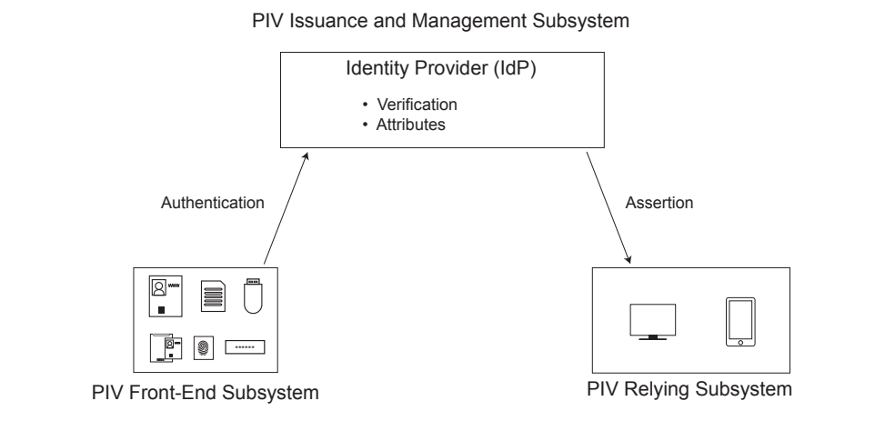

NIST FIPS 201-3 日本語訳
英語タイトル : Personal Identity Verification (PIV) of Federal Employees and Contractors日本語タイトル : 連邦職員および請負業者の個人識別検証（PIV）
公開日 : 2022-01-24
原文URL : https://csrc.nist.gov/pubs/fips/201-3/final
翻訳編集 : 自動生成（有志による非公式の日本語訳）, 原文取得日 : 2026-10-25, 訳文 : 1425 / 1425 ブロック
[要約] FIPS 201-3 は、HSPD-12の管理目的とセキュリティ目的を満たす個人識別検証（PIV）システムの標準です。初回の身元確認、アイデンティティクレデンシャルの相互運用性を支える基盤、PIVクレデンシャルを発行する組織とプロセスの認定について要件を定めます。PIVカードの発行・維持管理、派生PIVクレデンシャル、プライバシー要件、物理的・論理的特性を扱い、変更管理の方針も示します。
FIPS PUB 201-3
FIPS PUB 201-3
Federal Information Processing Standards Publication (Supersedes FIPS 201-2)
連邦情報処理標準出版物（FIPS 201-2 を置き換える）
Personal Identity Verification (PIV) of Federal Employees and Contractors
連邦職員および契約業者の個人識別検証（PIV）
Category: Information Security
分類：情報セキュリティ
Subcategory: Identity
副分類：アイデンティティ
Information Technology Laboratory National Institute of Standards and Technology Gaithersburg, MD 20899-8900
情報技術研究所 米国国立標準技術研究所 Gaithersburg, MD 20899-8900
This publication is available free of charge from: https://doi.org/10.6028/NIST.FIPS.201-3
本出版物は次から無料で入手できる：https://doi.org/10.6028/NIST.FIPS.201-3
Issued January 2022
2022年1月発行
U.S. Department of Commerce Gina M. Raimondo, Secretary
商務省 長官 Gina M. Raimondo
National Institute of Standards and Technology
米国国立標準技術研究所
James K. Olthoff, Performing the Non-Exclusive Functions and Duties of the Under Secretary of Commerce for Standards and Technology & Director, National Institute of Standards and Technology
James K. Olthoff、商務次官（標準・技術担当）兼 米国国立標準技術研究所所長の非専属職務の代行者
FOREWORD
序文
The Federal Information Processing Standards Publication Series of the National Institute of Standards and Technology is the official series of publications relating to standards and guidelines adopted and promulgated under the provisions of the Federal Information Security Modernization Act (FISMA) of 2014.
米国国立標準技術研究所の連邦情報処理標準出版物シリーズは、2014年連邦情報セキュリティ近代化法（FISMA）の規定に基づいて採択・公布された標準およびガイドラインに関する公式の出版物シリーズです。
Comments concerning Federal Information Processing Standard publications are welcomed and should be addressed to the Director, Information Technology Laboratory, National Institute of Standards and Technology, 100 Bureau Drive, Stop 8900, Gaithersburg, MD 20899-8900.
連邦情報処理標準の出版物に関するコメントを歓迎します。コメントは Director, Information Technology Laboratory, National Institute of Standards and Technology, 100 Bureau Drive, Stop 8900, Gaithersburg, MD 20899-8900 宛てに送付することが望まれます。
Charles H. Romine, Director Information Technology Laboratory
Charles H. Romine, Director Information Technology Laboratory
ABSTRACT
要旨
Authentication of an individual’s identity is a fundamental component of physical and logical access control. An access control decision must be made when an individual attempts to access security-sensitive buildings, information systems, and applications. An accurate determination of an individual’s identity supports making sound access control decisions.
個人のアイデンティティの認証は、物理アクセス制御および論理アクセス制御の基本的な構成要素です。個人がセキュリティ上機微な建物、情報システム、アプリケーションにアクセスしようとする際には、アクセス制御の判断を行う必要があります。個人のアイデンティティを正確に判定することは、適切なアクセス制御の判断を支えます。
This document establishes a standard for a Personal Identity Verification (PIV) system that meets the control and security objectives of Homeland Security Presidential Directive-12. It is based on secure and reliable forms of identity credentials issued by the Federal Government to its employees and contractors. These credentials are used by mechanisms that authenticate individuals who require access to federally controlled facilities, information systems, and applications. This Standard addresses requirements for initial identity proofing, infrastructure to support interoperability of identity credentials, and accreditation of organizations and processes issuing PIV credentials.
本文書は、Homeland Security Presidential Directive-12 の管理目的およびセキュリティ目的を満たす個人識別検証（PIV）システムの標準を定めます。本標準は、連邦政府がその職員および契約業者に発行する、安全かつ信頼性の高い形式のアイデンティティクレデンシャルに基づきます。これらのクレデンシャルは、連邦政府が管理する施設、情報システム、アプリケーションへのアクセスを必要とする個人を認証する仕組みで使用されます。本標準は、初回の身元確認、アイデンティティクレデンシャルの相互運用性を支える基盤、ならびに PIV クレデンシャルを発行する組織およびプロセスの認定に関する要件を扱います。
Keywords: authentication, authenticator, biometrics, credential, cryptography, derived PIV credentials, digital identity, Federal Information Processing Standards (FIPS), HSPD-12, federation, identification, identity proofing, integrated circuit card, Personal Identity Verification, PIV, PIV identity account, public key infrastructure, verification
キーワード：認証、認証器、生体認証、クレデンシャル、暗号、派生 PIV クレデンシャル、デジタルアイデンティティ、連邦情報処理標準（FIPS）、HSPD-12、フェデレーション、識別、身元確認、IC カード、個人識別検証、PIV、PIV アイデンティティアカウント、公開鍵基盤、検証
Federal Information Processing Standards Publication 201-3
連邦情報処理標準出版物 201-3
January 2022
2022年1月
Announcing the Standard for Personal Identity Verification (PIV) of Federal Employees and Contractors
連邦職員および契約業者の個人識別検証（PIV）に関する標準の公布
Federal Information Processing Standards Publications (FIPS PUBS) are issued by the National Institute of Standards and Technology (NIST) after approval by the Secretary of Commerce pursuant to Section 5131 of the Information Technology Management Reform Act of 1996 (Public Law 104-106) and the Computer Security Act of 1987 (Public Law 100-235).
連邦情報処理標準出版物（FIPS PUBS）は、1996年情報技術管理改革法（Public Law 104-106）第5131条および1987年コンピュータセキュリティ法（Public Law 100-235）に従い、商務長官の承認を得て、米国国立標準技術研究所（NIST）が発行します。
1.Name of Standard. Personal Identity Verification (PIV) of Federal Employees and Contractors (FIPS 201-3).
1.標準の名称。連邦職員および契約業者の個人識別検証（PIV）（FIPS 201-3）。
2. Category of Standard.
2. 標準の分類。
Information Security. Subcategory. Identity.
情報セキュリティ。副分類。アイデンティティ。
3. Explanation.
3. 説明。
Homeland Security Presidential Directive-12 [HSPD-12], dated August 27, 2004, entitled “Policy for a Common Identification Standard for Federal Employees and Contractors,” directs the promulgation of a federal standard for secure and reliable forms of identification for federal employees and contractors. It further specifies secure and reliable identification that
2004年8月27日付の Homeland Security Presidential Directive-12 [HSPD-12]（表題「Policy for a Common Identification Standard for Federal Employees and Contractors」）は、連邦職員および契約業者のための安全かつ信頼性の高い形式の身分証明に関する連邦標準を公布するよう指示しています。同指令はさらに、安全かつ信頼性の高い身分証明として、次のものを規定しています。
a) is issued based on sound criteria for verifying an individual employee’s identity; b) is strongly resistant to identity fraud, tampering, counterfeiting, and terrorist exploitation; c) can be rapidly authenticated electronically; and d) is issued only by providers whose reliability has been established by an official accreditation process.
a) 個々の職員のアイデンティティを検証するための健全な基準に基づいて発行されます。b) アイデンティティ詐称、改ざん、偽造、およびテロリストによる悪用に対して高い耐性を持ちます。c) 電子的に迅速に認証できます。d) 公式の認定プロセスによって信頼性が確立された提供者のみが発行します。
The directive stipulates that the Standard include graduated criteria from least secure to most secure in order to ensure flexibility in selecting the appropriate level of security for each application. Executive departments and agencies are required to implement the Standard for identification issued to federal employees and contractors in gaining physical access to controlled facilities and logical access to controlled information systems.
同指令は、各用途に適したセキュリティレベルを柔軟に選択できるよう、最も安全性の低いものから最も安全性の高いものまで段階的な基準を本標準に含めることを定めています。行政各省および各機関は、連邦職員および契約業者が管理対象施設への物理アクセスおよび管理対象情報システムへの論理アクセスを得るために発行される身分証明について、本標準を実施することが求められます。
4. Approving Authority.
4. 承認機関。
Secretary of Commerce.
商務長官。
5.Maintenance Agency. Department of Commerce, NIST, Information Technology Laboratory (ITL).
5.保守機関。商務省、NIST、情報技術研究所（ITL）。
6.Applicability. This Standard is applicable to identification issued by federal departments and agencies to federal employees and contractors for gaining physical access to federally controlled facilities and logical access to federally controlled information systems, except for “national security systems” as defined by 44 U.S.C. 3542(b)(2) and [SP 800-59]. Except as provided in [HSPD-12], nothing in this Standard alters the ability of government entities to use the Standard for additional applications.
6.適用範囲。本標準は、連邦政府が管理する施設への物理アクセスおよび連邦政府が管理する情報システムへの論理アクセスを得るために、連邦省庁が連邦職員および契約業者に発行する身分証明に適用されます。ただし、44 U.S.C. 3542(b)(2) および [SP 800-59] で定義される「国家安全保障システム」は除きます。[HSPD-12] に定める場合を除き、本標準のいかなる規定も、政府機関が本標準を追加の用途に使用する能力を変更するものではありません。
6.1 Special-Risk Security Provision. The U.S. Government has personnel, facilities, and other assets deployed and operating worldwide under a vast range of threats (e.g., terrorist, technical, intelligence), the severity of which is particularly heightened overseas. For cardholders with particularly sensitive threats while outside of the contiguous United States, the issuance, holding, and/or use of PIV credentials with full technical capabilities as described herein may result in unacceptably high risk. In such cases of risk (e.g., to facilities, individuals, operations, national interest, or national security) by the presence and/or use of full-capability PIV credentials, the head of a department or independent agency may issue a select number of maximum-security PIV credentials that do not contain (or otherwise do not fully support) the wireless and/or biometric capabilities otherwise required/referenced herein. To the greatest extent practicable, heads of departments and independent agencies should minimize the issuance of such special-risk security PIV credentials so as to support interagency interoperability and the President’s policy. Use of other risk-mitigating technical (e.g., high-assurance on/off switches for the wireless capability) and procedural mechanisms in such situations is preferable and, as such, is also explicitly permitted and encouraged. As protective security technology advances, the need for this provision will be reassessed when the Standard undergoes the normal review and update process.
6.1 特別リスクに対するセキュリティ規定。米国政府は、多様な脅威（例：テロ、技術的脅威、諜報）の下で世界各地に人員、施設、その他の資産を展開・運用しており、その深刻度は海外において特に高いです。米国本土外にいる間に特に機微な脅威にさらされるカード保有者については、本書に記述する完全な技術的機能を備えた PIV クレデンシャルの発行、保持、または使用、あるいはそれらの組み合わせが、許容できないほど高いリスクをもたらす可能性があります。完全な機能を備えた PIV クレデンシャルの存在または使用、あるいはその両方によって（例：施設、個人、業務、国益、または国家安全保障に対する）このようなリスクが生じる場合、省または独立機関の長は、本書で別途要求または参照される無線機能または生体機能、あるいはその両方を含まない（または完全にはサポートしない）最高セキュリティの PIV クレデンシャルを、選定した数だけ発行してもよいです。省および独立機関の長は、機関間の相互運用性と大統領の方針を支えるため、このような特別リスク向けセキュリティ PIV クレデンシャルの発行を実行可能な限り最小限にすることが望まれます。このような状況では、他のリスク低減のための技術的仕組み（例：無線機能の高保証のオン／オフスイッチ）および手続き的仕組みを使用することが望ましく、したがってそれらも明示的に許可され、推奨されます。保護セキュリティ技術の進歩に伴い、本規定の必要性は、本標準が通常の見直しおよび更新プロセスを経る際に再評価されます。
7.Implementations. This Standard satisfies the control objectives, security requirements, and technical interoperability requirements of [HSPD-12]. The Standard specifies implementation and processes for binding identities to authenticators, such as integrated circuit cards and derived credentials used in the federal PIV system.
7.実装。本標準は、[HSPD-12] の管理目的、セキュリティ要件、および技術的相互運用性要件を満たします。本標準は、連邦 PIV システムで使用される IC カードや派生クレデンシャルなどの認証器にアイデンティティを結び付けるための実装とプロセスを規定します。
In implementing PIV systems and pursuant to Section 508 of the Rehabilitation Act of 1973 (the Act), as amended, agencies have the responsibility to accommodate federal employees and contractors with disabilities to have access to and use of information and data comparable to the access to and use of such information and data by federal employees and contractors who are not individuals with disabilities. In instances where federal agencies assert exceptions to Section 508 accessibility requirements (e.g., undue burden, national security, commercial non-availability), Sections 501 and 504 of the Act require federal agencies to provide reasonable accommodation for federal employees and contractors with disabilities whose needs are not met by the baseline accessibility provided under Section 508. While Section 508 compliance is the responsibility of federal agencies and departments, this Standard specifies several options to aid in the implementation of the requirements:
PIV システムを実装するにあたり、改正後の1973年リハビリテーション法（以下「同法」）第508条に従い、各機関は、障害のある連邦職員および契約業者が、障害のない連邦職員および契約業者による情報およびデータへのアクセスおよび利用と同等に、情報およびデータにアクセスし利用できるよう配慮する責任を負います。連邦機関が第508条のアクセシビリティ要件の例外（例：過度の負担、国家安全保障、商業的に入手不可能）を主張する場合、同法第501条および第504条は、第508条に基づいて提供される基本的なアクセシビリティでは必要が満たされない障害のある連邦職員および契約業者に対し、合理的配慮を提供するよう連邦機関に求めています。第508条への準拠は連邦省庁の責任であるが、本標準は要件の実装を支援するためにいくつかの選択肢を規定しています。
•Section 4.1.4.3 specifies Zones 21F and 22F as options for orientation markers of the PIV Card.
•4.1.4.3節は、PIV カードの向きを示すマーカーの選択肢として、Zone 21F および Zone 22F を規定しています。
•Section 2.8 and Section 2.9 specify alternatives for the biometric capture device interactions required at PIV Card issuance, reissuance, and reset.
•2.8節および2.9節は、PIV カードの発行、再発行、およびリセット時に必要な生体情報取得装置の操作に対する代替手段を規定しています。
•Section 2.10 defines alternatives to smart card-based PIV credentials in the form of derived PIV credentials.
•2.10節は、スマートカードベースの PIV クレデンシャルの代替として、派生 PIV クレデンシャルの形態を定義しています。
•Section 6 defines authentication mechanisms with varying characteristics for both physical and logical access (e.g., with or without PIN, over contact, contactless, or virtual contact interface).
•6章は、物理アクセスと論理アクセスの両方について、特性の異なる認証メカニズム（例：PIN の有無、接触、非接触、または仮想接触インタフェース経由）を定義しています。
•Section 7 defines federation as a means for a relying system to interoperate with credentials issued by other agencies.
•7章は、依拠システムが他機関の発行したクレデンシャルと相互運用するための手段として、フェデレーションを定義しています。
The Office of Management and Budget (OMB) provides implementation oversight for this Standard.
行政管理予算局（OMB）が本標準の実施を監督します。
PIV Cards can only be issued by accredited issuers. The responsibility and authority for PIV Card issuance and management rests in the departments and agencies employing federal employees and contractors regardless of whether these functions are performed in-house or outsourced to an external public or private organization. To ensure consistency in the operations of issuers, NIST provides guidelines for the accreditation of PIV Card issuers and derived PIV credential issuers in [SP 800-79]. The Standard also covers security and interoperability requirements for PIV Cards. For this purpose, NIST has established the PIV Validation Program, which tests implementations for conformance with this Standard as specified in [SP 800-73] and [SP 800-78] (see Appendix A.3).
PIV カードは、認定された発行者のみが発行できます。PIV カードの発行および管理に関する責任と権限は、これらの機能を内部で実施するか外部の公的組織または民間組織に委託するかにかかわらず、連邦職員および契約業者を雇用する省庁にあります。発行者の運用の一貫性を確保するため、NIST は PIV カード発行者および派生 PIV クレデンシャル発行者の認定に関するガイドラインを [SP 800-79] で提供しています。本標準は、PIV カードのセキュリティ要件および相互運用性要件も対象とします。このため NIST は PIV Validation Program を設置しており、同プログラムは [SP 800-73] および [SP 800-78] に規定されるとおり、実装が本標準に適合しているかを試験します（付録 A.3 を参照してください）。
FIPS 201 compliance of PIV components and subsystems is provided in accordance with OMB [M-19-17] through products and services from the U.S. General Services Administration’s (GSA) Interoperability Test Program and Approved Products and Services List (see Appendix A.5). Implementation guidance for PIV-enabled federal facilities and information systems in accordance with OMB [M-19-17] will be outlined by [FICAM-Roadmap] as playbooks and best practice repositories. See also [SP 800-116] and [ISC-RISK].
PIV のコンポーネントおよびサブシステムの FIPS 201 準拠は、OMB [M-19-17] に従い、米国一般調達局（GSA）の Interoperability Test Program および Approved Products and Services List の製品とサービスを通じて提供されます（付録 A.5 を参照してください）。OMB [M-19-17] に従った PIV 対応の連邦施設および情報システムの実装ガイダンスは、[FICAM-Roadmap] においてプレイブックおよびベストプラクティスのリポジトリとして示される予定です。[SP 800-116] および [ISC-RISK] も参照のこと。
8.Patents. Aspects of the implementation of this Standard may be covered by U.S. or foreign patents.
8.特許。本標準の実装の一部は、米国または外国の特許の対象となる場合があります。
9.Effective Date. This Standard will be effective immediately upon final publication of this revision, superseding FIPS 201-2. The Standard includes new and updated features as well as features that are being deprecated or removed as outlined in the revision history in Appendix E. The effective dates of these features depend upon the release of revised or new NIST Special Publications that will be developed following the publication of this Standard. An enumeration of NIST Special Publications associated with this Standard is provided in Section 1.4. Per item 7 of this preamble, OMB provides implementation oversight for this Standard. The implementation schedule may be reflected in NIST’s Special Publications or may be provided separately by OMB, as appropriate.
9.発効日。本標準は、本改訂版の最終版の公表をもって直ちに発効し、FIPS 201-2 に取って代わります。本標準には、付録 E の改訂履歴に示すとおり、新規および更新された機能ならびに非推奨化または削除される機能が含まれます。これらの機能の発効日は、本標準の公表後に策定される NIST Special Publications の改訂版または新規版の公開に依存します。本標準に関連する NIST Special Publications の一覧は1.4節に示します。本前文の第7項に従い、OMB が本標準の実施を監督します。実施スケジュールは、必要に応じて NIST の Special Publications に反映されるか、OMB から別途示されます。
10.Specifications. Federal Information Processing Standards (FIPS) 201 Personal Identity Verification (PIV) of Federal Employees and Contractors.
10.仕様。連邦情報処理標準（FIPS）201 連邦職員および契約業者の個人識別検証（PIV）。
11.Qualifications. The security provided by the PIV system is dependent on many factors outside the scope of this Standard. Organizations must be aware that the overall security of the PIV system relies on
11.留意事項。PIV システムが提供するセキュリティは、本標準の適用範囲外にある多くの要因に依存します。組織は、PIV システム全体のセキュリティが次のものに依存することを認識しなければなりません。
•assurance provided by the issuer of an identity credential that the individual in possession of the credential has been correctly identified;
•アイデンティティクレデンシャルの発行者が、そのクレデンシャルを所持する個人が正しく識別されていることについて提供する保証
•protection provided to an identity credential stored within the PIV Card and transmitted between the card and the PIV issuance and relying subsystems;
•PIV カード内に格納され、カードと PIV 発行サブシステムおよび依拠サブシステムとの間で送信されるアイデンティティクレデンシャルに対して提供される保護
•infrastructure protection provided for derived PIV credentials in the binding, maintenance, and use of the identity credential; and
•アイデンティティクレデンシャルのバインディング、維持、および使用において、派生 PIV クレデンシャルに対して提供されるインフラストラクチャの保護
•protection provided to the PIV system infrastructure and components throughout the entire lifecycle.
•ライフサイクル全体を通じて PIV システムのインフラストラクチャおよびコンポーネントに対して提供される保護
Although it is the intent of this Standard to specify mechanisms and support systems that provide high assurance personal identity verification, conformance to this Standard does not assure that a particular implementation is secure. It is the implementer’s responsibility to ensure that components, interfaces, communications, storage media, managerial processes, and services used within the PIV system are designed and built in a secure manner.
本標準は高保証の個人識別検証を提供するメカニズムと支援システムを規定することを意図しているが、本標準への適合は特定の実装が安全であることを保証するものではありません。PIV システム内で使用されるコンポーネント、インタフェース、通信、記憶媒体、管理プロセス、およびサービスが安全な方法で設計・構築されることを確保するのは、実装者の責任です。
Similarly, the use of a product that conforms to this Standard does not guarantee the security of the overall system in which the product is used. The responsible authority in each department and agency must ensure that an overall system provides the acceptable level of security.
同様に、本標準に適合する製品を使用しても、その製品が使用されるシステム全体のセキュリティは保証されません。各省庁の責任ある権限者は、システム全体が許容可能なレベルのセキュリティを提供することを確保しなければなりません。
Because a standard of this nature must be flexible enough to adapt to advancements and innovations in science and technology, NIST has a policy to review this Standard within five years to assess its adequacy.
この種の標準は科学技術の進歩と革新に適応できる柔軟性を備えていなければならないため、NIST は本標準を5年以内に見直し、その妥当性を評価する方針をとっています。
12.Waiver Procedure. FISMA does not allow for waivers to a FIPS that is made mandatory by the Secretary of Commerce.
12.免除手続き。FISMA は、商務長官が義務化した FIPS に対する免除を認めていません。
13. Where to Obtain Copies of the Standard.
13. 標準の入手先。
This publication is available through the internet by accessing https://csrc.nist.gov/publications/. Other computer security publications are available at the same website.
本出版物は、インターネット上の https://csrc.nist.gov/publications/ から入手できます。その他のコンピュータセキュリティ関連の出版物も同じウェブサイトで入手できます。
Table of Contents
目次
Federal Information Processing Standards Publication
連邦情報処理標準出版物
January
2022年1月
Standard for
標準
Personal Identity Verification (PIV)
個人識別検証（PIV）
of Federal Employees and Contractors
連邦職員および契約業者向け
List of Tables
表一覧
List of Figures
図一覧
Fig. 3-1 PIV System OverviewFig. 3-2 PIV Card Lifecycle ActivitiesFig. 3-3 PIV System ConnectionsFig. 3-4 PIV System Federation ConnectionsFig. 4-1 Card Front: Printable Areas and Required DataFig. 4-2 Card Front: Optional Data Placement (Example 1)Fig. 4-3 Card Front: Optional Data Placement (Example 2)Fig. 4-4 Card Front: Optional Data Placement (Example 3)Fig. 4-5 Card Front: Optional Data Placement (Example 4)Fig. 4-6 Card Back: Printable Areas and Required DataFig. 4-7 Card Back: Optional Data Placement (Example 1)Fig. 4-8 Card Back: Optional Data Placement (Example 2)
Fig. 3-1 PIV System OverviewFig. 3-2 PIV Card Lifecycle ActivitiesFig. 3-3 PIV System ConnectionsFig. 3-4 PIV System Federation ConnectionsFig. 4-1 Card Front: Printable Areas and Required DataFig. 4-2 Card Front: Optional Data Placement (Example 1)Fig. 4-3 Card Front: Optional Data Placement (Example 2)Fig. 4-4 Card Front: Optional Data Placement (Example 3)Fig. 4-5 Card Front: Optional Data Placement (Example 4)Fig. 4-6 Card Back: Printable Areas and Required DataFig. 4-7 Card Back: Optional Data Placement (Example 1)Fig. 4-8 Card Back: Optional Data Placement (Example 2)
1. Introduction
1. はじめに
This section is informative except where otherwise marked as normative. It provides background information for understanding the scope of this Standard.
本節は、規範的と明記された箇所を除き、参考情報です。本節は、本標準の適用範囲を理解するための背景情報を提供します。
Authentication of an individual’s identity is a fundamental component of both physical and logical access control. An access control decision must be made when an individual attempts to access security-sensitive buildings, information systems, and applications. An accurate determination of an individual’s identity supports making sound access control decisions.
個人のアイデンティティの認証は、物理アクセス制御と論理アクセス制御の双方における基本的な構成要素です。個人がセキュリティ上重要な建物、情報システム、およびアプリケーションにアクセスしようとするときには、アクセス制御の判断を行わなければなりません。個人のアイデンティティを正確に判定することは、適切なアクセス制御の判断を下すことを支えます。
In the past, various mechanisms have been employed to authenticate an individual. These include hand-carried credentials such as badges and driver’s licenses for physical access to federal facilities and passwords for logical access to federal information systems. Today, cryptographic mechanisms and biometric techniques are replacing these legacy mechanisms in both physical and logical access applications.
従来、個人の認証にはさまざまなメカニズムが用いられてきました。たとえば、連邦施設への物理アクセスにはバッジや運転免許証などの携行型の身分証明が、連邦情報システムへの論理アクセスにはパスワードが用いられてきました。今日では、物理アクセスと論理アクセスの双方の用途において、暗号メカニズムと生体認証技術がこれらの従来型メカニズムに取って代わりつつあります。
This document establishes a Standard for a Personal Identity Verification (PIV) system that meets the control and security objectives of [HSPD-12]. The Standard specifies implementation and processes for binding identities to authenticators, such as integrated circuit cards and derived credentials used in the federal PIV system. The system is based on secure and reliable forms of identity credentials issued by the Federal Government to its employees and contractors. These credentials are intended to authenticate individuals who require access to federally-controlled facilities, information systems, and applications. The Standard addresses requirements for initial identity proofing, infrastructure to support interoperability of identity credentials, and accreditation of organizations and processes issuing PIV credentials.
本書は、[HSPD-12] の管理目的およびセキュリティ目的を満たす個人識別検証（PIV）システムの標準を定めます。本標準は、連邦 PIV システムで使用される IC カードや派生クレデンシャルなどの認証器にアイデンティティを結び付けるための実装とプロセスを規定します。このシステムは、連邦政府がその職員および契約業者に発行する、安全かつ信頼性の高い形式のアイデンティティクレデンシャルに基づきます。これらのクレデンシャルは、連邦政府が管理する施設、情報システム、およびアプリケーションへのアクセスを必要とする個人を認証することを目的とします。本標準は、初回の身元確認、アイデンティティクレデンシャルの相互運用性を支えるインフラストラクチャ、ならびに PIV クレデンシャルを発行する組織およびプロセスの認定に関する要件を扱います。
Each revision of this Standard incorporates lessons learned and adaptations to changes in the environment as experienced by departments and agencies. This revision broadens the definition of derived PIV credentials to accommodate a diverse and growing set of user device platforms. Interoperability of these PIV credentials across the federal government can be achieved via federation as outlined in this Standard and further defined in [SP 800-217]. As envisioned by OMB [M-19-17], this revision also expands lifecycle activities to encompass PIV identity accounts, where all PIV credentials including derived PIV credentials are managed and maintained.
本標準の各改訂版には、省庁が経験した教訓と環境の変化への適応が取り入れられています。本改訂版では、多様化し増加し続けるユーザーデバイスプラットフォームに対応するため、派生 PIV クレデンシャルの定義を拡大しています。連邦政府全体にわたるこれらの PIV クレデンシャルの相互運用性は、本標準で概説し [SP 800-217] でさらに定義するフェデレーションによって実現できます。また、OMB [M-19-17] が想定するとおり、本改訂版ではライフサイクル活動を拡張して PIV アイデンティティアカウントを含めています。PIV アイデンティティアカウントでは、派生 PIV クレデンシャルを含むすべての PIV クレデンシャルが管理・維持されます。
1.1 Purpose
1.1 目的
This Standard defines reliable, government-wide identity credentials for use in applications such as access to federally controlled facilities and information systems. This Standard has been developed within the context and constraints of federal laws, regulations, and policies based on currently available and evolving information processing technology.
本標準は、連邦政府が管理する施設や情報システムへのアクセスなどの用途で使用するための、信頼性の高い政府共通のアイデンティティクレデンシャルを定義します。本標準は、現在利用可能であり発展を続ける情報処理技術に基づき、連邦の法律、規則、および方針の文脈と制約の中で策定されています。
This Standard specifies a PIV system within which common identity credentials can be created and later used to verify a claimed identity. The Standard also identifies federal government-wide requirements for security levels that are dependent on risks to federal facilities or information being protected.
本標準は、共通のアイデンティティクレデンシャルを作成し、後にそれを使用して主張されたアイデンティティを検証できる PIV システムを規定します。また、本標準は、保護対象となる連邦施設または情報に対するリスクに応じて決まるセキュリティレベルについて、連邦政府共通の要件を特定します。
1.2 Scope
1.2 適用範囲
[HSPD-12], signed by President George W. Bush on August 27, 2004, established the requirements for a common identification standard for identity credentials issued by federal departments and agencies to federal employees and contractors (including contractor employees) for gaining physical access to federally controlled facilities and logical access to federally controlled information systems. HSPD-12 directs the Department of Commerce to develop a Federal Information Processing Standards (FIPS) publication to define such common identity credentials. In accordance with HSPD-12, this Standard defines the following technical requirements for these identity credentials:
2004年8月27日に George W. Bush 大統領が署名した [HSPD-12] は、連邦省庁が連邦職員および契約業者（契約業者の従業員を含む）に対し、連邦政府が管理する施設への物理アクセスおよび連邦政府が管理する情報システムへの論理アクセスを得るために発行するアイデンティティクレデンシャルについて、共通の識別標準の要件を定めました。HSPD-12 は、このような共通のアイデンティティクレデンシャルを定義する連邦情報処理標準（FIPS）出版物を策定するよう商務省に指示しています。HSPD-12 に従い、本標準はこれらのアイデンティティクレデンシャルについて次の技術要件を定めます。
•They are issued based on sound criteria for verifying an individual employee’s identity.
•個々の職員のアイデンティティを検証するための健全な基準に基づいて発行されます。
•They are strongly resistant to identity fraud, tampering, counterfeiting, and terrorist exploitation.
•アイデンティティ詐称、改ざん、偽造、およびテロリストによる悪用に対して高い耐性を持ちます。
•They can be rapidly authenticated electronically.
•電子的に迅速に認証できます。
•They are issued only by providers whose reliability has been established by an official accreditation process.
•公式の認定プロセスによって信頼性が確立された提供者のみが発行します。
Upon enrollment, a collection of records known as a PIV identity account is created and managed within the issuing department or agency’s enterprise identity management system (IDMS). The PIV identity account includes the attributes of the PIV cardholder, the enrollment data, and information regarding the PIV Card and any derived PIV credentials bound to the account.
登録時に、PIV アイデンティティアカウントと呼ばれる記録の集合が作成され、発行元の省庁のエンタープライズアイデンティティ管理システム（IDMS）内で管理されます。PIV アイデンティティアカウントには、PIV カード保有者の属性、登録データ、ならびに PIV カードおよびそのアカウントに結び付けられた派生 PIV クレデンシャルに関する情報が含まれます。
This Standard defines authentication mechanisms that offer varying degrees of security for both logical and physical access applications. Federal departments and agencies will determine the level of security and the authentication mechanisms appropriate for their applications. The scope of this Standard is limited to the authentication of an individual’s identity. Authorization and access control decisions are outside of the scope of this Standard. Moreover, requirements for a temporary credential used until a new or replacement PIV credential arrives are out of the scope of this Standard.
本標準は、論理アクセスと物理アクセスの双方の用途に対して、さまざまな程度のセキュリティを提供する認証メカニズムを定義します。連邦省庁は、自らの用途に適したセキュリティレベルと認証メカニズムを決定します。本標準の適用範囲は、個人のアイデンティティの認証に限定されます。認可およびアクセス制御の判断は、本標準の適用範囲外です。さらに、新規または交換用の PIV クレデンシャルが届くまでの間に使用する一時的なクレデンシャルに関する要件も、本標準の適用範囲外です。
While this Standard remains predominantly focused on PIV Cards, derived PIV credentials and federation protocols also play important roles in the use of PIV identity accounts. Section 2.10 of this Standard defines mechanisms for derived PIV credentials associated with an active PIV identity account. Derived PIV credentials have authentication and lifecycle requirements that may differ from the PIV Card itself. This Standard also discusses federation protocols in Section 7 as a means of accepting PIV credentials issued by other agencies. See Section 3 for more information on components of the PIV system.
本標準は引き続き主にPIVカードを対象としているが、派生PIVクレデンシャルとフェデレーションプロトコルもPIV アイデンティティアカウントの利用において重要な役割を果たします。本標準の2.10節では、有効なPIV アイデンティティアカウントに関連付けられた派生PIVクレデンシャルの仕組みを定義します。派生PIVクレデンシャルには、PIVカード自体とは異なる場合がある認証要件およびライフサイクル要件があります。本標準はまた、他の機関が発行したPIVクレデンシャルを受け入れる手段として、フェデレーションプロトコルを7節で論じます。PIVシステムの構成要素の詳細については3節を参照のこと。
1.3 Change Management
1.3 変更管理
Every revision of this Standard introduces refinements and changes that may impact existing implementations. FIPS 201 and associated normative specifications encourage implementation approaches that reduce the high cost of configuration and change management by architecting resilience into system processes and components. Nevertheless, changes and modifications are required over time.
本標準の改訂のたびに、既存の実装に影響を及ぼしうる改良と変更が導入されます。FIPS 201および関連する規範的仕様は、システムのプロセスと構成要素に耐性を組み込むことで、構成管理および変更管理の高いコストを削減する実装手法を推奨しています。それでもなお、時間の経過とともに変更や修正は必要となります。
This section provides change management principles and guidance to implementers of relying systems to manage newly introduced changes and modifications to the previous version of this Standard.
本節では、本標準の前版に対して新たに導入された変更や修正を管理するための変更管理の原則と手引きを、依拠システムの実装者に提供します。
1.3.1 Backward Compatible Change
1.3.1 後方互換性のある変更
A backward compatible change is a change or modification to an existing feature that does not break relying systems using the feature. For example, changing the card authentication certificate from optional to mandatory does not affect the systems using the card authentication certificate for authentication (i.e., using the PKI-CAK authentication mechanism).
後方互換性のある変更とは、既存の機能に対する変更または修正のうち、その機能を利用している依拠システムを壊さないものです。たとえば、カード認証証明書を任意から必須に変更しても、カード認証証明書を認証に使用している（すなわち、PKI-CAK認証メカニズムを使用している）システムには影響しません。
1.3.2 Backward Incompatible Change
1.3.2 後方互換性のない変更
A backward incompatible change is a change or modification to an existing feature such that the modified feature cannot be used with existing relying systems. For example, changing the format of the biometric data records would not be compatible with the existing system because a biometric authentication attempt with the modified format would fail. Similarly, changing the PIV Card Application Identifier (AID) (defined in [SP 800-73]) would be a backward incompatible change because all systems interacting with the PIV Card would need to to be modified to use the new AID.
後方互換性のない変更とは、既存の機能に対する変更または修正のうち、変更後の機能を既存の依拠システムで使用できなくなるものです。たとえば、生体データレコードの形式を変更すると、変更後の形式による生体認証の試行が失敗するため、既存システムとの互換性がなくなります。同様に、PIVカードアプリケーション識別子（AID）（[SP 800-73]で定義）を変更することは、PIVカードとやり取りするすべてのシステムを新しいAIDを使用するよう修正する必要があるため、後方互換性のない変更となります。
1.3.3 New Features
1.3.3 新機能
New features are features that are added to the Standard. These features can be optional or mandatory. New features do not interfere with backward compatibility because they are not part of the existing relying systems. For example, the optional biometric on-card comparison (OCC) authentication mechanism (OCC-AUTH) was a new feature introduced in FIPS 201-2. The optional mechanism did not affect the features of existing systems. Systems had to be updated only if an agency decided to support the OCC-AUTH mechanism.
新機能とは、本標準に追加される機能です。これらの機能は任意の場合も必須の場合もあります。新機能は既存の依拠システムの一部ではないため、後方互換性を妨げません。たとえば、任意のカード上生体照合（OCC）認証メカニズム（OCC-AUTH）は、FIPS 201-2で導入された新機能でした。この任意のメカニズムは既存システムの機能に影響しませんでした。システムの更新が必要となったのは、機関がOCC-AUTHメカニズムをサポートすると決定した場合のみでした。
1.3.4 Deprecated and Removed Features
1.3.4 非推奨および削除された機能
This subsection is normative.
本小節は規範的です。
When a feature is to be discontinued or is no longer needed, it is deprecated. In general, a feature that is currently in use by relying systems would only be deprecated if there were a compelling reason to do so (e.g., security). Deprecated features MAY continue to be used but SHOULD be phased out in future systems since the feature will likely be removed in the next revision of the Standard. Removed features SHALL NOT be used. For example, the CHUID authentication mechanism (Section 6.2.5) was previously deprecated in FIPS 201-2 and has been removed from this version of the Standard. Therefore, relying systems must not use this authentication mechanism.1 The PIV Visual Credentials (VIS) authentication mechanism (Section 6.2.6) has been deprecated as a stand-alone authentication mechanism, but it could still be used in conjunction with other authentication mechanisms.
機能が廃止される場合、または不要になった場合、その機能は非推奨とされます。一般に、依拠システムで現在使用されている機能が非推奨とされるのは、そうするだけの説得力のある理由（例：セキュリティ）がある場合に限られます。非推奨の機能は引き続き使用してよい（MAY）が、次回の本標準の改訂で削除される可能性が高いため、将来のシステムでは段階的に廃止することが望まれます（SHOULD）。削除された機能は使用してはなりません（SHALL NOT）。たとえば、CHUID認証メカニズム（6.2.5節）は以前FIPS 201-2で非推奨とされ、本版の標準から削除されました。したがって、依拠システムはこの認証メカニズムを使用してはなりません。1 PIV視覚クレデンシャル（VIS）認証メカニズム（6.2.6節）は単独の認証メカニズムとしては非推奨とされたが、他の認証メカニズムと組み合わせて引き続き使用することは可能です。
In the case of deprecated features on PIV Cards such as the magnetic stripe (Section 4.1.4.4), existing PIV Card stock with deprecated features remains valid. However, future PIV Card stock acquisitions SHOULD exclude the deprecated features.
磁気ストライプ（4.1.4.4節）など、PIVカード上の非推奨機能の場合、非推奨機能を備えた既存のPIVカードの在庫は引き続き有効です。ただし、今後のPIVカードの調達では非推奨機能を除外することが望まれます（SHOULD）。
1.3.5 FIPS 201 Version Management
1.3.5 FIPS 201のバージョン管理
Subsequent revisions of this Standard may necessitate FIPS 201 version management that introduces new version numbers for FIPS 201 products. Components that may be affected by version management include but are not limited to PIV Cards, PIV middleware software, and card issuance systems.
本標準の今後の改訂により、FIPS 201製品に新しいバージョン番号を導入するFIPS 201のバージョン管理が必要となる場合があります。バージョン管理の影響を受けうる構成要素には、PIVカード、PIVミドルウェアソフトウェア、カード発行システムなどがあるが、これらに限定されません。
New version numbers will be assigned in [SP 800-73], if needed, based on the nature of the change. For example, new mandatory features introduced in a revision of this Standard may necessitate a new PIV Card Application version number so that systems can quickly discover the new mandatory features. Optional features can be discovered by an on-card discovery mechanism.
新しいバージョン番号は、必要に応じて、変更の性質に基づき[SP 800-73]で割り当てられます。たとえば、本標準の改訂で導入された新しい必須機能については、システムが新しい必須機能をすぐに発見できるように、新しいPIVカードアプリケーションのバージョン番号が必要となる場合があります。任意の機能はカード上の発見メカニズムによって発見できます。
1.3.6 Section Number Stability
1.3.6 節番号の安定性
Section numbers have not been changed in this revision. While the general focus of each section’s content remain the same, some section titles have changed to better reflect the updated content. Any deleted sections have had their content removed and replaced with a removal notice while retaining the section header and number. New subsections have been added at the end of their respective sections with a new subsection number.
本改訂では節番号を変更していません。各節の内容の全般的な焦点は変わらないが、更新された内容をよりよく反映するため、一部の節の表題を変更しました。削除された節は、節の見出しと番号を残したまま内容を削除し、削除の旨の注記に置き換えました。新しい小節は、それぞれの節の末尾に新しい小節番号を付けて追加しました。
1.4 Document Organization
1.4 文書の構成
This Standard describes the minimum requirements for a federal personal identity verification system that meets the control and security objectives of [HSPD-12], including identity proofing, registration, and issuance. It provides detailed technical specifications to support the control and security objectives of [HSPD-12] as well as interoperability among federal departments and agencies. This Standard describes the policies and minimum requirements of a PIV Card and derived PIV credentials that allow interoperability of credentials for physical and logical access. It specifies the use of federation protocols as a means of accepting PIV Card credentials and derived PIV credentials issued by other agencies. The physical card characteristics, storage media, and data elements that make up identity credentials are specified in this Standard. The interfaces and card architecture for storing and retrieving identity credentials from a smart card are specified in [SP 800-73]. Similarly, the requirements for collection, formatting, and use of biometric data records are specified in [SP 800-76]. The requirements for cryptographic algorithms are specified in [SP 800-78]. The requirements for the accreditation of PIV Card issuers are specified in [SP 800-79]. The unique organizational codes for federal agencies are assigned in [SP 800-87]. The requirements for PIV Card readers are provided in [SP 800-96]. The format for encoding PIV enrollment records for import and export is specified in [SP 800-156]. The requirements for issuing derived PIV credentials are specified in [SP 800-157]. Guidelines for the use of federation with PIV Credentials will be specified in [SP 800-217].
本標準は、身元確認、登録、発行を含め、[HSPD-12]の管理目標およびセキュリティ目標を満たす連邦の個人識別検証システムの最低要件を記述します。本標準は、[HSPD-12]の管理目標およびセキュリティ目標と、連邦政府の省庁間の相互運用性を支える詳細な技術仕様を提供します。本標準は、物理アクセスおよび論理アクセスのためのクレデンシャルの相互運用を可能にする、PIVカードおよび派生PIVクレデンシャルのポリシーと最低要件を記述します。本標準は、他の機関が発行したPIVカードのクレデンシャルおよび派生PIVクレデンシャルを受け入れる手段としてのフェデレーションプロトコルの使用を規定します。アイデンティティクレデンシャルを構成する物理的なカードの特性、記憶媒体、データ要素は本標準で規定します。スマートカードにアイデンティティクレデンシャルを格納し、そこから取り出すためのインタフェースとカードアーキテクチャは[SP 800-73]で規定します。同様に、生体データレコードの収集、形式、使用に関する要件は[SP 800-76]で規定します。暗号アルゴリズムの要件は[SP 800-78]で規定します。PIVカード発行者の認定要件は[SP 800-79]で規定します。連邦機関の一意の組織コードは[SP 800-87]で割り当てます。PIVカードリーダーの要件は[SP 800-96]で示します。インポートおよびエクスポートのためにPIV登録レコードを符号化する形式は[SP 800-156]で規定します。派生PIVクレデンシャルの発行要件は[SP 800-157]で規定します。PIVクレデンシャルとのフェデレーションの使用に関するガイドラインは[SP 800-217]で規定する予定です。
This Standard contains normative references to other documents. Should normative text in this Standard conflict with normative text in a referenced document, the normative text in this Standard prevails for this Standard.
本標準は、他の文書への規範的参照を含みます。本標準の規範的記述が参照文書の規範的記述と矛盾する場合、本標準については本標準の規範的記述が優先します。
All sections in this document indicate whether they are normative (i.e., provide requirements for compliance) or informative (i.e., provide information details that do not affect compliance). This document is structured as follows:
本文書のすべての節には、規範的（すなわち、準拠のための要件を示す）か参考（すなわち、準拠に影響しない詳細情報を示す）かが明記されています。本文書の構成は次のとおりです。
•Section 1, Introduction, provides background information for understanding the scope of this Standard. This section is informative unless otherwise marked as normative.
•1節「Introduction」は、本標準の適用範囲を理解するための背景情報を示します。本節は、規範的と明記されている箇所を除き参考です。
•Section 2, Common Identification, Security, and Privacy Requirements, outlines the requirements for identity proofing, registration, and issuance by establishing the control and security objectives for compliance with [HSPD-12]. This section is normative.
•2節「Common Identification, Security, and Privacy Requirements」は、[HSPD-12]への準拠のための管理目標およびセキュリティ目標を定めることにより、身元確認、登録、発行の要件を概説します。本節は規範的です。
•Section 3, PIV System Overview, provides an overview of the different components of the PIV system. This section is informative.
•3節「PIV System Overview」は、PIVシステムのさまざまな構成要素の概要を示します。本節は参考です。
•Section 4, PIV Front-End Subsystem, provides the requirements for the components of the PIV front-end subsystem. It defines requirements for the PIV Card, logical data elements, biometric data records, cryptography, and card readers. This section is normative.
•4節「PIV Front-End Subsystem」は、PIVフロントエンドサブシステムの構成要素の要件を示します。PIVカード、論理データ要素、生体データレコード、暗号、カードリーダーの要件を定義します。本節は規範的です。
•Section 5, PIV Key Management Requirements, defines the processes and components required for managing a PIV Card’s lifecycle. It also provides the requirements and specifications related to key management. This section is normative.
•5節「PIV Key Management Requirements」は、PIVカードのライフサイクルの管理に必要なプロセスと構成要素を定義します。また、鍵管理に関連する要件と仕様を示します。本節は規範的です。
•Section 6, PIV Cardholder Authentication, defines a suite of authentication mechanisms that are supported by the PIV Card and their applicability in meeting the requirements of graduated levels of identity assurance. This section is normative.
•6節「PIV Cardholder Authentication」は、PIVカードがサポートする一連の認証メカニズムと、段階的な身元保証レベルの要件を満たすうえでのそれらの適用可能性を定義します。本節は規範的です。
•Section 7, Federation, defines a set of mechanisms for using federation technologies to interoperate with PIV credentials issued by other agencies. This section is normative.
•7節「Federation」は、フェデレーション技術を用いて他の機関が発行したPIVクレデンシャルと相互運用するための一連のメカニズムを定義します。本節は規範的です。
•Appendix A, PIV Validation, Certification, and Accreditation, provides additional information regarding compliance with this document. This appendix is normative.
•付録A「PIV Validation, Certification, and Accreditation」は、本文書への準拠に関する追加情報を示します。本付録は規範的です。
•Appendix B, PIV Object Identifiers and Certificate Extension, provides additional details for the PIV objects identified in Section 4. This appendix is normative.
•付録B「PIV Object Identifiers and Certificate Extension」は、4節で識別されるPIVオブジェクトに関する追加の詳細を示します。本付録は規範的です。
•Appendix C, Glossary of Terms, Acronyms, and Notations, describes the vocabulary and textual representations used in the document. This appendix is informative.
•付録C「Glossary of Terms, Acronyms, and Notations」は、本文書で使用する用語と表記を記述します。本付録は参考です。
•Appendix D, References, lists the specifications and standards referred to in this document. This appendix is informative.
•付録D「References」は、本文書で参照する仕様と標準を列挙します。本付録は参考です。
•Appendix E, Revision History, lists changes made to this Standard from its inception. This appendix is informative.
•付録E「Revision History」は、本標準の制定以来の変更を列挙します。本付録は参考です。
2. Common Identification, Security, and Privacy Requirements
2. 共通の識別、セキュリティ、プライバシー要件
This section is normative. It addresses the fundamental control and security objectives outlined in [HSPD-12], including the identity proofing requirements for federal employees and contractors.
本節は規範的です。本節は、連邦職員および契約者の身元確認要件を含め、[HSPD-12]に示された基本的な管理目標およびセキュリティ目標を扱います。
Note that identity proofing, registration, issuance and maintenance processes outlined in this section, or portions thereof, may be outsourced by the issuer to third-party organizations or service providers. For further details on outsourcing issuer functions, refer to Section 2.2 of [SP 800-79].
本節で概説する身元確認、登録、発行、維持のプロセスの全部または一部は、発行者が第三者組織またはサービスプロバイダに外部委託してよいことに注意されました。発行者の機能の外部委託の詳細については、[SP 800-79]の2.2節を参照のこと。
2.1 Control Objectives
2.1 管理目標
[HSPD-12] establishes control objectives for secure and reliable identification of federal employees and contractors. These control objectives, provided in paragraph 3 of the directive, are quoted here:
[HSPD-12]は、連邦職員および契約者の安全で信頼できる識別のための管理目標を定めています。この指令の第3項に示されたこれらの管理目標を、以下に引用します。
(3) “Secure and reliable forms of identification” for purposes of this directive means identification that (a) is issued based on sound criteria for verifying an individual employee’s identity; (b) is strongly resistant to identity fraud, tampering, counterfeiting, and terrorist exploitation; (c) can be rapidly authenticated electronically; and (d) is issued only by providers whose reliability has been established by an official accreditation process.
(3) 本指令の目的における「安全で信頼できる識別の形態」とは、(a) 個々の職員の身元を検証するための健全な基準に基づいて発行され、(b) 身元詐称、改ざん、偽造、テロリストによる悪用に強い耐性を持ち、(c) 電子的に迅速に認証でき、(d) 公式の認定プロセスによって信頼性が確立されたプロバイダによってのみ発行される識別を意味します。
Each agency’s PIV implementation SHALL meet the control objectives listed above including, but not limited to, processes that ensure that
各機関のPIV実装は、上記の管理目標を満たさなければなりません（SHALL）。これには、次のことを確保するプロセスが含まれるが、これらに限定されません。
•A credential is issued to an individual only after a proper authority has authorized issuance of the credential, the individual’s identity has been verified, and the individual has been vetted per Section 2.2.
•クレデンシャルは、適切な権限者がクレデンシャルの発行を承認し、個人の身元が検証され、2.2節に従って個人の審査が行われた後にのみ、その個人に発行されます。
•A credential is issued only after an individual’s eligibility has been favorably adjudicated based on the prerequisite federal investigation (See Section 2.2). If there is no investigation meeting the investigative standards, the PIV credential eligibility may be approved upon favorable initiation of the prerequisite investigation2 and once the Federal Bureau of Investigation (FBI) National Criminal History Check (NCHC) portion of the background investigation is completed and favorably adjudicated.
•クレデンシャルは、前提となる連邦の調査に基づいて個人の適格性が肯定的に判定された後にのみ発行されます（2.2節を参照してください）。調査基準を満たす調査が存在しない場合、前提となる調査が問題なく開始され2、かつ身元調査のうち連邦捜査局（FBI）の全米犯罪歴チェック（NCHC）の部分が完了して肯定的に判定された時点で、PIVクレデンシャルの適格性を承認してもよいです。
•An individual is issued a credential only after presenting two identity source documents, at least one of which is a Federal or State Government-issued picture ID.
•個人にクレデンシャルが発行されるのは、2つの身元証明書類を提示した後のみであり、そのうち少なくとも1つは連邦政府または州政府が発行した写真付き身分証明書です。
•Fraudulent identity source documents are not accepted as genuine or unaltered.
•偽造された身元証明書類は、真正または未改変のものとして受理されません。
•A person suspected or known to the government as being a terrorist is not issued a credential.
•テロリストであると政府が疑う、または知っている者には、クレデンシャルは発行されません。
•No substitution occurs in the identity proofing process. More specifically, the individual who appears for identity proofing and whose fingerprints are checked against databases is the person to whom the credential is issued.
•身元確認プロセスにおいて替え玉は生じない。より具体的には、身元確認のために出頭し、指紋をデータベースと照合された個人が、クレデンシャルの発行を受ける者です。
•No credential is issued unless requested by the proper authority.
•適切な権限者からの要求がない限り、クレデンシャルは発行されません。
•A credential remains serviceable only up to its expiration date.
•クレデンシャルは有効期限までに限り使用可能です。
•A process exists to invalidate, revoke, or destroy credentials when the cardholder loses eligibility or when the credential is lost, stolen, or compromised.
•カード保有者が適格性を失った場合、またはクレデンシャルが紛失、盗難、侵害された場合に、クレデンシャルを無効化、失効、または破棄するプロセスが存在します。
•A single corrupt official in the process cannot issue a credential with an incorrect identity or to a person not entitled to the credential.
•プロセス内の不正な職員が1人いるだけでは、誤った身元のクレデンシャルを発行したり、クレデンシャルを受ける資格のない者にクレデンシャルを発行したりすることはできません。
•An issued credential is not duplicated or forged.
•発行されたクレデンシャルは複製または偽造されません。
•An issued credential is not modified by an unauthorized entity.
•発行されたクレデンシャルは、権限のない主体によって変更されません。
2.2 Credentialing Requirements
2.2 クレデンシャル発行要件
Federal departments and agencies SHALL use the credentialing eligibility standards issued by the Director of the Office of Personnel Management (OPM)3 and OMB.4
連邦政府の省庁は、人事管理局（OPM）長官3およびOMB4が発行したクレデンシャル発行の適格性基準を使用しなければなりません（SHALL）。
Federal departments and agencies must follow investigative requirements established by the Suitability and Credentialing Executive Agent and the Security Executive Agent. Departments and agencies SHALL use position designation guidance issued by the Executive Agents. The designation of the position determines the prerequisite investigative requirement. Individuals being processed for a PIV Card SHALL receive the required investigation and are subject to any applicable reinvestigation or continuous vetting requirements to maintain their PIV eligibility.
連邦政府の省庁は、適性・クレデンシャル発行執行機関（Suitability and Credentialing Executive Agent）およびセキュリティ執行機関（Security Executive Agent）が定めた調査要件に従わなければなりません。省庁は、執行機関が発行した職位指定の手引きを使用しなければなりません（SHALL）。職位の指定によって、前提となる調査要件が決まります。PIVカードの手続き対象となる個人は、必要な調査を受けなければならず（SHALL）、PIV適格性を維持するために、該当する再調査または継続的審査の要件に従います。
The minimum requirement for PIV Credential eligibility determination is a completed and favorably adjudicated Tier 1 investigation, formerly called a National Agency Check with Written Inquiries (NACI).5
PIVクレデンシャルの適格性判定の最低要件は、以前はNational Agency Check with Written Inquiries（NACI）と呼ばれていたTier 1調査が完了し、肯定的に判定されていることです。5
For individuals for whom no prior investigation exists, the appropriate required investigation SHALL be initiated with the authorized federal investigative service provider and the FBI NCHC portion of the background investigation SHALL be completed and favorably adjudicated prior to PIV Card issuance.
過去の調査が存在しない個人については、PIVカードの発行前に、権限を有する連邦調査サービスプロバイダに適切な必須調査を開始させなければならず（SHALL）、身元調査のうちFBI NCHCの部分を完了し肯定的に判定しなければなりません（SHALL）。
Once the investigation is completed, the authorized adjudicative entity SHALL adjudicate the investigation and report the final eligibility determination to the Central Verification System (or successor) and, if applicable, their enrollment in the Continuous Vetting Program as defined in [EO 13764]. This determination SHALL be recorded in or referenced by the PIV enrollment record to reflect PIV eligibility for the PIV cardholder.
調査が完了したら、権限を有する判定主体は調査を判定し、最終的な適格性判定と、該当する場合は[EO 13764]で定義される継続的審査プログラムへの登録状況を、中央検証システム（Central Verification System、またはその後継）に報告しなければなりません（SHALL）。この判定は、PIVカード保有者のPIV適格性を反映するため、PIV登録レコードに記録するか、PIV登録レコードから参照されなければなりません（SHALL）。
For full guidance on PIV credentialing investigative and adjudicative requirements, to include continuous vetting, issuers must work closely with their personnel security/suitability offices to ensure adherence to the latest federal personnel vetting guidance as provided by the Executive Agents.
継続的審査を含むPIVクレデンシャル発行の調査要件および判定要件に関する完全な手引きについては、発行者は人事セキュリティ・適性担当部署と緊密に連携し、執行機関が提供する最新の連邦人事審査の手引きを確実に遵守しなければなりません。
2.3 Biometric Data Collection for Background Investigations
2.3 身元調査のための生体データ収集
This section applies to applicants that do not have a completed and favorably adjudicated Tier 1 or higher federal background investigation on record that can be located and referenced.
本節は、所在を確認して参照できる、完了し肯定的に判定されたTier 1以上の連邦身元調査の記録を持たない申請者に適用します。
A full set of fingerprints SHALL be collected from each PIV applicant who is lacking an on-record background investigation.
記録上の身元調査がない各PIV申請者からは、指紋一式を収集しなければなりません（SHALL）。
Biometric identification using fingerprints is the primary input to law enforcement checks. In cases where ten fingerprints are not available, then as many fingers as possible SHALL be imaged as per guidance in [SP 800-76]. In cases where no fingers are available to be imaged, agencies SHALL seek guidance from their respective investigative service provider for alternative means of performing law enforcement checks.
指紋を用いた生体識別は、法執行機関による照会の主要な入力です。10指の指紋が得られない場合は、[SP 800-76]の手引きに従い、可能な限り多くの指を撮像しなければなりません（SHALL）。撮像できる指がない場合、機関は法執行機関による照会を行う代替手段について、それぞれの調査サービスプロバイダに手引きを求めなければなりません（SHALL）。
Fingerprint collection SHALL conform to the procedural and technical specifications of [SP 800-76].
指紋の収集は、[SP 800-76]の手続き上および技術上の仕様に適合しなければなりません（SHALL）。
2.4 Biometric Data Collection for PIV Card
2.4 PIVカードのための生体データ収集
The following biometric data SHALL be collected from each PIV applicant:
各PIV申請者から、次の生体データを収集しなければなりません（SHALL）。
•Two fingerprints for off-card one-to-one comparison. These fingerprints MAY be taken from the full set of fingerprints collected in Section 2.3.
•カード外での1対1照合のための2指の指紋。これらの指紋は、2.3節で収集した指紋一式から取得してもよいです（MAY）。
•An electronic facial image.
•電子顔画像。
The following biometric data MAY be collected from a PIV applicant:
PIV申請者から、次の生体データを収集してもよいです（MAY）。
•An electronic image of the left iris.
•左目の虹彩の電子画像。
•An electronic image of the right iris.
•右目の虹彩の電子画像。
•Two fingerprints for on-card comparison (OCC). These fingerprints MAY be taken from the full set of fingerprints collected in Section 2.3 and SHOULD be imaged from fingers not imaged for off-card one-to-one comparison.
•カード上照合（OCC）のための2指の指紋。これらの指紋は、2.3節で収集した指紋一式から取得してよく（MAY）、カード外での1対1照合用に撮像していない指から撮像することが望まれます（SHOULD）。
If the identity proofing and enrollment process is performed over multiple visits, an automated biometric verification attempt comparing the applicant’s newly captured biometric characteristics against biometric data collected during a previous visit SHALL be performed at each visit and return a positive verification decision.
身元確認および登録のプロセスが複数回の来訪にわたって行われる場合、各来訪時に、申請者の新たに取得した生体特性を以前の来訪時に収集した生体データと比較する自動生体検証を試行し、肯定的な検証判定が得られなければなりません（SHALL）。
If biometric data was collected as specified in Section 2.3 and if collection of biometric data as specified in this section and in Section 2.3 occur on separate occasions, a biometric comparison SHALL be performed to confirm that the two fingerprints collected for off-card one-to-one comparisons elicit a positive biometric verification decision when compared to the same two fingerprints from the original set of ten fingerprints.
2.3節の規定に従って生体データを収集し、かつ本節および2.3節の規定に従った生体データの収集が別々の機会に行われる場合、カード外での1対1照合用に収集した2指の指紋が、元の10指の指紋一式に含まれる同じ2指の指紋と比較して肯定的な生体検証判定となることを確認するため、生体照合を実施しなければなりません（SHALL）。
Biometric data collection SHALL conform to the procedural and technical specifications of [SP 800-76]. The choice of fingers to use for mandatory fingerprint templates and optional fingerprint templates MAY vary between persons. The recommended selection and order is specified in [SP 800-76].
生体データの収集は、[SP 800-76]の手続き上および技術上の仕様に適合しなければなりません（SHALL）。必須の指紋テンプレートと任意の指紋テンプレートに使用する指の選択は、人によって異なってもよいです（MAY）。推奨される選択と順序は[SP 800-76]で規定されています。
2.5 Biometric Data Use
2.5 生体データの使用
The full set of fingerprints SHALL be collected for biometric identification against databases of fingerprints maintained by the FBI.
指紋一式は、FBIが保持する指紋データベースに対する生体識別のために収集しなければなりません（SHALL）。
The two mandatory fingerprints SHALL be used for the preparation of biometric templates to be stored on the PIV Card as described in Section 4.2.3.1. The fingerprints provide an interoperable authentication mechanism through an off-card comparison scheme (BIO or BIO-A) as described in Section 6.2.1. These fingerprints are also the primary means of authentication during PIV issuance and maintenance processes.
2指の必須指紋は、4.2.3.1節に記載のとおり、PIVカードに格納する生体テンプレートの作成に使用しなければなりません（SHALL）。これらの指紋は、6.2.1節に記載のとおり、カード外照合方式（BIO または BIO-A）による相互運用可能な認証メカニズムを提供します。これらの指紋は、PIVの発行および保守のプロセスにおける主要な認証手段でもあります。
The optional fingerprints MAY be used for the preparation of biometric templates for OCC as described in Section 4.2.3.1. OCC MAY be used for PIV issuance and maintenance processes as applicable, card activation as described in Section 4.3.1, and cardholder authentication (OCC-AUTH) as described in Section 6.2.2.
任意の指紋は、4.2.3.1節に記載のとおり、OCC用の生体テンプレートの作成に使用してもよいです（MAY）。OCCは、該当する場合のPIVの発行および保守のプロセス、4.3.1節に記載のカードの活性化、ならびに6.2.2節に記載のカード保有者の認証（OCC-AUTH）に使用してもよいです（MAY）。
Agencies MAY choose to collect electronic iris images as an additional biometric characteristic. If collected, the electronic iris images SHALL be stored on the PIV Card as described in Section 4.2.3.1. The images MAY be used for cardholder authentication (BIO or BIO-A) as described in Section 6.2.1. Electronic iris images are an additional means of authentication during PIV issuance and maintenance processes.
各省庁は、追加の生体特性として電子虹彩画像を収集することを選択してもよいです（MAY）。収集した場合、電子虹彩画像は4.2.3.1節に記載のとおりPIVカードに格納しなければなりません（SHALL）。この画像は、6.2.1節に記載のとおり、カード保有者の認証（BIO または BIO-A）に使用してもよいです（MAY）。電子虹彩画像は、PIVの発行および保守のプロセスにおける追加の認証手段です。
The electronic facial image SHALL be stored on the PIV Card as described in Section 4.2.3.1. It SHALL be printed on the PIV Card according to Section 4.1.4.1. The image MAY be used for cardholder authentication (BIO or BIO-A) as described in
電子顔画像は、4.2.3.1節に記載のとおりPIVカードに格納しなければなりません（SHALL）。また、4.1.4.1節に従ってPIVカードに印刷しなければなりません（SHALL）。この画像は、カード保有者の認証（BIO または BIO-A）に使用してよく（MAY）、その方法は
Section 6.2.1. It MAY be retrieved and displayed on guard workstations to augment other authentication processes from Section 6.2. The electronic facial image is an additional means of authentication during PIV issuance and maintenance processes when used with an automated facial comparison algorithm.
6.2.1節に記載されています。この画像は、6.2節の他の認証プロセスを補強するために、警備員のワークステーションで取得して表示してもよいです（MAY）。電子顔画像は、自動顔照合アルゴリズムとともに使用する場合、PIVの発行および保守のプロセスにおける追加の認証手段となります。
PIV background investigation, identity proofing, registration, and issuance processes MAY be performed across multiple sessions at different facilities. If multiple sessions are needed, the applicant SHALL be linked through a positive biometric verification decision obtained from an automated comparison of biometric characteristics captured at a previous session to biometric characteristics captured during the current session. Issuers SHALL follow applicable federal laws and regulations regarding the retention and destruction of biometric data.
PIVの身元調査、身元確認、登録および発行のプロセスは、異なる施設で複数回のセッションにわたって実施してもよいです（MAY）。複数回のセッションが必要な場合、以前のセッションで取得した生体特性と現在のセッションで取得した生体特性との自動照合によって得られる肯定的な生体検証判定により、申請者を結び付けなければなりません（SHALL）。発行者は、生体データの保持および廃棄に関して、適用される連邦法および規則に従わなければなりません（SHALL）。
For linking to background investigations, only fingerprints SHALL be used, since fingerprints are the only biometric characteristic used for background investigations. For all other purposes, verification attempts MAY be performed against any available biometric characteristic stored electronically on the PIV Card or in the enrollment record.
身元調査との結び付けには、指紋のみを使用しなければなりません（SHALL）。身元調査に使用される生体特性は指紋のみだからです。その他のすべての目的については、PIVカードまたは登録記録に電子的に格納された、利用可能な任意の生体特性に対して検証を試行してもよいです（MAY）。
2.6 PIV Enrollment Records
2.6 PIV登録記録
Note: This section was formerly entitled “Chain-of-Trust”.
注：本節の旧題は「Chain-of-Trust」です。
The card issuer SHALL maintain the enrollment record for each issued PIV Card. These enrollment records are created and maintained through the methods of contemporaneous acquisition at each step of the PIV issuance process—typically including identity proofing, registration, and biometric enrollment.
カード発行者は、発行した各PIVカードについて登録記録を維持しなければなりません（SHALL）。これらの登録記録は、PIV発行プロセスの各段階（通常は身元確認、登録および生体登録を含む）でその都度取得する方法によって作成・維持されます。
PIV enrollment records SHALL maintain an auditable sequence of enrollment events to facilitate binding an applicant to multiple transactions that might take place at different times and locations.6 These records are generally stored as part of the cardholder’s PIV identity account, either as part of the issuer’s IDMS or through links to records in other related systems (e.g., card management systems).
PIV登録記録は、異なる時点および場所で行われる可能性のある複数の処理に申請者を結び付けることを容易にするため、監査可能な登録イベントの系列を維持しなければなりません（SHALL）。6これらの記録は、一般に、発行者のIDMSの一部として、または他の関連システム（例：カード管理システム）内の記録へのリンクを通じて、カード保有者のPIV IDアカウントの一部として格納されます。
PIV enrollment records SHOULD include the following data:
PIV登録記録には、以下のデータを含めることが望まれます（SHOULD）。
•A log of activities that documents who took the action, what action was taken, when and where the action took place, and what data was collected.
•誰が処理を行ったか、どのような処理が行われたか、いつどこで処理が行われたか、どのようなデータが収集されたかを記録した活動ログ。
•An enrollment data record that contains the most recent collection of each of the biometric data collected. The enrollment data record describes the circumstances of biometric acquisition including the name and role of the acquiring agent, the office and organization, time, place, and acquisition method. The enrollment data record MAY also document unavailable biometric data or failed attempts to collect biometric data. The enrollment data record MAY contain historical biometric data records.
•収集した各生体データの最新の収集分を含む登録データ記録。登録データ記録には、取得担当者の氏名と役割、事務所と組織、日時、場所、取得方法を含め、生体データ取得時の状況を記述します。登録データ記録には、利用できなかった生体データや、生体データの収集に失敗した試行を記録してもよいです（MAY）。登録データ記録には、過去の生体データ記録を含めてもよいです（MAY）。
•Unique identifiers issued to the individual, such as the Federal Agency Smart Credential Number (FASC-N), the cardholder Universally Unique Identifier (UUID), and the card UUID. The record MAY contain historical unique identifiers.
•個人に対して発行された一意識別子。Federal Agency Smart Credential Number（FASC-N）、カード保有者のUniversally Unique Identifier（UUID）、カードUUIDなど。この記録には、過去の一意識別子を含めてもよいです（MAY）。
•Information about the authorizing entity that has approved the issuance of a credential.
•クレデンシャルの発行を承認した認可主体に関する情報。
•Current status of the background investigation, including the results of the investigation once completed.
•身元調査の現在の状況（完了後は調査結果を含みます）。
•The evidence of authorization if the credential is issued under a pseudonym.
•クレデンシャルを仮名で発行する場合の、その認可の証拠。
•Any data about the cardholder, including subsequent changes in the data (e.g., cardholder name changes per Section 2.9.1.1).
•カード保有者に関するあらゆるデータ（その後のデータの変更を含みます。例：2.9.1.1節に基づくカード保有者の氏名の変更）。
The biometric data records in the PIV enrollment records SHALL be valid for a maximum of 12 years. In order to mitigate aging effects and thereby maintain operational readiness of a cardholder’s PIV Card, agencies MAY require biometric enrollment more frequently than 12 years.
PIV登録記録中の生体データ記録の有効期間は、最長12年としなければなりません（SHALL）。加齢の影響を軽減し、それによってカード保有者のPIVカードの運用可能性を維持するため、各省庁は12年より短い間隔で生体登録を要求してもよいです（MAY）。
PIV enrollment records contain Personally Identifiable Information (PII). PII SHALL be protected in a manner that protects the individual’s privacy and maintains the integrity of the records both in transit and at rest.
PIV登録記録には個人識別情報（PII）が含まれます。PIIは、個人のプライバシーを保護し、伝送中および保存時の双方で記録の完全性を維持する方法で保護しなければなりません（SHALL）。
PIV enrollment records can be applied in several situations, including the following:
PIV登録記録は、以下を含むいくつかの状況で利用できます。
Extended enrollment A PIV applicant enrolls a full set of fingerprints for background investigations at one place and time and two fingerprints for the PIV Card at another place and time. The enrollment record would contain identifiers and two enrollment data records: one with the full set of fingerprint images collected for background investigations and one with two fingerprint templates collected for the PIV Card. The two fingerprint templates would be compared to the corresponding fingers in the ten-fingerprint data set in the PIV enrollment record.
拡張登録 PIV申請者が、身元調査用の指紋一式をある場所と時点で登録し、PIVカード用の2指の指紋を別の場所と時点で登録します。登録記録には、識別子と2つの登録データ記録が含まれることになります。1つは身元調査用に収集した指紋画像一式の記録、もう1つはPIVカード用に収集した2指の指紋テンプレートの記録です。2指の指紋テンプレートは、PIV登録記録中の10指の指紋データセットの対応する指と照合されることになります。
Reissuance of lost card
紛失したカードの再発行
Since the card issuer has biometric data records from enrollment, the cardholder can perform a biometric comparison against the biometric data stored in the PIV enrollment record. The card issuer NEED NOT repeat the identity proofing and registration process on a positive biometric verification decision. Instead, the card issuer revokes the lost card and proceeds to issue a new card as described in Section 2.9.1.
カード発行者は登録時の生体データ記録を保有しているため、カード保有者はPIV登録記録に格納された生体データに対して生体照合を行うことができます。肯定的な生体検証判定が得られた場合、カード発行者は身元確認および登録のプロセスを繰り返す必要はありません（NEED NOT）。代わりに、カード発行者は紛失したカードを失効させ、2.9.1節に記載のとおり新しいカードの発行に進みます。
Interagency transfer A federal employee is transferred from one agency to another. When the employee leaves the old agency, they surrender their PIV Card and it is destroyed. When the employee arrives at the new agency and is processed in, the card issuer in the new agency requests and receives the employee’s PIV enrollment record from the card issuer in the old agency in a secure manner. The employee performs a biometric comparison against the biometric data stored in this record, and the interaction proceeds as described in Section 2.8.2.
省庁間異動 連邦職員がある省庁から別の省庁に異動します。職員は旧省庁を離れる際にPIVカードを返却し、そのカードは破棄されます。職員が新省庁に着任して手続きを行う際、新省庁のカード発行者は、旧省庁のカード発行者に職員のPIV登録記録を要求し、安全な方法で受け取ります。職員はこの記録に格納された生体データに対して生体照合を行い、その後は2.8.2節に記載のとおり処理が進みます。
To facilitate interagency transfer of enrollment data, systems may import and export enrollment records in the manner and representation described in [SP 800-156].
省庁間での登録データの移転を容易にするため、システムは[SP 800-156]に記載の方式と表現で登録記録をインポートおよびエクスポートしてもよいです。
2.7 PIV Identity Proofing and Registration Requirements
2.7 PIVの身元確認および登録の要件
Identity proofing and registration requirements for the issuance of PIV Cards meet Identity Assurance Level (IAL) 3 since they follow a tailored process based on [SP 800-63A] IAL3 requirements. Departments and agencies SHALL follow an identity proofing and registration process that meets the requirements defined below when issuing PIV Cards.
PIVカード発行のための身元確認および登録の要件は、[SP 800-63A]のIAL3要件に基づいて調整されたプロセスに従うため、身元保証レベル（IAL）3を満たします。各省庁は、PIVカードを発行する際、以下に定める要件を満たす身元確認および登録のプロセスに従わなければなりません（SHALL）。
The department or agency SHALL adopt and use an identity proofing and registration process that is approved in accordance with [SP 800-79].
省庁は、[SP 800-79]に従って承認された身元確認および登録のプロセスを採用し、使用しなければなりません（SHALL）。
The department or agency SHALL follow investigative requirements as outlined in Section 2.2.
省庁は、2.2節に概説する調査要件に従わなければなりません（SHALL）。
Biometric data SHALL be captured as specified in Section 2.3 and Section 2.4.
生体データは、2.3節および2.4節の規定に従って取得しなければなりません（SHALL）。
The applicant SHALL appear in person at least once before the issuance of a PIV Card, either at the issuing facility or at a supervised remote identity proofing station (as described in Section 2.7.1).
申請者は、PIVカードの発行前に少なくとも1回、発行施設または監督付き遠隔身元確認ステーション（2.7.1節に記載）のいずれかに本人が出頭しなければなりません（SHALL）。
During identity proofing, the applicant SHALL be required to provide two original forms of identity source documents.7 These documents SHALL be validated to ensure that they are genuine and authentic, not counterfeit, fake, or forgeries. Validation of physical security features SHALL be performed by trained staff. When they are available, cryptographic security features SHOULD be used to validate evidence.8 The identity source documents SHALL relate to the applicant. The identity source documents SHALL NOT be expired or cancelled. If the two identity source documents bear different names, evidence of a formal name change SHALL be provided. At least one identity source document SHALL meet the requirements of Strong evidence as specified in [SP 800-63A] and be one of the following forms of identification:
身元確認の際、申請者には、身元証明書類の原本2点の提出を求めなければなりません（SHALL）。7これらの書類は、偽造・変造されたものではなく真正であることを確かめるため、検証しなければなりません（SHALL）。物理的なセキュリティ機能の検証は、訓練を受けた職員が行わなければなりません（SHALL）。暗号によるセキュリティ機能が利用可能な場合は、それを証拠の検証に使用することが望まれます（SHOULD）。8身元証明書類は申請者に関するものでなければなりません（SHALL）。身元証明書類は、有効期限切れまたは無効になったものであってはなりません（SHALL NOT）。2点の身元証明書類の氏名が異なる場合は、正式な氏名変更の証拠を提出させなければなりません（SHALL）。少なくとも1点の身元証明書類は、[SP 800-63A]に規定するStrong evidenceの要件を満たし、かつ以下のいずれかの身分証明書でなければなりません（SHALL）。
•U.S. Passport or a U.S. Passport Card
•米国旅券または米国旅券カード
•driver’s license or ID card that is compliant with [REAL-ID] requirements described in this section
•本節に記載する[REAL-ID]の要件に準拠した運転免許証またはIDカード
•Permanent Resident Card or Alien Registration Receipt Card (Form I-551)
•永住者カードまたは外国人登録証（Form I-551）
•foreign passport
•外国旅券
•Employment Authorization Document that contains a photograph (Form I-766)
•写真付きの就労許可証（Form I-766）
•U.S. Military ID card
•米軍IDカード
•U.S. Military dependent’s ID card
•米軍の扶養家族IDカード
•PIV Card
•PIVカード
The second piece of evidence MAY be from the list above, but it SHALL NOT be of the same type as the primary identity source document.9 The second identity source document MAY also be one of the following:
2点目の証拠は上記の一覧から選んでよい（MAY）が、1点目の身元証明書類と同じ種類であってはなりません（SHALL NOT）。9 2点目の身元証明書類は、以下のいずれかであってもよいです（MAY）。
•ID card issued by a federal, state, or local government agency or entity, provided that it contains a photograph
•連邦、州または地方の政府機関または団体が発行した写真付きのIDカード
•voter’s registration card
•有権者登録カード
•U.S. Coast Guard Merchant Mariner Card
•米国沿岸警備隊の商船船員カード
•Certificate of U.S. Citizenship (Form N-560 or N-561)
•米国市民権証明書（Form N-560 または N-561）
•Certificate of Naturalization (Form N-550 or N-570)
•帰化証明書（Form N-550 または N-570）
•U.S. Citizen ID Card (Form I-197)
•米国市民IDカード（Form I-197）
•Identification Card for Use of Resident Citizen in the United States (Form I-179)
•米国在住市民用身分証明カード（Form I-179）
•Certification of Birth Abroad or Certification of Report of Birth issued by the Department of State (Form FS-545 or Form DS-1350)
•国務省が発行した国外出生証明書または国外出生報告証明書（Form FS-545 または Form DS-1350）
•Reentry Permit (Form I-327)
•再入国許可証（Form I-327）
•Employment authorization document issued by the Department of Homeland Security (DHS)
•国土安全保障省（DHS）が発行した就労許可証
•driver’s license issued by a Canadian government entity
•カナダの政府機関が発行した運転免許証
•Native American tribal document
•アメリカ先住民の部族文書
•U.S. Social Security Card issued by the Social Security Administration
•社会保障局が発行した米国社会保障カード
•original or certified copy of a birth certificate issued by a state, county, municipal authority, possession, or outlying possession of the United States bearing an official seal
•米国の州、郡、市町村当局、属領または周辺属領が発行した、公印のある出生証明書の原本または認証謄本
•another piece of evidence that meets the requirements of Fair evidence specified in [SP 800-63A]
•[SP 800-63A]に規定するFair evidenceの要件を満たすその他の証拠
Note: One piece of Strong evidence and one other piece of evidence meeting the requirements of Fair evidence in [SP 800-63A] are considered sufficient for issuance of a PIV Card because the requirement for a federal background investigation is considered a compensating control for identity proofing at IAL3. Similarly, the federal background investigation requirement is considered a compensating control for the SP 800-63A requirement to validate evidence by comparison of details with the issuing or authoritative sources.
注：Strong evidence 1点と、[SP 800-63A]のFair evidenceの要件を満たすその他の証拠1点で、PIVカードの発行には十分とみなされます。連邦政府による身元調査の要件が、IAL3における身元確認の補完的管理策とみなされるためです。同様に、連邦政府による身元調査の要件は、発行元または権威ある情報源との詳細の照合によって証拠を検証するというSP 800-63Aの要件に対する補完的管理策ともみなされます。
Departments and agencies SHALL ensure that driver’s licenses and ID cards presented by applicants comply with [REAL-ID] when required pursuant to DHS regulations. State-issued driver’s licenses and ID cards that are not [REAL-ID] compliant MAY be used until the full enforcement date under [6 CFR § 37.5].
各省庁は、DHSの規則に基づき要求される場合、申請者が提示する運転免許証およびIDカードが[REAL-ID]に準拠していることを確実にしなければなりません（SHALL）。[REAL-ID]に準拠していない州発行の運転免許証およびIDカードは、[6 CFR § 37.5]に基づく完全施行日まで使用してもよいです（MAY）。
The PIV identity proofing, registration, issuance, and reissuance processes SHALL adhere to the principle of separation of duties to ensure that no single individual has the capability to issue a PIV Card without the cooperation of another authorized person.
PIVの身元確認、登録、発行および再発行のプロセスは、職務分離の原則に従わなければなりません（SHALL）。これにより、他の権限ある者の協力なしに単独でPIVカードを発行できる者がいないようにします。
The identity proofing and registration process used when verifying the identity of the applicant SHALL be accredited by the department or agency as satisfying the requirements above and approved in writing by the head or deputy (or equivalent) of the federal department or agency.
申請者の身元を確認する際に用いる身元確認および登録のプロセスは、省庁によって上記の要件を満たすものとして認定され、かつ連邦省庁の長または副長官（またはそれに相当する者）によって書面で承認されなければなりません（SHALL）。
The requirements for identity proofing and registration also apply to citizens of foreign countries who are working for the U.S. Federal Government overseas. However, a process for identity proofing and registration SHALL be established using a method approved by the U.S. Department of State’s Bureau of Diplomatic Security, except for employees under the command of a U.S. area military commander. These procedures vary depending on the country.
身元確認および登録の要件は、海外で米国連邦政府のために働く外国人にも適用されます。ただし、米国の地域軍司令官の指揮下にある職員を除き、身元確認および登録のプロセスは、米国国務省外交保安局が承認した方法を用いて確立しなければなりません（SHALL）。これらの手順は国によって異なります。
2.7.1 Supervised Remote Identity Proofing
2.7.1 監督付き遠隔身元確認
Departments and agencies MAY use a supervised remote identity proofing process for the identity proofing of PIV Card applicants. This process involves the use of an issuer-controlled station at a remote location that is connected to a trained operator at a central location. The goal of this arrangement is to permit identity proofing and enrollment of individuals in remote locations where it is not practical for them to travel to the agency for in-person identity proofing.
各省庁は、PIVカード申請者の身元確認に、監督付き遠隔身元確認プロセスを使用してもよいです（MAY）。このプロセスでは、遠隔地に設置した発行者管理下のステーションを、中央拠点にいる訓練を受けたオペレーターに接続して使用します。この仕組みの目的は、対面での身元確認のために省庁まで移動することが現実的でない遠隔地の個人について、身元確認と登録を可能にすることです。
Supervised remote identity proofing takes advantage of improvements in sensor technology (e.g., cameras and biometric capture devices) and communications bandwidth to closely duplicate the security of in-person identity proofing. This is done through the use of specialized equipment to support an enrollment station that is under the control of either the issuer or a third party that is trusted by the issuer.
監督付き遠隔身元確認は、センサー技術（例：カメラや生体取得装置）と通信帯域幅の向上を活用し、対面での身元確認のセキュリティを忠実に再現します。これは、発行者または発行者が信頼する第三者のいずれかの管理下にある登録ステーションを支える専用機器を使用することによって実現されます。
The following forms of protection SHALL be provided by either inherent capabilities of the station or staff at the station location:
ステーション固有の機能またはステーション設置場所の職員のいずれかによって、以下の保護を提供しなければなりません（SHALL）。
•ensuring that only the applicant interacts with the station during any session;
•いずれのセッションにおいても、申請者のみがステーションを操作するようにすること。
•ensuring that the physical integrity of the station (e.g., door locks and restricted access) and integral nature of its sensor devices (e.g., fingerprint readers and cameras) are maintained at all times to protect against tampering, removal, or replacement;
•改ざん、取り外しまたは交換から保護するため、ステーションの物理的完全性（例：ドアの施錠やアクセス制限）とそのセンサー装置（例：指紋リーダーやカメラ）の一体性が常に維持されるようにすること。
•ensuring that no malicious code10 is introduced to compromise or otherwise impair the station and the PIV Card; and
•ステーションおよびPIVカードを侵害し、またはその他の方法で損なう悪意のあるコード10が持ち込まれないようにすること。
•reporting any problems with the station to the issuer.
•ステーションに関する問題を発行者に報告すること。
Supervised remote identity proofing SHALL meet the following requirements:
監督付き遠隔身元確認は、以下の要件を満たさなければなりません（SHALL）。
•The station SHALL be maintained in a controlled-access environment and SHALL be monitored by staff at the station location while it is being used.11
•ステーションは、アクセスが管理された環境で維持しなければならず（SHALL）、使用中はステーション設置場所の職員が監視しなければなりません（SHALL）。11
•The issuer SHALL have a live operator participate remotely with the applicant for the entirety of the identity proofing session.
•発行者は、身元確認セッションの全体を通じて、ライブのオペレーターが遠隔から申請者とともに参加するようにしなければなりません（SHALL）。
•The issuer SHALL require operators to have undergone a training program to detect potential fraud and to properly perform a supervised remote identity proofing session.
•発行者は、潜在的な不正を検出し、監督付き遠隔身元確認セッションを適切に実施するための訓練プログラムをオペレーターに受講させなければなりません（SHALL）。
•The operator SHALL monitor the entire identity proofing session—from which the applicant SHALL NOT depart—by at least one continuous, high-resolution video transmission of the applicant.
•オペレーターは、申請者を写した少なくとも1本の連続した高解像度の映像伝送により、身元確認セッション全体を監視しなければなりません（SHALL）。申請者はこのセッションから離れてはなりません（SHALL NOT）。
•The operator SHALL require all actions taken by the applicant during the identity proofing session to be clearly visible to the operator.
•オペレーターは、身元確認セッション中に申請者が行うすべての動作が、オペレーターから明瞭に見えるようにすることを求めなければなりません（SHALL）。
•The operator SHALL validate the physical or cryptographic security features of primary and secondary identity source documents using scanners and sensors that are integrated into the station.
•オペレーターは、ステーションに組み込まれたスキャナーとセンサーを用いて、1点目および2点目の身元証明書類の物理的または暗号によるセキュリティ機能を検証しなければなりません（SHALL）。
•The issuer SHALL ensure that all communications occur over a mutually authenticated protected channel.
•発行者は、すべての通信が相互認証された保護チャネルを介して行われるようにしなければなりません（SHALL）。
If biometric data cannot be collected per the criteria defined in [SP 800-76] or if validation of the identity evidence is inadequate, supervised remote identity proofing SHALL NOT be used and the identity proofing and enrollment will be performed in person at the issuer’s facility. The trained operator SHALL terminate a supervised remote identity proofing session and require in-person identity proofing at an issuing facility if there is reasonable basis to believe12 that the applicant is attempting to bypass protection capabilities of the station.
[SP 800-76]に定める基準に従って生体データを収集できない場合、または身元証拠の検証が不十分な場合は、監督付き遠隔身元確認を使用してはならず（SHALL NOT）、身元確認と登録は発行者の施設で対面により実施します。訓練を受けたオペレーターは、申請者がステーションの保護機能を回避しようとしていると信じるに足る合理的な根拠12がある場合、監督付き遠隔身元確認セッションを終了し、発行施設での対面による身元確認を求めなければなりません（SHALL）。
2.8 PIV Card Issuance Requirements
2.8 PIVカードの発行要件
Departments and agencies SHALL meet the requirements defined below when issuing PIV Cards. The issuance process used when issuing PIV Cards SHALL be accredited by the department or agency as satisfying the requirements below and approved in writing by the head or deputy (or equivalent) of the federal department or agency.
各省庁は、PIVカードを発行する際、以下に定める要件を満たさなければなりません（SHALL）。PIVカードの発行に用いる発行プロセスは、省庁によって以下の要件を満たすものとして認定され、かつ連邦省庁の長または副長官（またはそれに相当する者）によって書面で承認されなければなりません（SHALL）。
•PIV Cards SHALL be issued only after the adjudicative entity has authorized issuance of the credential.
•PIVカードは、判定主体がクレデンシャルの発行を認可した後でなければ発行してはなりません（SHALL）。
•The department or agency SHALL use an approved PIV credential issuance process in accordance with [SP 800-79].
•省庁は、[SP 800-79]に従い、承認されたPIVクレデンシャル発行プロセスを使用しなければなりません（SHALL）。
•Before issuing the PIV Card, the issuer SHALL ensure that the individual receiving it has been properly processed per Section 2.1, Section 2.2, and Section 2.7.
•発行者は、PIVカードを発行する前に、その受領者が2.1節、2.2節および2.7節に従って適切に処理されていることを確認しなければなりません（SHALL）。
•Biometric data used to personalize the PIV Card SHALL be those captured during the identity proofing and registration process.
•PIVカードのパーソナライズに用いる生体データは、身元確認および登録のプロセスにおいて取得したものでなければなりません（SHALL）。
•During the issuance process, the issuer SHALL verify that the individual to whom the PIV Card is to be issued is the same as the intended applicant/recipient as approved by the appropriate authority. Before the PIV Card is provided to the applicant, the issuer SHALL perform a one-to-one comparison of the applicant against biometric data records available on the PIV Card or in the PIV enrollment record. Minimum accuracy requirements for biometric verification and presentation attack detection are specified in [SP 800-76]. On a positive biometric verification decision, the PIV Card SHALL be released to the applicant. If the biometric verification decision is negative, or if no biometric data records are available, the cardholder SHALL provide two identity source documents (as specified in Section 2.7), and an attending operator SHALL inspect these and compare the cardholder with the photograph printed on the PIV Card.
•発行者は、発行プロセスにおいて、PIVカードの発行対象者が、適切な権限者によって承認された申請者／受領予定者と同一人物であることを検証しなければなりません（SHALL）。発行者は、PIVカードを申請者に渡す前に、PIVカード上またはPIV登録記録内にある生体データ記録と申請者との1対1照合を実施しなければなりません（SHALL）。生体検証および提示攻撃検知の最低精度要件は[SP 800-76]に定めます。生体検証の判定が肯定的であれば、PIVカードを申請者に交付しなければなりません（SHALL）。生体検証の判定が否定的である場合、または利用できる生体データ記録がない場合は、カード保有者は（2.7節に定める）身元証明書類を2点提示しなければならず（SHALL）、立ち会うオペレーターはそれらを確認し、カード保有者をPIVカードに印刷された写真と照合しなければなりません（SHALL）。
•The department or agency SHALL issue PIV credentials only through systems and providers whose reliability has been established by the agency and so documented and approved in writing (i.e., accredited) in accordance with [SP 800-79].
•省庁は、[SP 800-79]に従い、その信頼性が省庁によって確認され、その旨が文書化されて書面で承認された（すなわち認定された）システムおよび事業者を通じてのみ、PIVクレデンシャルを発行しなければなりません（SHALL）。
•The PIV Card SHALL be valid for no more than six years.
•PIVカードの有効期間は6年以内でなければなりません（SHALL）。
PIV Cards that contain topographical defects (e.g., scratches, poor color, fading, etc.) or that are not properly printed SHALL be destroyed. The PIV Card issuer is responsible for the card stock, its management, and its integrity.
表面に欠陥（例：傷、色の不良、退色など）があるPIVカード、または適切に印刷されていないPIVカードは、破棄しなければなりません（SHALL）。PIVカード発行者は、カード用紙（カードストック）とその管理および完全性について責任を負います。
2.8.1 Special Rule for Pseudonyms
2.8.1 仮名に関する特則
In limited circumstances, federal employees and contractors are permitted to use pseudonyms during the performance of their official duties with the approval of their employing agency. If an agency determines that the use of a pseudonym is necessary13 to protect an employee or contractor (e.g., from physical harm, severe distress, or harassment), the agency may formally authorize the issuance of a PIV Card to the employee or contractor using the agency-approved pseudonym. The issuance of a PIV Card using an authorized pseudonym SHALL follow the procedures in Section 2.8 except that the card issuer SHALL receive satisfactory evidence that the pseudonym is authorized by the agency.
限られた状況において、連邦職員および契約者は、雇用元の省庁の承認を得て、公務の遂行中に仮名を使用することが認められています。省庁が、職員または契約者を（例：身体的危害、深刻な苦痛、嫌がらせから）保護するために仮名の使用が必要13であると判断した場合、省庁は、省庁が承認した仮名を用いたPIVカードをその職員または契約者に発行することを正式に認可してもよいです。認可された仮名を用いたPIVカードの発行は、2.8節の手順に従わなければなりません（SHALL）。ただし、カード発行者は、その仮名が省庁によって認可されていることを示す十分な証拠を受領しなければなりません（SHALL）。
2.8.2 Grace Period
2.8.2 猶予期間
In some instances, an individual’s status as a federal employee or contractor will lapse for a brief time period. For example, a federal employee may leave one federal agency for another federal agency and thus incur a short employment lapse period, or an individual who was under contract to a federal agency may receive a new contract from that agency shortly after the previous contract expired.14 In these instances, the card issuer MAY issue a new PIV Card without repeating the identity proofing and registration process if the issuer can obtain the applicant’s PIV enrollment record containing biometric data records from the issuer of the applicant’s previous PIV Card.
場合によっては、個人の連邦職員または契約者としての身分が短期間途切れることがあります。たとえば、連邦職員がある連邦省庁から別の連邦省庁に移り、短期間の雇用の空白が生じる場合や、連邦省庁と契約していた個人が、前の契約の満了後まもなくその省庁から新たな契約を受ける場合があります。14こうした場合、発行者が、申請者の以前のPIVカードの発行者から生体データ記録を含む申請者のPIV登録記録を入手できるのであれば、カード発行者は、身元確認および登録のプロセスを繰り返すことなく新しいPIVカードを発行してもよいです（MAY）。
When issuing a PIV Card under the grace period, the card issuer SHALL verify that PIV Card issuance has been authorized by a proper authority and that the employee or contractor’s background investigation is valid. Re-investigations SHALL be performed, if required, in accordance with the federal investigative standards. At the time of issuance, the card issuer SHALL perform biometric verification of the applicant to the biometric data records in the applicant’s previous PIV enrollment record. On a positive biometric verification decision, the new PIV Card SHALL be released to the applicant. If the biometric verification decision is negative, or if no biometric data records are available, the cardholder SHALL provide two identity source documents (as specified in Section 2.7), and an attending operator SHALL inspect these and compare the cardholder with the electronic facial image retrieved from the enrollment data record and the photograph printed on the new PIV Card.
猶予期間の規定に基づいてPIVカードを発行する場合、カード発行者は、PIVカードの発行が適切な権限者によって認可されていること、および職員または契約者の身元調査が有効であることを検証しなければなりません（SHALL）。必要な場合には、連邦の調査基準に従って再調査を実施しなければなりません（SHALL）。発行時に、カード発行者は、申請者の以前のPIV登録記録内の生体データ記録に対して申請者の生体検証を実施しなければなりません（SHALL）。生体検証の判定が肯定的であれば、新しいPIVカードを申請者に交付しなければなりません（SHALL）。生体検証の判定が否定的である場合、または利用できる生体データ記録がない場合は、カード保有者は（2.7節に定める）身元証明書類を2点提示しなければならず（SHALL）、立ち会うオペレーターはそれらを確認し、カード保有者を登録データ記録から取り出した電子顔画像および新しいPIVカードに印刷された写真と照合しなければなりません（SHALL）。
2.8.3 Remote Issuance
2.8.3 遠隔発行
Departments and agencies MAY use a supervised remote identity proofing station as described in Section 2.7.1 for the processes involved in the issuance of PIV Cards. This involves the use of an issuer-controlled station at a remote location that is connected to a trained operator at a central location. The goal of this arrangement is to permit issuance to individuals in remote locations where it is not practical for them to travel to the agency for in-person issuance of their PIV credential.
省庁は、PIVカードの発行に関わるプロセスに、2.7.1節に記載する監督付き遠隔身元確認ステーションを使用してもよいです（MAY）。これは、遠隔地に設置された発行者管理下のステーションを、中央拠点にいる訓練を受けたオペレーターと接続して使用するものです。この仕組みの目的は、PIVクレデンシャルの対面発行のために省庁へ出向くことが現実的でない遠隔地の個人に対して発行できるようにすることです。
Remote issuance SHALL satisfy all of the requirements of Section 2.8. The issuer SHALL have local trained staff to securely maintain custody of card stock received by the remote station when the station is used for PIV Card issuance.
遠隔発行は、2.8節のすべての要件を満たさなければなりません（SHALL）。発行者は、ステーションをPIVカードの発行に使用する場合、遠隔ステーションが受領したカード用紙を安全に保管する訓練を受けた現地スタッフを置かなければなりません（SHALL）。
If biometric data cannot be positively verified per the criteria defined in [SP 800-76], remote issuance SHALL NOT be used and issuance will be performed in person at the issuer’s facility. The trained operator SHALL terminate a remote issuance session and require in-person issuance at an issuing facility if there is reasonable basis to believe15 that the applicant is attempting to bypass protection capabilities of the station.
[SP 800-76]に定める基準に従って生体データを肯定的に検証できない場合は、遠隔発行を使用してはならず（SHALL NOT）、発行は発行者の施設で対面で実施します。申請者がステーションの保護機能を回避しようとしていると信じる合理的な根拠15がある場合、訓練を受けたオペレーターは遠隔発行セッションを終了し、発行施設での対面発行を要求しなければなりません（SHALL）。
2.9 PIV Card Maintenance Requirements
2.9 PIVカードの維持管理要件
The PIV Card SHALL be maintained using processes that comply with this section.
PIVカードは、本節に準拠したプロセスを用いて維持管理しなければなりません（SHALL）。
The data and credentials held by the PIV Card may need to be updated or invalidated prior to the expiration date of the card. For example, a previously issued PIV Card needs to be invalidated when the cardholder changes their name or employment status. In this regard, procedures for PIV Card maintenance must be integrated into department and agency procedures to ensure effective card maintenance. In order to maintain operational readiness of a cardholder’s PIV Card, agencies may require PIV Card update, reissuance, or biometric enrollment more frequently than the maximum PIV Card and biometric characteristic lifetimes stated in this Standard. Shorter lifetimes MAY be specified by agency policy.
PIVカードが保持するデータおよびクレデンシャルは、カードの有効期限前に更新または無効化する必要が生じることがあります。たとえば、カード保有者の氏名または雇用上の身分が変わった場合には、発行済みのPIVカードを無効化する必要があります。この点で、効果的なカード維持管理を確保するため、PIVカードの維持管理手順を省庁の手順に組み込まなければなりません。カード保有者のPIVカードの運用準備状態を維持するため、省庁は、本標準に定めるPIVカードおよび生体特徴の最大有効期間よりも高い頻度で、PIVカードの更新、再発行、または生体登録を要求してもよいです。省庁の方針によって、より短い有効期間を定めてもよいです（MAY）。
2.9.1 PIV Card Reissuance Requirements
2.9.1 PIVカードの再発行要件
Reissuance is the process by which a new PIV Card is issued to a cardholder without the need to repeat the entire identity proofing and registration process. The reissuance process may be used to replace a PIV Card that is nearing expiration, in the event of an employee status or attribute change, or to replace a PIV Card that has been compromised, lost, stolen, or damaged. The cardholder may also apply for reissuance of a PIV Card
再発行とは、身元確認および登録のプロセス全体を繰り返すことなく、カード保有者に新しいPIVカードを発行するプロセスです。再発行プロセスは、有効期限が近づいたPIVカードの交換、職員の身分または属性の変更があった場合、あるいは侵害、紛失、盗難または損傷したPIVカードの交換に使用してもよいです。カード保有者は、PIVカードの再発行を
If the expiration date of the new PIV Card is later than the expiration date of the old card, or if any data about the cardholder is being changed, the card issuer SHALL ensure that an adjudicative entity has authorized the issuance of the new PIV Card. The issuer SHALL ensure that the adjudicative entity has verified that there is a PIV eligibility determination in an authoritative record, such as the agency’s IDMS or the Central Verification System (or successor).
新しいPIVカードの有効期限が旧カードの有効期限より後である場合、またはカード保有者に関するいずれかのデータを変更する場合、カード発行者は、判定主体が新しいPIVカードの発行を認可したことを確認しなければなりません（SHALL）。発行者は、省庁のIDMSやCentral Verification System（またはその後継）などの正式な記録にPIV適格性の判定が存在することを判定主体が検証済みであることを確認しなければなりません（SHALL）。
The issuer SHALL perform a biometric verification of the applicant to the biometric data records of the PIV enrollment record or to the biometric data records of the PIV Card using the BIO-A or OCC-AUTH authentication mechanisms. Minimum accuracy requirements for the biometric verification are specified in [SP 800-76]. On a positive biometric verification decision, the new PIV Card SHALL be released to the applicant. If the biometric verification decision is negative, or if no biometric data records are available, the cardholder SHALL provide two identity source documents (as specified in Section 2.7), and an attending operator SHALL inspect these and compare the cardholder with the electronic facial image retrieved from the enrollment data record and the photograph printed on the new PIV Card.
発行者は、BIO-AまたはOCC-AUTH認証メカニズムを用いて、PIV登録記録の生体データ記録またはPIVカードの生体データ記録に対して申請者の生体検証を実施しなければなりません（SHALL）。生体検証の最低精度要件は[SP 800-76]に定めます。生体検証の判定が肯定的であれば、新しいPIVカードを申請者に交付しなければなりません（SHALL）。生体検証の判定が否定的である場合、または利用できる生体データ記録がない場合は、カード保有者は（2.7節に定める）身元証明書類を2点提示しなければならず（SHALL）、立ち会うオペレーターはそれらを確認し、カード保有者を登録データ記録から取り出した電子顔画像および新しいPIVカードに印刷された写真と照合しなければなりません（SHALL）。
The old PIV Card SHALL be revoked when the new PIV Card is issued. The revocation process SHALL include the following:
新しいPIVカードを発行した時点で、旧PIVカードを失効させなければなりません（SHALL）。失効プロセスには、以下を含めなければなりません（SHALL）。
•The old PIV Card SHALL be collected and destroyed, if possible.
•可能であれば、旧PIVカードを回収し、破棄しなければなりません（SHALL）。
•Any databases maintained by the PIV Card issuer that contain FASC-N or card UUID values from the old PIV Card must be updated to reflect the change in status.
•旧PIVカードのFASC-NまたはカードUUIDの値を含む、PIVカード発行者が維持するデータベースは、状態の変更を反映するよう更新しなければなりません。
•If the old PIV Card cannot be collected and destroyed, or if the old PIV Card has been compromised or damaged, then the Certification Authority (CA) SHALL be informed and the certificates corresponding to the PIV authentication key (Section 4.2.2.1) and asymmetric card authentication key (Section 4.2.2.2) on the old PIV Card SHALL be revoked. If present, the certificates corresponding to the digital signature key (Section 4.2.2.1) and the key management key (Section 4.2.2.5) SHALL also be revoked.
•旧PIVカードを回収して破棄できない場合、または旧PIVカードが侵害もしくは損傷している場合は、認証局（CA）に通知しなければならず（SHALL）、旧PIVカード上のPIV認証鍵（4.2.2.1節）および非対称カード認証鍵（4.2.2.2節）に対応する証明書を失効させなければなりません（SHALL）。デジタル署名鍵（4.2.2.1節）および鍵管理鍵（4.2.2.5節）に対応する証明書が存在する場合は、それらも失効させなければなりません（SHALL）。
In the case of a lost, stolen, or compromised card, normal revocation procedures SHALL be completed within 18 hours of notification. In certain cases, 18 hours is an unacceptable delay, and in those cases emergency procedures SHOULD be executed to disseminate the information as rapidly as possible.
カードの紛失、盗難または侵害の場合、通常の失効手順は通知から18時間以内に完了しなければなりません（SHALL）。場合によっては18時間の遅延が許容できないことがあり、その場合は、情報をできる限り迅速に周知するための緊急手順を実行することが望まれます（SHOULD）。
If there is any data change about the cardholder, the issuer SHALL record this data change in the PIV enrollment record, if applicable. If the changed data is the cardholder’s name, then the issuer SHALL meet the requirements in Section 2.9.1.1.
カード保有者に関するデータに変更がある場合、発行者は、該当すれば、そのデータ変更をPIV登録記録に記録しなければなりません（SHALL）。変更されたデータがカード保有者の氏名である場合、発行者は2.9.1.1節の要件を満たさなければなりません（SHALL）。
Previously collected biometric data MAY be reused with the new PIV Card if the expiration date of the new PIV Card is no later than 12 years after the date that the biometric data was obtained. As biometric system error rates generally increase with the time elapsed since initial collection (reference aging, [ISO 2382-37]), issuers MAY refresh biometric data in the PIV enrollment record during the re-issuance process. Even if the same biometric data is reused with the new PIV Card, the digital signature must be recomputed with the new FASC-N and card UUID.
新しいPIVカードの有効期限が、生体データの取得日から12年以内である場合、以前に収集した生体データを新しいPIVカードで再利用してもよいです（MAY）。生体システムの誤り率は、一般に最初の収集からの経過時間とともに増加する（参照データの経年劣化、[ISO 2382-37]）ため、発行者は、再発行プロセスにおいてPIV登録記録内の生体データを更新してもよいです（MAY）。同じ生体データを新しいPIVカードで再利用する場合であっても、デジタル署名は新しいFASC-NおよびカードUUIDを用いて計算し直さなければなりません。
A new PIV authentication certificate and a new card authentication certificate SHALL be generated. The corresponding certificates SHALL be populated with the new FASC-N and card UUID. For cardholders with government-issued email accounts, the digital signature and key management keys and associated certificates SHALL be populated. A new digital signature key and associated certificate SHALL be generated on the new PIV Card, while key management keys and associated certificates MAY be imported to the new PIV Card.
新しいPIV認証証明書および新しいカード認証証明書を生成しなければなりません（SHALL）。対応する証明書には、新しいFASC-NおよびカードUUIDを格納しなければなりません（SHALL）。政府発行の電子メールアカウントを持つカード保有者については、デジタル署名鍵および鍵管理鍵と、関連する証明書を格納しなければなりません（SHALL）。新しいデジタル署名鍵と関連する証明書は新しいPIVカード上で生成しなければならない（SHALL）が、鍵管理鍵と関連する証明書は新しいPIVカードにインポートしてもよいです（MAY）。
2.9.1.1 Special Rule for Name Change by Cardholder
2.9.1.1 カード保有者の氏名変更に関する特則
Name changes frequently occur as a result of marriage, divorce, or as a matter of personal preference. In the event that a cardholder notifies the card issuer that their name has changed and presents the card issuer with evidence of a formal name change—such as a marriage certificate, a divorce decree, judicial recognition of a name change, or other mechanism permitted by state law or regulation—the card issuer SHALL issue the cardholder a new card following the procedures set out in Section 2.9.1 and notify the respective adjudicative entity of the name change to ensure that appropriate records are updated. If the expiration date of the new card is no later than the expiration date of the old PIV Card and no data about the cardholder other than the cardholder’s name is being changed, then the new PIV Card MAY be issued without obtaining the approval of the adjudicative entity and without performing a re-investigation.
氏名の変更は、婚姻、離婚の結果として、または個人の希望によって頻繁に生じます。カード保有者がカード発行者に氏名の変更を通知し、正式な氏名変更の証拠（婚姻証明書、離婚判決書、氏名変更の司法上の承認、または州法もしくは規則で認められたその他の手段など）を提示した場合、カード発行者は、2.9.1節に定める手順に従ってカード保有者に新しいカードを発行し、適切な記録が更新されるよう、該当する判定主体に氏名変更を通知しなければなりません（SHALL）。新しいカードの有効期限が旧PIVカードの有効期限より後ではなく、かつカード保有者に関するデータのうち氏名以外に変更がない場合は、判定主体の承認を得ず、再調査も実施せずに新しいPIVカードを発行してもよいです（MAY）。
2.9.2 PIV Card Post-Issuance Update Requirements
2.9.2 PIVカードの発行後更新要件
A PIV Card post-issuance update MAY be performed without replacing the PIV Card in cases where none of the printed information on the surface of the card is changed. The post-issuance update applies to cases where one or more certificates, keys, biometric data records, or signed data objects are updated. A post-issuance update SHALL NOT modify the PIV Card expiration date, FASC-N, card UUID, or cardholder UUID.
カード表面に印刷された情報がいずれも変更されない場合は、PIVカードを交換せずにPIVカードの発行後更新を実施してもよいです（MAY）。発行後更新は、1つ以上の証明書、鍵、生体データ記録、または署名付きデータオブジェクトを更新する場合に適用されます。発行後更新によって、PIVカードの有効期限、FASC-N、カードUUID、またはカード保有者UUIDを変更してはなりません（SHALL NOT）。
A PIV Card post-issuance update MAY be done locally (i.e., performed with the issuer in physical custody of the PIV Card) or remotely (i.e., performed with the PIV Card at a remote location). Post-issuance updates SHALL be performed with issuer security controls equivalent to those applied during PIV Card reissuance. For remote post-issuance updates, the following SHALL apply:
PIVカードの発行後更新は、ローカルで（すなわち、発行者がPIVカードを物理的に保管した状態で）実施しても、遠隔で（すなわち、PIVカードが遠隔地にある状態で）実施してもよいです（MAY）。発行後更新は、PIVカードの再発行時に適用されるものと同等の発行者のセキュリティ管理策を用いて実施しなければなりません（SHALL）。遠隔での発行後更新については、以下を適用しなければなりません（SHALL）。
•Communication between the PIV Card issuer and the PIV Card SHALL occur only over mutually authenticated secure sessions between tested and validated cryptographic modules (one being the PIV Card).
•PIVカード発行者とPIVカードとの間の通信は、試験および検証を受けた暗号モジュール（一方はPIVカード）間の相互認証された安全なセッションを介してのみ行わなければなりません（SHALL）。
•Data transmitted between the PIV Card issuer and PIV Card SHALL be encrypted and contain data integrity checks.
•PIVカード発行者とPIVカードとの間で送信されるデータは、暗号化し、データ完全性チェックを含めなければなりません（SHALL）。
•The PIV Card application SHALL communicate with no endpoint entity other than the PIV Card issuer during the remote post-issuance update.
•遠隔での発行後更新の間、PIVカードアプリケーションは、PIVカード発行者以外のいかなるエンドポイントエンティティとも通信してはなりません（SHALL）。
Post-issuance updates to biometric data records, other than to the digital signature blocks within the biometric data records, SHALL satisfy the requirements for PIV Card activation reset specified in Section 2.9.3.
生体データ記録の発行後更新は、生体データ記録内のデジタル署名ブロックに対する更新を除き、2.9.3節に定めるPIVカードのアクティベーションリセットの要件を満たさなければなりません（SHALL）。
If the PIV authentication key (Section 4.2.2.1), asymmetric card authentication key (Section 4.2.2.2), digital signature key (Section 4.2.2.1), or key management key (Section 4.2.2.5) was compromised, the corresponding certificate SHALL be revoked.
PIV認証鍵（4.2.2.1節）、非対称カード認証鍵（4.2.2.2節）、デジタル署名鍵（4.2.2.1節）、または鍵管理鍵（4.2.2.5節）が侵害された場合は、対応する証明書を失効させなければなりません（SHALL）。
2.9.3 PIV Card Activation Reset
2.9.3 PIVカードのアクティベーションリセット
Both the Personal Identification Number (PIN) and OCC activation methods for a PIV Card can be reset in certain circumstances.
PIVカードの個人識別番号（PIN）およびOCCのアクティベーション方式は、いずれも特定の状況においてリセットできます。
The PIN on a PIV Card may need to be reset if the cardholder has forgotten the PIN or if PIN-based cardholder authentication has been disabled by the usage of an invalid PIN more than the allowed number of retries. Fingers might need to be re-enrolled for OCC if the cardholder has experienced epidermal scarring or similar physical changes, resulting in false negative biometric verification decisions, or if OCC has been disabled by exceeding the allowed number of negative biometric verification decisions. No more than 10 consecutive activation retries for each of the activation methods (i.e., PIN and OCC attempts) SHALL be permitted. Card issuers MAY further restrict the maximum retry limit to a lower value.
カード保有者がPINを忘れた場合、または無効なPINの使用が許容リトライ回数を超えたためにPINによるカード保有者認証が無効化された場合には、PIVカードのPINをリセットする必要が生じることがあります。カード保有者に表皮の瘢痕や同様の身体的変化が生じて生体検証で偽陰性の判定が出る場合、または否定的な生体検証判定の許容回数を超えたためにOCCが無効化された場合には、OCC用に指を再登録する必要が生じることがあります。各アクティベーション方式（すなわち、PINおよびOCCの試行）について、連続するアクティベーションのリトライは10回を超えて許容してはなりません（SHALL）。カード発行者は、最大リトライ回数をさらに低い値に制限してもよいです（MAY）。
Cardholders MAY change their PINs at any time by providing the current PIN and the new PIN values, as specified in [SP 800-73].
カード保有者は、[SP 800-73]に定めるとおり、現在のPINと新しいPINの値を提示することにより、いつでもPINを変更してもよいです（MAY）。
Departments and agencies MAY adopt more stringent procedures for PIN or OCC reset (including disallowing resets); such procedures SHALL be formally documented by each department and agency.
省庁は、PINまたはOCCのリセットについて、より厳格な手順（リセットを認めないことを含む）を採用してもよいです（MAY）。そのような手順は、各省庁が正式に文書化しなければなりません（SHALL）。
2.9.3.1 PIN Reset
2.9.3.1 PINのリセット
PIN reset MAY be performed in person at an issuing facility, at a kiosk operated by the issuer, remotely via a general computing platform, or at a supervised remote identity proofing station:
PINのリセットは、発行施設での対面、発行者が運用するキオスク、汎用コンピューティングプラットフォームを介した遠隔、または監督付き遠隔身元確認ステーションで実施してもよいです（MAY）。
In person
対面
When PIN reset is performed in person at the issuing facility, before providing the reset PIV Card back to the cardholder, the issuer SHALL perform a biometric verification to ensure that the cardholder’s biometric characteristics elicit a positive biometric verification decision when compared to biometric data records stored in the PIV enrollment record or when compared to the biometric data records on the PIV Card using the BIO-A or OCC-AUTH authentication mechanisms. In cases where a negative biometric verification decision is returned or the cardholder’s biometric characteristics are not successfully acquired, the cardholder SHALL provide another primary identity source document (as specified in Section 2.7). An attending operator SHALL inspect the identity document and compare the cardholder with the electronic facial image retrieved from the enrollment data record and the photograph printed on the card.
発行施設での対面でPINのリセットを実施する場合、発行者は、リセットしたPIVカードをカード保有者に返却する前に、生体検証を実施し、カード保有者の生体特徴を、PIV登録記録に保存された生体データ記録と比較した場合、またはBIO-AもしくはOCC-AUTH認証メカニズムを用いてPIVカード上の生体データ記録と比較した場合に、肯定的な生体検証判定が得られることを確認しなければなりません（SHALL）。否定的な生体検証判定が返された場合、またはカード保有者の生体特徴を正常に取得できなかった場合は、カード保有者は（2.7節に定める）別の一次身元証明書類を提示しなければなりません（SHALL）。立ち会うオペレーターは、その身元証明書類を確認し、カード保有者を登録データ記録から取り出した電子顔画像およびカードに印刷された写真と照合しなければなりません（SHALL）。
Issuer-operated kiosk
発行者が運用するキオスク
PIN reset at an issuer-operated kiosk SHALL ensure that the PIV Card is authenticated and that the cardholder’s biometric characteristics elicit a positive biometric verification decision when compared to biometric data records stored in the PIV enrollment record or when compared to the biometric data records on the PIV Card using the OCC-AUTH authentication mechanism. In cases where a negative biometric verification decision is returned, the cardholder’s biometric characteristics are not successfully acquired, or card authentication is unsuccessful, the kiosk SHALL NOT reset the PIV Card. The session SHALL be terminated and the PIN reset SHALL be performed in person at the issuing facility or at a supervised remote identity proofing station. The kiosk MAY be unattended while used for PIN reset operations.
発行者が運用するキオスクでのPINのリセットでは、PIVカードが認証されること、およびカード保有者の生体特徴を、PIV登録記録に保存された生体データ記録と比較した場合、またはOCC-AUTH認証メカニズムを用いてPIVカード上の生体データ記録と比較した場合に、肯定的な生体検証判定が得られることを確認しなければなりません（SHALL）。否定的な生体検証判定が返された場合、カード保有者の生体特徴を正常に取得できなかった場合、またはカード認証が失敗した場合、キオスクはPIVカードをリセットしてはなりません（SHALL NOT）。セッションを終了しなければならず（SHALL）、PINのリセットは、発行施設での対面または監督付き遠隔身元確認ステーションで実施しなければなりません（SHALL）。PINのリセット操作に使用する間、キオスクは無人であってもよいです（MAY）。
Supervised remote identity proofing station
監督付き遠隔身元確認ステーション
PIN reset at a supervised remote identity proofing station combines the assurance of an in-person reset with the convenience of a kiosk reset. All protections and requirements of Section 2.7.1 SHALL be observed during the procedure. The operator SHALL initiate a biometric verification to ensure that the cardholder’s biometric characteristics captured at the station elicit a positive biometric verification decision when compared to biometric data records stored in the PIV enrollment record or when compared to the biometric data records on the PIV Card using the OCC-AUTH authentication mechanism. In cases where a negative biometric verification decision is returned or the cardholder’s biometric characteristics are not successfully acquired, the cardholder SHALL provide the PIV Card to be reset and another primary identity source document (as specified in Section 2.7) via the scanners and sensors integrated into the station. The remote operator SHALL inspect these items and compare the video feed of the cardholder with the electronic facial image retrieved from the enrollment data record and the photograph printed on the PIV Card.
監督付き遠隔身元確認ステーションでのPINリセットは、対面リセットの保証と、キオスクリセットの利便性を兼ね備えます。手続き中は、Section 2.7.1のすべての保護策と要件を遵守しなければなりません（SHALL）。オペレータは生体検証を開始し、ステーションで取得したカード保有者の生体特徴を、PIV登録記録に格納された生体データ記録と照合した場合、またはOCC-AUTH認証メカニズムを用いてPIV Card上の生体データ記録と照合した場合に、肯定的な生体検証判定が得られることを確認しなければなりません（SHALL）。否定的な生体検証判定が返された場合、またはカード保有者の生体特徴を正常に取得できなかった場合、カード保有者は、リセット対象のPIV Cardと別の一次身元証明書類（Section 2.7で規定）を、ステーションに組み込まれたスキャナおよびセンサを通じて提示しなければなりません（SHALL）。遠隔オペレータはこれらを検査し、カード保有者の映像を、登録データ記録から取得した電子顔画像およびPIV Cardに印刷された写真と比較しなければなりません（SHALL）。
General computing platform
汎用コンピューティングプラットフォーム
Remote PIN reset on a general computing platform (e.g., desktop, laptop) SHALL only be performed if all the following requirements are met:
汎用コンピューティングプラットフォーム（例：デスクトップ、ラップトップ）での遠隔PINリセットは、次の要件をすべて満たす場合に限り実施しなければなりません（SHALL）。
•The cardholder initiates a PIN reset with the issuer operator.
•カード保有者が発行者のオペレータに対してPINリセットを開始します。
•The operator authenticates the owner of the PIV Card through an independent procedure, for example by authenticating the cardholder with an associated derived PIV credential or by confirming reset via email to the on-record government-issued email address.
•オペレータが独立した手続きによってPIV Cardの所有者を認証します。例えば、関連付けられた派生PIVクレデンシャルでカード保有者を認証する、または記録上の政府発行電子メールアドレスへの電子メールでリセットを確認します。
•The cardholder’s biometric characteristics elicit a positive biometric verification decision when compared to the stored biometric data records on the PIV Card through the OCC-AUTH authentication mechanism.
•カード保有者の生体特徴を、OCC-AUTH認証メカニズムによりPIV Card上に格納された生体データ記録と照合した場合に、肯定的な生体検証判定が得られます。
The remote PIN reset operation SHALL satisfy the requirements for remote, post-issuance updates specified in Section 2.9.2.
遠隔PINリセット操作は、Section 2.9.2で規定する発行後の遠隔更新の要件を満たさなければなりません（SHALL）。
Regardless of the PIN reset procedure used, the chosen PIN SHALL meet the activation requirements specified in Section 4.3.1.
どのPINリセット手続きを用いる場合でも、選択されたPINはSection 4.3.1で規定する活性化要件を満たさなければなりません（SHALL）。
2.9.3.2 OCC Reset
2.9.3.2 OCCのリセット
Both fingerprints used for OCC SHALL be replaced during an OCC reset.
OCCのリセットでは、OCCに用いる両方の指紋を置き換えなければなりません（SHALL）。
OCC reset MAY be performed in person at an issuing facility or a supervised remote identity proofing station:
OCCのリセットは、発行施設において対面で、または監督付き遠隔身元確認ステーションで実施してもよいです（MAY）。
In person
対面
When OCC reset is performed in person at the issuing facility, before the reset, the issuer SHALL perform a biometric verification of the cardholder to the biometric data records in the PIV enrollment record.16 If the biometric verification decision is negative or no alternative biometric data records are available, the cardholder SHALL provide the PIV Card to be reset and another primary identity source document (as specified in Section 2.7). An attending operator SHALL inspect these and compare the cardholder with the electronic facial image retrieved from the enrollment data record and the photograph printed on the PIV Card.
発行施設において対面でOCCのリセットを実施する場合、発行者はリセットの前に、PIV登録記録内の生体データ記録に対するカード保有者の生体検証を実施しなければなりません（SHALL）。16生体検証判定が否定的である場合、または代替となる生体データ記録がない場合、カード保有者は、リセット対象のPIV Cardと別の一次身元証明書類（Section 2.7で規定）を提示しなければなりません（SHALL）。立ち会うオペレータはこれらを検査し、カード保有者を、登録データ記録から取得した電子顔画像およびPIV Cardに印刷された写真と比較しなければなりません（SHALL）。
Supervised remote identity proofing station
監督付き遠隔身元確認ステーション
OCC reset at a supervised remote identity proofing station combines the assurance of an in-person reset with the convenience of a kiosk reset. All protections and requirements of Section 2.7.1 SHALL be observed during the procedure. The operator SHALL initiate a biometric verification to ensure that the cardholder’s biometric characteristics captured at the station elicit a positive biometric verification decision when compared to biometric data records stored in the PIV enrollment record or when compared to the biometric data records on the PIV Card using the BIO-A authentication mechanism.17 In cases where a negative biometric verification decision is returned or the cardholder’s biometric characteristics are not successfully acquired, the cardholder SHALL provide the PIV Card to be reset and another primary identity source document (as specified in Section 2.7) via the scanners and sensors integrated into the station. The remote operator SHALL inspect these items and compare the video feed of the cardholder with the electronic facial image retrieved from the enrollment data record and the photograph printed on the PIV Card.
監督付き遠隔身元確認ステーションでのOCCのリセットは、対面リセットの保証と、キオスクリセットの利便性を兼ね備えます。手続き中は、Section 2.7.1のすべての保護策と要件を遵守しなければなりません（SHALL）。オペレータは生体検証を開始し、ステーションで取得したカード保有者の生体特徴を、PIV登録記録に格納された生体データ記録と照合した場合、またはBIO-A認証メカニズムを用いてPIV Card上の生体データ記録と照合した場合に、肯定的な生体検証判定が得られることを確認しなければなりません（SHALL）。17否定的な生体検証判定が返された場合、またはカード保有者の生体特徴を正常に取得できなかった場合、カード保有者は、リセット対象のPIV Cardと別の一次身元証明書類（Section 2.7で規定）を、ステーションに組み込まれたスキャナおよびセンサを通じて提示しなければなりません（SHALL）。遠隔オペレータはこれらを検査し、カード保有者の映像を、登録データ記録から取得した電子顔画像およびPIV Cardに印刷された写真と比較しなければなりません（SHALL）。
2.9.4 PIV Card Termination Requirements
2.9.4 PIV Cardの失効要件
A PIV Card is terminated when the department or agency that issued the card determines that the cardholder is no longer eligible to have a PIV Card. The PIV Card SHALL be terminated under any of the following circumstances:
PIV Cardは、カードを発行した省庁が、カード保有者にPIV Cardを保有する資格がなくなったと判断したときに失効します。PIV Cardは、次のいずれかの状況において失効させなければなりません（SHALL）。
•A federal employee separates (voluntarily or involuntarily) from federal service.
•連邦職員が（自発的か否かを問わず）連邦政府の職を離れます。
•A contractor changes positions and no longer needs access to federal buildings or systems.
•契約者が職位を変更し、連邦政府の建物またはシステムへのアクセスが不要になります。
•A cardholder passes away.
•カード保有者が死亡します。
•An authorized adjudicative entity determines that the cardholder is ineligible for a PIV Card after completion of a cardholder’s background investigation or review of developed information (see [FCS] and [CSP]).
•権限を有する適格性判定機関が、カード保有者の身元調査の完了後または判明した情報の審査後に、カード保有者がPIV Cardを保有する資格がないと判断します（[FCS]および[CSP]を参照してください）。
•A cardholder is determined to hold a fraudulent identity.
•カード保有者が不正な身元を保有していると判断されます。
Similar to the situation in which the PIV Card is compromised, normal termination procedures must be in place. The PIV Card SHALL be revoked through the following procedure:
PIV Cardが侵害された場合と同様に、通常の失効手続きを整備しておく必要があります。PIV Cardは次の手続きにより無効化しなければなりません（SHALL）。
•The PIV Card SHALL be collected and destroyed, if possible.
•可能であれば、PIV Cardを回収して破棄しなければなりません（SHALL）。
•Per OPM guidance, the Central Verification System (or successor) SHALL be updated to reflect the change in status (see Section 2.2).
•OPMのガイダンスに従い、Central Verification System（またはその後継）を更新して状態の変更を反映しなければなりません（SHALL）（Section 2.2を参照してください）。
•Any databases maintained by the PIV Card issuer that indicate current valid or invalid FASC-N or card UUID values SHALL be updated to reflect the change in status.
•PIV Card発行者が維持する、現在有効または無効なFASC-Nまたはカード UUIDの値を示すデータベースはすべて、更新して状態の変更を反映しなければなりません（SHALL）。
•If the PIV Card cannot be collected and destroyed, the CA SHALL be informed and the certificates corresponding to the PIV authentication key and the asymmetric card authentication key on the PIV Card SHALL be revoked. The certificates corresponding to the digital signature and key management keys SHALL also be revoked, if present.
•PIV Cardを回収して破棄できない場合は、CAに通知しなければならず（SHALL）、PIV Card上のPIV認証鍵および非対称カード認証鍵に対応する証明書を失効させなければなりません（SHALL）。デジタル署名鍵および鍵管理鍵に対応する証明書も、存在する場合は失効させなければなりません（SHALL）。
•Card management systems SHALL be updated to reflect PIV Card termination and method of termination (e.g., PIV Card destruction for collected PIV Cards or certificate revocations for uncollected PIV Cards).
•カード管理システムを更新して、PIV Cardの失効と失効の方法（例：回収したPIV Cardの破棄、未回収のPIV Cardの証明書失効）を反映しなければなりません（SHALL）。
In addition, the PIV Card termination procedures SHALL ensure that all derived PIV credentials bound to the PIV identity account are invalidated as specified in Section 2.10.2.
さらに、PIV Cardの失効手続きでは、Section 2.10.2の規定に従い、PIV身元アカウントに紐づくすべての派生PIVクレデンシャルを確実に無効化しなければなりません（SHALL）。
If the card cannot be collected, normal termination procedures SHALL be completed within 18 hours of notification. In certain cases, 18 hours is an unacceptable delay and in those cases emergency procedures SHOULD be executed to disseminate the information as rapidly as possible.
カードを回収できない場合は、通知から18時間以内に通常の失効手続きを完了しなければなりません（SHALL）。場合によっては18時間の遅延は許容できず、そのような場合には緊急手続きを実行して、情報をできる限り迅速に周知することが望まれます（SHOULD）。
The PII collected from the cardholder SHALL be disposed of in accordance with the stated privacy and data retention policies of the department or agency.
カード保有者から収集したPIIは、省庁が定めるプライバシーおよびデータ保持の方針に従って処分しなければなりません（SHALL）。
2.10 Derived PIV Credentials
2.10 派生PIVクレデンシャル
Derived PIV credentials are additional PIV credentials that are issued based on proof of possession and control of a PIV Card. These credentials are not embedded in the PIV Card but instead are stand-alone or integrated in a variety of devices and platforms. Derived PIV credentials play an important role for environments where use of the PIV Card is not easily supported.
派生PIVクレデンシャルは、PIV Cardの所持と管理の証明に基づいて発行される追加のPIVクレデンシャルです。これらのクレデンシャルはPIV Cardに組み込まれるのではなく、単独で存在するか、さまざまなデバイスやプラットフォームに統合されます。派生PIVクレデンシャルは、PIV Cardの利用を容易にサポートできない環境で重要な役割を果たします。
2.10.1 Derived PIV Credential Issuance Requirements
2.10.1 派生PIVクレデンシャルの発行要件
Issuance of a derived PIV credential is an instance of the post-enrollment binding of an authenticator described in [SP 800-63B] and SHALL be performed in accordance with the requirements that apply to physical authenticators as well as the requirements in this section.
派生PIVクレデンシャルの発行は、[SP 800-63B]に記述される認証器の登録後バインディングの一例であり、物理的な認証器に適用される要件と本節の要件に従って実施しなければなりません（SHALL）。
The binding and issuance of derived PIV credentials SHALL use valid PIV Cards to establish cardholder identity in accordance with [SP 800-157]. Derived PIV credentials SHALL meet the requirements for Authenticator Assurance Level (AAL) 2 or 3 specified in [SP 800-63B]. All derived PIV credentials meeting AAL2 but not AAL3 requirements SHALL allow authentication at AAL2 only. Derived PIV credentials meeting AAL3 requirements also fulfill the requirements of AAL2 and can be used in circumstances requiring AAL2. The issuer SHALL attempt to promptly notify the cardholder of the binding of a derived PIV credential through an independent means that would not afford an attacker an opportunity to erase the notification. More than one independent notification method MAY be used to ensure prompt receipt by the cardholder.
派生PIVクレデンシャルのバインディングと発行では、[SP 800-157]に従い、有効なPIV Cardを用いてカード保有者の身元を確立しなければなりません（SHALL）。派生PIVクレデンシャルは、[SP 800-63B]で規定する認証器保証レベル（AAL）2または3の要件を満たさなければなりません（SHALL）。AAL2の要件を満たすがAAL3の要件を満たさない派生PIVクレデンシャルはすべて、AAL2での認証のみを許可しなければなりません（SHALL）。AAL3の要件を満たす派生PIVクレデンシャルはAAL2の要件も満たし、AAL2を要求する状況で使用できます。発行者は、攻撃者に通知を消去する機会を与えない独立した手段により、派生PIVクレデンシャルのバインディングをカード保有者に速やかに通知するよう努めなければなりません（SHALL）。カード保有者が速やかに受け取れるよう、複数の独立した通知方法を用いてもよいです（MAY）。
Derived PIV credentials SHALL be bound to the cardholder’s PIV identity account only by the issuing department or agency responsible for managing that PIV identity account. If the issuing department or agency relies on shared services for portions of the PIV Card or Derived PIV credential issuance process, it is the responsibility of the issuing department or agency to ensure that all credentials and IDMS records are properly maintained throughout the PIV lifecycle.
派生PIVクレデンシャルは、カード保有者のPIV身元アカウントを管理する責任を負う発行省庁のみが、そのPIV身元アカウントにバインドしなければなりません（SHALL）。発行省庁がPIV Cardまたは派生PIVクレデンシャルの発行プロセスの一部を共有サービスに依存する場合、PIVライフサイクル全体を通じてすべてのクレデンシャルとIDMS記録が適切に維持されることを確保するのは、発行省庁の責任です。
2.10.2 Derived PIV Credential Invalidation Requirements
2.10.2 派生PIVクレデンシャルの無効化要件
Derived PIV credentials SHALL be invalidated in any of the following circumstances:
派生PIVクレデンシャルは、次のいずれかの状況において無効化しなければなりません（SHALL）。
•upon request of the PIV cardholder as a result of loss, failure, compromise, or intent to discontinue use of a derived PIV credential;
•派生PIVクレデンシャルの紛失、故障、侵害、または使用中止の意思により、PIVカード保有者が要求したとき。
•at the determination of the issuer upon reported loss or suspected compromise of a derived PIV credential;
•派生PIVクレデンシャルの紛失または侵害の疑いが報告され、発行者が判断したとき。
•at the determination of the issuer upon observation of possible fraudulent activity; or
•不正行為の可能性が観察され、発行者が判断したとき。または
•when the associated PIV Card is terminated as specified in Section 2.9.4—in this situation, all derived PIV credentials associated with the PIV identity account SHALL be invalidated.
•関連付けられたPIV CardがSection 2.9.4の規定に従って失効したとき。この場合、PIV身元アカウントに関連付けられたすべての派生PIVクレデンシャルを無効化しなければなりません（SHALL）。
If the derived PIV credential to be invalidated contains a derived PIV authentication certificate and the corresponding private key cannot be securely zeroized or destroyed, the CA SHALL be informed and the certificate corresponding to the derived PIV authentication key SHALL be revoked.
無効化する派生PIVクレデンシャルが派生PIV認証証明書を含み、対応する秘密鍵を安全にゼロ化または破棄できない場合は、CAに通知しなければならず（SHALL）、派生PIV認証鍵に対応する証明書を失効させなければなりません（SHALL）。
A derived PIV credential SHALL NOT be accepted for authentication once the credential has been invalidated. When invalidation occurs, the issuer SHALL notify the cardholder of the change.
無効化された派生PIVクレデンシャルを認証に受け入れてはなりません（SHALL NOT）。無効化を行ったときは、発行者はカード保有者にその変更を通知しなければなりません（SHALL）。
2.10.3 Derived PIV Credential Reissuance and Post-Issuance Update Requirements
2.10.3 派生PIVクレデンシャルの再発行および発行後更新の要件
PKI-based derived PIV Credentials (i.e., those containing attribute information describing the PIV cardholder) SHALL be updated or reissued as described in [SP 800-157] Section 2.3 when the corresponding PIV Card is updated or reissued. Non-PKI derived PIV credentials are not required to be updated or reissued in these situations.
PKIベースの派生PIVクレデンシャル（すなわち、PIVカード保有者を記述する属性情報を含むもの）は、対応するPIV Cardが更新または再発行されたときに、[SP 800-157] Section 2.3の記述に従って更新または再発行しなければなりません（SHALL）。PKIベースでない派生PIVクレデンシャルは、このような状況で更新または再発行する必要はありません。
2.11 PIV Privacy Requirements
2.11 PIVのプライバシー要件
[HSPD-12] explicitly states that “protect[ing] personal privacy” is a requirement of the PIV system. As such, all departments and agencies SHALL implement the PIV system in accordance with the spirit and letter of all privacy controls specified in this Standard, as well as those specified in federal privacy laws and policies including but not limited to the E-Government Act of 2002 [E-Gov], the Privacy Act of 1974 [PRIVACY], and OMB [M-03-22], as applicable.
[HSPD-12]は、「個人のプライバシーを保護すること」がPIVシステムの要件であると明示しています。したがって、すべての省庁は、本標準で規定するすべてのプライバシー管理策の趣旨と文言に従い、また該当する場合には、E-Government Act of 2002 [E-Gov]、Privacy Act of 1974 [PRIVACY]、OMB [M-03-22]をはじめとする連邦のプライバシー関連法令および方針で規定する管理策にも従って、PIVシステムを実装しなければなりません（SHALL）。
Departments and agencies may have a wide variety of uses for the PIV system and its components that were not intended or anticipated by the President in issuing [HSPD-12]. In considering whether a proposed use of the PIV system is appropriate, departments and agencies SHALL consider the aforementioned control objectives and the purpose of this Standard, namely “to enhance security, increase Government efficiency, reduce identity fraud, and protect personal privacy” as per [HSPD-12]. No department or agency SHALL implement a use of the identity credential inconsistent with these control objectives.
省庁には、大統領が[HSPD-12]を発出した際に意図または想定していなかった、PIVシステムとその構成要素の多様な用途がありうます。提案されたPIVシステムの用途が適切かどうかを検討するにあたり、省庁は、前述の管理目的と本標準の目的、すなわち[HSPD-12]にいう「セキュリティを強化し、政府の効率を高め、身元詐称を減らし、個人のプライバシーを保護すること」を考慮しなければなりません（SHALL）。いかなる省庁も、これらの管理目的に反する身元クレデンシャルの用途を実装してはなりません（SHALL）。
To ensure privacy throughout the PIV lifecycle, departments and agencies SHALL do the following:
PIVライフサイクル全体を通じてプライバシーを確保するため、省庁は次のことを行わなければなりません（SHALL）。
•Assign an individual to the role of privacy official.18 The privacy official is the individual who oversees privacy-related matters in the PIV system and is responsible for implementing the privacy requirements in the Standard. The individual serving in this role SHALL NOT assume any other operational role in the PIV system.
•プライバシー担当官の役割に個人を任命します。18プライバシー担当官は、PIVシステムにおけるプライバシー関連事項を監督し、本標準のプライバシー要件の実施に責任を負う個人です。この役割を担う個人は、PIVシステムにおける他のいかなる運用上の役割も担ってはなりません（SHALL NOT）。
•Conduct a comprehensive Privacy Impact Assessment (PIA) and a periodic review and update of the assessment on systems containing PII for the purpose of implementing PIV consistent with the methodology of [E-Gov] and the requirements of [M-03-22]. Consult with appropriate personnel responsible for privacy issues at the department or agency (e.g., Chief Information Officer) implementing the PIV system.
•PIVを実施する目的でPIIを含むシステムについて、[E-Gov]の方法論および[M-03-22]の要件に沿って、包括的なプライバシー影響評価（PIA）を実施し、その評価を定期的に見直し、更新します。PIVシステムを実装する省庁において、プライバシー問題に責任を負う適切な担当者（例：Chief Information Officer）と協議します。
•Write, publish, and maintain a clear and comprehensive document listing the types of information that will be collected (e.g., transactional information, PII), the purpose of collection, what information may be disclosed to whom during the life of the credential, how the information will be protected, and the complete set of uses of the credential and related information at the department or agency.
•収集する情報の種類（例：トランザクション情報、PII）、収集の目的、クレデンシャルの存続期間中にどの情報を誰に開示しうるか、情報をどのように保護するか、および省庁におけるクレデンシャルと関連情報の用途の全体を列挙した、明確かつ包括的な文書を作成し、公開し、維持します。
•Provide PIV applicants with full disclosure of the intended uses of the information associated with the PIV Card and the related privacy implications.
•PIV申請者に対し、PIV Cardに関連する情報の想定用途と、関連するプライバシー上の影響を完全に開示します。
•Ensure that systems that contain PII for the purpose of enabling the implementation of PIV are handled in full compliance with fair information practices, as defined in [PRIVACY].
•PIVの実施を可能にする目的でPIIを含むシステムが、[PRIVACY]で定義される公正な情報取扱慣行に完全に準拠して取り扱われることを確保します。
•Maintain appeal procedures for those who are denied a credential or whose credentials are revoked.
•クレデンシャルの発行を拒否された者、またはクレデンシャルを失効させられた者のための不服申立て手続きを維持します。
•Ensure that only personnel with a legitimate need for access to PII in the PIV system are authorized to access the PII, including but not limited to information and databases maintained for registration and credential issuance.19
•PIVシステム内のPII（登録およびクレデンシャル発行のために維持される情報やデータベースを含むが、これらに限らない）へのアクセスを認可されるのは、PIIへのアクセスに正当な必要性を有する担当者のみであることを確保します。19
•Coordinate with appropriate department or agency officials to define consequences for violating privacy policies of the PIV system.
•適切な省庁の担当官と連携し、PIVシステムのプライバシー方針に違反した場合の措置を定めます。
•Ensure that the technologies used in the department or agency’s implementation of the PIV system allow for continuous auditing of compliance with stated privacy policies and with practices governing the collection, use, and distribution of information in the operation of the program.
•省庁がPIVシステムを実装する際に用いる技術が、表明したプライバシー方針、およびプログラムの運用における情報の収集・利用・配布を律する慣行への準拠を、継続的に監査できるものであることを確保します。
•Utilize security controls described in [SP 800-53] to accomplish privacy goals, where applicable.
•該当する場合には、[SP 800-53]に記述されたセキュリティ管理策を利用してプライバシーの目標を達成します。
•Ensure that the technologies used to implement PIV sustain and do not erode privacy protections relating to the use, collection, and disclosure of PII. Agencies MAY choose to deploy PIV Cards with electromagnetically opaque holders or other technology to protect against any unauthorized contactless access to information stored on a PIV Card.
•PIVの実装に用いる技術が、PIIの利用・収集・開示に関するプライバシー保護を維持し、損なわないことを確保します。政府機関は、PIV Cardに格納された情報への認可されていない非接触アクセスを防ぐために、電磁遮蔽ホルダーやその他の技術とともにPIV Cardを配備することを選択してもよいです（MAY）。
3. PIV System Overview
3. PIVシステムの概要
This section is informative. It provides an overview of the different components of the PIV system.
本節は参考情報です。PIVシステムのさまざまな構成要素の概要を示します。
The PIV system is composed of components and processes that support a common platform for identity authentication across federal departments and agencies for access to multiple types of physical and logical access environments. The specifications for the PIV components in this Standard promote uniformity and interoperability among the various PIV system components, across departments and agencies, and across installations. The specifications for processes in this Standard are a set of minimum requirements for the various activities that need to be performed within an operational PIV system. When implemented in accordance with this Standard, PIV Cards and derived PIV credentials support a suite of authentication mechanisms that can be used consistently across departments and agencies. The authenticated identity information can then be used as a basis for access control in physical and logical access environments. The following sections briefly discuss the functional components of the PIV system and the lifecycle activities of the PIV Card.
PIVシステムは、複数の種類の物理アクセス環境および論理アクセス環境へのアクセスのために、連邦省庁全体で身元認証の共通基盤をサポートする構成要素とプロセスで構成されます。本標準におけるPIV構成要素の仕様は、さまざまなPIVシステム構成要素の間、省庁間、および設置拠点間の統一性と相互運用性を促進します。本標準におけるプロセスの仕様は、運用中のPIVシステム内で実施する必要があるさまざまな活動に対する最低限の要件の集合です。本標準に従って実装された場合、PIV Cardと派生PIVクレデンシャルは、省庁全体で一貫して使用できる一連の認証メカニズムをサポートします。認証された身元情報は、物理アクセス環境および論理アクセス環境におけるアクセス制御の基礎として利用できます。以下の節では、PIVシステムの機能構成要素とPIV Cardのライフサイクル活動について簡潔に述べます。
3.1 Functional Components
3.1 機能構成要素
An operational PIV system can be divided into three major subsystems:
運用中のPIVシステムは、三つの主要なサブシステムに分けられます。
PIV Front-End Subsystem The PIV Card, card readers, biometric capture devices, and PIN input devices, as well as any derived PIV credentials used by the PIV cardholder. The PIV cardholder interacts with these components to gain physical or logical access to the desired federal resource.
PIVフロントエンドサブシステム PIV Card、カードリーダー、生体取得デバイス、PIN入力デバイス、およびPIVカード保有者が使用する派生PIVクレデンシャル。PIVカード保有者は、これらの構成要素とやり取りして、目的の連邦リソースへの物理アクセスまたは論理アクセスを得ます。
PIV Issuance and Management Subsystem The components responsible for identity proofing and registration, card and key issuance and management, and the various repositories and services required as part of the verification infrastructure, such as Public Key Infrastructure (PKI) directories and certificate status servers. This subsystem also manages the binding, issuance, and termination of derived PIV credentials as described in Section 2.10.
PIV発行・管理サブシステム 身元確認と登録、カードと鍵の発行と管理を担う構成要素、および公開鍵基盤（PKI）ディレクトリや証明書状態サーバなど、検証基盤の一部として必要なさまざまなリポジトリとサービス。このサブシステムは、Section 2.10で述べる派生PIVクレデンシャルのバインディング、発行、失効も管理します。
PIV Relying Subsystem The physical and logical access control systems, protected resources, and authorization data. When discussed in the context of another external system or process, the relying subsystem is sometimes also referred to as the relying system; these terms are equivalent within this specification.
PIV依拠サブシステム 物理アクセス制御システムおよび論理アクセス制御システム、保護対象リソース、ならびに認可データ。他の外部システムまたはプロセスとの関係で論じる場合、依拠サブシステムは依拠システムとも呼ばれることがあります。本仕様において、これらの用語は同義です。
![Figure 3-1. PIV System Overview. Block diagram in three parts. At the top, a large box titled “PIV Issuance and Management Subsystem” contains three groups: “Public Key Infrastructure” (Certification Authority; Registration Authority; Certificate Status Responder), “Registration and Issuance Activities” (Identity Proofing; Biometric Enrollment; Credential Issuance/Binding; Maintenance) and “IDMS” (PIV Identity Account; Identity Attributes; PIV Credentials; Derived PIV Credentials). At the lower left, the box “PIV Front-End Subsystem” contains “PIV Card” (a card icon), “Derived PIV Credentials” (two small device icons) and “Readers/Input Devices”: Card Reader, Biometric Capture (a fingerprint icon) and PIN Input (a field showing ******). At the lower right, the box “PIV Relying Subsystem” contains “Logical Access” (Website; Computer; Mobile Device, with monitor and tablet icons) and “Physical Access” (Access Point; Facility Gate, with a building icon).](assets/fips-201-3/p0042-drawing-01.png)
図3-1. PIVシステムの概要。3つの部分からなるブロック図である。上部の大きな枠「PIV Issuance and Management Subsystem」（PIV発行・管理サブシステム）の中に3つのグループがある。「Public Key Infrastructure」（公開鍵基盤：Certification Authority、Registration Authority、Certificate Status Responder）、「Registration and Issuance Activities」（登録・発行活動：Identity Proofing、Biometric Enrollment、Credential Issuance/Binding、Maintenance）、「IDMS」（PIV Identity Account、Identity Attributes、PIV Credentials、Derived PIV Credentials）である。左下の枠「PIV Front-End Subsystem」（PIVフロントエンドサブシステム）には、「PIV Card」（カードのアイコン）、「Derived PIV Credentials」（派生PIVクレデンシャル。2つの小さな機器のアイコン）、および「Readers/Input Devices」（読取装置・入力装置）としてCard Reader、Biometric Capture（指紋のアイコン）、PIN Input（******と表示された入力欄）がある。右下の枠「PIV Relying Subsystem」（PIV依拠サブシステム）には、「Logical Access」（論理アクセス：Website、Computer、Mobile Device。モニターとタブレットのアイコン）と「Physical Access」（物理アクセス：Access Point、Facility Gate。建物のアイコン）がある。
Figure 3-1. PIV System Overview
図3-1. PIVシステムの概要
Figure 3-1 illustrates a notional model for the operational PIV system, identifying the various system components. The boundary shown in the figure is not meant to preclude FIPS 201 requirements on systems outside of these boundaries. See Section 3.3 for information about data flow and connections between components.
図3-1は、運用中のPIVシステムの概念モデルを示し、さまざまなシステム構成要素を明らかにします。図に示す境界は、これらの境界外のシステムに対するFIPS 201の要件を排除することを意図したものではありません。構成要素間のデータフローと接続についてはSection 3.3を参照のこと。
3.1.1 PIV Front-End Subsystem
3.1.1 PIVフロントエンドサブシステム
The PIV Front-End Subsystem in Figure 3-1 consists of credentials and devices that are used during authentication and, as described in Section 3.1.2, for PIV issuance and management. The PIV Card takes the physical form of the [ISO 7816] ID-1 card type (i.e., traditional payment card) with one or more embedded Integrated Circuit Chips (ICC) that provide memory capacity and computational capability. The PIV Card is the primary component of the PIV system. The cardholder uses the PIV Card for authentication to access various physical and logical resources.
図3-1のPIVフロントエンドサブシステムは、認証に使用されるクレデンシャルとデバイス、および3.1.2節で説明するようにPIVの発行と管理に使用されるクレデンシャルとデバイスから成ります。PIVカードは、[ISO 7816]のID-1カード型（すなわち従来の決済カード）の物理形態をとり、記憶容量と演算能力を提供する1つ以上の集積回路チップ（ICC）を内蔵します。PIVカードはPIVシステムの主要な構成要素です。カード保有者は、さまざまな物理的リソースおよび論理的リソースにアクセスするための認証にPIVカードを使用します。
Additionally, derived PIV credentials increasingly play an important role as supplemental authenticators, especially in environments where use of the PIV Card is not easily supported. These AAL2 and AAL3 authenticators are not embedded in the PIV Card but, rather, are stand-alone or integrated in a variety of devices and platforms.
さらに、派生PIVクレデンシャルは、特にPIVカードの使用が容易にはサポートされない環境において、補助的な認証器としてますます重要な役割を果たしています。これらのAAL2およびAAL3の認証器はPIVカードに組み込まれているのではなく、単独で存在するか、さまざまなデバイスやプラットフォームに統合されています。
Card readers are located at access points for controlled resources to allow a cardholder to gain physical or logical access using the PIV Card. The reader communicates with a PIV Card to perform the authentication protocol and relay that information to the access control systems for granting or denying access.
カードリーダーは、管理対象リソースのアクセスポイントに設置され、カード保有者がPIVカードを用いて物理的アクセスまたは論理的アクセスを得られるようにします。リーダーはPIVカードと通信して認証プロトコルを実行し、その情報をアクセス制御システムに中継して、アクセスの許可または拒否を行わせます。
PIN input devices can be used along with card readers when a higher level of authentication assurance is required. The cardholder presenting the PIV Card types their PIN into the PIN input device. For physical access, the PIN is typically entered using a PIN pad device; a keyboard is generally used for logical access. The input of a PIN provides a “something you know”20 authentication factor that activates21 the PIV Card and enables access to other credentials resident on the card that provide additional factors of authentication. A cryptographic key and certificate, for example, provide an additional authentication factor of “something you have” (i.e., the card) through PKI-based authentication.
より高いレベルの認証保証が必要な場合には、カードリーダーとともにPIN入力デバイスを使用できます。PIVカードを提示するカード保有者は、PIN入力デバイスに自身のPINを入力します。物理的アクセスでは通常PINパッドデバイスを用いてPINを入力し、論理的アクセスでは一般にキーボードを使用します。PINの入力は「知っているもの」20という認証要素を提供し、PIVカードをアクティベート21して、追加の認証要素を提供するカード上の他のクレデンシャルへのアクセスを可能にします。たとえば暗号鍵と証明書は、PKIベースの認証を通じて「持っているもの」（すなわちカード）という追加の認証要素を提供します。
Biometric capture devices may be located at secure locations where a cardholder may want to gain access. These devices depend upon the use of the biometric data of the cardholder, stored in the memory of the card, and its comparison with a real-time captured biometric sample. The use of biometric characteristics provides an additional factor of authentication (“something you are”).
生体情報取得デバイスは、カード保有者がアクセスを得ようとする可能性のあるセキュアな場所に設置されることがあります。これらのデバイスは、カードのメモリに格納されたカード保有者の生体データを使用し、それをリアルタイムに取得した生体サンプルと比較することに依拠します。生体的特徴の使用は、追加の認証要素（「本人自身の特性」）を提供します。
3.1.2 PIV Issuance and Management Subsystem
3.1.2 PIV発行・管理サブシステム
The registration and issuance activities in Figure 3-1 start with identity proofing and registration, during which all information and documentation required for enrollment are collected, stored, and maintained. The collected information is subsequently used to personalize and issue the PIV Card, as well as to bind and issue derived PIV credentials as additional PIV authenticators.
図3-1の登録および発行の活動は身元確認と登録から始まり、その間に登録に必要なすべての情報と書類が収集、保存、維持されます。収集された情報はその後、PIVカードのパーソナライズと発行、および追加のPIV認証器としての派生PIVクレデンシャルのバインドと発行に使用されます。
The PIV Card is issued to the applicant when all identity proofing, registration, and issuance processes have been completed. Derived PIV credentials might also be bound, issued, and managed after these processes are complete.
PIVカードは、すべての身元確認、登録、発行のプロセスが完了した時点で申請者に発行されます。派生PIVクレデンシャルも、これらのプロセスの完了後にバインド、発行、管理される場合があります。
The PIV Card issuance process focuses on the personalization of the physical (visual surface) and logical (contents of the ICC) aspects of the card at the time of issuance and maintenance thereafter. This includes printing photographs, names, and other information on the card and loading the relevant card applications, biometric data, and other data.
PIVカードの発行プロセスは、発行時およびその後の保守におけるカードの物理的側面（目視できる表面）と論理的側面（ICCの内容）のパーソナライズに重点を置きます。これには、写真、氏名その他の情報のカードへの印刷と、関連するカードアプリケーション、生体データその他のデータのロードが含まれます。
Card writers, which are similar to card readers, personalize and initialize the information stored on PIV Cards. Card writers may also be used to perform remote PIV Card updates (see Section 2.9.2). The data to be stored on PIV Cards includes cardholder information,
カードライターは、カードリーダーと同様の機器であり、PIVカードに格納される情報のパーソナライズと初期化を行います。カードライターは、リモートでのPIVカード更新（2.9.2節を参照）の実行にも使用されることがあります。PIVカードに格納されるデータには、カード保有者情報、
The PKI component provides services for PKI-based PIV credentials. This component is used throughout the lifecycle of PIV Cards and PKI-based derived PIV credentials—from generation and loading of asymmetric keys and PKI credentials, to usage of these keys for secure operations, to eventual reissuance or termination of the PIV Card and associated PKI-based derived PIV credentials. At the personalization phase, the PKI component issues and distributes the digital certificates for the keys generated on-card and keys generated for PKI-based derived PIV credentials. During use of the PIV credentials at authentication, the PKI component provides the requesting application with the certificate status information of the PKI credentials requesting access.
PKIコンポーネントは、PKIベースのPIVクレデンシャルのためのサービスを提供します。このコンポーネントは、PIVカードおよびPKIベースの派生PIVクレデンシャルのライフサイクル全体、すなわち非対称鍵とPKIクレデンシャルの生成とロードから、セキュアな操作のためのこれらの鍵の使用、そして最終的なPIVカードと関連するPKIベースの派生PIVクレデンシャルの再発行または失効に至るまで使用されます。パーソナライズの段階では、PKIコンポーネントは、カード上で生成された鍵およびPKIベースの派生PIVクレデンシャル用に生成された鍵に対するデジタル証明書を発行し、配布します。認証時にPIVクレデンシャルが使用される際には、PKIコンポーネントは、アクセスを要求しているPKIクレデンシャルの証明書ステータス情報を、要求元のアプリケーションに提供します。
The enterprise IDMS serves as the central repository for the cardholder’s digital identities. It is where the relevant cardholder identity attributes are maintained. The IDMS creates the PIV identity account and associates the cardholder’s PIV Card and derived PIV credentials with the account. The account is maintained throughout the cardholder’s employment with the department or agency. Various Identity, Credential, and Access Management (ICAM)-related systems connect to the IDMS to request or update cardholder attributes. For example:
エンタープライズIDMSは、カード保有者のデジタルアイデンティティの中央リポジトリとして機能します。ここで、関連するカード保有者のアイデンティティ属性が維持されます。IDMSはPIVアイデンティティアカウントを作成し、カード保有者のPIVカードと派生PIVクレデンシャルをそのアカウントに関連付けます。アカウントは、カード保有者が当該省庁に雇用されている期間を通じて維持されます。アイデンティティ・クレデンシャル・アクセス管理（ICAM）に関連するさまざまなシステムがIDMSに接続し、カード保有者の属性を要求または更新します。たとえば次のとおりです。
•A security office may provide updated background investigative information to the IDMS.
•セキュリティ部署が、更新されたバックグラウンド調査情報をIDMSに提供する場合があります。
•An HR system may relay hiring status updates.
•人事システムが、採用状況の更新を中継する場合があります。
•The IDMS may serve as the Identity Provider (IdP), authenticating the cardholder on behalf of a Relying Party (RP) and issuing assertions of attributes relating to the PIV identity account to the RP.
•IDMSがアイデンティティプロバイダ（IdP）として機能し、依拠当事者（RP）に代わってカード保有者を認証し、PIVアイデンティティアカウントに関する属性のアサーションをRPに発行する場合があります。
Different functions of the IDMS might be provided by different components within the department or agency, or outsourced to a shared service provider. For example, card management functions and recordkeeping may be provided by a different component from the component handling HR records or the component serving as an IdP. Regardless of how these components are implemented, they are collectively responsible for managing the identities of federal employees and contractors who are issued PIV credentials. It is ultimately the responsibility of the issuing department or agency to ensure that the relevant identity attributes, credentials, and records stored across these components are maintained properly and in a timely manner, preferably using technical means and automation whenever possible.
IDMSのさまざまな機能は、省庁内の異なるコンポーネントによって提供される場合もあれば、共有サービスプロバイダに外部委託される場合もあります。たとえば、カード管理機能と記録管理は、人事記録を扱うコンポーネントやIdPとして機能するコンポーネントとは別のコンポーネントが提供することがあります。これらのコンポーネントがどのように実装されているかにかかわらず、これらは共同で、PIVクレデンシャルを発行された連邦職員および契約者のアイデンティティを管理する責任を負います。これらのコンポーネントにまたがって格納される関連するアイデンティティ属性、クレデンシャル、記録が適切かつ適時に維持されることを、可能な限り技術的手段と自動化を用いて確実にすることは、最終的には発行元の省庁の責任です。
3.1.3 PIV Relying Subsystem
3.1.3 PIV依拠サブシステム
The PIV relying subsystem in Figure 3-1 includes components responsible for determining a particular PIV cardholder’s access to a physical or logical resource.22 A physical resource is the secured facility (e.g., building, room, parking garage) that the cardholder wishes to access. The logical resource is typically a network or a location on the network (e.g., computer workstation, folder, file, database record, software program) to which the cardholder wants to gain access.
図3-1のPIV依拠サブシステムには、特定のPIVカード保有者による物理的リソースまたは論理的リソースへのアクセスを判定する役割を担うコンポーネントが含まれます。22物理的リソースとは、カード保有者がアクセスしようとするセキュリティ保護された施設（たとえば建物、部屋、駐車場）です。論理的リソースとは、通常、カード保有者がアクセスを得ようとするネットワークまたはネットワーク上の場所（たとえばコンピュータワークステーション、フォルダ、ファイル、データベースレコード、ソフトウェアプログラム）です。
The relying subsystem depends on authorization mechanisms that define the privileges (authorizations) possessed by entities requesting to access a particular logical or physical resource. Examples of this include an Access Control List (ACL) associated with a file on a computer system and a secure E-PACS control panel within a facility.
依拠サブシステムは、特定の論理的リソースまたは物理的リソースへのアクセスを要求するエンティティが持つ権限（認可）を定義する認可メカニズムに依存します。その例として、コンピュータシステム上のファイルに関連付けられたアクセス制御リスト（ACL）や、施設内のセキュアなE-PACS制御パネルがあります。
The PIV relying subsystem becomes relevant when the PIV Card or derived PIV credential is used to authenticate a cardholder who is seeking access to a physical or logical resource. Although this Standard does not provide technical specifications for this subsystem, various mechanisms for authentication are defined in Section 6 for PIV Cards and in [SP 800-157] for derived PIV credentials to provide consistent and secure means for performing the authentication function preceding an access control decision.
PIV依拠サブシステムが関係してくるのは、物理的リソースまたは論理的リソースへのアクセスを求めるカード保有者を認証するために、PIVカードまたは派生PIVクレデンシャルが使用される場合です。本標準はこのサブシステムの技術仕様を規定しないが、アクセス制御の判断に先立つ認証機能を一貫性のあるセキュアな方法で実行するために、PIVカードについては6章で、派生PIVクレデンシャルについては[SP 800-157]で、さまざまな認証メカニズムを定義しています。
The relying subsystem identifies and authenticates cardholders either by interacting with the PIV Card using mechanisms discussed in Section 6 or by communicating with an IdP through a federation protocol as discussed in Section 7. Once authenticated, authorization mechanisms that support the relying subsystem grant or deny access to resources based on the privileges assigned to the cardholder.
依拠サブシステムは、6章で述べるメカニズムを用いてPIVカードとやり取りするか、7章で述べるフェデレーションプロトコルを通じてIdPと通信することにより、カード保有者を識別し認証します。認証されると、依拠サブシステムを支える認可メカニズムが、カード保有者に割り当てられた権限に基づいてリソースへのアクセスを許可または拒否します。
3.2 PIV Card Lifecycle Activities
3.2 PIVカードのライフサイクル活動
The PIV Card lifecycle consists of seven activities.23 The activities that take place during fabrication and pre-personalization of the card at the manufacturer are not considered a part of this lifecycle model. Figure 3-2 presents these PIV activities and depicts the PIV Card request as the initial activity and PIV Card termination as the end-of-life activity.
PIVカードのライフサイクルは7つの活動から成ります。23製造者におけるカードの製造およびプレパーソナライズの間に行われる活動は、このライフサイクルモデルの一部とはみなしません。図3-2はこれらのPIV活動を示しており、PIVカードの申請を最初の活動、PIVカードの失効を寿命終了の活動として描いています。
The seven card lifecycle activities are as follows:
7つのカードライフサイクル活動は次のとおりです。
PIV Card Request The initiation of a request for the issuance of a PIV Card to an applicant and the validation of this request.
PIVカードの申請 申請者へのPIVカード発行の申請の開始と、その申請の妥当性確認。
Identity Proofing and Registration Verification of the claimed identity of the applicant, including verification that the entire set of identity source documents presented at the time of registration is valid, capture of biometric characteristics, and creation of the PIV enrollment record.24
身元確認と登録 申請者が主張するアイデンティティの検証。登録時に提示された身元証明書類一式がすべて有効であることの検証、生体的特徴の取得、PIV登録記録の作成を含みます。24
PIV Card Issuance Personalization (physical and logical) and issuance of the card to the intended applicant.
PIVカードの発行 カードのパーソナライズ（物理的および論理的）と、意図された申請者へのカードの発行。
PKI Credential Issuance Generation of PKI credentials and loading them onto the PIV Card.
PKIクレデンシャルの発行 PKIクレデンシャルの生成と、PIVカードへのロード。
PIV Card Usage Use of the PIV Card to perform cardholder authentication for access to a physical or logical resource. Access authorization decisions are made after successful cardholder identification and authentication.
PIVカードの使用 物理的リソースまたは論理的リソースへのアクセスのために、PIVカードを用いてカード保有者の認証を行うこと。アクセス認可の判断は、カード保有者の識別と認証が成功した後に行われます。
PIV Card Maintenance Maintenance or update of the physical PIV Card and its data. Such data includes various card applications, PINs, PKI credentials, and biometric data.
PIVカードの保守 物理的なPIVカードとそのデータの保守または更新。このデータには、各種カードアプリケーション、PIN、PKIクレデンシャル、生体データが含まれます。
PIV Card Termination Permanent destruction or invalidation of the PIV Card and the data and keys needed for authentication to prevent any future use of the PIV Card for authentication.
PIVカードの失効 PIVカードが今後認証に使用されることを防ぐための、PIVカードおよび認証に必要なデータと鍵の恒久的な破棄または無効化。
![Figure 3-2. PIV Card Lifecycle Activities. Flow chart. A vertical column of boxes is joined by solid downward arrows: “PIV Card Request” → “Identity Proofing & Registration” → “PIV Card Issuance” → “PKI Credential Issuance” → “PIV Card Usage” → “PIV Card Termination”. Dashed arrows lead from “PIV Card Issuance”, “PKI Credential Issuance” and “PIV Card Usage” to a box on the left, “PIV Card Maintenance”. From “PIV Card Maintenance”, a dashed arrow labeled “Reissuance” returns to the main column just above “PIV Card Issuance”, and a dashed arrow labeled “Post Issuance Updates” returns to it just above “PKI Credential Issuance”.](assets/fips-201-3/p0047-drawing-0001.png)
図3-2. PIVカードのライフサイクル活動。流れ図である。縦に並んだ箱が下向きの実線矢印で結ばれ、「PIV Card Request」（PIVカードの申請）→「Identity Proofing & Registration」（身元確認と登録）→「PIV Card Issuance」（PIVカードの発行）→「PKI Credential Issuance」（PKIクレデンシャルの発行）→「PIV Card Usage」（PIVカードの使用）→「PIV Card Termination」（PIVカードの失効）と進む。「PIV Card Issuance」「PKI Credential Issuance」「PIV Card Usage」からは破線矢印が左の箱「PIV Card Maintenance」（PIVカードの保守）へ向かう。「PIV Card Maintenance」からは、「Reissuance」（再発行）と書かれた破線矢印が「PIV Card Issuance」の直前で本流に戻り、「Post Issuance Updates」（発行後の更新）と書かれた破線矢印が「PKI Credential Issuance」の直前で本流に戻る。
Figure 3-2. PIV Card Lifecycle Activities
図3-2. PIVカードのライフサイクル活動
3.3 Connections Between System Components
3.3 システムコンポーネント間の接続
To perform authentication for logical or physical access using a PIV Card or a derived PIV credential directly, the credential is verified and attributes from the PIV identity account are provided to the relying subsystem. The connections and data flows between these components are shown in Figure 3-3.
PIVカードまたは派生PIVクレデンシャルを直接使用して論理的アクセスまたは物理的アクセスのための認証を行う場合、クレデンシャルが検証され、PIVアイデンティティアカウントの属性が依拠サブシステムに提供されます。これらのコンポーネント間の接続とデータフローを図3-3に示します。
While it is possible to directly accept a PIV Card issued by another agency, the recommended interoperability mechanism for most agencies is to use a federation protocol, as discussed in Section 7. In this method, the PIV cardholder authenticates to their IdP, which is part of the PIV Issuance and Management Subsystem, using their PIV Card or derived PIV credential. The IdP verifies the credential and determines the attributes associated with the PIV identity account. The IdP then creates an assertion that is sent to the relying subsystem. The RP validates the assertion from the IdP, but the RP never sees the credential or authentication at the IdP. The connections and data flows between these components are shown in Figure 3-4.
他の機関が発行したPIVカードを直接受け入れることも可能であるが、ほとんどの機関に推奨される相互運用メカニズムは、7章で述べるフェデレーションプロトコルを使用することです。この方法では、PIVカード保有者は、自身のPIVカードまたは派生PIVクレデンシャルを用いて、PIV発行・管理サブシステムの一部である自身のIdPに対して認証を行います。IdPはクレデンシャルを検証し、PIVアイデンティティアカウントに関連付けられた属性を判定します。次にIdPはアサーションを作成し、依拠サブシステムに送信します。RPはIdPからのアサーションを検証するが、RPがクレデンシャルやIdPでの認証を目にすることはありません。これらのコンポーネント間の接続とデータフローを図3-4に示します。
While this Standard makes no requirements on when to apply direct or federated authentication mechanisms, there are some natural mappings. For example, physical access systems tend not to use federation protocols and instead rely on direct authentication. Also, many derived PIV credentials can only be verified by their issuer and are therefore better suited for use as part of a federation protocol.
本標準は、直接型とフェデレーション型の認証メカニズムをいつ適用するかについて要件を定めていないが、自然な対応関係がいくつかあります。たとえば、物理アクセスシステムはフェデレーションプロトコルを使用せず、直接認証に依拠する傾向があります。また、多くの派生PIVクレデンシャルはその発行者しか検証できないため、フェデレーションプロトコルの一部として使用する方が適しています。
![Figure 3-3. PIV System Connections. Three subsystems joined by arrows. At the top is the box “PIV Issuance and Management Subsystem”. At the lower left is the “PIV Front-End Subsystem”, a box of icons (cards, a token, a card reader, a fingerprint and a PIN field). At the lower right is the “PIV Relying Subsystem”, a box with icons of a monitor, a mobile device and a building. An arrow labeled “Issuance” runs from the Issuance and Management Subsystem down to the Front-End Subsystem. An arrow labeled “Authentication” runs from the Front-End Subsystem to the Relying Subsystem. Between the Relying Subsystem and the Issuance and Management Subsystem are two arrows: “Verification”, pointing up to the Issuance and Management Subsystem, and “Attributes”, pointing down to the Relying Subsystem.](assets/fips-201-3/p0049-drawing-0001.png)
図3-3. PIVシステムの接続。3つのサブシステムを矢印で結んだ図である。上部に箱「PIV Issuance and Management Subsystem」（PIV発行・管理サブシステム）がある。左下は「PIV Front-End Subsystem」（PIVフロントエンドサブシステム）で、カード、トークン、カードリーダー、指紋、PIN入力欄のアイコンを入れた箱である。右下は「PIV Relying Subsystem」（PIV依拠サブシステム）で、モニター、モバイル機器、建物のアイコンを入れた箱である。「Issuance」（発行）と書かれた矢印が発行・管理サブシステムからフロントエンドサブシステムへ下り、「Authentication」（認証）と書かれた矢印がフロントエンドサブシステムから依拠サブシステムへ向かう。依拠サブシステムと発行・管理サブシステムの間には2本の矢印があり、「Verification」（検証）は発行・管理サブシステムへ上向き、「Attributes」（属性）は依拠サブシステムへ下向きである。
Figure 3-3. PIV System Connections
図3-3. PIVシステムの接続

図3-4. PIVシステムのフェデレーション接続。「PIV Issuance and Management Subsystem」（PIV発行・管理サブシステム）というラベルの下に、「Verification」（検証）と「Attributes」（属性）を挙げた箱「Identity Provider (IdP)」（アイデンティティプロバイダ）がある。左下の「PIV Front-End Subsystem」（PIVフロントエンドサブシステム。カード、トークン、読取装置、指紋、PINのアイコンを入れた箱）からIdPの箱へ「Authentication」（認証）と書かれた矢印が上り、IdPの箱から右下の「PIV Relying Subsystem」（PIV依拠サブシステム。モニターとモバイル機器のアイコンを入れた箱）へ「Assertion」（アサーション）と書かれた矢印が下る。
Figure 3-4. PIV System Federation Connections
図3-4. PIVシステムのフェデレーション接続
4. PIV Front-End Subsystem
4. PIVフロントエンドサブシステム
This section is normative. It provides the requirements for the PIV front-end subsystem components.
この章は規範的です。PIVフロントエンドサブシステムのコンポーネントに関する要件を規定します。
4.1 PIV Card Physical Characteristics
4.1 PIVカードの物理的特性
References to the PIV Card in this section pertain to its physical characteristics only. References to the front of the card apply to the side of the card that contains electronic contacts. References to the back of the card apply to the side opposite the front.
この節におけるPIVカードへの言及は、その物理的特性のみに関するものです。カードの表面への言及は、電子接点がある側のカード面を指します。カードの裏面への言及は、表面の反対側を指します。
The PIV Card’s physical appearance and other characteristics should balance the need to have the PIV Card commonly recognized as a federal identification card while providing the flexibility to support individual department and agency requirements. Having a common look for PIV Cards is important in meeting the objectives of improved security and interoperability. In support of these objectives, consistent placement of printed components and technology is necessary.
PIVカードの外観その他の特性は、PIVカードが連邦政府の身分証明カードとして広く認識される必要性と、個々の省庁の要件をサポートする柔軟性とのバランスをとることが望まれます。PIVカードの外観を共通にすることは、セキュリティと相互運用性の向上という目的を達成するうえで重要です。これらの目的を支えるため、印刷される要素と技術の配置を一貫させる必要があります。
The PIV Card SHALL comply with the physical characteristics described in [ISO 7810], [ISO 10373], and [ISO 7816] for contact cards in addition to [ISO 14443] for contactless cards.
PIVカードは、接触型カードについては[ISO 7810]、[ISO 10373]、[ISO 7816]に記載された物理的特性に、加えて非接触型カードについては[ISO 14443]に記載された物理的特性に準拠しなければなりません（SHALL）。
4.1.1 Printed Material
4.1.1 印刷物
The printed material SHALL NOT rub off during the life of the PIV Card. The printing process SHALL NOT deposit debris on the printer rollers during printing and laminating. Printed material SHALL NOT interfere with the ICCs or related components, nor SHALL it obstruct access to machine-readable information.
印刷物は、PIVカードの有効期間中に擦れて消えてはなりません（SHALL NOT）。印刷プロセスは、印刷およびラミネート加工の間にプリンタのローラーに残渣を付着させてはなりません（SHALL NOT）。印刷物は、ICCや関連コンポーネントに干渉してはならず（SHALL NOT）、機械可読情報へのアクセスを妨げてもなりません（SHALL）。
4.1.2 Tamper-proofing and Resistance
4.1.2 改ざん防止と耐性
To combat counterfeiting and alterations, the PIV Card SHALL contain security features outlined in the American Association of Motor Vehicle Administrators (AAMVA) Drivers License/Identification Card (DL/ID) Card Design Standard [CDS]. The Card Design Standard classifies security features into three categories, depending on the inspection level required for verification:
偽造と改変に対抗するため、PIVカードは、米国自動車管理者協会（AAMVA）のDrivers License/Identification Card (DL/ID) Card Design Standard [CDS]に概説されたセキュリティ機能を備えなければなりません（SHALL）。Card Design Standardは、検証に必要な検査レベルに応じて、セキュリティ機能を次の3つのカテゴリに分類しています。
Inspection Level 1 Security features that can be examined without tools or aids and include easily identifiable visual or tactile features for rapid inspection at point of usage. Examples include an embossed surface pattern, an optically variable device (such as a hologram), or color-shifting inks.
検査レベル1 道具や補助具なしで確認できるセキュリティ機能であり、使用場所での迅速な検査のための、容易に識別可能な視覚的または触覚的な機能を含みます。例として、エンボス加工の表面パターン、光学的可変デバイス（ホログラムなど）、カラーシフトインクがあります。
Inspection Level 2 Security features that require the use of a tool or instrument (e.g., UV light, magnifying glass, or scanner) to discern. Examples include microtext, UV-fluorescent images, IR-fluorescent ink, nano and micro images, and chemical taggants.
検査レベル2 識別に道具や器具（たとえばUVライト、拡大鏡、スキャナ）の使用を必要とするセキュリティ機能。例として、マイクロテキスト、UV蛍光画像、IR蛍光インク、ナノ画像およびマイクロ画像、化学タガントがあります。
Inspection Level 3 Security features inspected by forensic specialists to conduct in-depth examination that may require special equipment to provide true certification.
検査レベル3 法科学の専門家が詳細な鑑定を行うために検査するセキュリティ機能であり、真正性の確実な証明のために特殊な機器を必要とすることがあります。
A PIV Card SHALL incorporate at least one security feature at inspection level 1 or inspection level 2. Federal departments and agencies SHOULD incorporate additional security features and include all three inspection levels.
PIVカードは、検査レベル1または検査レベル2のセキュリティ機能を少なくとも1つ組み込まなければなりません（SHALL）。連邦省庁は、追加のセキュリティ機能を組み込み、3つの検査レベルすべてを含めることが望まれます（SHOULD）。
Incorporation of security features SHALL
セキュリティ機能の組み込みは、次の条件を満たさなければなりません（SHALL）。
•be in accordance with durability requirements;
•耐久性要件に従っていること。
•be free of defects, such as fading and discoloration;
•退色や変色などの欠陥がないこと。
•not obscure printed information; and
•印刷された情報を見えにくくしないこと。
•not impede access to machine-readable information.
•機械可読情報へのアクセスを妨げないこと。
All security features SHOULD maintain their function for the life of the card. As a generally accepted security procedure, federal departments and agencies SHOULD periodically review the viability, effectiveness, and currency of employed tamper resistance and anti-counterfeiting methods.
すべてのセキュリティ機能は、カードの有効期間中その機能を維持することが望まれます（SHOULD）。一般に受け入れられているセキュリティ手順として、連邦省庁は、採用している改ざん耐性および偽造防止の手法の実行可能性、有効性、最新性を定期的に見直すことが望まれます（SHOULD）。
4.1.3 Physical Characteristics and Durability
4.1.3 物理的特性と耐久性
This section describes the physical requirements for the PIV Card.
この節では、PIVカードの物理的要件を説明します。
The PIV Card SHALL contain a contact and a contactless ICC interface.
PIVカードは、接触型と非接触型のICCインタフェースを備えなければなりません（SHALL）。
The card body SHALL be white in accordance with color representation in Section 4.1.5. Only security features, as described in Section 4.1.2, may modify the perceived color slightly. The presence of security features SHALL NOT prevent the recognition of white as the principal card body color by a person with normal vision (corrected or uncorrected) at a working distance of 50 cm to 200 cm.
カード本体は、4.1.5節の色表現に従って白色でなければなりません（SHALL）。4.1.2節で述べるセキュリティ機能のみが、知覚される色をわずかに変えてもよいです。セキュリティ機能の存在は、正常な視力（矯正の有無を問わない）を持つ人が50 cmから200 cmの作業距離で、白色をカード本体の主たる色として認識することを妨げてはなりません（SHALL NOT）。
The card body structure SHALL consist of card materials that satisfy the card characteristics in [ISO 7810] and test methods in [ANSI 322]. Although the [ANSI 322] test methods do not currently specify compliance requirements, the tests SHALL be used to evaluate card material durability and performance. These tests SHALL include card flexure, static stress, plasticizer exposure, impact resistance, card structural integrity, surface abrasion, temperature and humidity-induced dye migration, ultraviolet light exposure, and laundry test. Cards SHALL NOT malfunction or delaminate after hand cleaning with a mild soap and water mixture.
カード本体の構造は、[ISO 7810]のカード特性と[ANSI 322]の試験方法を満たすカード材料で構成されなければなりません（SHALL）。[ANSI 322]の試験方法は現時点では適合要件を規定していないが、カード材料の耐久性と性能を評価するためにこれらの試験を使用しなければなりません（SHALL）。これらの試験には、カードの屈曲、静的応力、可塑剤暴露、耐衝撃性、カード構造の完全性、表面摩耗、温度および湿度による染料の移行、紫外線暴露、洗濯試験を含めなければなりません（SHALL）。カードは、刺激の少ない石けんと水の混合液で手洗いした後に、誤動作や層間剥離を起こしてはなりません（SHALL NOT）。
Sample cards SHALL be subjected to sunlight exposure in accordance with Section 5.12 of [ISO 10373] or to ultraviolet and daylight fading exposure in accordance with [ANSI 322]. Sunlight exposure in accordance with [ISO 10373] SHALL be in the form of actual, concentrated, or artificial sunlight that appropriately reflect 2 000 hours of southwestern United States’ sunlight. Concentrated sunlight exposure SHALL be performed in accordance with [G90-17] and accelerated exposure in accordance with [G155-2013]. Sample cards SHALL be subjected to the [ISO 10373] dynamic bending test and SHALL have no visible cracks or failures after the [ISO 10373] or [ANSI 322] exposure.
サンプルカードは、[ISO 10373]の5.12節に従った日光暴露、または[ANSI 322]に従った紫外線および日光による退色暴露を受けなければなりません（SHALL）。[ISO 10373]に従った日光暴露は、米国南西部の日光2 000時間分を適切に反映する、実際の日光、集光した日光、または人工の日光の形で行わなければなりません（SHALL）。集光日光暴露は[G90-17]に従って、促進暴露は[G155-2013]に従って実施しなければなりません（SHALL）。サンプルカードは、[ISO 10373]の動的曲げ試験を受けなければならず（SHALL）、[ISO 10373]または[ANSI 322]の暴露後に目に見える亀裂や破損があってはなりません（SHALL）。
There are methods by which proper card orientation can be indicated. Section 4.1.4.3, for example, defines Zones 21F and 22F, where card orientation features MAY be applied.25 Note: If an agency determines that tactilely discernible markers for PIV Cards impose an undue burden, the agency SHALL implement policies and procedures to accommodate employees and contractors with disabilities in accordance with Sections 501 and 504 of the Rehabilitation Act.
カードの正しい向きを示す方法がいくつかあります。たとえば4.1.4.3節ではZone 21FとZone 22Fを定義しており、そこにカードの向きを示す機能を施してもよいです（MAY）。25注記：機関が、PIVカードに触覚で識別できるマーカーを設けることが過度の負担になると判断した場合、当該機関は、リハビリテーション法第501条および第504条に従い、障害のある職員および契約者に配慮するための方針と手順を実施しなければなりません（SHALL）。
The card SHALL be 27 mil to 33 mil (0.68 mm to 0.84 mm) thick before lamination, in accordance with [ISO 7810].
カードの厚さは、[ISO 7810] に従い、ラミネート加工前で 27 mil～33 mil（0.68 mm～0.84 mm）でなければなりません（SHALL）。
The PIV Card SHALL NOT be embossed other than for security and accessibility features.
PIV カードには、セキュリティ機能およびアクセシビリティ機能のためのもの以外のエンボス加工を施してはなりません（SHALL NOT）。
Decals SHALL NOT be adhered to the card.
カードにデカールを貼付してはなりません（SHALL NOT）。
Departments and agencies MAY choose to punch an opening in the card body to enable the card to be oriented by touch or to be worn on a lanyard. Departments and agencies should ensure such alterations are closely coordinated with the card vendor and manufacturer to ensure the card material integrity and printing process are not adversely impacted. Departments and agencies SHOULD ensure such alterations do not
府省庁は、触ってカードの向きを判別できるように、またはストラップで身に着けられるように、カード本体に穴を開けることを選択してもよいです（MAY）。府省庁は、カードの素材の完全性と印刷工程に悪影響が及ばないよう、そのような加工についてカードベンダーおよび製造者と緊密に調整することが望まれます。府省庁は、そのような加工が次のことを引き起こさないようにすることが望まれます（SHOULD）。
•compromise card body durability requirements and characteristics;
•カード本体の耐久性に関する要件および特性を損なうこと
•invalidate card manufacturer warranties or other product claims;
•カード製造者の保証その他の製品上の表明を無効にすること
•alter or interfere with printed information, including the photograph; or
•写真を含む印刷情報を変化させ、または妨げること
•damage or interfere with machine-readable technology, such as the embedded antenna.
•埋め込まれたアンテナなど、機械可読技術を損傷し、または妨げること
The card material SHALL withstand the effects of temperatures required by the application of a polyester laminate on one or both sides of the card by commercial off-the-shelf (COTS) equipment. The thickness added due to a laminate layer SHALL NOT interfere with the smart card reader operation. The card material SHALL allow production of a flat card in accordance with [ISO 7810] after lamination of one or both sides of the card.
カードの素材は、市販既製品（COTS）の装置によってカードの片面または両面にポリエステルラミネートを施す際に必要な温度の影響に耐えなければなりません（SHALL）。ラミネート層によって増える厚さが、スマートカードリーダーの動作を妨げてはなりません（SHALL NOT）。カードの素材は、カードの片面または両面へのラミネート加工後に、[ISO 7810] に従った平坦なカードを製造できるものでなければなりません（SHALL）。
4.1.4 Visual Card Topography
4.1.4 カード表面の視覚的配置
The information on a PIV Card SHALL be in visual printed and electronic form. This section covers the placement of visual and printed information. It does not cover information stored in electronic form, such as stored data elements or other possible machine-readable technologies. Logically stored data elements are discussed in Section 4.2.
PIV カード上の情報は、視覚的な印刷形式と電子形式で提供されなければなりません（SHALL）。本節は、視覚的な情報および印刷情報の配置を扱います。格納されたデータ要素やその他の機械可読技術など、電子形式で格納される情報は扱いません。論理的に格納されるデータ要素については 4.2 節で論じます。
As noted in Section 4.1.3, the PIV Card SHALL contain a contact and a contactless ICC interface. This Standard does not specify the number of chips used to support the mandated contact and contactless interfaces.
4.1.3 節で述べたとおり、PIV カードは接触式および非接触式の ICC インタフェースを備えなければなりません（SHALL）。本標準は、必須とされる接触式および非接触式インタフェースを支えるために使用するチップの数を規定しません。
To achieve a common PIV Card appearance and provide departments and agencies with the flexibility to augment the card with department- or agency-specific requirements, the card SHALL contain printed information and machine-readable technologies. Mandated and optional items SHALL be placed as described and depicted. Printed data SHALL NOT interfere with machine-readable technology.
PIV カードの外観を共通化しつつ、府省庁がそれぞれ固有の要件に応じてカードを拡張できる柔軟性を確保するため、カードは印刷情報と機械可読技術を備えなければなりません（SHALL）。必須項目および任意項目は、記述および図示のとおりに配置されなければなりません（SHALL）。印刷データが機械可読技術を妨げてはなりません（SHALL NOT）。
Areas that are marked as reserved SHOULD NOT be used for printing. The reason for the recommended reserved areas is that placement of the embedded contactless ICC module may vary between manufacturers, and there are constraints that prohibit printing over the embedded contactless module. The PIV Card topography provides flexibility for placement of the embedded module, either in the upper right corner or in the lower portion. Printing restrictions apply only to the area where the embedded module is located.
予約領域として示された領域は、印刷に使用しないことが望まれます（SHOULD NOT）。予約領域を推奨する理由は、埋め込まれる非接触 ICC モジュールの位置が製造者によって異なる可能性があり、また埋め込まれた非接触モジュールの上への印刷を禁じる制約があるためです。PIV カードの配置は、埋め込みモジュールを右上隅または下部のいずれかに配置できる柔軟性を備えています。印刷の制限は、埋め込みモジュールが位置する領域にのみ適用されます。
Unless otherwise specified, all data labels SHALL be printed in 5 pt Arial with the corresponding data in 6 pt Arial Bold. If the Arial font is not available, a visually similar font, such as Public Sans [PublicSans], MAY be substituted for all references to Arial within this Standard. If such a substitution is made, the substitution SHALL be consistently applied to all uses of the Arial font on the PIV Card. Unless otherwise specified, all text SHALL be printed in black.
別段の定めがない限り、すべてのデータラベルは 5 pt の Arial で印刷し、対応するデータは 6 pt の Arial Bold で印刷しなければなりません（SHALL）。Arial フォントが利用できない場合は、本標準における Arial への言及すべてについて、Public Sans [PublicSans] など視覚的に類似したフォントで代替してもよいです（MAY）。そのような代替を行う場合、PIV カード上で Arial フォントを使用するすべての箇所に一貫して適用しなければなりません（SHALL）。別段の定めがない限り、すべてのテキストは黒色で印刷しなければなりません（SHALL）。
4.1.4.1 Mandatory Items on the Front of the PIV Card
4.1.4.1 PIV カード表面の必須項目
Zone 1F: Photograph
Zone 1F：写真
The photograph SHALL be placed in the upper left corner, as depicted in Figure 4-1, and be a frontal pose from top of the head to shoulder. A minimum of 300 dots per inch (DPI) resolution SHALL be used. The background SHALL follow recommendations set forth in [SP 800-76].
写真は、図 4-1 に示すとおり左上隅に配置し、頭頂部から肩までの正面向きの姿勢でなければなりません（SHALL）。解像度は最低 300 ドット／インチ（DPI）を使用しなければなりません（SHALL）。背景は [SP 800-76] に定める推奨事項に従わなければなりません（SHALL）。
Zone 2F: Name
Zone 2F：氏名
The full name26 SHALL be printed directly under the photograph in capital letters from the American Standard Code for Information Interchange (ASCII) character set specified in [RFC 20]. The full name SHALL be composed of a primary identifier (i.e., surnames or family names) and a secondary identifier (i.e., pre-names or given names). The printed name SHALL match the name on the identity source documents provided during identity proofing and registration to the extent possible. The full name SHALL be printed in the PRIMARY IDENTIFIER, SECONDARY IDENTIFIER format. The entire full name SHOULD be printed on available lines of Zone 2F and either identifier MAY be wrapped. The wrapped identifier SHALL be indicated with the “>” character at the end of the line. The identifiers MAY be printed on separate lines if each fits on one line. Departments and agencies SHALL use the largest font in the range of 7 pt to 10 pt Arial Bold that allows the full name to be printed. Using 7 pt Arial Bold allows space for three lines and SHALL only be used if the full name does not fit on two lines in 8 pt Arial Bold. Table 4-1 provides examples of separate primary and secondary identifier lines, single line with identifiers, wrapped full names, and the full name in three lines. Note that truncation SHOULD only occur if the full name cannot be printed in 7 pt Arial Bold.
フルネーム26は、写真の直下に、[RFC 20] に規定される American Standard Code for Information Interchange（ASCII）文字集合の大文字で印刷しなければなりません（SHALL）。フルネームは、第一識別子（すなわち姓または家族名）と第二識別子（すなわち名または個人名）で構成しなければなりません（SHALL）。印刷される氏名は、身元確認および登録の際に提出された身元証明書類上の氏名と可能な限り一致しなければなりません（SHALL）。フルネームは「PRIMARY IDENTIFIER, SECONDARY IDENTIFIER」の形式で印刷しなければなりません（SHALL）。フルネーム全体を Zone 2F の利用可能な行に印刷することが望ましく（SHOULD）、いずれの識別子も折り返してもよいです（MAY）。折り返した識別子は、行末の「>」文字で示さなければなりません（SHALL）。各識別子がそれぞれ 1 行に収まる場合は、識別子を別々の行に印刷してもよいです（MAY）。府省庁は、7 pt～10 pt の Arial Bold の範囲内で、フルネームを印刷できる最大のフォントを使用しなければなりません（SHALL）。7 pt の Arial Bold を使用すると 3 行分の領域を確保できるが、これはフルネームが 8 pt の Arial Bold で 2 行に収まらない場合にのみ使用しなければなりません（SHALL）。表 4-1 に、第一識別子と第二識別子を別々の行にした例、識別子を 1 行にまとめた例、フルネームを折り返した例、およびフルネームを 3 行にした例を示します。なお、切り詰めは、フルネームを 7 pt の Arial Bold で印刷できない場合にのみ行うことが望まれます（SHOULD）。
Names in the primary identifier and the first name in the secondary identifier SHALL NOT be abbreviated. If other names and conventional prefixes and suffixes are included, they SHALL be included in the secondary identifier and MAY be abbreviated. The special character “.” (period) SHALL indicate such abbreviations, as shown in Figure 4-2. Other uses of special symbols (e.g., the apostrophe in “O’BRIEN”) are at the discretion of the issuer.
第一識別子に含まれる名前および第二識別子の最初の名前は省略してはなりません（SHALL NOT）。その他の名前や慣用的な敬称・接尾辞を含める場合、それらは第二識別子に含めなければならず（SHALL）、省略してもよいです（MAY）。図 4-2 に示すとおり、そのような省略は特殊文字「.」（ピリオド）で示さなければなりません（SHALL）。その他の特殊記号の使用（例：「O’BRIEN」のアポストロフィ）は発行者の裁量に委ねられます。
Zone 7F: Contact Area
Zone 7F：接触領域
The electronic contact interface for the card as defined by [ISO 7816]. Printed items SHALL NOT cover the contact surface. The total size of the contact surface can vary between manufacturers. The area shown in Figure 4-1 roughly represents the minimal possible size.
[ISO 7816] に定義されるカードの電子的な接触インタフェースです。印刷項目で接触面を覆ってはなりません（SHALL NOT）。接触面の総面積は製造者によって異なりうます。図 4-1 に示す領域は、おおよそ最小限の大きさを表しています。
Zone 8F: Employee Affiliation
Zone 8F：職員の所属区分
An employee affiliation SHALL be printed on the card as depicted in Figure 4-1. Examples of employee affiliation include “Employee,” “Contractor,” “Active Duty,” and “Civilian.”
職員の所属区分は、図 4-1 に示すとおりカードに印刷しなければなりません（SHALL）。職員の所属区分の例には、「Employee」、「Contractor」、「Active Duty」、「Civilian」があります。
Zone 10F: Agency, Department, or Organization
Zone 10F：機関、省、または組織
The organizational affiliation SHALL be printed as depicted in Figure 4-1.
組織の所属は、図 4-1 に示すとおり印刷しなければなりません（SHALL）。
Table 4-1. Name Examples
表 4-1. 氏名の例
| Name | Characteristics | Example |
|---|---|---|
| John Doe | Simple full name of individual who does not have a middle name, two lines sufficient at 10 pt. | DOE, JOHN |
| Anna Maria Eriksson | Simple full name, two lines sufficient at 10 pt. | ERIKSSON, ANNA MARIA |
| Anna Maria Eriksson | Simple full name with abbreviated middle name, two lines sufficient at 10 pt. | ERIKSSON, ANNA M. |
| Anna Maria Eriksson | Simple full name, one line sufficient for full name at 10 pt. | ERIKSSON, ANNA MARIA |
| Susie Margaret Smith-Jones | Longer full name in two lines, sufficient space at 10 pt. | SMITH-JONES, SUSIE MARGARET |
| Susie Margaret Smith-Jones | Longer full name wrapped, two lines sufficient at 10 pt. | SMITH-JONES, SUSIE MA> RGARET |
| Chayapa Dejthamrong Krusuang Nilavadhanananda | Longer full name wrapped, two lines not sufficient at 10 pt. Reduce to 8 pt. | NILAVADHANANANDA, CHAYA> PA DEJTHAMRONG KRUSUANG |
| Vaasa Silvaan Beenelong Wooloomooloo Warrandyte Warwarnambool | Longer full name, two lines not sufficient at 8 pt, 7 pt allows sufficient space for three lines in Zone 2F. | BEENELONG WOOLOOMOOLOO WARRANDYTE WARWARNAMBOOL, VAASA SILVAAN |
| Vaasa Silvaan Beenelong Wooloomooloo Warrandyte Warwarnambool | Same as previous but full name is wrapped. | BEENELONG WOOLOOMOOLOO W> ARRANDYTE WARWARNAMBOOL, V> AASA SILVAAN |
| Dingo Pontooroomooloo Vaasa Silvaan Beenelong Wooloomooloo Warrandyte Warwarnambool | Truncated full name, three lines at 7 pt not sufficient. | BEENELONG WOOLOOMOOLOO W> ARRANDYTE WARWARNAMBOOL, D> INGO PONTOOROOMOOLOO VAASA |
| 氏名 | 特徴 | 例 |
|---|---|---|
| John Doe | ミドルネームを持たない個人の単純な氏名。10 ptで2行に収まります。 | DOE, JOHN |
| Anna Maria Eriksson | 単純な氏名。10 ptで2行に収まります。 | ERIKSSON, ANNA MARIA |
| Anna Maria Eriksson | ミドルネームを省略した単純な氏名。10 ptで2行に収まります。 | ERIKSSON, ANNA M. |
| Anna Maria Eriksson | 単純な氏名。10 ptで氏名全体が1行に収まります。 | ERIKSSON, ANNA MARIA |
| Susie Margaret Smith-Jones | 長めの氏名を2行で表示します。10 ptで十分なスペースがあります。 | SMITH-JONES, SUSIE MARGARET |
| Susie Margaret Smith-Jones | 長めの氏名を折り返して表示します。10 ptで2行に収まります。 | SMITH-JONES, SUSIE MA> RGARET |
| Chayapa Dejthamrong Krusuang Nilavadhanananda | 長めの氏名を折り返して表示します。10 ptでは2行に収まらないため、8 ptに縮小します。 | NILAVADHANANANDA, CHAYA> PA DEJTHAMRONG KRUSUANG |
| Vaasa Silvaan Beenelong Wooloomooloo Warrandyte Warwarnambool | 長めの氏名。8 ptでは2行に収まらないが、7 ptならZone 2Fに3行分の十分なスペースがあります。 | BEENELONG WOOLOOMOOLOO WARRANDYTE WARWARNAMBOOL, VAASA SILVAAN |
| Vaasa Silvaan Beenelong Wooloomooloo Warrandyte Warwarnambool | 前の例と同じだが、氏名を折り返して表示します。 | BEENELONG WOOLOOMOOLOO W> ARRANDYTE WARWARNAMBOOL, V> AASA SILVAAN |
| Dingo Pontooroomooloo Vaasa Silvaan Beenelong Wooloomooloo Warrandyte Warwarnambool | 氏名を切り詰めて表示します。7 ptで3行でも収まりません。 | BEENELONG WOOLOOMOOLOO W> ARRANDYTE WARWARNAMBOOL, D> INGO PONTOOROOMOOLOO VAASA |
Zone 14F: Card Expiration Date
Zone 14F：カード有効期限
The card expiration date SHALL be printed on the card as depicted in Figure 4-1. The card expiration date SHALL be in a YYYYMMMDD format. The YYYY characters represent the four-digit year; the DD characters represent the two-digit day of the month; and the MMM characters represent the three-letter month abbreviation as follows: JAN, FEB, MAR, APR, MAY, JUN, JUL, AUG, SEP, OCT, NOV, and DEC. The Zone 14F expiration date SHALL be printed in 6 pt to 9 pt Arial Bold.
カードの有効期限は、図 4-1 に示すとおりカードに印刷しなければなりません（SHALL）。カードの有効期限は YYYYMMMDD 形式でなければなりません（SHALL）。YYYY は 4 桁の年、DD は 2 桁の日、MMM は次のとおり 3 文字の月の略語を表す：JAN、FEB、MAR、APR、MAY、JUN、JUL、AUG、SEP、OCT、NOV、DEC。Zone 14F の有効期限は、6 pt～9 pt の Arial Bold で印刷しなければなりません（SHALL）。
Zone 15F: Color-Coding for Employee Affiliation
Zone 15F：職員の所属区分の色分け
Color-coding SHALL be used for additional identification of employee affiliation as a background color for Zone 2F (name) as depicted in Figure 4-1, Figure 4-3, and Figure 4-4. The following color scheme SHALL be used:
職員の所属区分を補助的に識別するため、図 4-1、図 4-3、および図 4-4 に示すとおり、Zone 2F（氏名）の背景色として色分けを使用しなければなりません（SHALL）。次の配色を使用しなければなりません（SHALL）。
•blue: foreign national,
•青：外国人
•white: government employee, or
•白：政府職員
•green: contractor.
•緑：契約業者
Foreign national color-coding has precedence over government employee and contractor color-coding. These colors SHALL be reserved and SHALL NOT be employed for other purposes. These colors SHALL be printed in accordance with the color specifications provided in Section 4.1.5. Zone 15F MAY be a solid or patterned line at the department or agency’s discretion.
外国人の色分けは、政府職員および契約業者の色分けに優先します。これらの色は予約されなければならず（SHALL）、他の目的に使用してはなりません（SHALL NOT）。これらの色は、4.1.5 節に示す色仕様に従って印刷しなければなりません（SHALL）。Zone 15F は、府省庁の裁量により、単色の線でも模様付きの線でもよいです（MAY）。
Zone 18F: Color Code for Employee Affiliation
Zone 18F：職員の所属区分の色コード
The affiliation color codes “B” for blue, “W” for white, and “G” for green SHALL be printed in a white circle on the right side of Zone 15F, as depicted in Figure 4-1. The diameter of the circle SHALL NOT be more than 5 mm. The lettering SHALL correspond to the printed color in Zone 15F.
所属区分の色コード（青は「B」、白は「W」、緑は「G」）は、図 4-1 に示すとおり、Zone 15F の右側にある白い円の中に印刷しなければなりません（SHALL）。円の直径は 5 mm を超えてはなりません（SHALL NOT）。文字は Zone 15F に印刷された色と対応していなければなりません（SHALL）。
Zone 19F: Card Expiration Date
Zone 19F：カード有効期限
The card expiration date SHALL be printed in a MMMYYYY format in the upper right-hand corner as depicted in Figure 4-1. The YYYY characters represent the four-digit year and the MMM characters represent the three-letter month abbreviation as follows: JAN, FEB, MAR, APR, MAY, JUN, JUL, AUG, SEP, OCT, NOV, and DEC. The Zone 19F expiration date SHALL be printed in 12 pt Arial Bold.
カードの有効期限は、図 4-1 に示すとおり、右上隅に MMMYYYY 形式で印刷しなければなりません（SHALL）。YYYY は 4 桁の年、MMM は次のとおり 3 文字の月の略語を表す：JAN、FEB、MAR、APR、MAY、JUN、JUL、AUG、SEP、OCT、NOV、DEC。Zone 19F の有効期限は 12 pt の Arial Bold で印刷しなければなりません（SHALL）。
4.1.4.2 Mandatory Items on the Back of the PIV Card
4.1.4.2 PIV カード裏面の必須項目
Zone 1B: Agency Card Serial Number
Zone 1B：機関カードシリアル番号
This item SHALL be printed on the back of the card and contain the unique serial number from the issuing department or agency. The format SHALL be at the discretion of the issuing department or agency. The preferred placement is as depicted in Figure 4-6, but variable placement along the outer edge is allowed in accordance with other FIPS 201 requirements, as shown in Figure 4-8.
この項目はカードの裏面に印刷し、発行する府省庁が付与する一意のシリアル番号を含まなければなりません（SHALL）。形式は発行する府省庁の裁量としなければなりません（SHALL）。望ましい配置は図 4-6 に示すとおりであるが、図 4-8 に示すように、他の FIPS 201 の要件に従う範囲で外縁に沿った可変の配置も認められます。
Zone 2B: Issuer Identification Number
Zone 2B：発行者識別番号
This item SHALL be printed as depicted in Figure 4-6 and consist of six characters for the department code, four characters for the agency code, and a five-digit number that uniquely identifies the issuing facility within the department or agency.
この項目は図 4-6 に示すとおり印刷し、省コードを表す 6 文字、機関コードを表す 4 文字、および府省庁内の発行施設を一意に識別する 5 桁の番号で構成しなければなりません（SHALL）。
4.1.4.3 Optional Items on the Front of the PIV Card
4.1.4.3 PIV カード表面の任意項目
This section contains a description of the optional information and machine-readable technologies that may be used as well as their respective placement. The storage capacity of all optional technologies is as prescribed by individual departments and agencies and is not addressed in this Standard. Although the items discussed in this section are optional, if used, they SHALL be placed on the card as designated in the examples provided and as noted.
本節では、使用してよい任意の情報および機械可読技術と、それぞれの配置について記述します。任意の技術の記憶容量は個々の府省庁が定めるものであり、本標準では扱いません。本節で論じる項目は任意であるが、使用する場合は、示した例のとおりかつ記載のとおりにカード上に配置しなければなりません（SHALL）。
Zone 3F: Signature
Zone 3F：署名
If used, the department or agency SHALL place the cardholder signature below the photograph and cardholder name, as depicted in Figure 4-3. The space for the signature SHALL NOT interfere with the placement of the ICCs and related components. Because of card surface space constraints, placement of a signature may limit the size of the optional two-dimensional bar code.
使用する場合、府省庁は、図 4-3 に示すとおり、カード保有者の署名を写真およびカード保有者の氏名の下に配置しなければなりません（SHALL）。署名欄は、ICC および関連部品の配置を妨げてはなりません（SHALL NOT）。カード表面の領域の制約から、署名を配置すると任意の二次元バーコードの大きさが制限される場合があります。
Zone 4F: Agency-Specific Text Area If used, this area can be used for printing agency-specific requirements, such as employee status, as shown in Figure 4-2. Note that this zone overlaps with an area that some card manufacturers might not allow to be used for printing.
Zone 4F：機関固有テキスト領域 使用する場合、この領域は、図 4-2 に示すように、職員の身分など機関固有の要件の印刷に使用できます。なお、このゾーンは、一部のカード製造者が印刷への使用を認めない可能性のある領域と重なっています。
Zone 5F: Rank
Zone 5F：階級
If used, the cardholder’s rank SHALL be printed in the area, as illustrated in Figure 4-2. Data format is at the department or agency’s discretion.
使用する場合、カード保有者の階級は、図 4-2 に示す領域に印刷しなければなりません（SHALL）。データ形式は府省庁の裁量によります。
Zone 6F: Portable Data File (PDF) 417 Two-Dimensional Bar Code (Deprecated)
Zone 6F：Portable Data File（PDF）417 二次元バーコード（非推奨）
This bar code is deprecated in this version of the Standard. In a future version of this Standard, the bar code may be removed. If used, the PDF bar code SHALL be placed in the general area depicted in Figure 4-4 (i.e., left side of the card). If Zone 3F (a cardholder signature) is used, the size of the PDF bar code may be affected. The card issuer SHALL confirm that a PDF used in conjunction with a PIV Card containing a cardholder signature will satisfy the anticipated PDF data storage requirements. Note that this zone overlaps with an area that some card manufacturers might not allow to be used for printing.
このバーコードは、本版の標準では非推奨です。本標準の将来の版では、このバーコードは削除される可能性があります。使用する場合、PDF バーコードは図 4-4 に示すおおよその領域（すなわちカードの左側）に配置しなければなりません（SHALL）。Zone 3F（カード保有者の署名）を使用する場合は、PDF バーコードの大きさが影響を受ける可能性があります。カード発行者は、カード保有者の署名を含む PIV カードと併用する PDF が、想定される PDF のデータ格納要件を満たすことを確認しなければなりません（SHALL）。なお、このゾーンは、一部のカード製造者が印刷への使用を認めない可能性のある領域と重なっています。
Zone 9F: Header
Zone 9F：ヘッダー
If used, the text “United States Government” SHALL be placed as depicted in Figure 4-3, Figure 4-4, and Figure 4-5. Departments and agencies MAY instead use this zone for other department or agency-specific information, such as identifying a federal emergency responder role, as depicted in Figure 4-2. Some examples of official roles are “Law Enforcement,” “Fire Fighter,” and “Emergency Response Team (ERT).”
使用する場合、テキスト「United States Government」を、図 4-3、図 4-4、および図 4-5 に示すとおり配置しなければなりません（SHALL）。府省庁は、その代わりに、図 4-2 に示すように連邦緊急対応者の役割の識別など、府省庁固有の他の情報にこのゾーンを使用してもよいです（MAY）。公式な役割の例には、「Law Enforcement」、「Fire Fighter」、「Emergency Response Team (ERT)」があります。
Zone 11F: Agency Seal
Zone 11F：機関の紋章
The Agency seal in Zone 11F may become a mandatory field in the next revision of the Standard. If used, the seal selected by the issuing department, agency, or organization SHALL be printed in the area depicted. It SHALL be printed using the guidelines provided in Figure 4-2 to ensure that information printed on the seal is legible and clearly visible.
Zone 11F の機関の紋章は、本標準の次の改訂で必須項目となる可能性があります。使用する場合、発行する省、機関、または組織が選定した紋章を、図示した領域に印刷しなければなりません（SHALL）。紋章上に印刷された情報が判読可能で明瞭に見えるよう、図 4-2 に示すガイドラインに従って印刷しなければなりません（SHALL）。
Zone 12F: Footer
Zone 12F：フッター
If the PIV Card is used to identify a federal emergency response official, a department or agency SHALL print “Federal Emergency Response Official” as depicted in Figure 4-2. The label SHOULD be in white lettering on a red background. Additional information regarding the federal emergency responder role MAY be included in Zone 9F, as depicted in Figure 4-2.
PIV カードを連邦緊急対応担当官の識別に使用する場合、府省庁は、図 4-2 に示すとおり「Federal Emergency Response Official」と印刷しなければなりません（SHALL）。このラベルは、赤地に白文字とすることが望まれます（SHOULD）。連邦緊急対応者の役割に関する追加情報は、図 4-2 に示すように Zone 9F に含めてもよいです（MAY）。
When Zone 15F indicates foreign national affiliation and the department or agency does not need to highlight emergency response official status, Zone 12F MAY be used to denote the country or countries of citizenship. If so used, the department or agency SHALL print the country name or the three-letter country abbreviation (alpha-3 format) in accordance with [ISO 3166]. Figure 4-4 illustrates an example of using country abbreviations for a card issued to a foreign national.
Zone 15F が外国人の所属区分を示し、かつ府省庁が緊急対応担当官としての身分を強調する必要がない場合、Zone 12F を国籍国の表示に使用してもよいです（MAY）。そのように使用する場合、府省庁は、[ISO 3166] に従って国名または 3 文字の国略号（alpha-3 形式）を印刷しなければなりません（SHALL）。図 4-4 に、外国人に発行するカードで国略号を使用する例を示します。
Note that this zone overlaps with an area that some card manufacturers might not allow to be used for printing.
なお、このゾーンは、一部のカード製造者が印刷への使用を認めない可能性のある領域と重なっています。
Zone 13F: Issue Date
Zone 13F：発行日
If used, the card issuance date SHALL be printed above the Zone 14F expiration date in YYYYMMMDD format, as depicted in Figure 4-3. The YYYY characters represent the four-digit year; the DD characters represent the two-digit day of the month; and the MMM characters represent the three-letter month abbreviation as follows: JAN, FEB, MAR, APR, MAY, JUN, JUL, AUG, SEP, OCT, NOV, and DEC.
使用する場合、カードの発行日は、図 4-3 に示すとおり、Zone 14F の有効期限の上に YYYYMMMDD 形式で印刷しなければなりません（SHALL）。YYYY は 4 桁の年、DD は 2 桁の日、MMM は次のとおり 3 文字の月の略語を表す：JAN、FEB、MAR、APR、MAY、JUN、JUL、AUG、SEP、OCT、NOV、DEC。
Zone 16F: Photograph Border
Zone 16F：写真の枠線
A border MAY be used with the photograph to further identify employee affiliation, as depicted in Figure 4-3. This border MAY be used in conjunction with Zone 15F to enable departments and agencies to develop various employee categories. The photograph border SHALL NOT obscure the photograph. The border MAY be a solid or patterned line. For solid and patterned lines the following colors SHALL be reserved: red for emergency response officials, blue for foreign nationals, and green for contractors. All other colors MAY be used at the department or agency’s discretion.
図4-3に示すように、職員の所属をさらに識別するために、写真に枠線を付けてもよいです（MAY）。この枠線は、省庁が様々な職員区分を設けられるように、Zone 15Fと組み合わせて使用してもよいです（MAY）。写真の枠線は写真を隠してはなりません（SHALL NOT）。枠線は実線でも模様付きの線でもよいです（MAY）。実線および模様付きの線について、次の色を予約しなければならない（SHALL）：緊急対応要員には赤、外国籍者には青、契約業者には緑。その他の色はすべて、省庁の裁量で使用してもよいです（MAY）。
Zone 17F: Agency-Specific Data
Zone 17F：機関固有のデータ
In cases where other defined optional elements are not used, Zone 17F MAY be used for other department or agency-specific information, as depicted in Figure 4-5.
他に定義された任意要素を使用しない場合、図4-5に示すように、Zone 17Fをその他の省庁固有の情報に使用してもよいです（MAY）。
Zone 20F: Organizational Affiliation Abbreviation
Zone 20F：所属組織の略称
The organizational affiliation abbreviation MAY be printed in the upper right-hand corner below the Zone 19F expiration date as shown in Figure 4-2. If printed, the organizational affiliation abbreviation SHALL be printed in 12 pt Arial Bold.
所属組織の略称は、図4-2に示すように、右上隅のZone 19F有効期限の下に印刷してもよいです（MAY）。印刷する場合、所属組織の略称は12 pt Arial Boldで印刷しなければなりません（SHALL）。
Zone 21F: Edge Ridging or Notched Corner Tactile Marker
Zone 21F：縁の凹凸または切り欠き角による触覚マーカー
If used, this area SHALL incorporate edge ridging or a notched corner to indicate card orientation, as depicted in Figure 4-4. Departments and agencies SHOULD closely coordinate such alterations with the card vendor and manufacturer to ensure that the card material integrity and printing process are not adversely impacted.
使用する場合、図4-4に示すように、この領域にはカードの向きを示すための縁の凹凸または切り欠き角を設けなければなりません（SHALL）。省庁は、カード素材の完全性と印刷工程に悪影響が及ばないよう、こうした変更についてカードのベンダーおよび製造者と緊密に調整することが望まれます（SHOULD）。
Zone 22F: Laser Engraving Tactile Marker
Zone 22F：レーザー彫刻による触覚マーカー
If used, tactilely discernible marks SHALL be created using laser engraving to indicate card orientation, as depicted in Figure 4-4. There SHALL be an opening in the lamination foil where laser engraving is performed. Departments and agencies SHOULD closely coordinate such alterations with the card vendor and manufacturer to ensure that the card material integrity and printing process are not adversely impacted.
使用する場合、図4-4に示すように、カードの向きを示す触覚で識別可能な印をレーザー彫刻によって作成しなければなりません（SHALL）。レーザー彫刻を行う箇所では、ラミネートフィルムに開口部を設けなければなりません（SHALL）。省庁は、カード素材の完全性と印刷工程に悪影響が及ばないよう、こうした変更についてカードのベンダーおよび製造者と緊密に調整することが望まれます（SHOULD）。
4.1.4.4 Optional Items on the Back of the PIV Card
4.1.4.4 PIV カード裏面の任意項目
Zone 3B: Magnetic Stripe (Deprecated)
Zone 3B：磁気ストライプ（非推奨）
The magnetic stripe is deprecated in this version of the Standard. In a future version of this Standard, the magnetic stripe may be removed and the space may be allocated for agency-specific data to be printed. If used, the magnetic stripe SHALL be high coercivity and placed in accordance with [ISO 7811], as illustrated in Figure 4-8.
磁気ストライプは、本標準の本版では非推奨です。本標準の将来の版では、磁気ストライプが削除され、その領域が機関固有のデータの印刷に割り当てられる可能性があります。使用する場合、磁気ストライプは高保磁力のものとし、図4-8に示すように[ISO 7811]に従って配置しなければなりません（SHALL）。
Zone 4B: Return Address
Zone 4B：返送先住所
If used, the “return if lost” language SHALL be placed on the back of the card in the general area depicted in Figure 4-7.
使用する場合、「紛失時返送」の文言は、図4-7に示すおおよその領域に、カードの裏面に配置しなければなりません（SHALL）。
Zone 5B: Physical Characteristics of Cardholder
Zone 5B：カード保有者の身体的特徴
If used, the cardholder physical characteristics (e.g., height, eye color, hair color) SHALL be printed in the general area illustrated in Figure 4-7.
使用する場合、カード保有者の身体的特徴（例：身長、目の色、髪の色）は、図 4-7 に示すおおよその領域に印刷しなければなりません（SHALL）。
Zone 6B: Additional Language for Emergency Response Officials
Zone 6B：緊急対応担当官のための追加文言
Departments and agencies MAY choose to provide additional information to identify emergency response officials or to better identify the cardholder’s authorized access. If used, this additional text SHALL be in the general area depicted in Figure 4-7 and SHALL NOT interfere with other printed text or machine-readable components. An example of a printed statement is provided in Figure 4-7.
府省庁は、緊急対応担当官を識別するため、またはカード保有者に認められたアクセスをより明確に識別するため、追加情報を記載することを選択してもよいです（MAY）。使用する場合、この追加テキストは図 4-7 に示すおおよその領域に配置しなければならず（SHALL）、他の印刷テキストや機械可読部品を妨げてはなりません（SHALL NOT）。印刷する文言の例を図 4-7 に示します。
Zone 7B: Section 499, Title 18 Language
Zone 7B：Section 499, Title 18 の文言
If used, standard Section 499, Title 18, language warning against counterfeiting, altering, or misusing the card SHALL be printed in the general area depicted in Figure 4-7.
使用する場合、カードの偽造、改変、または不正使用を戒める Section 499, Title 18 の標準文言を、図 4-7 に示すおおよその領域に印刷しなければなりません（SHALL）。
Zone 8B: Linear 3 of 9 Bar Code (Deprecated)
Zone 8B：リニア 3 of 9 バーコード（非推奨）
The bar code is deprecated in this version of the Standard. In a future version of this Standard, the bar code may be removed. If used, a linear 3 of 9 bar code SHALL be placed in the area depicted in Figure 4-8. It SHALL be in accordance with Association for Automatic Identification and Mobility (AIM) standards. Beginning and end points of the bar code will depend on the embedded contactless module selected. Departments and agencies are encouraged to coordinate placement of the bar code with the card vendor and manufacturer.
このバーコードは、本版の標準では非推奨です。本標準の将来の版では、このバーコードは削除される可能性があります。使用する場合、リニア 3 of 9 バーコードは図 4-8 に示す領域に配置しなければなりません（SHALL）。バーコードは Association for Automatic Identification and Mobility（AIM）の標準に従わなければなりません（SHALL）。バーコードの始点と終点は、選定した埋め込み非接触モジュールによって決まります。府省庁は、バーコードの配置についてカードベンダーおよび製造者と調整することが推奨されます。
Zone 9B and Zone 10B: Agency-Specific Text
Zone 9B および Zone 10B：機関固有テキスト
In cases in which other defined optional elements are not used, these zones MAY be used for other department or agency-specific information, as depicted in Figure 4-8. Departments and agencies SHOULD minimize printed text to that which is absolutely necessary.
定義済みの他の任意要素を使用しない場合、図 4-8 に示すように、これらのゾーンを府省庁固有の他の情報に使用してもよいです（MAY）。府省庁は、印刷テキストを真に必要なものに最小限にとどめることが望まれます（SHOULD）。
In the case of the Department of Defense, the back of the card will have a distinct appearance as depicted in Figure 4-8. This is necessary to display information required by the Geneva Accord and to facilitate legislatively mandated medical entitlements.
国防総省の場合、カードの裏面は図 4-8 に示すとおり独自の外観となります。これは、ジュネーブ協定で求められる情報を表示し、法律で定められた医療給付を円滑にするために必要です。
![Figure 4-1. Card Front: Printable Areas and Required Data. Layout drawing of the card front with dotted guide lines and millimeter positions along the edges, under the notes “All listed measurements are in millimeters originating from the top left corner.” and “Unless otherwise specified, data labels are printed in 5 pt Arial with the corresponding data printed in 6 pt Arial Bold.” The card shows a gray “Color Photograph” area at the upper left; at the upper right “MMMYYYY”, then “Affiliation / Employee Affiliation”, “Agency/Department / Name of Agency Optional 2nd Line” and “Expires / YYYYMMMDD”; across the card “PRIMARY IDENTIFIER, SECONDARY IDENTIFIER” with a circled “W”; and an orange “Contact Area” in the lower half. Below the name, a band is hatched blue, as is a block at the right; the rest of the lower card is hatched yellow. Callouts with arrows: Zone 1F: Photograph (recommended dimensions 27.75(w) x 37.0(h), 0.75 aspect ratio); Zone 2F: Name (7-10 pt Arial Bold, use largest font size possible within range); Zone 15F: Color-Coding for Employee Affiliation; Zone 7F: Contact Area (ISO 7816 compliant; the actual contact surface varies and may be larger than this minimal example; no printing is allowed on the contact surface); Zone 19F: Card Expiration Date (12 pt Arial Bold, format MMMYYYY); Zone 8F: Employee Affiliation; Zone 10F: Agency, Department, or Organization; Zone 14F: Card Expiration Date (6-9 pt Arial Bold, format YYYYMMMDD); Zone 18F: Color Code for Employee Affiliation. Legend: blue hatching, “Optional data area. Agency-specific data may be printed in this area. See examples for required placement of optional data elements.”; yellow hatching, “Optional data area likely to be needed by card manufacturer. Optional data may be printed in this area but will likely be subject to restrictions imposed by card and/or printer manufacturers.”](assets/fips-201-3/p0061-drawing-01.png)
図 4-1. カード表面：印刷可能領域と必須データ。カード表面の配置図で、点線の補助線と縁に沿ったミリメートル単位の位置が付き、上部に注記「All listed measurements are in millimeters originating from the top left corner.」（記載の寸法はすべてミリメートル単位で、左上隅を起点とする）と「Unless otherwise specified, data labels are printed in 5 pt Arial with the corresponding data printed in 6 pt Arial Bold.」（別段の定めがない限り、データラベルは5 pt Arialで、対応するデータは6 pt Arial Boldで印刷する）がある。カードの左上に灰色の「Color Photograph」（カラー写真）領域、右上に「MMMYYYY」、続いて「Affiliation / Employee Affiliation」「Agency/Department / Name of Agency Optional 2nd Line」「Expires / YYYYMMMDD」があり、横幅いっぱいに「PRIMARY IDENTIFIER, SECONDARY IDENTIFIER」と丸囲みの「W」、下半分にオレンジの「Contact Area」（接触領域）がある。氏名の下の帯と右側の区画は青の斜線、下部の残りは黄の斜線である。矢印付きの注記は、Zone 1F：Photograph（推奨寸法27.75(w) x 37.0(h)、縦横比0.75）、Zone 2F：Name（7〜10 pt Arial Bold、範囲内で最大の字の大きさを使う）、Zone 15F：Color-Coding for Employee Affiliation（従業員所属の色分け）、Zone 7F：Contact Area（ISO 7816準拠。実際の接触面はさまざまで、この最小例より大きいことがある。接触面には印刷してはならない）、Zone 19F：Card Expiration Date（12 pt Arial Bold、書式MMMYYYY）、Zone 8F：Employee Affiliation、Zone 10F：Agency, Department, or Organization、Zone 14F：Card Expiration Date（6〜9 pt Arial Bold、書式YYYYMMMDD）、Zone 18F：Color Code for Employee Affiliation である。凡例は、青の斜線が「Optional data area. Agency-specific data may be printed in this area. See examples for required placement of optional data elements.」（任意データ領域。機関固有のデータをこの領域に印刷してよい。任意データ要素の必要な配置については例を参照のこと）、黄の斜線が「Optional data area likely to be needed by card manufacturer. Optional data may be printed in this area but will likely be subject to restrictions imposed by card and/or printer manufacturers.」（カード製造者が必要とする可能性の高い任意データ領域。任意データを印刷してよいが、カード製造者またはプリンター製造者による制限を受ける可能性が高い）である。
Figure 4-1. Card Front: Printable Areas and Required Data
図 4-1. カード表面：印刷可能領域と必須データ
図 4-2. カード表面：任意データの配置（例 1）。同じミリメートル単位の格子と2つの注記を付けたカード表面の例である。カードには、ヘッダー「Law Enforcement」、写真の代わりの灰色の人型、「FEB2026」「NIST」、「Affiliation / Employee」「Agency/Department / Department of Commerce」「Expires / 2026FEB07」、氏名「DOE, JOHN JR.」と丸囲みの「W」、「Rank / SES」、オレンジの「Contact Area」、赤いフッターの帯「Federal Emergency Response Official」があり、右側の文字の背後に商務省の紋章が薄く入っている。注記は、Zone 9F：Header（緊急対応の例を示す）、Zone 20F：Organizational Affiliation Abbreviation（組織所属の略称、12 pt Arial Bold）、Zone 11F：Agency Seal（機関の紋章、20 x 20。文字の判読性を損なってはならない。明度65%、コントラスト25%から始める）、Zone 5F：Rank（階級）、Zone 4F：Agency-Specific Text Area（機関固有テキスト領域）、Zone 12F：Footer（緊急対応の例を示す）である。 ［NIST のロゴが写っている図。公的な標章のため、この非公式サイトには掲載していません。原本 PDF を参照してください。］
Figure 4-2. Card Front: Optional Data Placement (Example 1)
図 4-2. カード表面：任意データの配置（例 1）
図 4-3. カード表面：任意データの配置（例 2）。同じミリメートル単位の格子と2つの注記を付けたカード表面の例である。カードには、ヘッダー「United States Government」、紫の枠付きの写真の代わりの人型、「FEB2026」、「Affiliation / Contractor」「Agency/Department / Department of Commerce」「Issued / 2020FEB07」「Expires / 2026FEB06」、緑の帯の上の氏名「SMITH-JONES, SUSIE MARGARET」と丸囲みの「G」、枠で囲んだ手書き風の署名「Susie Margaret Smith-Jones」、オレンジの「Contact Area」があり、右側の文字の背後に商務省の紋章が薄く入っている。注記は、Zone 16F：Photograph Border（写真の枠）、Zone 3F：Signature（署名。注：PDF417バーコードの大きさが署名によって制限されることがある）、Zone 13F：Issue Date（発行日、書式YYYYMMMDD）である。 ［NIST のロゴが写っている図。公的な標章のため、この非公式サイトには掲載していません。原本 PDF を参照してください。］
Figure 4-3. Card Front: Optional Data Placement (Example 2)
図 4-3. カード表面：任意データの配置（例 2）
図4-4. カード表面：任意データの配置（例3）。同じミリメートル単位の格子と2つの注記を付けたカード表面の例である。カードには、ヘッダー「United States Government」、写真の代わりの人型、「FEB2024」、「Affiliation / Employee」「Agency/Department / Department of Commerce」「Issued / 2020APR01」「Expires / 2024FEB29」、水色の帯の上の氏名「ERIKSSON, ANNA MARIA」と丸囲みの「B」、左下の二次元バーコード、オレンジの「Contact Area」、下端の「GBR AUS」があり、右側の文字の背後に商務省の紋章が薄く入っている。注記は、Zone 21F：Edge Ridging or Notched Corner Tactile Marker（縁の凹凸または切り欠き角による触覚マーカー。右上の角を指す）、Zone 22F：Laser Engraving Tactile Marker（レーザー彫刻による触覚マーカー。右上の日付の下の領域を指す）、Zone 6F（deprecated、非推奨）：Portable Data File (PDF) 417 Two-Dimensional Bar Code（PDF417二次元バーコード）である。 ［NIST のロゴが写っている図。公的な標章のため、この非公式サイトには掲載していません。原本 PDF を参照してください。］
Figure 4-4. Card Front: Optional Data Placement (Example 3)
図4-4. カード表面：任意データの配置（例3）
図4-5. カード表面：任意データの配置（例4）。同じミリメートル単位の格子と2つの注記を付けたカード表面の例である。カードには、ヘッダー「United States Government」、写真の代わりの人型、「MAR2026」、「Affiliation / Active Duty」「Agency/Department / Department of Defense」「Issued / 2020MAR25」「Expires / 2026MAR15」、氏名「NILAVADHANANANDA, CHAYA> PA DEJTHAMRONG KRUSUANG」と丸囲みの「W」、破線の枠内の「Authorized Patronage / Overseas Exchange, MWR, Commissary」、「Rank / SES」、オレンジの「Contact Area」、フッター「Geneva Conventions Identification Card」があり、右側の文字の背後に国防総省の紋章が薄く入っている。注記はZone 17F：Agency-Specific Data（機関固有データ。特典の例を示す）で、Authorized Patronageの枠を指す。 ［NIST のロゴが写っている図。公的な標章のため、この非公式サイトには掲載していません。原本 PDF を参照してください。］
Figure 4-5. Card Front: Optional Data Placement (Example 4)
図4-5. カード表面：任意データの配置（例4）
![Figure 4-6. Card Back: Printable Areas and Required Data. Layout drawing of the card back with millimeter positions along the edges, under the same two notes. A dotted “Back of Contact Area” box lies in the upper part. Most of the card is hatched: yellow over the upper part and the lower right, blue over the large central and lower left area. Along the right edge are two narrow vertical white fields, “Issuer ID” (upper) and “Serial Number” (lower). Callouts: Back of Contact Area (the contacts are located on the front of the card opposite this area; note: the contacts are not exposed on the back of the card, and information may be printed in this area, subject to card manufacturer restrictions); Zone 2B: Issuer Identification Number (6 pt Arial Bold, right justified); Zone 1B: Agency Card Serial Number (6 pt Arial Bold, left justified; variable placement along the outer edge is allowed in accordance with other FIPS 201 requirements; this figure provides an example of possible placement). Legend: blue hatching, “Optional data area. Agency-specific data may be printed in this area. See examples for required placement of optional data elements.”; yellow hatching, “Optional data area likely to be needed by card manufacturer. Optional data may be printed in this area but will likely be subject to restrictions imposed by card and/or printer manufacturers.”](assets/fips-201-3/p0066-drawing-01.png)
図4-6. カード裏面：印字可能領域と必須データ。カード裏面の配置図で、縁に沿ったミリメートル単位の位置と同じ2つの注記が付く。上部に点線の「Back of Contact Area」（接触領域の裏側）の枠がある。カードの大部分は斜線で塗られ、上部と右下は黄、中央から左下の広い領域は青である。右端に沿って2つの細い縦長の白い欄「Issuer ID」（上）と「Serial Number」（下）がある。注記は、Back of Contact Area（接点はこの領域の反対側のカード表面にある。注：接点はカード裏面には露出せず、この領域にはカード製造者の制約の下で情報を印字してよい）、Zone 2B：Issuer Identification Number（発行者識別番号、6 pt Arial Bold、右揃え）、Zone 1B：Agency Card Serial Number（機関カードシリアル番号、6 pt Arial Bold、左揃え。他のFIPS 201の要件に従い外縁に沿った配置の変更が認められ、この図は配置の一例を示す）である。凡例は、青の斜線が「Optional data area. Agency-specific data may be printed in this area. See examples for required placement of optional data elements.」（任意データ領域。機関固有のデータをこの領域に印刷してよい。任意データ要素の必要な配置については例を参照のこと）、黄の斜線が「Optional data area likely to be needed by card manufacturer. Optional data may be printed in this area but will likely be subject to restrictions imposed by card and/or printer manufacturers.」（カード製造者が必要とする可能性の高い任意データ領域。任意データを印刷してよいが、カード製造者またはプリンター製造者による制限を受ける可能性が高い）である。
![Figure 4-7. Card Back: Optional Data Placement (Example 1). Example card back on the millimeter grid, under the same two notes. Below the “Back of Contact Area” box, text rotated 90 degrees fills dotted zones: “This credential is the property of the U.S. Government. Counterfeiting, altering, or misusing violates Section 499, Title 18 of the U.S. Code.”; “The bearer of this card is a designated Emergency Responder. After credential verification, bearer should be given access to controlled areas.”; “Height: 5'11" Eyes: Brown Hair: Brown DOB: 01/01/1970”; and “Return to: Security Manager's Office 1800 F Street N.W. Washington, DC 20405”. Near the right edge, also rotated, are “EXAMPL123456789” and “PIV-987654321-0”. Callouts: Zone 7B: Section 499, Title 18 Language (5 pt Arial); Zone 6B: Additional Language for Emergency Response Officials (5 pt Arial); Zone 5B: Physical Characteristics of Cardholder (5 pt Arial Bold; limit use of abbreviations; use imperial units); Zone 4B: Return Address (5 pt Arial).](assets/fips-201-3/p0067-drawing-01.png)
図4-7. カード裏面：任意データの配置（例1）。ミリメートル単位の格子と同じ2つの注記を付けたカード裏面の例である。「Back of Contact Area」の枠の下に、90度回転した文字が点線の区画に入っている。「This credential is the property of the U.S. Government. Counterfeiting, altering, or misusing violates Section 499, Title 18 of the U.S. Code.」（このクレデンシャルは米国政府の財産である。偽造、改変、不正使用は合衆国法典第18編第499条に違反する）、「The bearer of this card is a designated Emergency Responder. After credential verification, bearer should be given access to controlled areas.」（このカードの所持者は指定された緊急対応者である。クレデンシャルの検証後、所持者に管理区域への立入りを認めるべきである）、「Height: 5'11" Eyes: Brown Hair: Brown DOB: 01/01/1970」、「Return to: Security Manager's Office 1800 F Street N.W. Washington, DC 20405」である。右端近くには、同じく回転した「EXAMPL123456789」と「PIV-987654321-0」がある。注記は、Zone 7B：Section 499, Title 18 Language（第18編第499条の文言、5 pt Arial）、Zone 6B：Additional Language for Emergency Response Officials（緊急対応担当者向けの追加文言、5 pt Arial）、Zone 5B：Physical Characteristics of Cardholder（カード保有者の身体的特徴、5 pt Arial Bold。略語の使用を制限し、ヤード・ポンド法の単位を使う）、Zone 4B：Return Address（返送先住所、5 pt Arial）である。
![Figure 4-8. Card Back: Optional Data Placement (Example 2). Example card back on the millimeter grid, under the same two notes. A black vertical magnetic stripe runs down the left part of the card, next to the “Back of Contact Area” box. Rotated text in dotted zones reads “Medical: Direct: Outpatient care within the national capital region (NCR) fees waived; outpatient care outside NCR and all inpatient care at interagency rate. Civilian: No” and “Geneva Conv. Category II Identifier: 777-77-7777 Date of Birth: 01/01/1970”. A linear bar code runs vertically at the right with “EXAMPL123456789” beside it, and “PIV-987654321-0” is printed vertically at the lower left edge. Callouts: Zone 3B (deprecated): Magnetic Stripe (ISO 7811-6 standard); Zone 1B: Agency Card Serial Number (6 pt Arial Bold, left-justified; variable placement along the outer edge is allowed in accordance with other FIPS 201 requirements; this figure provides an example of possible placement); Zone 9B: Agency-Specific Text (used instead of Zones 6B & 7B; medical example shown); Zone 10B: Agency-Specific Text (used instead of Zones 4B & 5B; DOB, ID, Geneva example shown); Zone 8B (deprecated): Linear 3 of 9 Bar Code (may use optional printing areas for ends of bar code; must be positioned as shown for slot-reader compatibility).](assets/fips-201-3/p0068-drawing-01.png)
図4-8. カード裏面：任意データの配置（例2）。ミリメートル単位の格子と同じ2つの注記を付けたカード裏面の例である。カードの左寄りに黒い縦の磁気ストライプがあり、その隣に「Back of Contact Area」の枠がある。点線の区画内の回転した文字は、「Medical: Direct: Outpatient care within the national capital region (NCR) fees waived; outpatient care outside NCR and all inpatient care at interagency rate. Civilian: No」（医療：直接：首都圏（NCR）内の外来診療は料金免除、NCR外の外来診療とすべての入院診療は省庁間料金。民間人：いいえ）と「Geneva Conv. Category II Identifier: 777-77-7777 Date of Birth: 01/01/1970」である。右側に縦向きの一次元バーコードとその横の「EXAMPL123456789」があり、左下の縁に「PIV-987654321-0」が縦に印字されている。注記は、Zone 3B（deprecated、非推奨）：Magnetic Stripe（磁気ストライプ、ISO 7811-6規格）、Zone 1B：Agency Card Serial Number（6 pt Arial Bold、左揃え。他のFIPS 201の要件に従い外縁に沿った配置の変更が認められ、この図は配置の一例を示す）、Zone 9B：Agency-Specific Text（Zone 6Bと7Bの代わりに使う。医療の例を示す）、Zone 10B：Agency-Specific Text（Zone 4Bと5Bの代わりに使う。生年月日、識別子、ジュネーブ条約の例を示す）、Zone 8B（deprecated、非推奨）：Linear 3 of 9 Bar Code（バーコードの両端に任意の印字領域を使ってよい。スロット型読取装置との互換性のため図示の位置に置かなければならない）である。
4.1.5 Color Representation
4.1.5 色の表現
Table 4-2 provides quantitative specifications for colors in four different color systems: sRGB Tristimulus [IEC 61966], sRGB [IEC 61966], CMYK (Cyan, Magenta, Yellow, and Key or ‘blacK’), and PANTONE®. Note the PANTONE® color cue mapping is approximate and will not produce an exact match. An agency or department MAY use the PANTONE® mappings in cases where the exact color scales are not available. Since the card body is white, the white color-coding is achieved by the absence of printing. Note that presence of security features, which MAY overlap colored or printed regions, may modify the perceived color. In the case of colored regions, the effect of overlap SHALL NOT prevent the recognition of the principal color by a person with normal vision (corrected or uncorrected) at a working distance of 50 cm to 200 cm.
表4-2は、4つの表色系、すなわちsRGB三刺激値［IEC 61966］、sRGB［IEC 61966］、CMYK（シアン、マゼンタ、イエロー、およびキー（「ブラック」））、PANTONE®における色の定量的仕様を示します。PANTONE®のカラーキューへの対応付けは近似であり、完全には一致しない点に注意すること。機関または省庁は、正確なカラースケールが利用できない場合にPANTONE®の対応付けを用いてもよいです（MAY）。カード本体は白であるため、白の色分けは印刷を施さないことで実現します。なお、着色領域または印刷領域に重なってもよい（MAY）セキュリティ機能が存在すると、知覚される色が変わることがあります。着色領域の場合、重なりの影響によって、正常な視力（矯正の有無を問わない）を持つ者が50 cmから200 cmの作業距離で主たる色を認識できなくなってはなりません（SHALL NOT）。
Table 4-2. Color Representation
表4-2. 色の表現
| Color | Zone | sRGB Tristimulus | sRGB | CMYK | PANTONE® |
|---|---|---|---|---|---|
| White | 15F | 255, 255, 255 | 255, 255, 255 | 0, 0, 0, 0 | |
| Green | 15F | 153, 255, 153 | 203, 255, 203 | 40, 0, 40, 0 | 359 C |
| Blue | 15F | 0, 255, 255 | 0, 255, 255 | 100, 0, 0, 0 | 630 C |
| Red | 12F | 253, 27, 20 | 254, 92, 79 | 0, 90, 86, 0 | 032 C |
| 色 | ゾーン | sRGB三刺激値 | sRGB | CMYK | PANTONE® |
|---|---|---|---|---|---|
| 白 | 15F | 255, 255, 255 | 255, 255, 255 | 0, 0, 0, 0 | |
| 緑 | 15F | 153, 255, 153 | 203, 255, 203 | 40, 0, 40, 0 | 359 C |
| 青 | 15F | 0, 255, 255 | 0, 255, 255 | 100, 0, 0, 0 | 630 C |
| 赤 | 12F | 253, 27, 20 | 254, 92, 79 | 0, 90, 86, 0 | 032 C |
4.2 PIV Card Logical Characteristics
4.2 PIVカードの論理的特性
This section defines the PIV Card’s logical identity credentials and the requirements for use of these credentials.
本節では、PIVカードの論理的な身元クレデンシャルと、これらのクレデンシャルの使用に関する要件を定義します。
To support a variety of authentication mechanisms, the PIV Card SHALL contain multiple data elements for the purpose of verifying the cardholder’s identity at graduated assurance levels. The following mandatory data elements are part of the data model for PIV Card logical credentials that support authentication mechanisms that are interoperable across agencies:
多様な認証メカニズムをサポートするため、PIVカードは、段階的な保証レベルでカード保有者の身元を検証することを目的とした複数のデータ要素を格納しなければなりません（SHALL）。機関間で相互運用可能な認証メカニズムをサポートするPIVカード論理クレデンシャルのデータモデルには、次の必須データ要素が含まれます。
•a PIN,
•PIN
•PIV authentication data (one asymmetric private key and corresponding certificate),
•PIV認証データ（1つの非対称秘密鍵と対応する証明書）
•card authentication data (one asymmetric private key and corresponding certificate),
•カード認証データ（1つの非対称秘密鍵と対応する証明書）
•two fingerprint biometric templates,
•2つの指紋生体テンプレート
•an electronic facial image, and
•電子顔画像
•a Cardholder Unique Identifier (CHUID).27
•カード保有者固有識別子（CHUID）27
This Standard also defines two data elements for the PIV Card data model that are mandatory if the cardholder has a government-issued email account at the time of PIV Card issuance. These data elements are
本標準はまた、PIVカード発行時点でカード保有者が政府発行の電子メールアカウントを保有している場合に必須となる、PIVカードデータモデルの2つのデータ要素を定義します。これらのデータ要素は次のとおりです。
•an asymmetric private key and corresponding certificate for digital signatures, and
•デジタル署名用の非対称秘密鍵と対応する証明書
•an asymmetric private key and corresponding certificate for key management.
•鍵管理用の非対称秘密鍵と対応する証明書
This Standard also defines optional data elements for the PIV Card data model. These optional data elements include
本標準はまた、PIVカードデータモデルの任意データ要素を定義します。これらの任意データ要素には次のものが含まれます。
•an electronic image of the left iris,
•左目の虹彩の電子画像
•an electronic image of the right iris,
•右目の虹彩の電子画像
•one or two fingerprint biometric templates for OCC,
•OCC用の1つまたは2つの指紋生体テンプレート
•a symmetric card authentication key for supporting28 physical access applications,
•物理アクセスアプリケーションをサポートする28ための対称カード認証鍵
•an asymmetric key to establish secure messaging and authenticate the PIV Card in support of physical access applications, and
•セキュアメッセージングを確立し、物理アクセスアプリケーションをサポートするためにPIVカードを認証する非対称鍵
•a symmetric PIV Card application administration key associated with the card management system.
•カード管理システムに関連付けられた対称PIVカードアプリケーション管理鍵
Additional data elements are specified in [SP 800-73].
追加のデータ要素は［SP 800-73］で規定されています。
PIV Card logical credentials fall into the following three categories:
PIVカード論理クレデンシャルは、次の3つのカテゴリに分類されます。
Cardholder-to-Card (CTC) authentication Credential elements used to prove the identity of the cardholder to the card, also known as card activation. Examples include the PIN and the fingerprint biometric templates for OCC.
カード保有者対カード（CTC）認証 カード保有者の身元をカードに対して証明するために用いるクレデンシャル要素であり、カードアクティベーションとも呼ばれます。例として、PINやOCC用の指紋生体テンプレートがあります。
Card-Management-to-Card (CMTC) authentication Credential elements used to prove the identity of the card management system to the card. Examples include the PIV Card application administration key.
カード管理対カード（CMTC）認証 カード管理システムの身元をカードに対して証明するために用いるクレデンシャル要素。例として、PIVカードアプリケーション管理鍵があります。
Cardholder-to-External (CTE) authentication Credential elements used by the card to prove the identity of the cardholder to an external entity, such as a host computer system. Examples include the biometric data records for BIO and BIO-A, symmetric keys, asymmetric keys, and the fingerprint biometric templates for OCC-AUTH.
カード保有者対外部（CTE）認証 カードが、ホストコンピュータシステムなどの外部エンティティに対してカード保有者の身元を証明するために用いるクレデンシャル要素。例として、BIOおよびBIO-A用の生体データレコード、対称鍵、非対称鍵、OCC-AUTH用の指紋生体テンプレートがあります。
4.2.1 Cardholder Unique Identifier (CHUID)
4.2.1 カード保有者固有識別子（CHUID）
Note: The CHUID authentication mechanism (Section 6.2.5) has been removed from this version of the Standard. The CHUID data element itself, however, has not been removed and continues to be mandatory as it supports other PIV authentication mechanisms. For example, the BIO, BIO-A, and SYM-CAK authentication mechanisms use the CHUID data element as a source for the card’s expiration date. The CHUID data element also provides the content signing certificate for some authentication mechanisms and unique identifiers for PACS ACLs.
注記：CHUID認証メカニズム（6.2.5節）は、本標準の今版で削除されました。ただし、CHUIDデータ要素自体は削除されておらず、他のPIV認証メカニズムを支えるため、引き続き必須です。例えば、BIO、BIO-A、SYM-CAKの各認証メカニズムは、カードの有効期限の取得元としてCHUIDデータ要素を用います。CHUIDデータ要素はまた、一部の認証メカニズムに対してコンテンツ署名証明書を提供し、PACSのACLに対して一意な識別子を提供します。
The PIV Card SHALL include the CHUID, as defined in [SP 800-73]. The CHUID SHALL include two card identifiers: the Federal Agency Smart Credential Number (FASC-N) and the card UUID in the Global Unique Identification Number (GUID) data element of the CHUID. Each identifier uniquely identifies each card as specified in [SP 800-73]. The value of the card UUID SHALL be the 16 byte binary representation of a valid UUID as specified in [RFC 4122]. The CHUID SHALL also include an expiration date data element in machine-readable format that specifies when the card expires. The expiration date format and encoding rules are as specified in [SP 800-73].
PIVカードは、［SP 800-73］で定義されるCHUIDを格納しなければなりません（SHALL）。CHUIDは、2つのカード識別子、すなわちFederal Agency Smart Credential Number（FASC-N）と、CHUIDのGlobal Unique Identification Number（GUID）データ要素内のカードUUIDを含まなければなりません（SHALL）。各識別子は、［SP 800-73］の規定に従い、各カードを一意に識別します。カードUUIDの値は、［RFC 4122］で規定される有効なUUIDの16バイトのバイナリ表現でなければなりません（SHALL）。CHUIDはまた、カードの有効期限を示す、機械可読形式の有効期限データ要素を含まなければなりません（SHALL）。有効期限の形式と符号化規則は［SP 800-73］の規定に従います。
A CHUID MAY also include a Cardholder UUID that represents a persistent identifier of the cardholder, as specified in [SP 800-73]. The value of the cardholder UUID SHALL be the 16 byte binary representation of a valid UUID, as specified in [RFC 4122].
CHUIDは、[SP 800-73]の規定に従い、カード保有者の永続的な識別子を表すカード保有者UUIDを含んでもよいです（MAY）。カード保有者UUIDの値は、[RFC 4122]で規定される有効なUUIDの16バイトのバイナリ表現でなければなりません（SHALL）。
The CHUID SHALL be accessible from both the contact and contactless interfaces of the PIV Card without card activation.
CHUIDは、カードアクティベーションなしに、PIVカードの接触インタフェースと非接触インタフェースの両方からアクセスできなければなりません（SHALL）。
The FASC-N, card UUID, expiration date, and, if present, cardholder UUID SHALL NOT be modified post-issuance.
FASC-N、カードUUID、有効期限、および（存在する場合）カード保有者UUIDは、発行後に変更してはなりません（SHALL NOT）。
This Standard requires inclusion of the asymmetric signature field in the CHUID container. The asymmetric signature data element of the CHUID SHALL be encoded as a Cryptographic Message Syntax (CMS) external digital signature, as specified in [SP 800-73]. Algorithm and key size requirements for the asymmetric signature and digest algorithm are detailed in [SP 800-78].
本標準は、CHUIDコンテナに非対称署名フィールドを含めることを要求します。CHUIDの非対称署名データ要素は、[SP 800-73]の規定に従い、Cryptographic Message Syntax（CMS）の外部デジタル署名として符号化しなければなりません（SHALL）。非対称署名およびダイジェストアルゴリズムに関するアルゴリズムと鍵長の要件は、[SP 800-78]に詳述されています。
The public key required to verify the digital signature SHALL be contained in a content signing certificate, which SHALL be issued under the id-fpki-common-piv-contentSigning policy of [COMMON]. The content signing certificate SHALL also include an extended key usage (extKeyUsage) extension asserting id-PIV-content-signing. The public key SHALL be included in the certificates field of the CMS external digital signature in a content signing certificate. Additional descriptions for the PIV object identifiers are provided in Appendix B. The content signing certificate SHALL NOT expire before the expiration of the card authentication certificate.
デジタル署名の検証に必要な公開鍵は、コンテンツ署名証明書に格納しなければならず（SHALL）、この証明書は[COMMON]のid-fpki-common-piv-contentSigningポリシーの下で発行しなければなりません（SHALL）。コンテンツ署名証明書はまた、id-PIV-content-signingを示す拡張鍵用途（extKeyUsage）拡張を含まなければなりません（SHALL）。公開鍵は、コンテンツ署名証明書として、CMS外部デジタル署名のcertificatesフィールドに含めなければなりません（SHALL）。PIVオブジェクト識別子の追加説明は付録Bに示します。コンテンツ署名証明書は、カード認証証明書の有効期限より前に有効期限が切れてはなりません（SHALL NOT）。
4.2.2 Cryptographic Specifications
4.2.2 暗号仕様
The PIV Card SHALL implement the cryptographic operations and support functions defined in [SP 800-78] and [SP 800-73].
PIVカードは、[SP 800-78]および[SP 800-73]で定義される暗号操作とサポート機能を実装しなければなりません（SHALL）。
The PIV Card has both mandatory and optional keys:
PIVカードには、必須の鍵と任意の鍵があります。
PIV authentication key A mandatory asymmetric private key that supports card and cardholder authentication for an interoperable environment. See Section 4.2.2.1.
PIV認証鍵 相互運用環境においてカードとカード保有者の認証をサポートする、必須の非対称秘密鍵。4.2.2.1節を参照のこと。
Asymmetric card authentication key A mandatory private key that supports card authentication for an interoperable environment. See Section 4.2.2.2.
非対称カード認証鍵 相互運用環境においてカード認証をサポートする、必須の秘密鍵。4.2.2.2節を参照のこと。
Symmetric card authentication key (deprecated) An optional symmetric key that supports physical access. See Section 4.2.2.3.
対称カード認証鍵（非推奨） 物理アクセスをサポートする任意の対称鍵。4.2.2.3節を参照のこと。
Digital signature key An asymmetric private key that supports document signing; it is mandatory if the cardholder has a government-issued email account at the time of PIV Card issuance. See Section 4.2.2.4.
デジタル署名鍵 文書署名をサポートする非対称秘密鍵。PIVカード発行時点でカード保有者が政府発行の電子メールアカウントを保有している場合は必須です。4.2.2.4節を参照のこと。
Key management key An asymmetric private key that supports key establishment; it is mandatory if the cardholder has a government-issued email account at the time of PIV Card issuance. Optionally, up to 20 retired key management keys29 may also be stored on the PIV Card. See Section 4.2.2.5.
鍵管理鍵 鍵確立をサポートする非対称秘密鍵。PIVカード発行時点でカード保有者が政府発行の電子メールアカウントを保有している場合は必須です。任意で、最大20個の退役鍵管理鍵29をPIVカードに格納してもよいです。4.2.2.5節を参照のこと。
PIV Card application administration key An optional symmetric key used for personalization and post-issuance activities. See Section 4.2.2.6.
PIVカードアプリケーション管理鍵 パーソナライゼーションおよび発行後の作業に用いる任意の対称鍵。4.2.2.6節を参照のこと。
PIV secure messaging key An optional asymmetric private key that supports key establishment for secure messaging and card authentication for physical access. See Section 4.2.2.7.
PIVセキュアメッセージング鍵 セキュアメッセージングのための鍵確立と、物理アクセスのためのカード認証をサポートする任意の非対称秘密鍵。4.2.2.7節を参照のこと。
The PIV Card SHALL store private keys and corresponding public key certificates and SHALL perform cryptographic operations using the asymmetric private keys. At a minimum, the PIV Card SHALL store the PIV authentication key, the asymmetric card authentication key, and the corresponding public key certificates. The PIV Card SHALL also store a digital signature key, a key management key, and the corresponding public key
PIVカードは、秘密鍵と対応する公開鍵証明書を格納しなければならず（SHALL）、非対称秘密鍵を用いて暗号操作を実行しなければなりません（SHALL）。PIVカードは、少なくとも、PIV認証鍵、非対称カード認証鍵、および対応する公開鍵証明書を格納しなければなりません（SHALL）。PIVカードはまた、次のものを格納しなければならない（SHALL）：デジタル署名鍵、鍵管理鍵、および対応する公開鍵
With the exception of the card authentication key and keys used to establish secure messaging, cryptographic private key operations SHALL be performed only through the contact interface or the virtual contact interface. Any operation that MAY be performed over the contact interface of the PIV Card MAY also be performed over the virtual contact interface. Requirements for the virtual contact interface are specified in [SP 800-73].
カード認証鍵およびセキュアメッセージングの確立に用いる鍵を除き、暗号学的な秘密鍵操作は、接触インタフェースまたは仮想接触インタフェースを通じてのみ実行しなければなりません（SHALL）。PIVカードの接触インタフェースを通じて実行してよい（MAY）操作は、仮想接触インタフェースを通じて実行してもよいです（MAY）。仮想接触インタフェースの要件は[SP 800-73]で規定されています。
All PIV cryptographic keys SHALL be generated within a cryptographic module with overall validation at [FIPS 140] Level 2 or above. In addition to an overall validation of Level 2, the PIV Card SHALL provide Level 3 physical security to protect the PIV private keys in storage. The scope of the validation for the PIV Card SHALL include all cryptographic operations performed over both the contact and contactless interfaces
すべてのPIV暗号鍵は、[FIPS 140]の全体検証レベル2以上の暗号モジュール内で生成しなければなりません（SHALL）。全体としてのレベル2検証に加え、PIVカードは、保存中のPIV秘密鍵を保護するため、レベル3の物理セキュリティを提供しなければなりません（SHALL）。PIVカードの検証範囲には、接触インタフェースと非接触インタフェースの両方を通じて実行されるすべての暗号操作を含めなければならない（SHALL）
•by the PIV Card application;
•PIVカードアプリケーションによるもの
•as part of secure messaging, as specified in this section; and
•本節で規定するセキュアメッセージングの一部としてのもの
•as part of remote post issuance updates, as specified in Section 2.9.2.
•2.9.2節で規定するリモートでの発行後更新の一部としてのもの
Specific algorithm testing requirements for the cryptographic operations performed by the PIV Card application are specified in [SP 800-78].
PIVカードアプリケーションが実行する暗号操作に対する具体的なアルゴリズム試験要件は、[SP 800-78]で規定されています。
Requirements specific to storage and access for each key are detailed in the following sections. Where applicable, key management requirements are also specified.
各鍵の保存とアクセスに固有の要件は、以下の各節に詳述します。該当する場合は、鍵管理の要件も規定します。
4.2.2.1 PIV Authentication Key
4.2.2.1 PIV認証鍵
This key SHALL be generated on the PIV Card. The PIV Card SHALL NOT permit exportation of the PIV authentication key. The cryptographic operations that use the PIV authentication key SHALL be available through the contact interface and MAY additionally be available over the virtual contact interface of the PIV Card. Operations
この鍵はPIVカード上で生成しなければなりません（SHALL）。PIVカードは、PIV認証鍵のエクスポートを許可してはなりません（SHALL NOT）。PIV認証鍵を用いる暗号操作は、接触インタフェースを通じて利用可能でなければならず（SHALL）、さらにPIVカードの仮想接触インタフェースを通じて利用可能としてもよいです（MAY）。操作
PIV Card without explicit user action (e.g., the PIN need not be supplied for each operation).
明示的なユーザ操作なしにPIVカードで（例えば、各操作ごとにPINを入力する必要はありません）。
The PIV Card SHALL store a corresponding X.509 certificate to support validation of the public key. The X.509 certificate SHALL include the FASC-N in the Subject Alternative Name (SAN) extension using the pivFASC-N attribute to support physical access procedures. The X.509 certificate SHALL also include the card UUID value from the GUID data element of the CHUID in the SAN extension. The card UUID SHALL be encoded as a Uniform Resource Name (URN), as specified in Section 3 of [RFC 4122]. The expiration date of the certificate SHALL be no later than the expiration date of the PIV Card. The PIV authentication certificate MAY include a PIV background investigation indicator (previously known as the NACI indicator) extension (see Appendix B.2). This non-critical extension indicates the status of the cardholder’s background investigation at the time of card issuance. Section 5 of this document specifies the certificate format and the key management infrastructure for the PIV authentication key.
PIVカードは、公開鍵の検証をサポートするため、対応するX.509証明書を格納しなければなりません（SHALL）。X.509証明書は、物理アクセス手順をサポートするため、pivFASC-N属性を用いてSubject Alternative Name（SAN）拡張にFASC-Nを含めなければなりません（SHALL）。X.509証明書はまた、CHUIDのGUIDデータ要素のカードUUID値をSAN拡張に含めなければなりません（SHALL）。カードUUIDは、[RFC 4122]の3節の規定に従い、Uniform Resource Name（URN）として符号化しなければなりません（SHALL）。証明書の有効期限は、PIVカードの有効期限より後であってはなりません（SHALL）。PIV認証証明書は、PIV身元調査インジケータ（以前はNACIインジケータと呼ばれていた）拡張を含んでもよいです（MAY）（付録B.2を参照してください）。この非クリティカル拡張は、カード発行時点におけるカード保有者の身元調査の状況を示します。本文書の5節では、PIV認証鍵の証明書形式と鍵管理基盤を規定します。
4.2.2.2 Asymmetric Card Authentication Key
4.2.2.2 非対称カード認証鍵
key. Cryptographic operations that use the card authentication key SHALL be available
鍵。カード認証鍵を用いる暗号操作は、次のとおり利用可能でなければなりません（SHALL）。すなわち、
through the contact and contactless interfaces of the PIV Card and SHALL NOT be available through the virtual contact interface of the PIV Card. Private key operations MAY be performed using this key without card activation (e.g., the PIN need not be supplied for operations with this key).
PIVカードの接触インタフェースと非接触インタフェースを通じて利用可能とし、PIVカードの仮想接触インタフェースを通じて利用可能であってはなりません（SHALL NOT）。この鍵を用いる秘密鍵操作は、カードアクティベーションなしに実行してもよいです（MAY）（例えば、この鍵による操作にPINを入力する必要はありません）。
The PIV Card SHALL store a corresponding X.509 certificate to support validation of the public key. The X.509 certificate SHALL include the FASC-N in the SAN extension using the pivFASC-N attribute to support physical access procedures. The X.509 certificate SHALL also include the card UUID value from the GUID data element of the CHUID in the SAN extension. The card UUID SHALL be encoded as a URN, as specified in Section 3 of [RFC 4122]. The expiration date of the certificate SHALL be no later than the expiration date of the PIV Card. Section 5 of this document specifies the certificate format and the key management infrastructure for asymmetric card authentication keys.
PIVカードは、公開鍵の検証をサポートするため、対応するX.509証明書を格納しなければなりません（SHALL）。X.509証明書は、物理アクセス手順をサポートするため、pivFASC-N属性を用いてSAN拡張にFASC-Nを含めなければなりません（SHALL）。X.509証明書はまた、CHUIDのGUIDデータ要素のカードUUID値をSAN拡張に含めなければなりません（SHALL）。カードUUIDは、[RFC 4122]の3節の規定に従い、URNとして符号化しなければなりません（SHALL）。証明書の有効期限は、PIVカードの有効期限より後であってはなりません（SHALL）。本文書の5節では、非対称カード認証鍵の証明書形式と鍵管理基盤を規定します。
4.2.2.3 Symmetric Card Authentication Key (Deprecated)
4.2.2.3 対称カード認証鍵（非推奨）
The symmetric card authentication key is deprecated in this version of the Standard. Both the symmetric card authentication key and the associated SYM-CAK authentication mechanism may be removed in a future revision of the Standard.
対称カード認証鍵は、本標準の今版で非推奨とされました。対称カード認証鍵と関連するSYM-CAK認証メカニズムはいずれも、本標準の将来の改訂で削除される可能性があります。
If used, the symmetric card authentication key MAY be imported onto the card by the issuer or be generated on the card. If present, the symmetric card authentication key SHALL be unique for each PIV Card and SHALL meet the algorithm and key size requirements stated in [SP 800-78]. If present, cryptographic operations using this key MAY be performed without card activation (e.g., the PIN need not be supplied for operations with this key). The cryptographic operations that use the symmetric card authentication key SHALL be available through the contact and contactless interfaces of the PIV Card and SHALL NOT be available through the virtual contact interface of the PIV Card. This Standard does not specify key management protocols or infrastructure requirements.
使用する場合、対称カード認証鍵は、発行者がカードにインポートしてもよく（MAY）、カード上で生成してもよいです。存在する場合、対称カード認証鍵はPIVカードごとに一意でなければならず（SHALL）、[SP 800-78]に記載されたアルゴリズムと鍵長の要件を満たさなければなりません（SHALL）。存在する場合、この鍵を用いる暗号操作は、カードアクティベーションなしに実行してもよいです（MAY）（例えば、この鍵による操作にPINを入力する必要はありません）。対称カード認証鍵を用いる暗号操作は、PIVカードの接触インタフェースと非接触インタフェースを通じて利用可能でなければならず（SHALL）、PIVカードの仮想接触インタフェースを通じて利用可能であってはなりません（SHALL NOT）。本標準は、鍵管理プロトコルや基盤の要件を規定しません。
4.2.2.4 Digital Signature Key
4.2.2.4 デジタル署名鍵
The PIV digital signature key SHALL be generated on the PIV Card. The PIV Card SHALL NOT permit exportation of the digital signature key. If this key is present, cryptographic operations that use the digital signature key SHALL be available through the contact interface and MAY additionally be available over the virtual contact interface of the PIV Card. Operations that use the digital signature key SHALL NOT be available through the contactless interface of the PIV Card. Private key operations SHALL NOT be performed without explicit user action, as this Standard requires the cardholder to authenticate to the PIV Card each time it performs a private key computation with the digital signature key.30
PIVデジタル署名鍵は、PIVカード上で生成しなければなりません（SHALL）。PIVカードは、デジタル署名鍵のエクスポートを許可してはなりません（SHALL NOT）。この鍵が存在する場合、デジタル署名鍵を使用する暗号操作は、PIVカードの接触インタフェースを通じて利用可能でなければならず（SHALL）、さらに仮想接触インタフェース経由でも利用可能としてもよいです（MAY）。デジタル署名鍵を使用する操作は、PIVカードの非接触インタフェースを通じて利用可能であってはなりません（SHALL NOT）。本標準は、PIVカードがデジタル署名鍵による秘密鍵演算を行うたびにカード保有者がPIVカードに対して認証することを求めているため、秘密鍵操作は利用者の明示的な操作なしに実行してはなりません（SHALL NOT）。30
The PIV Card SHALL store a corresponding X.509 certificate to support validation of the public key. The expiration date of the certificate SHALL be no later than the expiration date of the PIV Card. Section 5 of this document specifies the certificate format and the key management infrastructure for PIV digital signature keys.
PIVカードは、公開鍵の検証を可能にするために、対応するX.509証明書を格納しなければなりません（SHALL）。証明書の有効期限は、PIVカードの有効期限より後であってはなりません（SHALL）。本文書の第5節では、PIVデジタル署名鍵の証明書フォーマットと鍵管理基盤を規定します。
4.2.2.5 Key Management Key
4.2.2.5 鍵管理鍵
This key MAY be generated on the PIV Card or imported to the card. If present, the cryptographic operations that use the key management key SHALL be available through the contact interface and MAY additionally be available over the virtual contact interface of the PIV Card. Operations that use the key management key SHALL NOT be available through the contactless interface of the PIV Card. Private key operations MAY be performed using an activated PIV Card without explicit user action (e.g., the PIN need not be supplied for each operation).
この鍵は、PIVカード上で生成してもよく（MAY）、カードにインポートしてもよいです。存在する場合、鍵管理鍵を使用する暗号操作は、PIVカードの接触インタフェースを通じて利用可能でなければならず（SHALL）、さらに仮想接触インタフェース経由でも利用可能としてもよいです（MAY）。鍵管理鍵を使用する操作は、PIVカードの非接触インタフェースを通じて利用可能であってはなりません（SHALL NOT）。秘密鍵操作は、活性化されたPIVカードを用いて、利用者の明示的な操作なしに実行してよい（MAY）（例えば、操作ごとにPINを入力する必要はありません）。
The PIV Card SHALL store a corresponding X.509 certificate to support validation of the public key. Section 5 of this document specifies the certificate format and the key management infrastructure for key management keys.
PIVカードは、公開鍵の検証を可能にするために、対応するX.509証明書を格納しなければなりません（SHALL）。本文書の第5節では、鍵管理鍵の証明書フォーマットと鍵管理基盤を規定します。
4.2.2.6 PIV Card Application Administration Key
4.2.2.6 PIVカードアプリケーション管理鍵
If present, the PIV Card application administration key SHALL be imported onto the card by the issuer. If present, the cryptographic operations that use the PIV Card application administration key SHALL only be available through the contact interface unless otherwise specified by [SP 800-73].
存在する場合、PIVカードアプリケーション管理鍵は、発行者がカードにインポートしなければなりません（SHALL）。存在する場合、PIVカードアプリケーション管理鍵を使用する暗号操作は、[SP 800-73]で別段の規定がない限り、接触インタフェースを通じてのみ利用可能でなければなりません（SHALL）。
4.2.2.7 PIV Secure Messaging Key
4.2.2.7 PIVセキュアメッセージング鍵
The PIV secure messaging key supports the establishment of secure messaging and authentication using the SM-AUTH authentication mechanism. If present, the key SHALL be generated on the PIV Card and SHALL NOT be exported. The cryptographic operations that use the PIV secure messaging key SHALL be available through the contact and contactless interfaces of the PIV Card. Private key operations31 can be performed without access control restrictions. The PIV Card SHALL store a corresponding secure messaging card verifiable certificate (CVC) to support validation of the public key by the relying system. The use of the PIV secure messaging key and the CVC is further specified in [SP 800-73] and [SP 800-78].
PIVセキュアメッセージング鍵は、セキュアメッセージングの確立と、SM-AUTH認証メカニズムを用いた認証を支えます。存在する場合、この鍵はPIVカード上で生成しなければならず（SHALL）、エクスポートしてはなりません（SHALL NOT）。PIVセキュアメッセージング鍵を使用する暗号操作は、PIVカードの接触インタフェースと非接触インタフェースを通じて利用可能でなければなりません（SHALL）。秘密鍵操作31は、アクセス制御の制約なしに実行できます。PIVカードは、依拠システムによる公開鍵の検証を可能にするために、対応するセキュアメッセージング用のカード検証可能証明書（CVC）を格納しなければなりません（SHALL）。PIVセキュアメッセージング鍵とCVCの使用については、[SP 800-73]と[SP 800-78]でさらに規定します。
When the key is used to establish secure messaging, it enables data and commands transmitted between the card and an external entity to be both integrity-protected and encrypted. Secure messaging MAY be used, for example, to enable the use of on-card biometric comparison. Once secure messaging has been established, a virtual contact interface MAY be established.
この鍵をセキュアメッセージングの確立に用いると、カードと外部エンティティとの間で送受信されるデータとコマンドを、完全性保護し、かつ暗号化することが可能になります。セキュアメッセージングは、例えばカード上での生体照合の利用を可能にするために使用してもよいです（MAY）。セキュアメッセージングが確立された後は、仮想接触インタフェースを確立してもよいです（MAY）。
4.2.3 Biometric Data Specifications
4.2.3 生体データの仕様
The PIV front-end subsystem employs biometric verification to automate the recognition of cardholders based on their biological characteristics. The PIV Card can digitally store fingerprint, face, and iris biometric characteristics. Techniques for storage, protection, and access of these biometric data records are outlined in the following sections and explained in depth in [SP 800-76] and [SP 800-73].
PIVフロントエンドサブシステムは、生体検証を用いて、カード保有者を生物学的特徴に基づいて自動的に認識します。PIVカードには、指紋、顔、虹彩の生体特徴をデジタル形式で格納できます。これらの生体データレコードの格納、保護、アクセスの手法については、以下の各節で概説し、[SP 800-76]と[SP 800-73]で詳しく説明します。
4.2.3.1 Biometric Data Representation
4.2.3.1 生体データの表現
The following biometric data SHALL be stored on the PIV Card:
PIVカードには、以下の生体データを格納しなければなりません（SHALL）。
•Two fingerprint biometric templates. If no fingerprint images meet the quality criteria of [SP 800-76], the PIV Card SHALL nevertheless be populated with fingerprint biometric templates, as specified in [SP 800-76].
•2つの指紋生体テンプレート。[SP 800-76]の品質基準を満たす指紋画像がない場合でも、PIVカードには、[SP 800-76]の規定に従って指紋生体テンプレートを格納しなければなりません（SHALL）。
•An electronic facial image.
•電子顔画像。
The following biometric data MAY also be stored on the PIV Card:
PIVカードには、以下の生体データも格納してもよいです（MAY）。
•electronic image of the left iris,
•左目の虹彩の電子画像
•electronic image of the right iris, and
•右目の虹彩の電子画像、および
•fingerprint biometric templates for OCC.32
•OCC用の指紋生体テンプレート。32
All biometric data SHALL be stored in the data elements referenced by [SP 800-73] and in conformance with the preparation and formatting specifications of [SP 800-76].
すべての生体データは、[SP 800-73]が参照するデータ要素に、[SP 800-76]の作成・フォーマット仕様に準拠して格納しなければなりません（SHALL）。
4.2.3.2 Biometric Data Record Protection
4.2.3.2 生体データレコードの保護
The integrity of all biometric data records, except for fingerprint biometric templates for OCC, SHALL be protected using digital signatures. The records SHALL be prepended with a Common Biometric Exchange Formats Framework (CBEFF) header and appended with the CBEFF signature block [NISTIR 6529-A].
OCC用の指紋生体テンプレートを除くすべての生体データレコードの完全性は、デジタル署名を用いて保護しなければなりません（SHALL）。レコードには、先頭にCommon Biometric Exchange Formats Framework（CBEFF）ヘッダを付加し、末尾にCBEFF署名ブロック[NISTIR 6529-A]を付加しなければなりません（SHALL）。
The format for a CBEFF header is specified in [SP 800-76].
CBEFFヘッダのフォーマットは[SP 800-76]で規定します。
The CBEFF signature block contains the digital signature of the biometric data record and facilitates the verification of the integrity of the biometric data record. The CBEFF signature block SHALL be encoded as a CMS external digital signature as specified in [SP 800-76]. The algorithm and key size requirements for the digital signature and digest algorithm are detailed in [SP 800-78].
CBEFF署名ブロックは、生体データレコードのデジタル署名を含み、生体データレコードの完全性の検証を容易にします。CBEFF署名ブロックは、[SP 800-76]の規定に従ってCMS外部デジタル署名として符号化しなければなりません（SHALL）。デジタル署名とダイジェストアルゴリズムに関するアルゴリズムと鍵長の要件は、[SP 800-78]に詳述されています。
The public key required to verify the digital signature SHALL be in a content signing certificate, which SHALL be issued under the id-fpki-common-piv-contentSigning policy of [COMMON] and SHALL include an extended key usage (extKeyUsage) extension asserting id-PIV-content-signing. The signature on the biometric data record SHOULD be generated with the same signing key as the signature on the CHUID data object. The public key required to verify the digital signature is contained in the CHUID data object’s content signing certificate33 as detailed in Section 4.2.1.
デジタル署名の検証に必要な公開鍵は、コンテンツ署名証明書に含まれていなければなりません（SHALL）。この証明書は、[COMMON]のid-fpki-common-piv-contentSigningポリシーの下で発行されなければならず（SHALL）、id-PIV-content-signingを示す拡張鍵用途（extKeyUsage）拡張を含まなければなりません（SHALL）。生体データレコードの署名は、CHUIDデータオブジェクトの署名と同じ署名鍵で生成することが望まれます（SHOULD）。デジタル署名の検証に必要な公開鍵は、4.2.1節で詳述するとおり、CHUIDデータオブジェクトのコンテンツ署名証明書33に含まれています。
The use of an different content signing key from that which signs the CHUID is deprecated in this revision of the Standard. If the signature on the biometric data record was generated with a different key than the signature on the CHUID, the certificates field of the CMS external digital signature SHALL include the content signing certificate required to verify the signature on the biometric data record. Otherwise, the certificates field SHALL be omitted.
CHUIDに署名する鍵とは異なるコンテンツ署名鍵の使用は、本標準の本改訂版で非推奨とします。生体データレコードの署名がCHUIDの署名とは異なる鍵で生成された場合、CMS外部デジタル署名のcertificatesフィールドには、生体データレコードの署名の検証に必要なコンテンツ署名証明書を含めなければなりません（SHALL）。それ以外の場合、certificatesフィールドは省略しなければなりません（SHALL）。
Additional descriptions for the PIV object identifiers are provided in Appendix B. The content signing certificate SHALL NOT expire before the expiration of the card authentication certificate.
PIVオブジェクト識別子の追加の説明は付録Bに示します。コンテンツ署名証明書は、カード認証証明書の有効期限より前に失効してはなりません（SHALL NOT）。
4.2.3.3 Biometric Data Record Access
4.2.3.3 生体データレコードへのアクセス
The biometric data records, except for fingerprint biometric templates for OCC, that are stored on the card
カードに格納された生体データレコード（OCC用の指紋生体テンプレートを除く）は
•SHALL be readable through the contact interface only after the presentation of a valid PIN; and
•有効なPINの提示後にのみ、接触インタフェースを通じて読み取り可能でなければなりません（SHALL）。また、
•MAY optionally be readable through the virtual contact interface only after the presentation of a valid PIN.
•任意で、有効なPINの提示後にのみ、仮想接触インタフェースを通じて読み取り可能としてもよいです（MAY）。
OCC MAY be performed over the contact and contactless interfaces of the PIV Card to support card activation (Section 4.3.1) and cardholder authentication (Section 6.2.2). The fingerprint biometric templates for OCC SHALL NOT be exportable. If implemented, OCC SHALL be implemented and used in accordance with [SP 800-73] and [SP 800-76].
カードの有効化（4.3.1節）およびカード保有者の認証（6.2.2節）を支援するため、PIVカードの接触インタフェースおよび非接触インタフェースを介してOCCを実行してもよいです（MAY）。OCC用の指紋生体認証テンプレートはエクスポート可能であってはなりません（SHALL NOT）。実装する場合、OCCは[SP 800-73]および[SP 800-76]に従って実装し、使用しなければなりません（SHALL）。
4.2.4 PIV Unique Identifiers
4.2.4 PIV一意識別子
A cardholder is authenticated using the mechanisms described in Section 6. The authenticated identity MAY then be used as the basis for making authorization decisions. Unique identifiers for both authentication and authorization are provided in this Standard in order to uniquely identify the cardholder. The two types of identifiers that serve as identification (of the cardholder) for authentication and authorization purposes are as follows:
カード保有者は、第6章で説明するメカニズムを用いて認証されます。認証された識別情報は、その後、認可の判断の根拠として使用してもよいです（MAY）。本標準では、カード保有者を一意に識別するために、認証と認可の両方に用いる一意の識別子を規定します。認証および認可の目的で（カード保有者の）識別に用いる識別子は、次の2種類です。
Card identifiers
カード識別子
Each PIV Card contains a card UUID and a FASC-N that uniquely identify the card and, by correspondence, the cardholder. These two card identifiers are represented in all of the authentication data elements for the purpose of binding the PIV data elements to the same PIV Card. For example, the card UUID is represented in the GUID data element of the CHUID, in the entryUUID attribute of CMS-signed biometric data records and in the subjectAltName extension of PIV authentication certificates. Similarly, the FASC-N is represented in the CHUID, in the pivFASC-N attribute of CMS-signed biometric data records, and in the subjectAltName extension of PIV authentication certificates.
各PIVカードには、カードを一意に識別し、対応関係によってカード保有者も一意に識別するカードUUIDとFASC-Nが格納されています。これら2つのカード識別子は、PIVデータ要素を同一のPIVカードに結び付けるために、すべての認証データ要素に含まれます。例えば、カードUUIDは、CHUIDのGUIDデータ要素、CMS署名付き生体認証データレコードのentryUUID属性、およびPIV認証証明書のsubjectAltName拡張に含まれます。同様に、FASC-Nは、CHUID、CMS署名付き生体認証データレコードのpivFASC-N属性、およびPIV認証証明書のsubjectAltName拡張に含まれます。
Cardholder identifiers
カード保有者識別子
Other identifiers MAY be present in credentials on the PIV Card that identify the cardholder rather than the card. Examples include the cardholder UUID that may appear in the CHUID or the subject names that may appear in the subjectAltName extension in the PIV authentication certificate.
PIVカード上のクレデンシャルには、カードではなくカード保有者を識別するその他の識別子が含まれていてもよいです（MAY）。例として、CHUIDに含まれることがあるカード保有者UUIDや、PIV認証証明書のsubjectAltName拡張に含まれることがあるサブジェクト名があります。
4.3 PIV Card Activation
4.3 PIVカードの活性化
The PIV Card SHALL be activated34 to perform privileged35 operations such as using the PIV authentication key, digital signature key, and key management key. The PIV Card SHALL be activated for privileged operations only after authenticating the cardholder or the appropriate card management system. Cardholder activation is described in Section 4.3.1 and card management system activation is described in Section 4.3.2.
PIVカードは、PIV認証鍵、デジタル署名鍵、鍵管理鍵の使用などの特権35操作を実行するために、活性化34されなければなりません（SHALL）。PIVカードは、カード保有者または適切なカード管理システムを認証した後にのみ、特権操作のために活性化されなければなりません（SHALL）。カード保有者による活性化は4.3.1節で、カード管理システムによる活性化は4.3.2節で説明します。
4.3.1 Activation by Cardholder
4.3.1 カード保有者による活性化
PIV Cards SHALL implement user-based cardholder activation to allow privileged operations using PIV credentials held by the card. At a minimum, the PIV Card SHALL implement PIN-based cardholder activation in support of interoperability across departments and agencies. Other card activation mechanisms as specified in [SP 800-73] (e.g., OCC card activation) MAY be implemented and SHALL be discoverable. For PIN-based cardholder activation, the cardholder SHALL supply a numeric PIN. The PIN SHALL be transmitted to the PIV Card and checked by the card. If the PIN check is successful, the PIV Card is activated. The PIV Card SHALL include mechanisms to block activation of the card after a number of consecutive failed activation attempts. A maximum of 10 consecutive PIN retries SHALL be permitted unless a lower limit is imposed by the department or agency.
PIVカードは、カードが保持するPIVクレデンシャルを用いた特権操作を可能にするために、利用者ベースのカード保有者による活性化を実装しなければなりません（SHALL）。省庁間の相互運用性を支えるために、PIVカードは少なくともPINベースのカード保有者による活性化を実装しなければなりません（SHALL）。[SP 800-73]で規定されるその他のカード活性化メカニズム（例えばOCCによるカード活性化）を実装してよく（MAY）、その場合は検出可能でなければなりません（SHALL）。PINベースのカード保有者による活性化では、カード保有者は数字のPINを入力しなければなりません（SHALL）。PINはPIVカードに送信され、カードによって照合されなければなりません（SHALL）。PINの照合が成功すると、PIVカードは活性化されます。PIVカードは、連続して一定回数活性化に失敗した後にカードの活性化をブロックするメカニズムを備えなければなりません（SHALL）。省庁がより低い上限を課さない限り、連続したPINの再試行は最大10回まで許可しなければなりません（SHALL）。
The cardholder SHALL be guided in selecting a strong PIN value. The PIN SHALL be a minimum of six digits in length and SHOULD NOT be easily guessable, individually identifiable (e.g., part of a Social Security Number or phone number), or commonly used (e.g., 000000, 123456).
カード保有者が強いPIN値を選択できるよう、指導しなければなりません（SHALL）。PINは6桁以上でなければならず（SHALL）、容易に推測できるもの、個人を特定できるもの（例えば社会保障番号や電話番号の一部）、一般的に使われるもの（例えば000000、123456）でないことが望まれます（SHOULD NOT）。
4.3.2 Activation by Card Management System
4.3.2 カード管理システムによる活性化
PIV Cards MAY support card activation by the card management system to support card personalization and post-issuance card update. To activate the card for personalization or update, the card management system SHALL perform a challenge response protocol using cryptographic keys stored on the card in accordance with [SP 800-73]. When cards are personalized, each PIV Card SHALL contain a unique PIV Card application administration key specific to that PIV Card. PIV Card application administration keys SHALL meet the algorithm and key size requirements stated in [SP 800-78].
PIVカードは、カードのパーソナライズと発行後のカード更新を支えるために、カード管理システムによるカード活性化をサポートしてもよいです（MAY）。パーソナライズまたは更新のためにカードを活性化するには、カード管理システムは、[SP 800-73]に従い、カードに格納された暗号鍵を用いてチャレンジレスポンスプロトコルを実行しなければなりません（SHALL）。カードをパーソナライズする際、各PIVカードには、そのPIVカードに固有の一意なPIVカードアプリケーション管理鍵を格納しなければなりません（SHALL）。PIVカードアプリケーション管理鍵は、[SP 800-78]に記載されたアルゴリズムと鍵長の要件を満たさなければなりません（SHALL）。
4.4 Card Reader Requirements
4.4 カードリーダの要件
This section provides minimum requirements for contact and contactless card readers. This section also provides requirements for PIN input devices. Further card reader requirements are specified in [SP 800-96].
本節では、接触型と非接触型のカードリーダに関する最低限の要件を示します。また、PIN入力装置に関する要件も示します。カードリーダに関するその他の要件は[SP 800-96]で規定します。
4.4.1 Contact Reader Requirements
4.4.1 接触型リーダの要件
Contact card readers SHALL conform to [ISO 7816] for the card-to-reader interface. These readers SHALL conform to the Personal Computer/Smart Card (PC/SC) Specification [PCSC] for the reader-to-host system interface in general-purpose desktop computing systems and SHALL conform to the requirements specified in [SP 800-96]. In systems where the readers are not connected to general-purpose desktop computing systems, the reader-to-host system interface is not specified in this Standard.
接触型カードリーダは、カードとリーダ間のインタフェースについて[ISO 7816]に準拠しなければなりません（SHALL）。これらのリーダは、汎用デスクトップコンピューティングシステムにおけるリーダとホストシステム間のインタフェースについてPersonal Computer/Smart Card（PC/SC）Specification [PCSC]に準拠しなければならず（SHALL）、[SP 800-96]で規定する要件に準拠しなければなりません（SHALL）。リーダが汎用デスクトップコンピューティングシステムに接続されないシステムでは、リーダとホストシステム間のインタフェースは本標準では規定しません。
4.4.2 Contactless Reader Requirements
4.4.2 非接触型リーダの要件
Contactless card readers SHALL conform to [ISO 14443] for the card-to-reader interface, and data transmitted over the [ISO 14443] link SHALL conform to [ISO 7816]. In cases where these readers are connected to general-purpose desktop computing systems, they SHALL conform to [PCSC] for the reader-to-host system interface and SHALL conform to the requirements specified in [SP 800-96]. In systems where the readers are not connected to general-purpose desktop computing systems, the reader-to-host system interface is not specified in this Standard.
非接触型カードリーダは、カードとリーダ間のインタフェースについて[ISO 14443]に準拠しなければならず（SHALL）、[ISO 14443]リンク上で送信されるデータは[ISO 7816]に準拠しなければなりません（SHALL）。これらのリーダが汎用デスクトップコンピューティングシステムに接続される場合、リーダとホストシステム間のインタフェースについて[PCSC]に準拠しなければならず（SHALL）、[SP 800-96]で規定する要件に準拠しなければなりません（SHALL）。リーダが汎用デスクトップコンピューティングシステムに接続されないシステムでは、リーダとホストシステム間のインタフェースは本標準では規定しません。
4.4.3 Reader Interoperability (Removed)
4.4.3 リーダの相互運用性（削除）
Note: This section was formerly entitled “Reader Resilience and Flexibility.”
注：本節の旧題は「Reader Resilience and Flexibility」でした。
The content of this section has been removed since the PIV middleware specified in [SP 800-73] adequately covers reader interoperability, resilience, and flexibility for different PIV systems.
[SP 800-73]で規定するPIVミドルウェアが、さまざまなPIVシステムにおけるリーダの相互運用性、レジリエンス、柔軟性を十分にカバーしているため、本節の内容は削除しました。
4.4.4 Card Activation Device Requirements
4.4.4 カード活性化装置の要件
When the PIV Card is used with a PIN or OCC data for physical access, the input device SHALL be integral to (i.e., built into) the PIV Card reader. When the PIV Card is used with a PIN or OCC data for logical access (e.g., to authenticate to a website or other server), the input device is not required to be integrated with the PIV Card reader. If the input device is not integrated with the PIV Card reader, the PIN or OCC data SHALL be transmitted securely and directly to the PIV Card for card activation.
PIVカードをPINまたはOCCデータとともに物理アクセスに使用する場合、入力装置はPIVカードリーダと一体化されて（すなわち内蔵されて）いなければなりません（SHALL）。PIVカードをPINまたはOCCデータとともに論理アクセス（例えばWebサイトやその他のサーバへの認証）に使用する場合、入力装置はPIVカードリーダと一体化されている必要はありません。入力装置がPIVカードリーダと一体化されていない場合、PINまたはOCCデータは、カード活性化のためにPIVカードへ安全かつ直接に送信されなければなりません（SHALL）。
The specifications for fingerprint biometric capture devices for OCC are given in [SP 800-76].
OCC用の指紋生体取得装置の仕様は[SP 800-76]に示します。
Malicious code could be introduced into PIN capture and biometric capture devices for the purpose of compromising or otherwise exploiting the PIV Card. General good practice to mitigate malicious code threats is outside of the scope of this document (see [SP 800-53] for a catalog of security and privacy controls for federal information systems).
PIVカードを侵害する、またはその他の形で悪用する目的で、PIN取得装置や生体取得装置に悪意のあるコードが仕込まれる可能性があります。悪意のあるコードの脅威を軽減するための一般的なグッドプラクティスは、本文書の対象外です（連邦情報システム向けのセキュリティ管理策とプライバシー管理策のカタログについては[SP 800-53]を参照してください）。
5. PIV Key Management Requirements
5. PIVの鍵管理要件
This section is normative. It defines the processes and components required for managing a PIV Card’s lifecycle and provides the requirements and specifications related to key management.
本節は規範的です。本節では、PIVカードのライフサイクル管理に必要なプロセスと構成要素を定義し、鍵管理に関する要件と仕様を示します。
PIV Cards consistent with this specification SHALL have two or more asymmetric private keys. To manage the public keys associated with the asymmetric private keys, departments and agencies SHALL issue and manage X.509 public key certificates as specified in this section.
本仕様に準拠するPIVカードは、2つ以上の非対称秘密鍵を持たなければなりません（SHALL）。非対称秘密鍵に対応する公開鍵を管理するため、省庁は本章に規定するとおりにX.509公開鍵証明書を発行し、管理しなければなりません（SHALL）。
5.1 Architecture
5.1 アーキテクチャ
CAs that issue certificates to support PIV private keys SHALL participate in the hierarchical PKI for the Common Policy managed by the Federal PKI Management Authority.
PIV秘密鍵を支える証明書を発行するCAは、Federal PKI Management Authorityが管理するCommon Policyの階層型PKIに参加しなければなりません（SHALL）。
CA certificates SHALL conform to [COMMON].
CA証明書は[COMMON]に準拠しなければなりません（SHALL）。
5.2 PKI Certificate
5.2 PKI証明書
All certificates issued to support PIV private keys (i.e., PIV authentication, card authentication, digital signature, and key management certificates) SHALL be issued in accordance with [COMMON]. CAs and registration authorities can either be operated by departments and agencies or be outsourced to PKI service providers. For a list of PKI service providers that have been approved to operate under [COMMON], see https://www.idmanagement.gov.
PIV秘密鍵を支えるために発行されるすべての証明書（すなわち、PIV認証証明書、カード認証証明書、デジタル署名証明書、および鍵管理証明書）は、[COMMON]に従って発行しなければなりません（SHALL）。CAおよび登録局は、省庁が運用することも、PKIサービスプロバイダに外部委託することもできます。[COMMON]の下での運用が承認されたPKIサービスプロバイダの一覧については、https://www.idmanagement.gov を参照のこと。
Details of the cryptographic properties of PIV keys are found in Section 4.2.2 and its subsections.
PIV鍵の暗号特性の詳細は、4.2.2節とその下位節に示します。
5.2.1 X.509 Certificate Contents
5.2.1 X.509証明書の内容
The required contents of X.509 certificates associated with PIV private keys are based on [PROF]. The relationship is described below:
PIV秘密鍵に関連付けられたX.509証明書の必須内容は、[PROF]に基づきます。その関係を以下に示します。
•Certificates that contain the public key associated with a PIV authentication private key SHALL conform to the PIV Authentication Certificate Profile in [PROF] and SHALL specify the id-fpki-common-authentication policy of [COMMON] in the certificate policies extension (Section 4.2.2.1).
•PIV認証秘密鍵に対応する公開鍵を含む証明書は、[PROF]のPIV Authentication Certificate Profileに準拠しなければならず（SHALL）、証明書ポリシー拡張において[COMMON]のid-fpki-common-authenticationポリシーを指定しなければなりません（SHALL）（4.2.2.1節）。
•Certificates that contain the public key associated with an asymmetric card authentication private key SHALL conform to the Card Authentication Certificate Profile in [PROF] and SHALL specify the id-fpki-common-cardAuth policy of [COMMON] in the certificate policies extension (Section 4.2.2.2).
•非対称カード認証秘密鍵に対応する公開鍵を含む証明書は、[PROF]のCard Authentication Certificate Profileに準拠しなければならず（SHALL）、証明書ポリシー拡張において[COMMON]のid-fpki-common-cardAuthポリシーを指定しなければなりません（SHALL）（4.2.2.2節）。
•Certificates that contain the public key associated with a digital signature private key SHALL conform to the End Entity Signature Certificate Profile in [PROF] and SHALL specify the id-fpki-common-hardware policy of [COMMON] in the certificate policies extension (Section 4.2.2.4), except as provided below.
•デジタル署名秘密鍵に対応する公開鍵を含む証明書は、以下に定める場合を除き、[PROF]のEnd Entity Signature Certificate Profileに準拠しなければならず（SHALL）、証明書ポリシー拡張において[COMMON]のid-fpki-common-hardwareポリシーを指定しなければなりません（SHALL）（4.2.2.4節）。
•Certificates containing the public key associated with a key management private key SHALL conform to the Key Management Certificate Profile in [PROF] and SHALL specify the id-fpki-common-policy or id-fpki-common-hardware policy of [COMMON] in the certificate policies extension (Section 4.2.2.5), except as provided below.
•鍵管理秘密鍵に対応する公開鍵を含む証明書は、以下に定める場合を除き、[PROF]のKey Management Certificate Profileに準拠しなければならず（SHALL）、証明書ポリシー拡張において[COMMON]のid-fpki-common-policyポリシーまたはid-fpki-common-hardwareポリシーを指定しなければなりません（SHALL）（4.2.2.5節）。
•Requirements for algorithms and key sizes for each type of PIV asymmetric key are given in [SP 800-78].
•PIV非対称鍵の種類ごとのアルゴリズムと鍵長の要件は、[SP 800-78]に示します。
•Departments and agencies that operate their own PKI that is cross-certified with the Federal Bridge CA or Federal Common Policy CA MAY specify and assert certificate policies that have been mapped to the respective aforementioned policies in [COMMON] in lieu of or in addition to those policies. This allowance is considered deprecated and will be removed in subsequent revisions of this Standard.
•Federal Bridge CAまたはFederal Common Policy CAと相互認証された独自のPKIを運用する省庁は、[COMMON]の前述の各ポリシーにマッピングされた証明書ポリシーを、それらのポリシーの代わりに、またはそれらに加えて、指定し表明してもよいです（MAY）。この許容は非推奨とみなされ、本標準の今後の改訂で削除されます。
The expiration date of the PIV authentication and card authentication certificates SHALL NOT be after the expiration date of the PIV Card. The expiration date of the PIV Card is printed on the card in Zone 14F (see Section 4.1.4) and is contained in the CHUID data object (see Section 4.2.1). If the card is revoked, the PIV authentication and card authentication certificates SHALL be revoked in cases where the card cannot be collected and destroyed. However, a PIV authentication or card authentication certificate MAY be revoked and subsequently replaced without revoking the PIV Card. The presence of a valid, unexpired, and unrevoked authentication certificate on a card is sufficient proof that the card was issued and is not revoked.
PIV認証証明書およびカード認証証明書の有効期限は、PIVカードの有効期限より後であってはなりません（SHALL NOT）。PIVカードの有効期限は、カードのZone 14Fに印刷され（4.1.4節参照）、CHUIDデータオブジェクトに含まれます（4.2.1節参照）。カードが失効された場合、カードを回収して破棄できないときは、PIV認証証明書およびカード認証証明書を失効させなければなりません（SHALL）。ただし、PIVカードを失効させずに、PIV認証証明書またはカード認証証明書を失効させ、その後置き換えてもよいです（MAY）。有効で、期限切れでなく、失効していない認証証明書がカード上に存在することは、そのカードが発行され、失効していないことの十分な証明となります。
5.3 X.509 Certificate Revocation List (CRL) Contents
5.3 X.509証明書失効リスト（CRL）の内容
CAs that issue certificates corresponding to PIV private keys SHALL issue CRLs as specified in [COMMON]. The contents of X.509 CRLs SHALL conform to CRL Profile in [PROF].
PIV秘密鍵に対応する証明書を発行するCAは、[COMMON]の規定に従ってCRLを発行しなければなりません（SHALL）。X.509 CRLの内容は、[PROF]のCRL Profileに準拠しなければなりません（SHALL）。
5.4 Legacy PKIs (Removed)
5.4 レガシーPKI（削除）
The content of this section has been removed. Details for certificates issued to support PIV private keys are specified in Section 5.2.
本節の内容は削除しました。PIV秘密鍵を支えるために発行される証明書の詳細は、5.2節で規定します。
5.5 PKI Repository and Online Certificate Status Protocol (OCSP) Responders
5.5 PKIリポジトリおよびOnline Certificate Status Protocol（OCSP）レスポンダ
CAs that issue certificates corresponding to PIV private keys (i.e., PIV authentication, card authentication, digital signature, or key management certificates) SHALL
PIV秘密鍵に対応する証明書（すなわち、PIV認証証明書、カード認証証明書、デジタル署名証明書、または鍵管理証明書）を発行するCAは、次のことをしなければならない（SHALL）
•maintain a Hypertext Transfer Protocol (HTTP) accessible service that publishes the CRLs for the PIV certificates that it issues, as specified in [PROF];
•[PROF]の規定に従い、自らが発行するPIV証明書のCRLを公開する、Hypertext Transfer Protocol（HTTP）でアクセス可能なサービスを維持します。
•maintain an HTTP-accessible service that publishes any CA certificates issued to it, as specified in [PROF]; and
•[PROF]の規定に従い、自らに対して発行されたCA証明書を公開する、HTTPでアクセス可能なサービスを維持します。また、
•operate Online Certificate Status Protocol (OCSP, specified in [RFC 6960]) services for the PIV certificates that it issues, as specified in [PROF].
•[PROF]の規定に従い、自らが発行するPIV証明書についてOnline Certificate Status Protocol（OCSP、[RFC 6960]で規定）サービスを運用します。
PIV authentication, card authentication, digital signature, and key management certificates SHALL
PIV認証証明書、カード認証証明書、デジタル署名証明書、および鍵管理証明書は、次のとおりでなければならない（SHALL）
•contain the crlDistributionPoints extension needed to locate CRLs, and
•CRLの所在を特定するために必要なcrlDistributionPoints拡張を含みます。また、
•contain the authorityInfoAccess extension needed to locate the authoritative OCSP responder.
•権威あるOCSPレスポンダの所在を特定するために必要なauthorityInfoAccess拡張を含みます。
Departments and agencies SHALL notify CAs when certificates need to be revoked.
省庁は、証明書を失効させる必要がある場合、CAに通知しなければなりません（SHALL）。
5.5.1 Certificate and CRL Distribution
5.5.1 証明書とCRLの配布
This Standard requires the distribution of CA certificates and CRLs using HTTP. Specific requirements are found in [PROF].
本標準は、HTTPを用いたCA証明書とCRLの配布を求めます。具体的な要件は[PROF]に示します。
Certificates that contain the FASC-N or card UUID in the SAN extension, such as PIV authentication certificates and card authentication certificates, SHALL NOT be distributed publicly (e.g., via HTTP accessible from the public internet). Individual departments and agencies can decide whether digital signature and key management certificates can be distributed publicly by the CA.
PIV認証証明書やカード認証証明書など、SAN拡張にFASC-NまたはカードUUIDを含む証明書は、公開配布してはなりません（SHALL NOT）（例：公衆インターネットからアクセス可能なHTTPによる配布）。デジタル署名証明書および鍵管理証明書をCAが公開配布できるかどうかは、各省庁が判断できます。
5.5.2 OCSP Status Responders
5.5.2 OCSPステータスレスポンダ
OCSP status responders SHALL be implemented as a certificate status mechanism. The OCSP status responders SHALL be updated at least as frequently as CRLs are issued.
証明書状態確認の仕組みとして、OCSP状態レスポンダを実装しなければなりません（SHALL）。OCSP状態レスポンダは、少なくともCRLの発行頻度と同じ頻度で更新しなければなりません（SHALL）。
6. PIV Cardholder Authentication
6. PIVカード保有者の認証
This section is normative. It defines a suite of authentication mechanisms that are supported by all PIV Cards as well as the applicability of these mechanisms in meeting the requirements for a set of graduated assurance levels. This section also defines some authentication mechanisms that make use of credential elements that MAY optionally be included on PIV Cards. Specific implementation details of authentication mechanisms identified in this section are provided in [SP 800-73]. Graduated authenticator assurance levels are also applicable to derived PIV credentials used in accordance with [SP 800-157].
本節は規範的です。本節では、すべてのPIVカードがサポートする一連の認証メカニズムと、段階的な保証レベルの要件を満たす上でのこれらのメカニズムの適用可能性を定義します。また、PIVカードに任意で含めてよい（MAY）クレデンシャル要素を利用する認証メカニズムもいくつか定義します。本節で示す認証メカニズムの具体的な実装の詳細は[SP 800-73]に示します。段階的な認証器保証レベルは、[SP 800-157]に従って使用される派生PIVクレデンシャルにも適用されます。
While this section identifies a wide range of authentication mechanisms, departments and agencies may adopt additional mechanisms that use the identity credentials on the PIV Card. In the context of the PIV Card application, authentication is defined as the process of establishing confidence in the identity of the cardholder presenting a PIV Card. The authenticated identity can then be used to determine the permissions or authorizations granted to that identity for access to various physical and logical resources.
本節では幅広い認証メカニズムを示すが、省庁は、PIVカード上のアイデンティティクレデンシャルを使用する追加のメカニズムを採用してもよいです。PIVカードアプリケーションの文脈では、認証とは、PIVカードを提示するカード保有者のアイデンティティに対する確信を確立するプロセスと定義します。認証されたアイデンティティは、さまざまな物理的・論理的リソースへのアクセスに関してそのアイデンティティに付与される権限または認可を判断するために使用できます。
The authentication mechanisms in this section describe how to authenticate using the PIV Card directly. The authenticated identity can also be used to create an identity assertion as part of a federation protocol, as described in Section 7 and further specified in [SP 800-217].
本節の認証メカニズムは、PIVカードを直接用いて認証する方法を説明します。認証されたアイデンティティは、第7節で説明し[SP 800-217]でさらに規定するとおり、フェデレーションプロトコルの一部としてアイデンティティアサーションを作成するためにも使用できます。
6.1 PIV Assurance Levels
6.1 PIV保証レベル
This Standard defines multiple levels of assurance for logical and physical access. Each assurance level establishes a degree of confidence that the presenter of the PIV Card is the person referred to by the PIV credential. The entity performing the authentication further establishes confidence that the person referred to by the PIV credential is a specific person identified through the rigor of the identity proofing process conducted prior to issuance of the PIV Card and the security of the PIV Card and issuance and maintenance processes specified in Section 2. The PIV identity proofing, registration, issuance, and maintenance processes meet36 the requirements for IAL3, as defined in [SP 800-63A].
本標準は、論理アクセスと物理アクセスについて複数の保証レベルを定義します。各保証レベルは、PIVカードの提示者がPIVクレデンシャルの示す人物であるという確信の度合いを確立します。認証を行うエンティティは、PIVカードの発行前に実施される身元確認プロセスの厳格さと、第2節で規定するPIVカードならびに発行・維持プロセスのセキュリティを通じて、PIVクレデンシャルの示す人物が特定の個人であるという確信をさらに確立します。PIVの身元確認、登録、発行、維持のプロセスは、[SP 800-63A]で定義されるIAL3の要件を満たす36。
The PIV Card contains a number of logical credentials that are used by the authentication mechanisms specified in Section 6.2. PIV assurance levels may vary depending on the PIV authentication mechanism used. The assurance levels for physical and logical access are specified in Section 6.3.1 and Section 6.3.2, respectively.
PIVカードには、6.2節で規定する認証メカニズムが使用する複数の論理クレデンシャルが含まれています。PIV保証レベルは、使用するPIV認証メカニズムによって異なる場合があります。物理アクセスと論理アクセスの保証レベルは、それぞれ6.3.1節と6.3.2節で規定します。
Parties responsible for controlling access to federal resources (both physical and logical) SHALL determine the appropriate assurance levels required for access based on the harm and impact to individuals and organizations that could occur as a result of errors in the authentication of the PIV cardholder. Once the required assurance level has been determined, one of the authentication mechanisms specified in Section 6.2 SHALL be applied to achieve that assurance level.
連邦リソース（物理的・論理的の両方）へのアクセス制御に責任を持つ当事者は、PIVカード保有者の認証の誤りの結果として個人と組織に生じうる損害と影響に基づき、アクセスに必要な適切な保証レベルを決定しなければなりません（SHALL）。必要な保証レベルが決定されたら、その保証レベルを達成するために、6.2節で規定する認証メカニズムのいずれかを適用しなければなりません（SHALL）。
6.1.1 Relationship to Federal Identity Policy (Removed)
6.1.1 連邦アイデンティティポリシーとの関係（削除）
Note: This section was formerly entitled “Relationship to OMB’s E-Authentication Guidance.”
注：本節の旧題は「Relationship to OMB’s E-Authentication Guidance」でした。
The content of this section has been removed since OMB [M-04-04] has been rescinded by OMB [M-19-17], which recognizes the IALs and AALs defined in NIST [SP 800-63] as the framework for managing digital identity risks within the Federal Government. The policy established by [HSPD-12] still applies under this new memorandum.
OMB [M-04-04]は、NIST [SP 800-63]で定義されるIALとAALを連邦政府におけるデジタルアイデンティティのリスク管理の枠組みとして認めるOMB [M-19-17]によって廃止されたため、本節の内容は削除しました。[HSPD-12]で確立された方針は、この新しいメモランダムの下でも引き続き適用されます。
A mapping between PIV authentication mechanisms and SP 800-63 authenticator assurance levels can be found in Section 6.3.2.
PIV認証メカニズムとSP 800-63の認証器保証レベルとの対応関係は、6.3.2節に示します。
6.2 PIV Card Authentication Mechanisms
6.2 PIVカード認証メカニズム
The following subsections define the basic types of authentication mechanisms that are supported by the credential set hosted by the PIV Card application. PIV Cards can be used for authentication in environments that are equipped with contact or contactless card readers. The usage environment affects the PIV authentication mechanisms that may be applied to a particular situation.
以下の小節では、PIVカードアプリケーションが格納するクレデンシャル群がサポートする基本的な認証メカニズムの種類を定義します。PIVカードは、接触型または非接触型のカードリーダを備えた環境で認証に使用できます。利用環境は、特定の状況に適用できるPIV認証メカニズムに影響します。
6.2.1 Authentication Using O˙-Card Biometric One-to-One Comparison
6.2.1 オフカード生体1対1照合を用いた認証
The PIV Card application hosts the fingerprint biometric templates, electronic facial image, and optional electronic iris images. These biometric data records can be read from the card following CTC authentication using a PIN supplied by the cardholder. The biometric data records are designed to support the CTE authentication mechanism through an off-card biometric one-to-one comparison scheme. The following subsections define two authentication mechanisms that make use of biometric data records.37
PIVカードアプリケーションは、指紋生体テンプレート、電子顔画像、および任意の電子虹彩画像を格納します。これらの生体データレコードは、カード保有者が入力したPINを用いたCTC認証の後にカードから読み出すことができます。生体データレコードは、オフカードの生体1対1照合方式によってCTE認証メカニズムをサポートするように設計されています。以下の小節では、生体データレコードを利用する2つの認証メカニズムを定義します。37
Some characteristics of the authentication mechanisms using biometric data are as follows:
生体データを用いる認証メカニズムの特性には、次のようなものがあります。
•strong resistance to use of the PIV Card by a non-owner since both PIN entry and cardholder biometric characteristics are required,
•PINの入力とカード保有者の生体特性の両方が必要であるため、所有者以外によるPIVカードの使用に対する強い耐性を備えています。
•digital signature on biometric data records, which is checked to further strengthen the mechanism,
•生体データレコードにデジタル署名が付与されており、これを検証することでメカニズムをさらに強化します。
•slower since it requires multiple interactions with the cardholder for presentation of the PIN and acquisition of a biometric sample,
•PINの提示と生体サンプルの取得のためにカード保有者との複数回のやり取りを要するため、処理に時間がかかります。
•does not provide protection against use of a revoked card, and
•失効したカードの使用に対する保護を提供しません。
•usable with both contact card readers and contactless card readers that support the virtual contact interface.
•接触型カードリーダと、仮想接触インタフェースをサポートする非接触型カードリーダの両方で使用できます。
6.2.1.1 Unattended Authentication Using Biometric Data (BIO)
6.2.1.1 生体データを用いた無人認証（BIO）
The following steps SHALL be performed for unattended authentication using biometric data:
生体データを用いた無人認証では、以下の手順を実行しなければなりません（SHALL）。
•The CHUID or another data element38 is read from the card. The signature of the CHUID or another data element is verified to ensure that the card has not expired and that the card comes from a trusted source.
•CHUIDまたはその他のデータ要素38をカードから読み出します。CHUIDまたはその他のデータ要素の署名を検証し、カードの有効期限が切れていないこと、およびカードが信頼できる発行元のものであることを確認します。
•The cardholder is prompted to enter a PIN to activate the PIV Card.
•PIVカードを活性化するため、カード保有者にPINの入力を求めます。
•The biometric data record is read from the card.
•生体データレコードをカードから読み出します。
•The signature on the biometric data record is verified to ensure that the biometric data record is intact and comes from a trusted source. Note that the signature verification may require retrieval of the content signing certificate from the CHUID if the signature on the biometric data record was generated with the same key as the signature on the CHUID.
•生体データレコードの署名を検証し、生体データレコードが改変されておらず、信頼できる発行元のものであることを確認します。なお、生体データレコードの署名がCHUIDの署名と同じ鍵で生成されている場合、署名検証のためにCHUIDからコンテンツ署名証明書を取得する必要がある場合があります。
•The cardholder is prompted to capture a new biometric sample.
•カード保有者に新たな生体サンプルの取得を求めます。
•If the new biometric sample elicits a positive biometric verification decision, the cardholder is authenticated as the owner of the card.
•新たな生体サンプルによって肯定的な生体照合判定が得られた場合、カード保有者はカードの所有者として認証されます。
•The FASC-N or the card UUID in the CHUID or other data element is compared with the corresponding element in the signed attributes field of the external digital signature in the biometric data record.
•CHUIDまたはその他のデータ要素内のFASC-NまたはカードUUIDを、生体データレコード内の外部デジタル署名の署名済み属性フィールドにある対応する要素と比較します。
•A unique identifier within the CHUID or other data element is used as input to the authorization check to determine whether the cardholder should be granted access.
•CHUIDまたはその他のデータ要素内の一意の識別子を認可チェックの入力として用い、カード保有者にアクセスを許可するかどうかを判定します。
6.2.1.2 Attended Authentication Using Biometric Data (BIO-A)
6.2.1.2 生体データを用いた有人認証（BIO-A）
In this higher assurance variant of BIO, an attendant (e.g., security guard) supervises the submission of the new biometric sample by the cardholder. Otherwise, the steps for this authentication mechanism are the same as in Section 6.2.1.1.
BIOのより高い保証を持つこの変種では、立会人（例えば警備員）がカード保有者による新たな生体サンプルの提出を監督します。それ以外の点では、この認証メカニズムの手順は6.2.1.1節と同じです。
6.2.2 Authentication Using On-Card Biometric One-to-One Comparison (OCC-AUTH)
6.2.2 オンカード生体1対1照合を用いた認証（OCC-AUTH）
The PIV Card application MAY host an optional OCC algorithm. In this case, OCC data is stored on the card, which cannot be read from the card but could be used for biometric verification. A fingerprint biometric template is supplied to the card to perform CTC authentication, and the card responds with a positive or negative biometric verification decision. The response includes information that allows the reader to authenticate the card. Entry of the cardholder PIN is not required for OCC-AUTH. The PIV Card SHALL include a mechanism to block this authentication mechanism after a number of consecutive failed authentication attempts as stipulated by the department or agency. As with BIO and BIO-A, if agencies choose to implement OCC, it SHALL be implemented as defined in [SP 800-73] and [SP 800-76].
PIVカードアプリケーションは、任意のOCCアルゴリズムを格納してもよいです（MAY）。この場合、OCCデータがカードに格納されます。OCCデータはカードから読み出すことはできないが、生体照合に使用できます。CTC認証を行うために指紋生体テンプレートをカードに与え、カードは肯定的または否定的な生体照合判定を応答します。この応答には、リーダがカードを認証できるようにする情報が含まれます。OCC-AUTHではカード保有者のPINの入力は不要です。PIVカードは、省庁が定める回数の連続した認証失敗の後に、この認証メカニズムを停止させる仕組みを備えなければなりません（SHALL）。BIOおよびBIO-Aと同様に、省庁がOCCを実装することを選択する場合は、[SP 800-73]および[SP 800-76]の定義に従って実装しなければなりません（SHALL）。
Some of the characteristics of OCC-AUTH are as follows:
OCC-AUTHの特性には、次のようなものがあります。
•highly resistant to credential forgery;
•クレデンシャルの偽造に対する非常に高い耐性を備えています。
•strong resistance to use of unaltered card by non-owner;
•改変されていないカードの所有者以外による使用に対する強い耐性を備えています。
•usable with contact and contactless card readers; and
•接触型および非接触型のカードリーダで使用できます。
•privacy-enhancing, as the biometric template is compared directly on the PIV Card and never exported.
•生体テンプレートはPIVカード上で直接照合され、外部に出力されることがないため、プライバシーを強化します。
6.2.3 Authentication Using PIV Asymmetric Cryptography
6.2.3 PIV非対称暗号を用いた認証
The PIV Card contains two mandatory asymmetric authentication private keys and corresponding certificates to support CTE authentication, as described in Section 4. The following subsections describe how to perform authentication using the authentication keys.
4節で述べたとおり、PIVカードには、CTE認証をサポートするための必須の非対称認証用秘密鍵2つと、それぞれに対応する証明書が格納されています。以下の小節では、これらの認証鍵を用いた認証の実施方法を説明します。
6.2.3.1 Authentication with the PIV Authentication Certificate Credential (PKI-AUTH)
6.2.3.1 PIV認証証明書クレデンシャルによる認証（PKI-AUTH）
The following steps SHALL be performed for PKI-AUTH:
PKI-AUTHでは、以下の手順を実行しなければなりません（SHALL）。
•The PIV authentication certificate is read from the PIV Card application.
•PIVカードアプリケーションからPIV認証証明書を読み出します。
•The relying system validates the PIV authentication certificate from the PIV Card application using certificate path validation as specified in [RFC 5280] to ensure that it is neither expired nor revoked and that it is from a trusted source. Path validation SHOULD be configured to specify which policy OIDs are trusted.39
•依拠システムは、[RFC 5280]で規定する証明書パス検証を用いてPIVカードアプリケーションから得たPIV認証証明書を検証し、有効期限切れでも失効済みでもないこと、および信頼できる発行元のものであることを確認します。パス検証は、どのポリシーOIDを信頼するかを指定するよう設定することが望まれます（SHOULD）。39
•The cardholder is prompted to enter a PIN, which is used to activate the card. If implemented, other card activation mechanisms, as specified in [SP 800-73], MAY be used to activate the card.
•カード保有者にPINの入力を求め、そのPINを用いてカードを活性化します。実装されている場合は、[SP 800-73]で規定するその他のカード活性化メカニズムを用いてカードを活性化してもよいです（MAY）。
•The relying system issues a challenge string to the card and requests an asymmetric operation in response.
•依拠システムはカードにチャレンジ文字列を送り、その応答として非対称演算を要求します。
•The card responds to the challenge by signing it using the PIV authentication private key.
•カードは、PIV認証用秘密鍵を用いてチャレンジに署名することで応答します。
•The relying system verifies the signature using the public key in the PIV authentication certificate.
•依拠システムは、PIV認証証明書内の公開鍵を用いて署名を検証します。
•A unique identifier from the PIV authentication certificate is extracted and passed as input to the authorization check to determine whether the cardholder should be granted access.
•PIV認証証明書から一意の識別子を抽出し、認可チェックの入力として渡して、カード保有者にアクセスを許可するかどうかを判定します。
Some of the characteristics of the PKI-based authentication mechanism are as follows:
PKIベースの認証メカニズムの特性には、次のようなものがあります。
•requires the use of certificate status checking infrastructure,
•証明書状態確認の基盤を使用する必要があります。
•highly resistant to credential forgery,
•クレデンシャルの偽造に対する非常に高い耐性を備えています。
•strong resistance to the use of an unaltered card by a non-owner since card activation is required,
•カードの活性化が必要であるため、改変されていないカードの所有者以外による使用に対する強い耐性を備えています。
•protection against the use of a revoked card, and
•失効したカードの使用に対する保護を提供します。
•usable with both contact card readers and contactless card readers that support the virtual contact interface.
•接触型カードリーダと、仮想接触インタフェースをサポートする非接触型カードリーダの両方で使用できます。
6.2.3.2 Authentication with the Card Authentication Certificate Credential (PKI-CAK)
6.2.3.2 カード認証証明書クレデンシャルによる認証（PKI-CAK）
The following steps SHALL be performed for PKI-CAK:
PKI-CAKでは、以下の手順を実行しなければなりません（SHALL）。
•The card authentication certificate is read from the PIV Card application.
•PIVカードアプリケーションからカード認証証明書を読み出します。
•The relying system validates the card authentication certificate from the PIV Card application using certificate path validation as specified in [RFC 5280] to ensure that it is neither expired nor revoked and that it is from a trusted source. Path validation SHOULD be configured to specify which policy OIDs are trusted.40
•依拠システムは、[RFC 5280]で規定する証明書パス検証を用いてPIVカードアプリケーションから得たカード認証証明書を検証し、有効期限切れでも失効済みでもないこと、および信頼できる発行元のものであることを確認します。パス検証は、どのポリシーOIDを信頼するかを指定するよう設定することが望まれます（SHOULD）。40
•The relying system issues a challenge string to the card and requests an operation using an asymmetric cryptographic algorithm in response.
•依拠システムはカードにチャレンジ文字列を送り、その応答として非対称暗号アルゴリズムを用いた演算を要求します。
•The card responds to the previously issued challenge by signing it using the card authentication private key.
•カードは、先に送られたチャレンジにカード認証用秘密鍵を用いて署名することで応答します。
•The relying system verifies the signature using the public key in the card authentication certificate.
•依拠システムは、カード認証証明書内の公開鍵を用いて署名を検証します。
•A unique identifier from the card authentication certificate is extracted and passed as input to the authorization check to determine whether the cardholder should be granted access.
•カード認証証明書から一意の識別子を抽出し、認可チェックの入力として渡して、カード保有者にアクセスを許可するかどうかを判定します。
Some of the characteristics of the PKI-CAK authentication mechanism are as follows:
PKI-CAK認証メカニズムの特性には、次のようなものがあります。
•requires the use of certificate status checking infrastructure,
•証明書状態確認の基盤を使用する必要があります。
•highly resistant to credential forgery,
•クレデンシャルの偽造に対する非常に高い耐性を備えています。
•low resistance to use of unaltered card by non-owner, and
•改変されていないカードの所有者以外による使用に対する耐性は低いです。
•usable with contact and contactless readers.
•接触型および非接触型のリーダで使用できます。
6.2.3.3 Authentication Using Secure Messaging Key (SM-AUTH)
6.2.3.3 セキュアメッセージング鍵を用いた認証（SM-AUTH）
The PIV Card MAY include a secure messaging key and corresponding CVC to establish symmetric keys for use with secure messaging. The same key, CVC, and key establishment protocol can also be used for authentication, since the PIV Card is authenticated in the process of establishing secure messaging. Details of the SM-AUTH authentication mechanism are specified in [SP 800-73] and [SP 800-78].
PIVカードは、セキュアメッセージングで使用する対称鍵を確立するために、セキュアメッセージング鍵とそれに対応するCVCを含めてもよいです（MAY）。セキュアメッセージングを確立する過程でPIVカードが認証されるため、同じ鍵、CVC、および鍵確立プロトコルは認証にも使用できます。SM-AUTH認証メカニズムの詳細は[SP 800-73]および[SP 800-78]で規定します。
Some of the characteristics of the secure messaging authentication mechanism are as follows:
セキュアメッセージング認証メカニズムの特性には、次のようなものがあります。
•resistant to credential forgery,
•クレデンシャルの偽造に対する耐性があります。
•does not provide protection against use of a revoked card,
•失効したカードの使用に対する保護を提供しません。
•low resistance to the use of an unaltered card by a non-owner, and
•改変されていないカードの所有者以外による使用に対する耐性は低いです。
•usable with contact and contactless readers.
•接触型および非接触型のリーダで使用できます。
6.2.4 Authentication Using the Symmetric Card Authentication Key (SYM-CAK) (Deprecated)
6.2.4 対称カード認証鍵を用いた認証（SYM-CAK）（非推奨）
The symmetric card authentication key and associated SYM-CAK authentication mechanism are deprecated in this version of the Standard. Both the key and the authentication mechanism may be removed in a future version of this Standard.
対称カード認証鍵とそれに関連するSYM-CAK認証メカニズムは、本標準の本版で非推奨とします。鍵と認証メカニズムはいずれも、本標準の将来の版で削除される可能性があります。
If the symmetric card authentication key is present, it SHALL be used for PIV cardholder authentication using the following steps:
対称カード認証鍵が存在する場合は、以下の手順によるPIVカード保有者の認証に使用しなければなりません（SHALL）。
•The CHUID or another data element41 is read from the card and is checked to ensure that the card has not expired.
•CHUIDまたはその他のデータ要素41をカードから読み出し、カードの有効期限が切れていないことを確認します。
•The digital signature on the data element is checked to ensure that it was signed by a trusted source and is unaltered.
•データ要素のデジタル署名を検査し、信頼できる発行元によって署名され、改変されていないことを確認します。
•The reader issues a challenge string to the card and requests a response.
•リーダはカードにチャレンジ文字列を送り、応答を要求します。
•The card responds to the previously issued challenge by encrypting the challenge using the symmetric card authentication key.
•カードは、先に送られたチャレンジを対称カード認証鍵で暗号化することで応答します。
•The relying system decrypts the card’s response with its symmetric key and verifies that it matches the challenge string sent to the card.
•依拠システムは、自身の対称鍵でカードの応答を復号し、カードに送ったチャレンジ文字列と一致することを検証します。
•A unique identifier within the data element is used as input to the authorization check to determine whether the cardholder should be granted access.
•データ要素内の一意の識別子を認可チェックの入力として用い、カード保有者にアクセスを許可するかどうかを判定します。
Some of the characteristics of the symmetric card authentication key authentication mechanism are as follows:
対称カード認証鍵による認証メカニズムの特性には、次のようなものがあります。
•resistant to credential forgery,
•クレデンシャルの偽造に対する耐性があります。
•does not provide protection against use of a revoked card,
•失効したカードの使用に対する保護を提供しません。
•low resistance to the use of an unaltered card by a non-owner, and
•改変されていないカードの所有者以外による使用に対する耐性は低いです。
•usable with contact and contactless readers.
•接触型および非接触型のリーダで使用できます。
6.2.5 Authentication Using the CHUID (Removed)
6.2.5 CHUIDを用いた認証（削除）
The content of this section has been removed since the CHUID authentication mechanism is no longer allowed under FIPS-201.
CHUID認証メカニズムはFIPS-201のもとでもはや認められないため、本節の内容は削除しました。
The BIO, BIO-A, and the deprecated SYM-CAK authentication mechanisms use the CHUID data element as a source for the card’s expiration date. The CHUID data element also provides the content signing certificate for some authentication mechanisms and unique identifiers for PACS ACLs. Therefore, the CHUID data element remains a required on-card data element, as described in Section 4.2.1.
BIO、BIO-A、および非推奨のSYM-CAK認証メカニズムは、カードの有効期限の情報源としてCHUIDデータ要素を使用します。また、CHUIDデータ要素は、一部の認証メカニズムに対してコンテンツ署名証明書を、PACSのACLに対して一意の識別子を提供します。したがって、4.2.1節で述べたとおり、CHUIDデータ要素は引き続き必須のカード上データ要素です。
6.2.6 Authentication Using PIV Visual Credentials (VIS) (Deprecated)
6.2.6 PIV視覚クレデンシャルを用いた認証（VIS）（非推奨）
Visual authentication of a PIV cardholder as a stand-alone authentication mechanism has been deprecated in this version of the Standard. The mechanism provides little or no assurance of the cardholder’s identity and SHOULD NOT be used. It is expected that the stand-alone use of visual authentication will be removed from this Standard in a future revision.
単独の認証メカニズムとしてのPIVカード保有者の視覚認証は、本標準の本版で非推奨としました。このメカニズムはカード保有者の身元についてほとんど、あるいはまったく保証を提供せず、使用しないことが望まれます（SHOULD NOT）。視覚認証の単独使用は、本標準の将来の改訂で削除される見込みです。
The PIV Card has several mandatory features on the front (see Section 4.1.4.1) and back (see Section 4.1.4.2) that support visual identification and authentication:
PIVカードには、視覚による識別と認証を支える必須の特徴が、表面（4.1.4.1節を参照）と裏面（4.1.4.2節を参照）にいくつかあります。
Zone 1F Photograph
ゾーン1F 写真
Zone 2F Name
ゾーン2F 氏名
Zone 8F Employee Affiliation
ゾーン8F 職員の所属区分
Zone 10F Agency, Department, or Organization
ゾーン10F 機関、省、または組織
Zones 14F and 19F Card Expiration Date
ゾーン14Fおよび19F カードの有効期限
Zone 15F Color-Coding for Employee Affiliation
ゾーン15F 職員の所属区分を示す色分け
Zone 1B Agency Card Serial Number
ゾーン1B 機関カードシリアル番号
Zone 2B Issuer Identification Number
ゾーン2B 発行者識別番号
In addition, any available security features described in Section 4.1.2 SHOULD be checked in a visual inspection to provide additional assurance that the PIV Card is genuine and unaltered.
加えて、PIVカードが真正で改変されていないことについて追加の保証を得るため、4.1.2節で述べた利用可能なセキュリティ機能を目視検査で確認することが望まれます（SHOULD）。
The PIV Card may also have several optional components on the front (see Section 4.1.4.3) and back (see Section 4.1.4.4) that support visual identification and authentication, such as:
PIVカードには、視覚による識別と認証を支える任意の構成要素が、表面（4.1.4.3節を参照）と裏面（4.1.4.4節を参照）にいくつかある場合もあります。例えば次のものです。
Zone 3F Signature
ゾーン3F 署名
Zone 11F Agency Seal
ゾーン11F 機関の紋章
Zone 5B Physical Characteristics of Cardholder
ゾーン5B カード保有者の身体的特徴
When a cardholder attempts to pass through an access control point for a federally controlled facility, a human guard SHALL perform visual identity verification of the cardholder and SHALL determine whether the identified individual should be allowed through the control point. The following steps SHALL be applied in the visual authentication process:
カード保有者が連邦政府管理施設のアクセス制御ポイントを通過しようとする場合、人間の警備員がカード保有者の視覚による身元確認を行わなければならず（SHALL）、識別した個人に制御ポイントの通過を許可するかどうかを判断しなければなりません（SHALL）。視覚認証の過程では、以下の手順を適用しなければなりません（SHALL）。
•The guard at the access control entry point determines whether the PIV Card appears to be genuine and has not been altered in any way.
•アクセス制御の入口にいる警備員が、PIVカードが真正に見え、いかなる改変も受けていないかどうかを判断します。
•The guard compares the cardholder’s facial features with the photograph on the card to ensure that they match.
•警備員は、カード保有者の顔の特徴をカード上の写真と比較し、一致することを確認します。
•The guard checks the expiration date on the card to ensure that the card has not expired.
•警備員は、カード上の有効期限を確認し、カードの有効期限が切れていないことを確かめます。
•The guard compares the cardholder’s physical characteristic descriptions to those of the cardholder. (Optional)
•警備員は、カードに記載された身体的特徴をカード保有者本人のものと比較します。（任意）
•The guard collects the cardholder’s signature and compares it with the signature on the card. (Optional)
•警備員は、カード保有者の署名を取得し、カード上の署名と比較します。（任意）
•One or more of the other data elements on the card (e.g., name, employee affiliation, agency card serial number, issuer identification, agency name) are used to determine whether the cardholder should be granted access.
•カード上のその他のデータ要素（例えば、氏名、職員の所属区分、機関カードシリアル番号、発行者識別、機関名）の1つ以上を用いて、カード保有者にアクセスを許可するかどうかを判定します。
Some characteristics of the visual authentication mechanism include the following:
視覚認証メカニズムの特性には、次のようなものがあります。
•human inspection of the card,
•人間がカードを検査します。
•does not provide rapid or high-volume access control,
•迅速または大量のアクセス制御は提供しません。
•susceptible to human error,
•人為的ミスの影響を受けやすい傾向があります。
•some resistance to the use of an unaltered card by a non-owner,
•改変されていないカードの所有者以外による使用に対してある程度の耐性があります。
•low resistance to tampering and forgery, and
•改ざんと偽造に対する耐性は低いです。
•does not provide protection against the use of a revoked card.
•失効したカードの使用に対する保護を提供しません。
6.3 PIV Support of Graduated Authenticator Assurance Levels
6.3 段階的な認証器保証レベルに対するPIVのサポート
The PIV Card supports a set of authentication mechanisms that can be used to implement graduated assurance levels. The assurance levels used for remote/networked access within this Standard are closely aligned with NIST [SP 800-63], which specifies a digital identity risk management process that is cited by OMB [M-19-17].
PIVカードは、段階的な保証レベルの実装に使用できる一連の認証メカニズムをサポートします。本標準でリモート／ネットワークアクセスに用いる保証レベルは、NIST [SP 800-63]と密接に整合しています。[SP 800-63]は、OMB [M-19-17]が引用するデジタルアイデンティティのリスク管理プロセスを規定しています。
The following subsections specify which PIV authentication mechanisms can be used to support various assurance levels described in this section. Two or more authentication mechanisms MAY be applied together to achieve additional assurance of the identity of the PIV cardholder. For example, PKI-AUTH and BIO may be applied in unison to achieve additional assurance of cardholder identity.
以下の小節では、本節で述べる各種の保証レベルをサポートするためにどのPIV認証メカニズムを使用できるかを規定します。PIVカード保有者の身元についてさらなる保証を得るため、2つ以上の認証メカニズムを組み合わせて適用してもよいです（MAY）。例えば、カード保有者の身元についてさらなる保証を得るため、PKI-AUTHとBIOを併用することができます。
Adequately designed and implemented relying systems can achieve the PIV Card assurance levels stated in Section 6.3.1 for physical access and in Section 6.3.2 for logical access. Relying systems that are inadequately designed or implemented may only achieve lower assurance levels. The design of the components of relying systems—including card readers, biometric capture devices, cryptographic modules, and key management systems—involves many factors not fully specified by FIPS 201, such as correctness of the functional mechanism, physical protection of the mechanism, and environmental conditions at the authentication point. Additional standards and best practice guidelines (e.g., [SP 800-53], [FIPS 140], and [SP 800-116]) apply to the design and implementation of relying systems.
適切に設計・実装された依拠システムは、物理アクセスについては6.3.1節、論理アクセスについては6.3.2節に示すPIVカードの保証レベルを達成できます。設計または実装が不適切な依拠システムは、より低い保証レベルしか達成できない場合があります。カードリーダ、生体取得装置、暗号モジュール、鍵管理システムを含む依拠システムの構成要素の設計には、機能メカニズムの正しさ、メカニズムの物理的保護、認証ポイントの環境条件など、FIPS 201で完全には規定されていない多くの要因が関わります。依拠システムの設計と実装には、追加の標準とベストプラクティスのガイドライン（例えば[SP 800-53]、[FIPS 140]、[SP 800-116]）が適用されます。
The authentication mechanisms described in the subsections below apply specifically to the use of PIV Cards for physical and logical access. Authentication mechanisms for physical and logical access using derived PIV credentials is described in [SP 800-157].
以下の小節で述べる認証メカニズムは、特にPIVカードを物理アクセスと論理アクセスに使用する場合に適用されます。派生PIVクレデンシャルを用いた物理アクセスと論理アクセスのための認証メカニズムは[SP 800-157]で述べています。
6.3.1 Physical Access
6.3.1 物理アクセス
The PIV Card can be used to authenticate the cardholder in a physical access control environment using the authentication mechanisms described in Section 6.2. Each authentication mechanism provides a degree of assurance, as summarized in Table 6-1, based on its characteristics outlined in Section 6.2.
PIVカードは、6.2節で述べた認証メカニズムを用いて、物理アクセス制御環境においてカード保有者を認証するために使用できます。各認証メカニズムは、6.2節で概説したその特性に基づき、表6-1にまとめるとおりの保証の度合いを提供します。
Table 6-1. PIV Authentication Mechanisms for Physical Access
表6-1. 物理アクセスのためのPIV認証メカニズム
| PIV Authentication Mechanism | Assurance Provided |
|---|---|
| PKI-CAK | Some confidence in the asserted identity |
| SM-AUTH | Some confidence in the asserted identity |
| BIO | Medium confidence in the asserted identity |
| BIO-A | High confidence in the asserted identity |
| OCC-AUTH | High confidence in the asserted identity |
| PKI-AUTH | High confidence in the asserted identity |
| VIS (deprecated) | Little or no confidence in the asserted identity |
| SYM-CAK (deprecated) | Some confidence in the asserted identity |
| PIV認証メカニズム | 提供される保証 |
|---|---|
| PKI-CAK | 主張された本人であることについてある程度の確信 |
| SM-AUTH | 主張された本人であることについてある程度の確信 |
| BIO | 主張された本人であることについて中程度の確信 |
| BIO-A | 主張された本人であることについて高い確信 |
| OCC-AUTH | 主張された本人であることについて高い確信 |
| PKI-AUTH | 主張された本人であることについて高い確信 |
| VIS（非推奨） | 主張された本人であることについてほとんどまたはまったく確信がない |
| SYM-CAK（非推奨） | 主張された本人であることについてある程度の確信 |
Each PIV authentication mechanism provides one or two factors of authentication. The mechanisms can be combined42 to achieve up to three authentication factors (e.g., to access exclusion security areas). The number of factors afforded by each authentication mechanism and the required factors to access the controlled, limited, or exclusion security areas are further detailed in [SP 800-116].
各PIV認証メカニズムは、1つまたは2つの認証要素を提供します。メカニズムを組み合わせる42ことで、最大3つの認証要素を達成できます（例えば、排他的セキュリティエリアへのアクセスのため）。各認証メカニズムが提供する要素の数と、管理セキュリティエリア、制限セキュリティエリア、排他的セキュリティエリアへのアクセスに必要な要素については、[SP 800-116]でさらに詳しく述べています。
The selection of authentication assurance levels SHALL be made in accordance with the applicable policies for a facility’s security level [RISK-MGMT-FACILITIES]. Additional guidelines for the selection and use of PIV authentication mechanisms for facility access can be found in NIST [SP 800-116].
認証保証レベルの選択は、施設のセキュリティレベルに適用されるポリシー[RISK-MGMT-FACILITIES]に従って行わなければなりません（SHALL）。施設へのアクセスのためのPIV認証メカニズムの選択と使用に関する追加のガイドラインは、NIST [SP 800-116]にあります。
6.3.2 Logical Access
6.3.2 論理アクセス
The PIV Card can be used to authenticate the cardholder in support of decisions regarding access to logical information resources. For example, a cardholder may authenticate to their department or agency network using the PIV Card; the identity established through this authentication process can be used to determine access to information systems and applications available on the network.
PIVカードは、論理的な情報資源へのアクセスに関する判断を支えるために、カード保有者の認証に使用できます。例えば、カード保有者はPIVカードを用いて所属する省庁のネットワークに認証することができ、この認証プロセスによって確立された身元は、そのネットワーク上で利用可能な情報システムやアプリケーションへのアクセスの判定に使用できます。
Table 6-2 lists the authentication mechanisms defined for this Standard to support logical access control for remote/networked access. An authentication mechanism that is suitable for a higher assurance level can also be applied to meet the requirements for a lower assurance level.
表6-2に、リモート／ネットワークアクセスの論理アクセス制御をサポートするために本標準で定義する認証メカニズムを示します。より高い保証レベルに適した認証メカニズムは、より低い保証レベルの要件を満たすためにも適用できます。
Table 6-2. PIV Authentication Mechanisms for Remote/Network Access
表6-2. リモート／ネットワークアクセスのためのPIV認証メカニズム
| PIV Authentication Mechanism | Supported Authenticator Assurance Level |
|---|---|
| PKI-CAK | AAL1 |
| PKI-AUTH | AAL3 |
| PIV認証メカニズム | サポートされる認証器保証レベル |
|---|---|
| PKI-CAK | AAL1 |
| PKI-AUTH | AAL3 |
The [SP 800-63] defined authenticator assurance levels are not specified for local authentication use cases (i.e., authentication to a resource co-located with the cardholder). Nevertheless, the PIV authentication mechanisms provide for graduated levels of authentication assurance for local authentication use cases based on their characteristics outlined in Section 6.2. The assurance provided by each of the PIV authentication mechanisms for local authentication use cases is summarized in Table 6-3.
[SP 800-63] で定義される認証器保証レベルは、ローカル認証のユースケース（すなわち、カード保有者と同じ場所にあるリソースへの認証）については規定されていません。それでも、PIV 認証メカニズムは、6.2 節に概説するそれぞれの特性に基づき、ローカル認証のユースケースに対して段階的な認証保証レベルを提供します。ローカル認証のユースケースにおいて各 PIV 認証メカニズムが提供する保証を表 6-3 にまとめます。
Table 6-3. PIV Authentication Mechanisms for Local Workstation Access
表 6-3. ローカルワークステーションへのアクセスのための PIV 認証メカニズム
| PIV Authentication Mechanism | Assurance Provided |
|---|---|
| PKI-CAK | Some confidence in the asserted identity |
| BIO | Medium confidence in the asserted identity |
| BIO-A | High confidence in the asserted identity |
| OCC-AUTH | High confidence in the asserted identity |
| PKI-AUTH | High confidence in the asserted identity |
| PIV認証メカニズム | 提供される保証 |
|---|---|
| PKI-CAK | 主張された本人であることについてある程度の確信 |
| BIO | 主張された本人であることについて中程度の確信 |
| BIO-A | 主張された本人であることについて高い確信 |
| OCC-AUTH | 主張された本人であることについて高い確信 |
| PKI-AUTH | 主張された本人であることについて高い確信 |
7. Federation Considerations for PIV
7. PIV のフェデレーションに関する考慮事項
This section is normative. It defines a set of mechanisms for using federation technologies to interoperate with PIV and derived PIV credentials issued by other agencies.
この節は規範的です。他の機関が発行した PIV クレデンシャルおよび派生 PIV クレデンシャルと相互運用するために、フェデレーション技術を用いる一連のメカニズムを定義します。
Federation protocols allow a trusted IdP to assert a cardholder’s identity to an RP across a network in a secure and verifiable fashion, even if the PIV Card or derived PIV credential has been issued by another agency. The processes and requirements for federation systems are discussed in depth in [SP 800-63C]. Additional guidelines for the use of federation with PIV Credentials will be specified in [SP 800-217].
フェデレーションプロトコルにより、信頼された IdP は、PIV カードまたは派生 PIV クレデンシャルが他の機関によって発行されたものであっても、ネットワークを介して RP に対しカード保有者の識別情報を安全かつ検証可能な方法でアサートできます。フェデレーションシステムのプロセスと要件は [SP 800-63C] で詳しく論じられています。PIV クレデンシャルでフェデレーションを利用するための追加のガイドラインは [SP 800-217] で規定される予定です。
7.1 Connecting PIV to Federation
7.1 PIV とフェデレーションの接続
When using a federation protocol, the PIV Card or derived PIV credential is not directly presented to the relying subsystem. Instead, the PIV Card or derived PIV credential SHALL be used to authenticate the PIV cardholder to the IdP of a federation system.43
フェデレーションプロトコルを使用する場合、PIV カードまたは派生 PIV クレデンシャルは依拠サブシステムに直接提示されません。代わりに、PIV カードまたは派生 PIV クレデンシャルは、フェデレーションシステムの IdP に対して PIV カード保有者を認証するために使用されなければなりません（SHALL）。43
The IdP SHALL associate this authentication event with the PIV identity account of the cardholder and SHALL create an assertion representing the cardholder to be sent to the RP, potentially including attributes of the cardholder stored in the PIV identity account. Upon receipt, the RP SHALL validate the assertion and use the attributes provided in the federation transaction to match the cardholder information to the information on record, as discussed in Section 3.1.3. The connections and components of a federated protocol are shown in Figure 3-4.
IdP は、この認証イベントをカード保有者の PIV 識別アカウントに関連付けなければならず（SHALL）、RP に送信するためにカード保有者を表すアサーションを作成しなければなりません（SHALL）。このアサーションには、PIV 識別アカウントに格納されたカード保有者の属性が含まれることがあります。RP は、受信時にアサーションを検証し、3.1.3 節で論じるように、フェデレーショントランザクションで提供された属性を用いてカード保有者の情報を記録上の情報と照合しなければなりません（SHALL）。フェデレーションプロトコルの接続と構成要素を図 3-4 に示します。
Note that processing the PIV Card’s PKI-based certificate directly is not a form of federation as defined by [SP 800-63C], since the certificates on the PIV Card do not meet the requirements of an assertion. In particular, while an assertion is a short-lived message created specifically for a federation transaction, the certificate is long-lived and intended to be presented to many different RPs over time.
PIV カードの PKI ベースの証明書を直接処理することは、[SP 800-63C] で定義されるフェデレーションの一形態ではないことに注意されました。PIV カード上の証明書はアサーションの要件を満たさないためです。特に、アサーションはフェデレーショントランザクションのために特別に作成される短命なメッセージであるのに対し、証明書は長期間有効であり、時間をかけて多くの異なる RP に提示されることを意図しています。
7.2 Federation Assurance Level (FAL)
7.2 フェデレーション保証レベル（FAL）
[SP 800-63] defines three dimensions of assurance: IAL, AAL, and FAL. The use of a PIV Card or a derived PIV credential for authentication in a federation transaction will determine the IAL and AAL of that transaction, but the FAL is determined independently of the credential itself. As with all credentials, a PIV credential MAY be used with any FAL, regardless of the IAL and AAL that the credential represents. Guidance for determining the correct FAL for a given application is available in [SP 800-63].
[SP 800-63] は、IAL、AAL、FAL という保証の 3 つの次元を定義しています。フェデレーショントランザクションにおける認証に PIV カードまたは派生 PIV クレデンシャルを使用することで、そのトランザクションの IAL と AAL が決まるが、FAL はクレデンシャル自体とは独立に決定されます。すべてのクレデンシャルと同様に、PIV クレデンシャルは、そのクレデンシャルが表す IAL および AAL にかかわらず、任意の FAL で使用してもよいです（MAY）。特定のアプリケーションに適した FAL を決定するためのガイダンスは [SP 800-63] で入手できます。
The IAL, AAL, and FAL SHALL be known to the RP at the conclusion of the federation transaction. This information MAY be pre-established or the IdP MAY communicate
IAL、AAL、FAL は、フェデレーショントランザクションの完了時に RP に知られていなければなりません（SHALL）。この情報は事前に確立しておいてもよく（MAY）、あるいは IdP が伝達してもよい（MAY）
7.3 Benefits of Federation
7.3 フェデレーションの利点
While it is possible to directly process a PIV credential that belongs to a different agency, federation is the recommended way for an agency to accept and process PIV credentials from other agencies.
他の機関に属する PIV クレデンシャルを直接処理することも可能であるが、機関が他の機関の PIV クレデンシャルを受け入れて処理する方法としては、フェデレーションが推奨されます。
Benefits of using a federation protocol to present a PIV credential include the following:
フェデレーションプロトコルを使用して PIV クレデンシャルを提示することの利点には、次のものがあります。
Federation attributes The assertion attributes are more dynamic in nature than the fixed attributes in PIV credentials. They can be adapted to the needs of the RP and further tailored (e.g., selective disclosure of attributes per-provider to preserve privacy).
フェデレーション属性 アサーションの属性は、PIV クレデンシャルの固定された属性よりも動的な性質をもちます。RP のニーズに適応させ、さらに調整することができます（例：プライバシーを保護するため、提供者ごとに属性を選択的に開示します）。
Stable identifier The subject identifier in the assertion IdP is stable across multiple certificates over time and can be associated with all of the cardholder’s authenticators. This identifier represents the PIV identity account that the assertion represents, regardless of the authenticator used at the IdP. The content of the identifier is opaque and is not directly derived from attributes on the PIV credential (such as the optional cardholder UUID or a certificate common name). This identifier can be different for different RPs. Details for the subject identifier will be specified in [SP 800-217].
安定した識別子 アサーション IdP におけるサブジェクト識別子は、時間の経過とともに複数の証明書にまたがって安定しており、カード保有者のすべての認証器に関連付けることができます。この識別子は、IdP で使用された認証器にかかわらず、アサーションが表す PIV 識別アカウントを表します。識別子の内容は不透明であり、PIV クレデンシャル上の属性（任意のカード保有者 UUID や証明書のコモンネームなど）から直接導出されるものではありません。この識別子は RP ごとに異なってもよいです。サブジェクト識別子の詳細は [SP 800-217] で規定される予定です。
Simplicity Processing of a federation protocol is simpler for the RP since credential validation is tasked to the IdP. The IdP in turn relies on the CSP for managing the PIV identity account, and they are often the same entity. This simplicity is further exemplified by the use of federation technologies to provide authentication and authorization to mobile applications, smart devices, and other non-traditional applications.
簡潔さ クレデンシャルの検証は IdP に任されるため、RP にとってフェデレーションプロトコルの処理はより簡単です。IdP は、PIV 識別アカウントの管理を CSP に依拠しており、両者は同一のエンティティであることが多くあります。この簡潔さは、モバイルアプリケーション、スマートデバイス、その他の非従来型アプリケーションに認証と認可を提供するためにフェデレーション技術を使用することで、さらに顕著になります。
Usability The use of federation can increase the usability of the system by allowing the cardholder to present their credentials to the IdP instead of separately to each RP. As a consequence, the IdP can provide a Single Sign-On experience for the subscriber by using one authenticated session to create assertions to multiple RPs.
ユーザビリティ フェデレーションを使用すると、カード保有者は各 RP に個別にクレデンシャルを提示する代わりに IdP に提示すればよいため、システムのユーザビリティを向上させることができます。その結果、IdP は、1 つの認証済みセッションを用いて複数の RP 向けのアサーションを作成することで、サブスクライバにシングルサインオンの体験を提供できます。
Appendix A. PIV Validation, Certification, and Accreditation
付録 A. PIV の検証、認定、および認可
This appendix is normative. It provides compliance requirements for PIV validation, certification, and accreditation.
この付録は規範的です。PIV の検証、認定、および認可に関する適合要件を示します。
A.1 Accreditation of PIV Card Issuers (PCI) and Derived PIV Credential Issuers (DPCI)
A.1 PIV カード発行者（PCI）および派生 PIV クレデンシャル発行者（DPCI）の認可
[HSPD-12] requires that PIV credentials be issued by providers whose reliability has been established by an official accreditation process. Consistent assessment guidelines are established for PIV Card Issuers (PCI) and Derived PIV Credential Issuers (DPCI) in [SP 800-79], which SHALL be followed by all credential issuers in order to achieve accreditation.
[HSPD-12] は、PIV クレデンシャルが、公式の認可プロセスによって信頼性が確立された提供者によって発行されることを求めています。PIV カード発行者（PCI）および派生 PIV クレデンシャル発行者（DPCI）に対する一貫した評価ガイドラインが [SP 800-79] で確立されており、認可を得るために、すべてのクレデンシャル発行者はこれに従わなければなりません（SHALL）。
The entire spectrum of activities in the PCI and DPCI accreditation methodology is divided into the following four phases:
PCI および DPCI の認可方法論における活動全体は、次の 4 つのフェーズに分けられます。
•initiation,
•開始、
•assessment,
•評価、
•accreditation, and
•認可、および
•monitoring.
•監視。
The initiation phase involves communicating the goals of the assessment/accreditation to the key personnel of the PCI and DPCI organization and the review of documents, such as the PCI and DPCI operations plan. In the assessment phase, the appropriate assessment methods stipulated in the methodology for each PCI/DPCI and control are carried out and the individual results recorded. The accreditation phase involves aggregating the results of assessment, arriving at an accreditation decision, and issuing the appropriate notification—the Authorization to Operate (ATO) or the Denial of Authorization to Operate (DATO)—that is consistent with the accreditation decision.
開始フェーズでは、評価／認可の目標を PCI および DPCI 組織の主要な担当者に伝え、PCI および DPCI の運用計画などの文書をレビューします。評価フェーズでは、各 PCI／DPCI および管理策について方法論で規定された適切な評価方法を実施し、個々の結果を記録します。認可フェーズでは、評価結果を集約し、認可の決定を下し、その決定に沿った適切な通知、すなわち運用認可（ATO）または運用認可拒否（DATO）を発行します。
A.2 Application of Risk Management Framework to IT Systems Supporting PCI
A.2 PCI を支える IT システムへのリスク管理フレームワークの適用
The accreditation of the capability and reliability of a PCI and DPCI using the methodology outlined in [SP 800-79] depends on adequate security for the information systems that are used for PCI and DPCI functions. The assurance that such a security exists in a PCI and DPCI is obtained through evidence of the application of the Risk Management Framework guidelines specified in [SP 800-37]. The methodology in [SP 800-37] was, in turn, created pursuant to a mandate in Appendix III of Office of Management and Budget (OMB) Circular [A-130]. An information system authorization decision, together with evidence of security control monitoring compliant with [SP 800-37] guidelines, signifies that a PCI/DPCI organization’s official accepts responsibility for the security (in terms of confidentiality, integrity, and availability of information) of the information systems that will be involved in carrying out the PCI/DPCI functions. Hence, evidence of successful application of the Risk Management Framework consistent with [SP 800-37] guidelines is mandatory for issuing PCI/DPCI accreditation using [SP 800-79].
[SP 800-79] に概説された方法論を用いた PCI および DPCI の能力と信頼性の認可は、PCI および DPCI の機能に使用される情報システムの十分なセキュリティに依存します。PCI および DPCI にそのようなセキュリティが存在することの保証は、[SP 800-37] に規定されたリスク管理フレームワークのガイドラインを適用したことの証拠によって得られます。[SP 800-37] の方法論は、行政管理予算局（OMB）Circular [A-130] の Appendix III における指示に基づいて作成されたものです。情報システムの認可の決定は、[SP 800-37] のガイドラインに準拠したセキュリティ管理策の監視の証拠とあわせて、PCI／DPCI の機能の遂行に関与する情報システムのセキュリティ（情報の機密性、完全性、可用性の観点から）について PCI／DPCI 組織の責任者が責任を受け入れることを意味します。したがって、[SP 800-79] を用いて PCI／DPCI の認可を与えるには、[SP 800-37] のガイドラインに沿ってリスク管理フレームワークを適切に適用したことの証拠が必須です。
A.3 Conformance Testing of PIV Card Application and Middleware
A.3 PIV カードアプリケーションおよびミドルウェアの適合性試験
Assurance of conformance of the PIV Card application interface to this Standard and its associated technical specifications is needed in order to meet the security and interoperability goals of [HSPD-12]. To facilitate this, NIST has established the NIST Personal Identity Verification Program (NPIVP). Under this program, NIST has developed test procedures in [SP 800-85A] and an associated toolkit for conformance testing of PIV Card applications. NPIVP conformance testing also includes PIV middleware, but conformance testing may be discontinued at a future time since computer operating systems increasingly provide built-in support for smart cards.
[HSPD-12] のセキュリティおよび相互運用性の目標を達成するためには、PIV カードアプリケーションのインタフェースが本標準および関連する技術仕様に適合していることの保証が必要です。これを促進するため、NIST は NIST Personal Identity Verification Program（NPIVP）を設立しました。このプログラムの下で、NIST は PIV カードアプリケーションの適合性試験のための試験手順を [SP 800-85A] で開発し、関連するツールキットも開発しました。NPIVP の適合性試験には PIV ミドルウェアも含まれるが、コンピュータのオペレーティングシステムがスマートカードの組み込みサポートを提供することが増えているため、将来この適合性試験は中止されることがあります。
Commercial products under these two categories are tested by the set of test laboratories accredited under the National Voluntary Laboratory Accreditation Program (NVLAP) using the NIST-supplied test procedures and toolkit. The outcomes of the test results are validated by NIST, which then issues validation certificates. Information about NPIVP is available at https://csrc.nist.gov/projects/nist-s-personal-identity-verification-program.
これら 2 つのカテゴリに属する商用製品は、National Voluntary Laboratory Accreditation Program（NVLAP）の下で認定された試験機関群によって、NIST が提供する試験手順とツールキットを用いて試験されます。試験結果は NIST によって検証され、NIST は検証証明書を発行します。NPIVP に関する情報は https://csrc.nist.gov/projects/nist-s-personal-identity-verification-program で入手できます。
A.4 Cryptographic Testing and Validation
A.4 暗号の試験と検証
All on-card cryptographic modules that host the PIV Card application and cryptographic modules of card issuance and maintenance systems SHALL be validated to [FIPS 140] with an overall Security Level 2 (or higher). The facilities for [FIPS 140] testing are the Cryptographic and Security Testing Laboratories accredited by the NVLAP program of NIST. Vendors who want to supply cryptographic modules can select an accredited laboratory. The tests that these laboratories conduct for all vendor submissions are validated, and a validation certificate for each vendor module is issued by the Cryptographic Module Validation Program (CMVP), a joint program run by NIST and the Communications Security Establishment (CSE) of the Government of Canada. The details of the CMVP and NVLAP programs and the list of testing laboratories can be found at the CMVP website, https://csrc.nist.gov/projects/cryptographic-module-validation-program.
PIV カードアプリケーションをホストするすべてのカード上の暗号モジュール、ならびにカードの発行および保守システムの暗号モジュールは、全体として Security Level 2（またはそれ以上）で [FIPS 140] に基づく検証を受けなければなりません（SHALL）。[FIPS 140] の試験を行う施設は、NIST の NVLAP プログラムによって認定された暗号およびセキュリティ試験機関です。暗号モジュールの供給を望むベンダーは、認定された試験機関を選択できます。これらの試験機関がすべてのベンダーの提出物に対して実施する試験は検証され、各ベンダーのモジュールに対する検証証明書が、NIST とカナダ政府の Communications Security Establishment（CSE）が共同で運営する Cryptographic Module Validation Program（CMVP）によって発行されます。CMVP および NVLAP プログラムの詳細と試験機関の一覧は、CMVP の Web サイト https://csrc.nist.gov/projects/cryptographic-module-validation-program で確認できます。
A.5 FIPS 201 Evaluation Program
A.5 FIPS 201 Evaluation Program
In order to evaluate the conformance of specialized products that support the PIV functionality to this Standard and its associated technical specifications, GSA established the FIPS 201 Evaluation Program. The product families may include the card products tested under the PIV Validation Program, physical access control systems, or other products as needed. Products evaluated and approved under this process are placed on the FIPS 201 Approved Products List to promote the procurement of conformant products by implementing agencies. The details of the program are available at https: //www.idmanagement.gov/.
PIV 機能をサポートする特殊な製品が本標準および関連する技術仕様に適合しているかを評価するために、GSA は FIPS 201 Evaluation Program を設立しました。製品ファミリーには、PIV Validation Program の下で試験されたカード製品、物理アクセス制御システム、または必要に応じてその他の製品が含まれ得ます。このプロセスの下で評価および承認された製品は、実装機関による適合製品の調達を促進するために FIPS 201 Approved Products List に掲載されます。プログラムの詳細は https: //www.idmanagement.gov/ で入手できます。
Appendix B. PIV Object Identifiers and Certificate Extension
付録 B. PIV オブジェクト識別子と証明書拡張
This appendix is normative. It provides additional details for the PIV objects identified in Section 4.
この付録は規範的です。4 節で特定した PIV オブジェクトについての追加の詳細を示します。
B.1 PIV Object Identifiers
B.1 PIV オブジェクト識別子
Table B-1, Table B-2, and Table B-3 list details for PIV object identifiers.
表 B-1、表 B-2、および表 B-3 に、PIV オブジェクト識別子の詳細を示します。
Table B-1. PIV Object Identifiers for PIV eContent Types
表 B-1. PIV eContent タイプの PIV オブジェクト識別子
| ID | Object Identifier | Description |
|---|---|---|
| id-PIV-CHUIDSecurityObject | 2.16.840.1.101.3.6.1 | The associated content is the concatenated contents of the CHUID, excluding the asymmetric signature field. |
| id-PIV-biometricObject | 2.16.840.1.101.3.6.2 | The associated content is the concatenated CBEFF_HEADER + STD_BIOMETRIC_RECORD. |
| ID | オブジェクト識別子 | 説明 |
|---|---|---|
| id-PIV-CHUIDSecurityObject | 2.16.840.1.101.3.6.1 | 関連付けられる内容は、非対称署名フィールドを除くCHUIDの内容を連結したものです。 |
| id-PIV-biometricObject | 2.16.840.1.101.3.6.2 | 関連付けられる内容は、CBEFF_HEADER + STD |
Table B-2. PIV Object Identifiers for PIV Attributes
表 B-2. PIV 属性の PIV オブジェクト識別子
| ID | Object Identifier | Description |
|---|---|---|
| pivCardholder-Name | 2.16.840.1.101.3.6.3 | The attribute value is of type DirectoryString and specifies the PIV cardholder’s name. |
| pivCardholder-DN | 2.16.840.1.101.3.6.4 | The attribute value is an X.501 type Name and specifies the DN associated with the PIV cardholder in the PIV certificates. |
| pivSigner-DN | 2.16.840.1.101.3.6.5 | The attribute value is an X.501 type Name and specifies the subject name that appears in the PKI certificate for the entity that signed the biometric data record or CHUID. |
| pivFASC-N | 2.16.840.1.101.3.6.6 | The pivFASC-N OID MAY appear as an X.501 type Name in the otherName field of the Subject Alternative Name extension of X.509 certificates or a signed attribute in CMS external signatures. Where used as an X.501 type Name, the syntax is OCTET STRING. Where used as an attribute, the attribute value is of type OCTET STRING. In each case, the value specifies the FASC-N of the PIV Card. |
| ID | オブジェクト識別子 | 説明 |
|---|---|---|
| pivCardholder-Name | 2.16.840.1.101.3.6.3 | 属性値はDirectoryString型であり、PIVカード保有者の氏名を指定します。 |
| pivCardholder-DN | 2.16.840.1.101.3.6.4 | 属性値はX |
| pivSigner-DN | 2.16.840.1.101.3.6.5 | 属性値はX |
| pivFASC-N | 2.16.840.1.101.3.6.6 | pivFASC-N OIDは、X.509証明書のSubject Alternative Name拡張のotherNameフィールドにおけるX |
Table B-3. PIV Object Identifiers for PIV Extended Key Usage
表 B-3. PIV 拡張鍵用途の PIV オブジェクト識別子
| ID | Object Identifier | Description |
|---|---|---|
| id-PIV-content-signing | 2.16.840.1.101.3.6.7 | This specifies that the public key MAY be used to verify signatures on CHUIDs and biometric data records. |
| id-PIV-cardAuth | 2.16.840.1.101.3.6.8 | This specifies that the public key is used to authenticate the PIV Card rather than the PIV cardholder. |
| ID | オブジェクト識別子 | 説明 |
|---|---|---|
| id-PIV-content-signing | 2.16.840.1.101.3.6.7 | 公開鍵をCHUIDおよび生体データレコードの署名の検証に使用してもよい（MAY）ことを指定します。 |
| id-PIV-cardAuth | 2.16.840.1.101.3.6.8 | 公開鍵がPIVカード保有者ではなくPIVカードの認証に使用されることを指定します。 |
The OIDs for certificate policies are specified in [COMMON].
証明書ポリシーの OID は [COMMON] で規定されています。
B.2 PIV Background Investigation Indicator Certificate Extension (Deprecated)
B.2 PIV 身元調査インジケータ証明書拡張（非推奨）
The PIV background investigation indicator (previously known as the NACI indicator) is deprecated under this version of the Standard, and it is expected that the indicator will be removed from a future revision. Instead of the on-card indicator, background investigative status is commonly maintained in each agency IDMS and personnel security system as well as in the Central Verification System (or successor). The status of the investigation can be communicated as needed using federation protocols.
PIV 身元調査インジケータ（以前は NACI インジケータとして知られていた）は本標準のこの版で非推奨となり、将来の改訂で削除される見込みです。カード上のインジケータの代わりに、身元調査の状況は一般に、各機関の IDMS および人事セキュリティシステム、ならびに Central Verification System（またはその後継）で管理されています。調査の状況は、必要に応じてフェデレーションプロトコルを用いて伝達できます。
If used, the PIV background investigation indicator extension indicates to the issuer whether the subject’s background investigation was incomplete at the time of credential issuance. The PIV background investigation indicator extension is always non-critical. The value of this extension is asserted as follows:
PIV 身元調査インジケータ拡張を使用する場合、この拡張は、クレデンシャル発行時にサブジェクトの身元調査が未完了であったかどうかを発行者に示します。PIV 身元調査インジケータ拡張は常に非クリティカルです。この拡張の値は次のようにアサートされます。
•TRUE if, at the time of credential issuance, (1) the FBI National Criminal History Fingerprint Check has completed, and (2) a background investigation has been initiated but has not completed.
•クレデンシャル発行時に、(1) FBI National Criminal History Fingerprint Check が完了しており、かつ (2) 身元調査が開始されているが完了していない場合は TRUE。
•FALSE if, at the time of credential issuance, the subject’s background investigation has been completed and successfully adjudicated.
•クレデンシャル発行時に、サブジェクトの身元調査が完了し、適格と判定されている場合は FALSE。
The PIV background investigation indicator extension is identified by the id-piv-NACI object identifier. The syntax for this extension is defined by the following ASN.1 module:
PIV 身元調査インジケータ拡張は、id-piv-NACI オブジェクト識別子によって識別されます。この拡張の構文は、次の ASN.1 モジュールによって定義されます。
PIV-Cert-Extensions { 2 16 840 1 101 3 6 10 1 }
PIV-Cert-Extensions { 2 16 840 1 101 3 6 10 1 }
DEFINITIONS EXPLICIT TAGS ::=
DEFINITIONS EXPLICIT TAGS ::=
BEGIN
BEGIN
-- EXPORTS ALL --
-- EXPORTS ALL --
-- IMPORTS NONE --
-- IMPORTS NONE --
id-piv-NACI OBJECT IDENTIFIER ::= { 2 16 840 1 101 3 6 9 1 }
id-piv-NACI OBJECT IDENTIFIER ::= { 2 16 840 1 101 3 6 9 1 }
NACI-indicator ::= BOOLEAN
NACI-indicator ::= BOOLEAN
END
END
Appendix C. Glossary of Terms, Acronyms, and Notations
付録 C. 用語、略語、および表記の解説
This appendix is informative. It describes the vocabulary and textual representations used in the document.
この付録は参考情報です。本文書で使用する語彙と表記を説明します。
C.1 Glossary of Terms
C.1 用語集
The following terms are used throughout this Standard.
本標準では、次の用語を使用します。
Access Control The process of granting or denying specific requests to 1) obtain and use information and related information processing services and 2) enter specific physical facilities (e.g., federal buildings, military establishments, border crossing entrances).
Access Control 1) 情報および関連する情報処理サービスを取得して使用すること、ならびに 2) 特定の物理施設（例：連邦政府の建物、軍事施設、国境検問所の入口）に立ち入ることについての特定の要求を許可または拒否するプロセス。
Adjudicative Entity An agency authorized by law, Executive Order, designation by the Security Executive Agent, or delegation by the Suitability & Credentialing Executive Agent to make an adjudication. Adjudication has the meaning provided in [Executive Order 13764], “(a) ‘Adjudication’ means the evaluation of pertinent data in a background investigation, as well as any other available information that is relevant and reliable, to determine whether a covered individual is: (i) suitable for Government employment; (ii) eligible for logical and physical access; (iii) eligible for access to classified information; (iv) eligible to hold a sensitive position; or (v) fit to perform work for or on behalf of the Government as a Federal employee, contractor, or non-appropriated fund employee.”
Adjudicative Entity 法律、大統領令、Security Executive Agent による指定、または Suitability & Credentialing Executive Agent による委任によって、適格性判定を行う権限を与えられた機関。適格性判定（Adjudication）は [Executive Order 13764] で示された意味をもちます。すなわち、「(a)『適格性判定』とは、対象となる個人が、(i) 政府での雇用に適しているか、(ii) 論理アクセスおよび物理アクセスの資格があるか、(iii) 機密情報へのアクセス資格があるか、(iv) 機微な職位に就く資格があるか、または (v) 連邦職員、契約者、もしくは非歳出資金職員として政府のために、または政府に代わって業務を行うのに適しているかを判断するために、身元調査における関連データ、およびその他の入手可能な情報のうち関連性があり信頼できるものを評価することをいいます」。
Applicant An individual applying for a PIV Card or derived PIV credential. The applicant may be a current or prospective federal hire, a federal employee, or a contractor.
Applicant PIV カードまたは派生 PIV クレデンシャルを申請する個人。申請者は、現在の連邦職員採用予定者もしくは採用候補者、連邦職員、または契約者であってもよいです。
Application A hardware/software system implemented to satisfy a particular set of requirements. In this context, an application incorporates a system used to satisfy a subset of requirements related to the verification or identification of an end user’s identity so that the end user’s identifier can be used to facilitate the end user’s interaction with the system.
Application 特定の要件の集合を満たすために実装されたハードウェア／ソフトウェアシステム。この文脈では、アプリケーションは、エンドユーザの識別情報の検証または識別に関連する要件の一部を満たすために使用されるシステムを組み込んでおり、それによりエンドユーザの識別子を用いてエンドユーザとシステムとのやり取りを円滑にできます。
Architecture A highly structured specification of an acceptable approach within a framework for solving a specific problem. An architecture contains descriptions of all the components of a selected, acceptable solution while allowing certain details of specific components to be variable to satisfy related constraints (e.g., costs, local environment, user acceptability).
Architecture 特定の問題を解決するためのフレームワーク内における、受け入れ可能なアプローチの高度に構造化された仕様。アーキテクチャは、選択された受け入れ可能な解決策のすべての構成要素の記述を含む一方で、関連する制約（例：コスト、ローカル環境、ユーザの受容性）を満たすために、特定の構成要素の一部の詳細を可変にしておくことができます。
Assertion A verifiable statement from an IdP to an RP that contains information about an end user. Assertions may also contain information about the end user’s authentication event at the IdP.
Assertion IdP から RP への検証可能な言明であり、エンドユーザに関する情報を含みます。アサーションには、IdP におけるエンドユーザの認証イベントに関する情報を含めてもよいです。
Asymmetric Keys Two related keys—a public key and a private key—that are used to perform complementary operations, such as encryption and decryption or signature generation and signature verification.
Asymmetric Keys 関連する 2 つの鍵、すなわち公開鍵と秘密鍵であり、暗号化と復号、または署名生成と署名検証のような相補的な操作を実行するために使用されます。
Authentication The process of establishing confidence of authenticity; in this case, the validity of a person’s identity and an authenticator (e.g., PIV Card or derived PIV credential).
Authentication 真正性について確信を得るプロセス。この場合は、人物の識別情報と認証器（例：PIV カードまたは派生 PIV クレデンシャル）の有効性についての確信です。
Authenticator Something the cardholder possesses and controls (e.g., PIV Card or derived PIV credential) that is used to authenticate the cardholder’s identity.
Authenticator カード保有者が所持および管理するもの（例：PIV カードまたは派生 PIV クレデンシャル）であり、カード保有者の識別情報を認証するために使用されます。
Authenticator Assurance Level (AAL) A measure of the strength of an authentication mechanism and, therefore, the confidence in it, as defined in [SP 800-63] in terms of three levels:
Authenticator Assurance Level (AAL) 認証メカニズムの強度、したがってそれに対する確信の尺度であり、[SP 800-63] で次の 3 つのレベルとして定義されています。
AAL1
AAL1
Some confidence
ある程度の確信
AAL2
AAL2
High confidence
高い確信
AAL3
AAL3
Very high confidence
非常に高い確信
Biometric Authentication (BIO, BIO-A) A form of authentication in which authenticity is established by biometric verification of a new biometric sample from a cardholder to a biometric data record read from the cardholder’s activated PIV Card. In BIO, the biometric sample may be captured from the cardholder in isolation, while in BIO-A, an attendant must oversee the process of biometric capture.
Biometric Authentication (BIO, BIO-A) カード保有者から新たに取得したバイオメトリックサンプルを、カード保有者のアクティブ化された PIV カードから読み取ったバイオメトリックデータレコードに対してバイオメトリック検証することで真正性を確立する認証の形態。BIO では、バイオメトリックサンプルをカード保有者から単独で取得してよいが、BIO-A では、付添人がバイオメトリック取得のプロセスを監督しなければなりません。
Biometric Capture Device — Device that collects a signal from a biometric characteristic and converts it to a captured biometric sample. SOURCE: [ISO 2382-37]
Biometric Capture Device — 生体特性から信号を収集し、それを取得済み生体サンプルに変換する装置。出典：[ISO 2382-37]
Biometric Characteristic — Biological attribute of an individual from which distinctive and repeatable values can be extracted for the purpose of automated recognition. Fingerprint ridge structure and face topography are examples of biometric characteristics. SOURCE: [ISO 2382-37, adapted]
Biometric Characteristic — 自動認識を目的として、識別性があり再現可能な値を抽出できる個人の生物学的属性。指紋の隆線構造や顔の形状は生体特性の例です。出典：[ISO 2382-37, adapted]
Biometric Data Biometric sample or aggregation of biometric samples at any stage of processing. SOURCE: [ISO 2382-37]
Biometric Data 処理の任意の段階における生体サンプル、または生体サンプルの集合。 出典：[ISO 2382-37]
Biometric Data Record Electronic data record containing biometric data. This information can be in terms of raw or compressed pixels or in terms of some biometric characteristic (e.g., patterns). SOURCE: [ISO 2382-37, adapted]
Biometric Data Record バイオメトリックデータを含む電子データレコード。この情報は、未圧縮もしくは圧縮されたピクセルの形式、または何らかのバイオメトリック特性（例：パターン）の形式をとり得ます。出典：[ISO 2382-37, adapted]
Biometric On-Card Comparison (OCC) — A one-to-one comparison of fingerprint biometric data records transmitted to the PIV Card with a biometric reference previously stored on the PIV Card. In this Standard, OCC is used as a means of performing card activation and as part of Biometric On-Card Comparison Authentication (OCC-AUTH).
Biometric On-Card Comparison (OCC) — PIVカードに送信された指紋生体認証データレコードと、PIVカードに事前に格納された生体参照データとの1対1の照合。本標準では、OCCはカードの有効化を行う手段として、またBiometric On-Card Comparison Authentication（OCC-AUTH）の一部として使用されます。
Biometric On-Card Comparison Authentication (OCC-AUTH) An authentication mechanism where biometric on-card comparison (OCC) is used instead of a PIN to activate a PIV Card for authentication.
Biometric On-Card Comparison Authentication (OCC-AUTH) 認証のために PIV カードをアクティブ化する際に、PIN の代わりにバイオメトリックのカード上照合（OCC）を使用する認証メカニズム。
Biometric Verification Automated process of confirming a biometric claim through biometric comparison. SOURCE: [ISO 2382-37, adapted]
Biometric Verification バイオメトリック照合によってバイオメトリックの主張を確認する自動化されたプロセス。出典：[ISO 2382-37, adapted]
Biometric Verification Decision A determination of whether biometric probe(s) and biometric reference(s) have the same biometric source based on comparison score(s) during a biometric verification transaction. SOURCE: [ISO 2382-37, adapted]
Biometric Verification Decision バイオメトリック検証トランザクションにおいて、照合スコアに基づき、バイオメトリックプローブとバイオメトリックリファレンスが同一のバイオメトリックソースに由来するかどうかを判定すること。出典：[ISO 2382-37, adapted]
Capture Series of actions undertaken to obtain and record, in a retrievable form, signals of biometric characteristics directly from individuals. SOURCE: [ISO 2382-37, adapted]
Capture 生体特性の信号を個人から直接取得し、取り出し可能な形式で記録するために行う一連の動作。出典：[ISO 2382-37, adapted]
Cardholder An individual who possesses an issued PIV Card.
Cardholder 発行された PIV カードを所持する個人。
Card Management System The system that manages the lifecycle of a PIV Card application.
Card Management System PIV カードアプリケーションのライフサイクルを管理するシステム。
Card Verifiable Certificate A certificate stored on the PIV Card that includes a public key, the signature of a certification authority, and further information needed to verify the certificate.
Card Verifiable Certificate PIVカードに格納される証明書であり、公開鍵、認証局の署名、および証明書の検証に必要なその他の情報を含みます。
Central Verification System A system operated by the Office of Personnel Management that contains information on security clearances, investigations, suitability, fitness determinations, [HSPD-12] decisions, PIV credentials, and polygraph data.
Central Verification System 人事管理局（OPM）が運用するシステムであり、セキュリティクリアランス、調査、適格性、適性判定、[HSPD-12] 決定、PIVクレデンシャル、およびポリグラフデータに関する情報を含みます。
Certificate Revocation List A list of revoked public key certificates created and digitally signed by a certification authority. SOURCES: [RFC 5280, adapted] [RFC 6818, adapted]
Certificate Revocation List 認証局が作成し、デジタル署名した、失効した公開鍵証明書のリスト。出典：[RFC 5280, adapted] [RFC 6818, adapted]
Certification The process of verifying the correctness of a statement or claim and issuing a certificate as to its correctness.
Certification 記述または主張の正しさを検証し、その正しさについて証明書を発行するプロセス。
Certification Authority A trusted entity that issues and revokes public key certificates.
Certification Authority 公開鍵証明書を発行し、失効させる信頼されたエンティティ。
Chain of trust An interoperable data format for PIV enrollment records that facilitates the import and export of records between PIV Card issuers.
Chain of trust PIV登録記録のための相互運用可能なデータ形式であり、PIVカード発行者間での記録のインポートおよびエクスポートを容易にします。
Comparison Estimation, calculation, or measurement of similarity or dissimilarity between biometric probe(s) and biometric reference(s). See also Identification. SOURCE: [ISO 2382-37]
Comparison 生体プローブと生体リファレンスとの間の類似度または非類似度の推定、計算、または測定。Identificationも参照。出典：[ISO 2382-37]
Component An element of a large system—such as an identity card, issuer, card reader, or identity verification support—within the PIV system.
Component PIVシステム内の大規模システムの要素（識別カード、発行者、カードリーダ、身元検証支援など）。
Conformance Testing A process established by NIST within its responsibilities of developing, promulgating, and supporting a FIPS for testing specific characteristics of components, products, services, people, and organizations for compliance with the FIPS.
Conformance Testing FIPSの策定、公布、および支援というNISTの責務の範囲内でNISTが確立したプロセスであり、コンポーネント、製品、サービス、人、および組織の特定の特性について、FIPSへの準拠を試験するためのもの。
Credential Evidence attesting to one’s right to credit or authority. In this Standard, it is the PIV Card or derived PIV credential associated with an individual that authoritatively binds an identity (and, optionally, additional attributes) to that individual.
Credential 信用または権限に対する権利を証明する証拠。本標準では、個人に関連付けられたPIVカードまたは派生PIVクレデンシャルであって、識別情報（および任意で追加の属性）をその個人に権威をもって結び付けるものを指します。
Cryptographic Key (Key) A parameter used in conjunction with a cryptographic algorithm that determines the specific operation of that algorithm.
Cryptographic Key (Key) 暗号アルゴリズムと組み合わせて使用され、そのアルゴリズムの具体的な動作を決定するパラメータ。
Derived PIV Credential A credential issued based on proof of possession and control of a PIV Card. Derived PIV credentials are typically used in situations that do not easily accommodate a PIV Card, such as in conjunction with mobile devices.
Derived PIV Credential PIVカードの所持と管理の証明に基づいて発行されるクレデンシャル。派生PIVクレデンシャルは通常、モバイルデバイスとの併用など、PIVカードを容易に利用できない状況で使用されます。
Enrollment See Identity Registration.
Enrollment Identity Registrationを参照してください。
Enrollment Data Set A record that includes information about a biometric enrollment (i.e., name and role of the acquiring agent, office and organization, time, place, and acquisition method).
Enrollment Data Set 生体情報の登録に関する情報（すなわち、取得担当者の氏名と役割、部署と組織、時刻、場所、および取得方法）を含む記録。
Federal Agency Smart Credential Number (FASC-N) One of the primary identifiers on the PIV Card for physical access control, as required by FIPS 201. The FASC-N is a fixed length (25 byte) data object that is specified in [SP 800-73] and included in several data objects on a PIV Card.
Federal Agency Smart Credential Number (FASC-N) FIPS 201が要求する、物理アクセス制御のためのPIVカード上の主要な識別子の一つ。FASC-Nは固定長（25バイト）のデータオブジェクトであり、[SP 800-73] で規定され、PIVカード上の複数のデータオブジェクトに含まれます。
Federal Information Processing Standards (FIPS) A standard for adoption and use by federal departments and agencies that has been developed within the Information Technology Laboratory and published by NIST, a part of the U.S. Department of Commerce. A FIPS covers some topic in information technology to achieve a common level of quality or some level of interoperability.
Federal Information Processing Standards (FIPS) 連邦政府の省庁が採用・使用するための標準であり、情報技術ラボラトリ（ITL）内で策定され、米国商務省の一部であるNISTが発行するもの。FIPSは、共通の品質水準または一定の相互運用性を達成するために、情報技術のある主題を扱います。
Federation A process that allows for the conveyance of identity and authentication information across a set of networked systems.
Federation ネットワーク化された一連のシステム間で識別情報と認証情報の伝達を可能にするプロセス。
Federation Assurance Level (FAL) A category that describes the federation protocol used to communicate an assertion containing authentication and attribute information (if applicable) to an RP, as defined in [SP 800-63] in terms of three levels:
Federation Assurance Level (FAL) 認証情報および（該当する場合）属性情報を含むアサーションをRPに伝達するために使用されるフェデレーションプロトコルを表す区分であり、[SP 800-63] において次の三つのレベルで定義されます。
FAL1
FAL1
Some confidence
ある程度の信頼
FAL2
FAL2
High confidence
高い信頼
FAL3
FAL3
Very high confidence
非常に高い信頼
Identification — The process of discovering the identity (i.e., origin or initial history) of a person or item from the entire collection of similar persons or items.
Identification — 類似する人または物の集合全体の中から、ある人または物の識別情報（すなわち、出自または初期の履歴）を見いだすプロセス。
Identifier Unique data used to represent a person’s identity and associated attributes. A name or a card number are examples of identifiers.
Identifier 人の識別情報および関連する属性を表すために使用される一意のデータ。氏名やカード番号は識別子の例です。
Identity The set of physical and behavioral characteristics by which an individual is uniquely recognizable.
Identity 個人を一意に識別できる身体的特徴および行動的特徴の集合。
Identity Assurance Level (IAL) A category that conveys the degree of confidence that a person’s claimed identity is their real identity, as defined in [SP 800-63] in terms of three levels:
Identity Assurance Level (IAL) 人が主張する識別情報がその人の実際の識別情報であることの信頼度を表す区分であり、[SP 800-63] において次の三つのレベルで定義されます。
IAL1
IAL1
Some confidence
ある程度の信頼
IAL2
IAL2
High confidence
高い信頼
IAL3
IAL3
Very high confidence
非常に高い信頼
Identity Proofing The process of providing sufficient information (e.g., identity history, credentials, documents) to establish an identity.
Identity Proofing 識別情報を確立するために十分な情報（例：識別情報の履歴、クレデンシャル、文書）を提供するプロセス。
Identity Management System (IDMS) One or more systems or applications that manage the identity proofing, registration, and issuance processes.
Identity Management System (IDMS) 身元確認、登録、および発行のプロセスを管理する一つ以上のシステムまたはアプリケーション。
Identity Registration The process of making a person’s identity known to the PIV system, associating a unique identifier with that identity, and collecting and recording the person’s relevant attributes into the system. In some other NIST documents, such as [SP 800-63A], identity registration is referred to as enrollment.
Identity Registration 人の識別情報をPIVシステムに認知させ、その識別情報に一意の識別子を関連付け、その人の関連属性を収集してシステムに記録するプロセス。[SP 800-63A] など他の一部のNIST文書では、identity registrationはenrollmentと呼ばれます。
Identity Verification The process of confirming or denying that a claimed identity is correct by comparing the credentials of a person requesting access with those previously proven and associated with the PIV Card or a derived PIV credential associated with the identity being claimed.
Identity Verification アクセスを要求する人のクレデンシャルを、主張されている識別情報に関連付けられたPIVカードまたは派生PIVクレデンシャルに関して以前に証明され関連付けられたクレデンシャルと比較することにより、主張された識別情報が正しいことを確認または否定するプロセス。
Invalidate To render a credential or authenticator incapable of being used for authentication by causing its authenticator output to no longer be accepted by relying parties.
Invalidate クレデンシャルまたは認証器の認証器出力が依拠当事者に受け入れられないようにすることにより、それを認証に使用できない状態にすること。
Issuer The organization that is issuing the PIV Card to an applicant. Typically, this is an organization for which the applicant is working.
Issuer 申請者にPIVカードを発行する組織。通常は、申請者が勤務する組織です。
Issuing Facility A physical site or location—including all equipment, staff, and documentation—that is responsible for carrying out one or more of the following PIV functions:
Issuing Facility 物理的な施設または場所（すべての機器、職員、および文書を含む）であって、次のPIV機能の一つ以上を実施する責任を負うもの。
•identity proofing and registration;
•身元確認および登録
•card and token production;
•カードおよびトークンの製造
•activation and issuance;
•有効化および発行
•post-issuance binding of derived PIV credentials; and
•発行後の派生PIVクレデンシャルの結び付け
•maintenance.
•保守
Key See Cryptographic Key.
Key Cryptographic Keyを参照してください。
Match Comparison decision stating that the biometric probe(s) and the biometric reference are from the same source. Match is a possible result of a Comparison. The opposite of a match is a non-match. SOURCE: [ISO 2382-37, adapted]
Match 生体プローブと生体リファレンスが同一の情報源に由来すると述べる比較判定。MatchはComparisonの結果として起こりうるものの一つです。matchの反対はnon-matchです。出典：[ISO 2382-37, adapted]
Model A detailed description or scaled representation of one component of a larger system that can be created, operated, and analyzed to predict actual operational characteristics of the final produced component.
Model より大きなシステムの一つのコンポーネントの詳細な記述または縮尺表現であり、最終的に製造されるコンポーネントの実際の運用特性を予測するために作成、運用、分析できるもの。
Off-Card Refers to data that is not stored within the PIV Card or to a computation that is not performed by the integrated circuit chip (ICC) of the PIV Card.
Off-Card PIVカード内に格納されていないデータ、またはPIVカードの集積回路チップ（ICC）によって実行されない計算を指します。
On-Card Refers to data that is stored within the PIV Card or to a computation that is performed by the integrated circuit chip (ICC) of the PIV Card.
On-Card PIVカード内に格納されたデータ、またはPIVカードの集積回路チップ（ICC）によって実行される計算を指します。
Online Certificate Status Protocol (OCSP) An online protocol used to determine the status of a public key certificate. SOURCE: [RFC 6960, adapted]
Online Certificate Status Protocol (OCSP) 公開鍵証明書の状態を判定するために使用されるオンラインプロトコル。出典：[RFC 6960, adapted]
Path Validation The process of verifying the binding between the subject identifier and subject public key in a certificate, based on the public key of a trust anchor, through the validation of a chain of certificates that begins with a certificate issued by the trust anchor and ends with the target certificate. Successful path validation provides strong evidence that the information in the target certificate is trustworthy.
Path Validation トラストアンカーの公開鍵に基づき、トラストアンカーが発行した証明書から始まり対象証明書で終わる証明書チェーンを検証することにより、証明書内のサブジェクト識別子とサブジェクト公開鍵との結び付きを検証するプロセス。パス検証が成功すれば、対象証明書内の情報が信頼できることの強い証拠となります。
Personally Identifiable Information (PII) Information that can be used to distinguish or trace an individual’s identity—such as name, social security number, biometric data records—either alone or when combined with other personal or identifying information that is linked or linkable to a specific individual (e.g., date and place of birth, mother’s maiden name, etc.). SOURCE: [M-17-12, adapted]
Personally Identifiable Information (PII) 単独で、または特定の個人に結び付けられているか結び付け可能なその他の個人情報もしくは識別情報（例：生年月日と出生地、母親の旧姓など）と組み合わせて、個人の識別情報を区別または追跡するために使用できる情報（氏名、社会保障番号、生体データ記録など）。出典：[M-17-12, adapted]
Personal Identification Number (PIN) A numeric secret that a cardholder memorizes and uses as part of authenticating their identity.
Personal Identification Number (PIN) カード保有者が記憶し、自らの識別情報を認証する際の一部として使用する数字の秘密情報。
Personal Identity Verification (PIV) Identity Account The logical record containing credentialing information for a given PIV cardholder. This is stored within the issuer’s identity management system and includes PIV enrollment data, cardholder identity attributes, and information regarding the cardholder’s PIV Card and any derived PIV credentials bound to the account.
Personal Identity Verification (PIV) Identity Account 特定のPIVカード保有者のクレデンシャル発行に関する情報を含む論理的な記録。これは発行者のアイデンティティ管理システム内に格納され、PIV登録データ、カード保有者の識別属性、ならびにカード保有者のPIVカードおよびそのアカウントに結び付けられた派生PIVクレデンシャルに関する情報を含みます。
Personal Identity Verification (PIV) Card A physical artifact (e.g., identity card, “smart” card) issued to an individual that contains a PIV Card application that stores identity credentials (e.g., photograph, cryptographic keys, digitized fingerprint representation) so that the claimed identity of the cardholder can be verified against the stored credentials.
Personal Identity Verification (PIV) Card 個人に発行される物理的な物品（例：識別カード、「スマート」カード）であり、識別クレデンシャル（例：写真、暗号鍵、デジタル化された指紋表現）を格納するPIVカードアプリケーションを含み、カード保有者が主張する識別情報を格納されたクレデンシャルと照合して検証できるようにするもの。
PIV Credential A credential that authoritatively binds an identity (and, optionally, additional attributes) to the authenticated cardholder that is issued, managed, and used in accordance with the PIV standards. These credentials include public key certificates stored on a PIV Card as well as other authenticators bound to a PIV identity account as derived PIV credentials.
PIV Credential PIV標準に従って発行、管理、および使用されるクレデンシャルであって、識別情報（および任意で追加の属性）を認証されたカード保有者に権威をもって結び付けるもの。これらのクレデンシャルには、PIVカードに格納された公開鍵証明書のほか、派生PIVクレデンシャルとしてPIVアイデンティティアカウントに結び付けられたその他の認証器が含まれます。
PIV Enrollment Record A sequence of related enrollment data sets that is created and maintained by PIV Card issuers. The PIV enrollment record typically contains data collected at each step of the PIV identity proofing, registration, and issuance processes.
PIV Enrollment Record PIVカード発行者が作成し維持する、関連する一連の登録データセット。PIV登録記録には通常、PIVの身元確認、登録、および発行の各プロセスの各段階で収集されたデータが含まれます。
PIV Visual Credential Authentication (VIS) An authentication mechanism where a human guard inspects the PIV Card and the person presenting it and makes an access control decision based on validity of the card and its correspondence with the presenter. This mechanism is deprecated.
PIV Visual Credential Authentication (VIS) 人間の警備員がPIVカードとそれを提示する人を目視で確認し、カードの有効性およびカードと提示者との一致に基づいてアクセス制御の判断を行う認証メカニズム。このメカニズムは非推奨です。
Private Key The secret part of an asymmetric key pair that is typically used to digitally sign or decrypt data.
Private Key 非対称鍵ペアの秘密の部分であり、通常はデータへのデジタル署名または復号に使用されます。
Pseudonym A name assigned through a formal process by a federal department or agency to a federal employee for the purpose of the employee’s protection (i.e., the employee might be placed at risk if their actual name were known) or for other purposes.
Pseudonym 連邦政府の省庁が、正式な手続きを通じて連邦職員に付与する名前であり、職員の保護（すなわち、実名が知られると職員が危険にさらされるおそれがある場合）またはその他の目的のためのもの。
Public Key The public part of an asymmetric key pair that is typically used to verify signatures or encrypt data.
Public Key 非対称鍵ペアの公開の部分であり、通常は署名の検証またはデータの暗号化に使用されます。
Public Key Certificate A digital document issued and digitally signed by the private key of a certification authority that binds an identifier to a cardholder through a public key. The certificate indicates that the cardholder identified in the certificate has sole control and access to the private key. SOURCE: [RFC 5280, adapted]
Public Key Certificate 認証局が発行し、その秘密鍵でデジタル署名したデジタル文書であり、公開鍵を介して識別子をカード保有者に結び付けるもの。この証明書は、証明書で識別されるカード保有者が秘密鍵を単独で管理し、単独でアクセスできることを示します。出典：[RFC 5280, adapted]
Public Key Infrastructure (PKI) A support service to the PIV system that provides the cryptographic keys needed to perform digital signature-based identity verification and to protect communications and the storage of sensitive verification system data within identity cards and the verification system.
Public Key Infrastructure (PKI) PIVシステムに対する支援サービスであり、デジタル署名に基づく身元検証を実行し、また通信と、識別カードおよび検証システム内の機微な検証システムデータの保存とを保護するために必要な暗号鍵を提供するもの。
PKI-Card Authentication (PKI-CAK) A PIV authentication mechanism that is implemented by an asymmetric key challenge/response protocol using the card authentication key of the PIV Card and a contact or contactless reader.
PKI-Card Authentication (PKI-CAK) PIVカードのカード認証鍵と、接触型または非接触型のリーダを使用する非対称鍵チャレンジレスポンスプロトコルによって実装されるPIV認証メカニズム。
PKI-PIV Authentication (PKI-AUTH) A PIV authentication mechanism that is implemented by an asymmetric key challenge/response protocol using the PIV authentication key of the PIV Card and a contact reader or a contactless card reader that supports the virtual contact interface.
PKI-PIV Authentication (PKI-AUTH) PIVカードのPIV認証鍵と、接触型リーダまたは仮想接触インタフェースをサポートする非接触型カードリーダとを使用する非対称鍵チャレンジレスポンスプロトコルによって実装されるPIV認証メカニズム。
Recommendation A special publication of the ITL that stipulates specific characteristics of the technology to use or the procedures to follow to achieve a common level of quality or level of interoperability.
Recommendation ITLのSpecial Publicationであり、共通の品質水準または相互運用性の水準を達成するために、使用すべき技術の具体的な特性または従うべき手順を規定するもの。
Registration See Identity Registration.
Registration Identity Registrationを参照してください。
Symmetric Key A cryptographic key that is used to perform both the cryptographic operation and its inverse (e.g., to encrypt, decrypt, create a message authentication code, or verify a message authentication code).
Symmetric Key 暗号操作とその逆操作の両方を実行するために使用される暗号鍵（例：暗号化、復号、メッセージ認証コードの生成、またはメッセージ認証コードの検証）。
Secure Messaging Key Authentication (SM-AUTH) An authentication mechanism where the secure messaging key and associated certificate are used for authentication.
Secure Messaging Key Authentication (SM-AUTH) セキュアメッセージング鍵と関連する証明書を認証に使用する認証メカニズム。
Security Executive Agent Individual responsible for the development, implementation, and oversight of effective, efficient, and uniform policies and procedures that govern the conduct of investigations and adjudications for eligibility to access classified information and eligibility to hold a sensitive position in the Federal Government. In accordance with Executive Order 13467 (as amended), this individual is the Director of National Intelligence (DNI).
Security Executive Agent 機密情報へのアクセス適格性および連邦政府における機微な職位に就く適格性に関する調査と判定の実施を規律する、効果的、効率的かつ統一的な方針と手順の策定、実施、および監督に責任を負う個人。Executive Order 13467（改正後）に従い、この個人は国家情報長官（DNI）です。
Symmetric Card Authentication Key Authentication (SYM-CAK) An authentication mechanism where the PIV Card is identified using the CHUID or another data element, and then the card responds to a challenge by signing the challenge value with the symmetric card authentication key. This mechanism is deprecated.
Symmetric Card Authentication Key Authentication (SYM-CAK) CHUIDまたは別のデータ要素を用いてPIVカードを識別し、その後カードが対称カード認証鍵でチャレンジ値に署名することによってチャレンジに応答する認証メカニズム。このメカニズムは非推奨です。
Suitability and Credentialing Executive Agent Individual responsible for prescribing suitability standards and minimum standards of fitness for employment. With the issuance of Executive Order 13467, as amended, the Suitability and Credentialing Executive Agent is responsible for the development, implementation, and oversight of effective, efficient, and uniform policies and procedures governing the conduct of investigations and adjudications for Suitability, Fitness, and Credentialing determinations in the Federal Government. Pursuant to Sections 1103 and 1104 of Title 5, United States Code, and the Civil Service Rules, the director of the Office of Personnel Management (OPM) is the Suitability and Credentialing Executive Agent.
Suitability and Credentialing Executive Agent 適格性基準および雇用適性の最低基準を定める責任を負う個人。改正後のExecutive Order 13467の発令により、Suitability and Credentialing Executive Agentは、連邦政府における適格性、適性、およびクレデンシャル発行の判定のための調査と判定の実施を規律する、効果的、効率的かつ統一的な方針と手順の策定、実施、および監督に責任を負います。合衆国法典第5編第1103条および第1104条ならびにCivil Service Rulesに基づき、人事管理局（OPM）の長官がSuitability and Credentialing Executive Agentです。
C.2 Acronyms and Abbreviations
C.2 頭字語および略語
The following acronyms and abbreviations are used throughout this Standard:
本標準では、次の頭字語および略語を使用します。
AAL
AAL
Authenticator Assurance Level
認証器保証レベル（Authenticator Assurance Level）
AAMVA
AAMVA
American Association of Motor Vehicle Administrators
American Association of Motor Vehicle Administrators
ACL
ACL
Access Control List
アクセス制御リスト
AID
AID
Application Identifier
アプリケーション識別子
AIM
AIM
Association for Automatic Identification and Mobility
Association for Automatic Identification and Mobility
ANSI
ANSI
American National Standards Institute
米国規格協会（American National Standards Institute）
ASN.1
ASN.1
Abstract Syntax Notation One
抽象構文記法1（Abstract Syntax Notation One）
ASTM
ASTM
American Society for Testing and Materials
米国試験材料協会（American Society for Testing and Materials）
CA
CA
Certification Authority
認証局
CAK
CAK
Card Authentication Key
カード認証鍵
CBEFF
CBEFF
Common Biometric Exchange Formats Framework
Common Biometric Exchange Formats Framework
CDS
CDS
Card Design Standard
カードデザイン標準（Card Design Standard）
CHUID
CHUID
Cardholder Unique Identifier
カード保有者一意識別子（Cardholder Unique Identifier）
cm — Centimeter
cm — センチメートル
CMS
CMS
Cryptographic Message Syntax
Cryptographic Message Syntax
CMTC
CMTC
Card Management System to Card
カード管理システムからカードへ（Card Management System to Card）
CMVP
CMVP
Cryptographic Module Validation Program
暗号モジュール認証プログラム（Cryptographic Module Validation Program）
CMYK
CMYK
Cyan, Magenta, Yellow, and Key (or blacK)
シアン、マゼンタ、イエロー、キー（またはブラック）（Cyan, Magenta, Yellow, and Key (or blacK)）
COTS
COTS
Commercial Off-the-Shelf
市販製品（Commercial Off-the-Shelf）
CRL
CRL
Certificate Revocation List
証明書失効リスト
CSE
CSE
Communications Security Establishment
カナダ通信保安局（Communications Security Establishment）
CTC
CTC
Cardholder to Card
カード保有者からカードへ（Cardholder to Card）
CTE
CTE
Cardholder to External System
カード保有者から外部システムへ（Cardholder to External System）
CVC
CVC
Card Verifiable Certificate
カード検証可能証明書（Card Verifiable Certificate）
DHS
DHS
Department of Homeland Security
国土安全保障省
DN
DN
Distinguished Name
識別名（Distinguished Name）
DOB
DOB
Date of Birth
生年月日
DPCI
DPCI
Derived PIV Credential Issuer
派生PIVクレデンシャル発行者（Derived PIV Credential Issuer）
dpi — Dots Per Inch
dpi — ドット毎インチ（Dots Per Inch）
ERT
ERT
Emergency Response Team
緊急対応チーム
FAL
FAL
Federation Assurance Level
フェデレーション保証レベル（Federation Assurance Level）
FASC-N
FASC-N
Federal Agency Smart Credential Number
Federal Agency Smart Credential Number
FBI
FBI
Federal Bureau of Investigation
連邦捜査局
FICAM
FICAM
Federal Identity, Credential, and Access Management
連邦アイデンティティ・クレデンシャル・アクセス管理（Federal Identity, Credential, and Access Management）
FIPS
FIPS
Federal Information Processing Standards
連邦情報処理標準（Federal Information Processing Standards）
FIPS
FIPS
PUB FIPS Publication
PUB FIPS 出版物（FIPS Publication）
GSA
GSA
U.S. General Services Administration
米国一般調達局（U.S. General Services Administration）
GUID
GUID
Global Unique Identification number
グローバル一意識別番号（Global Unique Identification number）
HR
HR
Human Resources
人事
HSPD
HSPD
Homeland Security Presidential Directive
国土安全保障大統領指令（Homeland Security Presidential Directive）
HTTP
HTTP
Hypertext Transfer Protocol
Hypertext Transfer Protocol
HTTPS
HTTPS
Hypertext Transfer Protocol Secure
Hypertext Transfer Protocol Secure
IAL
IAL
Identity Assurance Level
身元保証レベル（Identity Assurance Level）
ICC
ICC
Integrated Circuit Chip
集積回路チップ（Integrated Circuit Chip）
ID
ID
Identification
識別（Identification）
IDMS
IDMS
Identity Management System
アイデンティティ管理システム（Identity Management System）
IdP — Identity Provider
IdP — アイデンティティプロバイダ（Identity Provider）
IEC
IEC
International Electrotechnical Commission
国際電気標準会議（International Electrotechnical Commission）
IETF
IETF
Internet Engineering Task Force
Internet Engineering Task Force
INCITS
INCITS
International Committee for Information Technology Standards
International Committee for Information Technology Standards
IR
IR
Infrared
赤外線
ISO
ISO
International Organization for Standardization
国際標準化機構（International Organization for Standardization）
IT
IT
Information Technology
情報技術
ITL
ITL
Information Technology Laboratory
情報技術ラボラトリ（Information Technology Laboratory）
mil — Thousandth of an inch
mil — 1000分の1インチ
mm — Millimeter
mm — ミリメートル
MWR
MWR
Morale, Welfare, and Recreation
士気・福利厚生・レクリエーション（Morale, Welfare, and Recreation）
NACI
NACI
National Agency Check with Written Inquiries
書面照会付き国家機関調査（National Agency Check with Written Inquiries）
NCHC
NCHC
National Criminal History Check
全米犯罪歴調査（National Criminal History Check）
NIST
NIST
National Institute of Standards and Technology
米国国立標準技術研究所
NISTIR
NISTIR
National Institute of Standards and Technology Interagency or Internal Report
米国国立標準技術研究所の省庁間報告書または内部報告書（National Institute of Standards and Technology Interagency or Internal Report）
NPIVP
NPIVP
NIST Personal Identity Verification Program
NIST Personal Identity Verification Program
NVLAP
NVLAP
National Voluntary Laboratory Accreditation Program
National Voluntary Laboratory Accreditation Program
OCC
OCC
On-Card Biometric One-to-One Comparison
カード上での生体情報の1対1比較（On-Card Biometric One-to-One Comparison）
OCSP
OCSP
Online Certificate Status Protocol
Online Certificate Status Protocol
OID
OID
Object Identifier
オブジェクト識別子
OMB
OMB
Office of Management and Budget
行政管理予算局
OPM
OPM
Office of Personnel Management
人事管理局
PCI
PCI
PIV Card Issuer
PIVカード発行者（PIV Card Issuer）
PC/SC
PC/SC
Personal Computer/Smart Card
Personal Computer/Smart Card
Portable Data File
Portable Data File
PIA
PIA
Privacy Impact Assessment
プライバシー影響評価
PII
PII
Personally Identifiable Information
個人を特定できる情報
PIN
PIN
Personal Identification Number
個人識別番号
PIV
PIV
Personal Identity Verification
個人識別検証
PKI
PKI
Public Key Infrastructure pt Point (unit of measurement)
公開鍵基盤 pt ポイント（測定単位）
RFC
RFC
Request for Comments
Request for Comments
RP
RP
Relying Party
依拠当事者
SAML
SAML
Security Assertion Markup Language
Security Assertion Markup Language
SAN
SAN
Subject Alternative Name
サブジェクト代替名（Subject Alternative Name）
SP
SP
Special Publication
Special Publication
sRGB — Standard Red Green Blue
sRGB — 標準RGB（Standard Red Green Blue）
SSP
SSP
Shared Service Provider
共有サービスプロバイダ（Shared Service Provider）
URN
URN
Uniform Resource Name
Uniform Resource Name
U.S.C. United States Code
U.S.C. 合衆国法典（United States Code）
UUID
UUID
Universally Unique Identifier
Universally Unique Identifier
UV
UV
Ultraviolet
紫外線
C.3 Notations
C.3 表記法
This Standard uses the following typographical conventions in text:
本標準では、本文中で次の表記上の規則を用います。
•ASN.1 data types are represented in a monospaced font. For example, SignedData and SignerInfo are data types defined for digital signatures.
•ASN.1のデータ型は等幅フォントで表記します。たとえば、SignedDataおよびSignerInfoは、デジタル署名のために定義されたデータ型です。
•Specific terms in CAPITALS represent normative requirements. When these same terms are not in CAPITALS , the term does not represent a normative requirement.
•大文字で表記された特定の用語は、規範的な要件を表します。同じ用語が大文字で表記されていない場合、その用語は規範的な要件を表しません。
•The terms “ SHALL ” and “ SHALL NOT ” indicate requirements to be followed strictly in order to conform to the publication and from which no deviation is permitted.
•用語「SHALL」および「SHALL NOT」は、本出版物に適合するために厳密に従わなければならず、逸脱が一切認められない要件を示します。
•The terms “ SHOULD ” and “ SHOULD NOT ” indicate that among several possibilities, one is recommended as particularly suitable without mentioning or excluding others, that a certain course of action is preferred but not necessarily required, or that (in the negative form) a certain possibility or course of action is discouraged but not prohibited.
•用語「SHOULD」および「SHOULD NOT」は、複数の選択肢のうち、他の選択肢に言及したり除外したりすることなく、ある選択肢が特に適切なものとして推奨されること、ある行動方針が望ましいが必ずしも要求されないこと、または（否定形の場合）ある選択肢もしくは行動方針が推奨されないが禁止はされないことを示します。
•The terms “ MAY ” and “ NEED NOT ” indicate a course of action permissible within the limits of the publication.
•用語「MAY」および「NEED NOT」は、本出版物の範囲内で許容される行動方針を示します。
•The terms “ CAN ” and “ CANNOT ” indicate a possibility and capability— whether material, physical, or causal—or, in the negative, the absence of that possibility or capability.
•用語「CAN」および「CANNOT」は、物質的、物理的、または因果的な可能性と能力、または否定形の場合はその可能性や能力がないことを示します。
Appendix D. References
付録D 参考文献
This appendix is informative. It lists the specifications and standards referred to in this document.
本付録は参考情報です。本文書で参照している仕様および標準を列挙します。
[A-130] Office of Management and Budget (2016) Managing Information as a Strategic Resource. (The White House, Washington, DC), OMB Circular A-130, July 28, 2016. Available at https://www.whitehouse.gov/sites/whitehouse.gov/files/omb/circulars/A130/ a130revised.pdf
[A-130] Office of Management and Budget (2016) Managing Information as a Strategic Resource. (The White House, Washington, DC), OMB Circular A-130, 2016年7月28日. 入手先：https://www.whitehouse.gov/sites/whitehouse.gov/files/omb/circulars/A130/ a130revised.pdf
[ANSI 322] InterNational Committee for Information Technology Standards (2008) ANSI INCITS 322-2008 — Information Technology — Card Durability Test Methods. (ANSI, New York, NY) [or as amended]. Available at https://webstore.ansi.org/standards/incits/ ansiincits3222008
[ANSI 322] InterNational Committee for Information Technology Standards (2008) ANSI INCITS 322-2008 — Information Technology — Card Durability Test Methods. (ANSI, New York, NY) [または改訂版]. 入手先：https://webstore.ansi.org/standards/incits/ ansiincits3222008
[CDS] American Association of Motor Vehicle Administrators (2016) AAMVA DL/ID Card Design Standard: Personal Identification — AAMVA North American Standard. (American Association of Motor Vehicle Administrators, Arlington, VA), Version 1.0. Available at https://www.aamva.org/DL-ID-Card-Design-Standard/
[CDS] American Association of Motor Vehicle Administrators (2016) AAMVA DL/ID Card Design Standard: Personal Identification — AAMVA North American Standard. (American Association of Motor Vehicle Administrators, Arlington, VA), Version 1.0. 入手先: https://www.aamva.org/DL-ID-Card-Design-Standard/
[6 CFR § 37.5] Validity periods and deadlines for REAL ID driver’s licenses and identification cards, 6 C.F.R. § 37.5 (2021). https://ecfr.federalregister.gov/current/title-6/chapter-I/part-37/subpart-A/section-37.5
[6 CFR § 37.5] Validity periods and deadlines for REAL ID driver’s licenses and identification cards, 6 C.F.R. § 37.5 (2021). https://ecfr.federalregister.gov/current/title-6/chapter-I/part-37/subpart-A/section-37.5
[COMMON] Federal Public Key Infrastructure Policy Authority (2020) X.509 Certificate Policy for the U.S. Federal PKI Common Policy Framework. (Federal CIO Council), Version 1.32 [or as amended]. Available at https://www.idmanagement.gov/docs/fpki-x509-cert-policy-common.pdf
[COMMON] Federal Public Key Infrastructure Policy Authority (2020) X.509 Certificate Policy for the U.S. Federal PKI Common Policy Framework. (Federal CIO Council), Version 1.32 [改訂された場合は改訂版]. 入手先: https://www.idmanagement.gov/docs/fpki-x509-cert-policy-common.pdf
[CSP] U.S. Office of Personnel Management (2020) Credentialing Standards Procedures for Issuing Personal Identity Verification Cards under HSPD-12 and New Requirement for Suspension or Revocation of Eligibility for Personal Identity Verification Credentials (U.S. Office of Personnel Management, Washington, DC), December 15, 2020. Available at https://www.opm.gov/suitability/suitability-executive-agent/policy/cred-standards.pdf
[CSP] U.S. Office of Personnel Management (2020) Credentialing Standards Procedures for Issuing Personal Identity Verification Cards under HSPD-12 and New Requirement for Suspension or Revocation of Eligibility for Personal Identity Verification Credentials (U.S. Office of Personnel Management, Washington, DC), 2020年12月15日. 入手先: https://www.opm.gov/suitability/suitability-executive-agent/policy/cred-standards.pdf
[E-Gov] E-Government Act of 2002, Pub. L. 107-347, 116 Stat 2899. https://www. govinfo.gov/app/details/PLAW-107publ347
[E-Gov] E-Government Act of 2002, Pub. L. 107-347, 116 Stat 2899. https://www. govinfo.gov/app/details/PLAW-107publ347
[EO-13764] Executive Order 13764 (2017) Amending the Civil Service Rules, Executive Order 13488, and Executive Order 13467 To Modernize the Executive Branch-Wide Governance Structure and Processes for Security Clearances, Suitability and Fitness for Employment, and Credentialing, and Related Matters. (Executive Office of the President), January 17, 2017 [or as amended]. https://www.federalregister.gov/executive-order/13764
[EO-13764] Executive Order 13764 (2017) Amending the Civil Service Rules, Executive Order 13488, and Executive Order 13467 To Modernize the Executive Branch-Wide Governance Structure and Processes for Security Clearances, Suitability and Fitness for Employment, and Credentialing, and Related Matters. (Executive Office of the President), 2017年1月17日 [改訂された場合は改訂版]. https://www.federalregister.gov/executive-order/13764
[FCS] U.S. Office of Personnel Management (2008) Final Credentialing Standards for Issuing Personal Identity Verification Cards under HSPD-12. (U.S. Office of Personnel Management, Washington, DC), July 31, 2008. Available at https://www.opm.gov/ suitability/suitability-executive-agent/policy/final-credentialing-standards.pdf
[FCS] U.S. Office of Personnel Management (2008) Final Credentialing Standards for Issuing Personal Identity Verification Cards under HSPD-12. (U.S. Office of Personnel Management, Washington, DC), 2008年7月31日. 入手先: https://www.opm.gov/ suitability/suitability-executive-agent/policy/final-credentialing-standards.pdf
[FIPS 140] National Institute of Standards and Technology (2019) Security Requirements for Cryptographic Modules. (U.S. Department of Commerce, Washington, DC), Federal Information Processing Standards Publication (FIPS) 140-3 [or as amended]. https: //doi.org/10.6028/NIST.FIPS.140-3
[FIPS 140] National Institute of Standards and Technology (2019) Security Requirements for Cryptographic Modules. (U.S. Department of Commerce, Washington, DC), Federal Information Processing Standards Publication (FIPS) 140-3 [改訂された場合は改訂版]. https: //doi.org/10.6028/NIST.FIPS.140-3
[FICAM-Roadmap] Federal CIO Council, Federal Enterprise Architecture (2011) Federal Identity, Credential, and Access Management (FICAM) Roadmap and Implementation Guidance. (Federal CIO Council), Version 2.0 [or as amended]. Available at https://www.idmanagement.gov/docs/roadmap-ficam.pdf
[FICAM-Roadmap] Federal CIO Council, Federal Enterprise Architecture (2011) Federal Identity, Credential, and Access Management (FICAM) Roadmap and Implementation Guidance. (Federal CIO Council), Version 2.0 [改訂された場合は改訂版]. 入手先: https://www.idmanagement.gov/docs/roadmap-ficam.pdf
[G155-2013] ASTM International (2013) ASTM G155-13 — Standard Practice for Operating Xenon Arc Light Apparatus for Exposure of Non-metallic Materials. (ASTM International, West Conshohocken, PA) [or as amended]. Available at https://compass. astm.org/EDIT/html_annot.cgi?G155+13
[G155-2013] ASTM International (2013) ASTM G155-13 — Standard Practice for Operating Xenon Arc Light Apparatus for Exposure of Non-metallic Materials. (ASTM International, West Conshohocken, PA) [改訂された場合は改訂版]. 入手先: https://compass. astm.org/EDIT/html_annot.cgi?G155+13
[G90-17] ASTM International (2017) ASTM G90-17—Standard Practice for Performing Accelerated Outdoor Weathering of Materials Using Concentrated Natural Sunlight. (ASTM International, West Conshohocken, PA) [or as amended]. Available at https: //compass.astm.org/EDIT/html_annot.cgi?G90+17
[G90-17] ASTM International (2017) ASTM G90-17—Standard Practice for Performing Accelerated Outdoor Weathering of Materials Using Concentrated Natural Sunlight. (ASTM International, West Conshohocken, PA) [改訂された場合は改訂版]. 入手先: https: //compass.astm.org/EDIT/html_annot.cgi?G90+17
[HSPD-12] Bush, GW (2004) Policy for a Common Identification Standard for Federal Employees and Contractors. (The White House, Washington, DC), Homeland Security Presidential Directive HSPD-12. Available at https://www.dhs.gov/homeland-security-presidential-directive-12
[HSPD-12] Bush, GW (2004) Policy for a Common Identification Standard for Federal Employees and Contractors. (The White House, Washington, DC), Homeland Security Presidential Directive HSPD-12. 入手先: https://www.dhs.gov/homeland-security-presidential-directive-12
[IEC61966] International Electrotechnical Commission (1999) IEC 61966-2-1:1999 — Multimedia systems and equipment — Colour measurement and management— Part 2-1: Colour management—Default RGB colour space — sRGB. (International Electrotechnical Commission, Geneva, Switzerland) [or as amended]. Available at https://webstore.iec.ch/publication/6169
[IEC61966] International Electrotechnical Commission (1999) IEC 61966-2-1:1999 — Multimedia systems and equipment — Colour measurement and management— Part 2-1: Colour management—Default RGB colour space — sRGB. (International Electrotechnical Commission, Geneva, Switzerland) [改訂された場合は改訂版]. 入手先: https://webstore.iec.ch/publication/6169
[ISC-RISK] Interagency Security Committee (2016) The Risk Management Process for Federal Facilities: An Interagency Security Committee Standard. (U.S. Department of Homeland Security, Washington, DC), 2nd edition [or as amended]. Available at https://www.cisa.gov/sites/default/files/publications/isc-risk-management-process-2016-508.pdf
[ISC-RISK] Interagency Security Committee (2016) The Risk Management Process for Federal Facilities: An Interagency Security Committee Standard. (U.S. Department of Homeland Security, Washington, DC), 第2版 [改訂された場合は改訂版]. 入手先: https://www.cisa.gov/sites/default/files/publications/isc-risk-management-process-2016-508.pdf
[ISO 2382-37] International Organization for Standardization/International Electrotechnical Commission (2017) ISO/IEC 2382-37:2017 — Information technology — Vocabulary — Part 37: Biometrics. (International Organization for Standardization, Geneva, Switzerland) [or as amended]. Available at https://www.iso.org/standard/66693. html
[ISO 2382-37] International Organization for Standardization/International Electrotechnical Commission (2017) ISO/IEC 2382-37:2017 — Information technology — Vocabulary — Part 37: Biometrics. (International Organization for Standardization, Geneva, Switzerland) [改訂された場合は改訂版]. 入手先: https://www.iso.org/standard/66693. html
[ISO 3166] International Organization for Standardization (2013) ISO 3166-1:2013 Codes for the representation of names of countries and their subdivisions — Part 1: Country codes. (International Organization for Standardization, Geneva, Switzerland) [or as amended]. Available at https://www.iso.org/standard/63545.html
[ISO 3166] International Organization for Standardization (2013) ISO 3166-1:2013 Codes for the representation of names of countries and their subdivisions — Part 1: Country codes. (International Organization for Standardization, Geneva, Switzerland) [改訂された場合は改訂版]. 入手先: https://www.iso.org/standard/63545.html
[ISO 7810] International Organization for Standardization/International Electrotechnical Commission (2019) ISO/IEC 7810:2019 — Identification Cards — Physical Characteristics. (International Organization for Standardization, Geneva, Switzerland) [or as amended]. Available at https://www.iso.org/standard/70483.html
[ISO 7810] International Organization for Standardization/International Electrotechnical Commission (2019) ISO/IEC 7810:2019 — Identification Cards — Physical Characteristics. (International Organization for Standardization, Geneva, Switzerland) [改訂された場合は改訂版]. 入手先: https://www.iso.org/standard/70483.html
[ISO 7811] International Organization for Standardization/International Electrotechnical Commission (2018) ISO/IEC 7811 — Identification cards — Recording technique. (multiple parts):
[ISO 7811] International Organization for Standardization/International Electrotechnical Commission (2018) ISO/IEC 7811 — Identification cards — Recording technique. （複数のパートから成る）:
•International Organization for Standardization/International Electrotechnical Commission (2018) ISO/IEC 7811-6:2018 — Identification cards — Recording technique — Part 6: Magnetic stripe: High coercivity. (International Organization for Standardization, Geneva, Switzerland) [or as amended]. Available at https: //www.iso.org/standard/73639.html
•International Organization for Standardization/International Electrotechnical Commission (2018) ISO/IEC 7811-6:2018 — Identification cards — Recording technique — Part 6: Magnetic stripe: High coercivity. (International Organization for Standardization, Geneva, Switzerland) [改訂された場合は改訂版]. 入手先: https: //www.iso.org/standard/73639.html
•International Organization for Standardization/International Electrotechnical Commission (2018) ISO/IEC 7811-7:2018 — Identification cards — Recording technique — Part 7: Magnetic stripe: High coercivity, high density. (International Organization for Standardization, Geneva, Switzerland) [or as amended]. Available at https://www.iso.org/standard/73640.html
•International Organization for Standardization/International Electrotechnical Commission (2018) ISO/IEC 7811-7:2018 — Identification cards — Recording technique — Part 7: Magnetic stripe: High coercivity, high density. (International Organization for Standardization, Geneva, Switzerland) [改訂された場合は改訂版]. 入手先: https://www.iso.org/standard/73640.html
[ISO 7816] International Organization for Standardization/International Electrotechnical Commission (2004-2020) ISO/IEC 7816 — Identification cards — Integrated circuit cards. (multiple parts):
[ISO 7816] International Organization for Standardization/International Electrotechnical Commission (2004-2020) ISO/IEC 7816 — Identification cards — Integrated circuit cards. （複数のパートから成る）:
•International Organization for Standardization/International Electrotechnical Commission (2011) ISO/IEC 7816-1:2011 — Identification cards — Integrated circuit cards — Part 1: Cards with Contacts — Physical characteristics. (International Organization for Standardization, Geneva, Switzerland) [or as amended]. Available at https://www.iso.org/standard/54089.html
•International Organization for Standardization/International Electrotechnical Commission (2011) ISO/IEC 7816-1:2011 — Identification cards — Integrated circuit cards — Part 1: Cards with Contacts — Physical characteristics. (International Organization for Standardization, Geneva, Switzerland) [改訂された場合は改訂版]. 入手先: https://www.iso.org/standard/54089.html
•International Organization for Standardization/International Electrotechnical Commission (2007) ISO/IEC 7816-2:2007 — Identification cards — Integrated circuit cards — Part 2: Cards with contacts — Dimensions and location of the contacts. (International Organization for Standardization, Geneva, Switzerland) [or as amended]. Available at https://www.iso.org/standard/45989.html
•International Organization for Standardization/International Electrotechnical Commission (2007) ISO/IEC 7816-2:2007 — Identification cards — Integrated circuit cards — Part 2: Cards with contacts — Dimensions and location of the contacts. (International Organization for Standardization, Geneva, Switzerland) [改訂された場合は改訂版]. 入手先: https://www.iso.org/standard/45989.html
•International Organization for Standardization/International Electrotechnical Commission (2006) ISO/IEC 7816-3:2006 — Identification cards — Integrated circuit cards — Part 3: Cards with contacts — Electrical interface and transmission protocols. (International Organization for Standardization, Geneva, Switzerland) [or as amended]. Available at https://www.iso.org/standard/38770. html
•International Organization for Standardization/International Electrotechnical Commission (2006) ISO/IEC 7816-3:2006 — Identification cards — Integrated circuit cards — Part 3: Cards with contacts — Electrical interface and transmission protocols. (International Organization for Standardization, Geneva, Switzerland) [改訂された場合は改訂版]. 入手先: https://www.iso.org/standard/38770. html
•International Organization for Standardization/International Electrotechnical Commission (2020) ISO/IEC 7816-4:2020 — Identification cards — Integrated circuit cards — Part 4: Organization, security and commands for interchange. (International Organization for Standardization, Geneva, Switzerland) [or as amended]. Available at https://www.iso.org/standard/77180.html
•International Organization for Standardization/International Electrotechnical Commission (2020) ISO/IEC 7816-4:2020 — Identification cards — Integrated circuit cards — Part 4: Organization, security and commands for interchange. (International Organization for Standardization, Geneva, Switzerland) [改訂された場合は改訂版]. 入手先: https://www.iso.org/standard/77180.html
•International Organization for Standardization/International Electrotechnical Commission (2004) ISO/IEC 7816-5:2004 — Identification cards — Integrated circuit cards — Part 5: Registration of application providers. (International Organization for Standardization, Geneva, Switzerland) [or as amended]. Available at https://www.iso.org/standard/34259.html
•International Organization for Standardization/International Electrotechnical Commission (2004) ISO/IEC 7816-5:2004 — Identification cards — Integrated circuit cards — Part 5: Registration of application providers. (International Organization for Standardization, Geneva, Switzerland) [改訂された場合は改訂版]. 入手先: https://www.iso.org/standard/34259.html
•International Organization for Standardization/International Electrotechnical Commission (2016) ISO/IEC 7816-6:2016 — Identification cards — Integrated circuit cards — Part 6: Interindustry data elements for interchange. (International Organization for Standardization, Geneva, Switzerland) [or as amended]. Available at https://www.iso.org/standard/64598.html
•International Organization for Standardization/International Electrotechnical Commission (2016) ISO/IEC 7816-6:2016 — Identification cards — Integrated circuit cards — Part 6: Interindustry data elements for interchange. (International Organization for Standardization, Geneva, Switzerland) [改訂された場合は改訂版]. 入手先: https://www.iso.org/standard/64598.html
[ISO 10373] International Organization for Standardization/International Electrotechnical Commission (2006-2018) ISO/IEC 10373 — Identification Cards — Test Methods. (multiple parts):
[ISO 10373] International Organization for Standardization/International Electrotechnical Commission (2006-2018) ISO/IEC 10373 — Identification Cards — Test Methods. （複数のパートから成る）:
•International Organization for Standardization/International Electrotechnical Commission (2006) ISO/IEC 10373-1:2006 — Identification Cards — Test Methods — Part 1: General Characteristics. (International Organization for Standardization, Geneva, Switzerland) [or as amended]. Available at https://www.iso.org/standard/ 40682.html
•International Organization for Standardization/International Electrotechnical Commission (2006) ISO/IEC 10373-1:2006 — Identification Cards — Test Methods — Part 1: General Characteristics. (International Organization for Standardization, Geneva, Switzerland) [改訂された場合は改訂版]. 入手先: https://www.iso.org/standard/ 40682.html
•International Organization for Standardization/International Electrotechnical Commission (2018) ISO/IEC 10373-3:2018 — Identification Cards — Test Methods — Part 3: Integrated Circuit Cards with Contacts and Related Interface Devices. (International Organization for Standardization, Geneva, Switzerland) [or as amended]. Available at https://www.iso.org/standard/74238.html
•International Organization for Standardization/International Electrotechnical Commission (2018) ISO/IEC 10373-3:2018 — Identification Cards — Test Methods — Part 3: Integrated Circuit Cards with Contacts and Related Interface Devices. (International Organization for Standardization, Geneva, Switzerland) [改訂された場合は改訂版]. 入手先: https://www.iso.org/standard/74238.html
•International Organization for Standardization/International Electrotechnical Commission (2016) ISO/IEC 10373-6:2016 — Identification Cards — Test Methods — Part 6: Proximity Cards. (International Organization for Standardization, Geneva, Switzerland) [or as amended]. Available at https://www.iso.org/standard/ 66290.html
•International Organization for Standardization/International Electrotechnical Commission (2016) ISO/IEC 10373-6:2016 — Identification Cards — Test Methods — Part 6: Proximity Cards. (International Organization for Standardization, Geneva, Switzerland) [改訂された場合は改訂版]. 入手先: https://www.iso.org/standard/ 66290.html
[ISO 14443] International Organization for Standardization/International Electrotechnical Commission (2018) ISO/IEC 14443-1:2018 — Cards and security devices for personal identification — Contactless proximity objects Part 1: Physical characteristics. (International Organization for Standardization, Geneva, Switzerland) [or as amended]. Available at https://www.iso.org/standard/73596.html
[ISO 14443] International Organization for Standardization/International Electrotechnical Commission (2018) ISO/IEC 14443-1:2018 — Cards and security devices for personal identification — Contactless proximity objects Part 1: Physical characteristics. (International Organization for Standardization, Geneva, Switzerland) [改訂された場合は改訂版]. 入手先: https://www.iso.org/standard/73596.html
[M-03-22] Office of Management and Budget (2003) OMB Guidance for Implementing the Privacy Provisions of the E-Government Act of 2002. (The White House, Washington, DC), OMB Memorandum M-03-22, September 26, 2003. Available at https://www.whitehouse.gov/wp-content/uploads/2017/11/203-M-03-22-OMB-Guidance-for-Implementing-the-Privacy-Provisions-of-the-E-Government-Act-of-2002-1.pdf
[M-03-22] Office of Management and Budget (2003) OMB Guidance for Implementing the Privacy Provisions of the E-Government Act of 2002. (The White House, Washington, DC), OMB Memorandum M-03-22, 2003年9月26日. 入手先: https://www.whitehouse.gov/wp-content/uploads/2017/11/203-M-03-22-OMB-Guidance-for-Implementing-the-Privacy-Provisions-of-the-E-Government-Act-of-2002-1.pdf
[M-04-04] Office of Management and Budget (2003) E-Authentication Guidance for Federal Agencies. (The White House, Washington, DC), OMB Memorandum M-04-04 (Rescinded), December 16, 2003. Available at https://www.whitehouse.gov/sites/whitehouse.gov/files/omb/memoranda/2004/m04-04.pdf
[M-04-04] Office of Management and Budget (2003) E-Authentication Guidance for Federal Agencies. (The White House, Washington, DC), OMB Memorandum M-04-04 （廃止）, 2003年12月16日. 入手先: https://www.whitehouse.gov/sites/whitehouse.gov/files/omb/memoranda/2004/m04-04.pdf
[M-05-24] Office of Management and Budget (2005) Implementation of Homeland Security Presidential Directive (HSPD) 12 — Policy for a Common Identification Standard for Federal Employees and Contractors. (The White House, Washington, DC), OMB Memorandum M-05-24, August 5, 2005. Available at https://www.whitehouse.gov/ sites/whitehouse.gov/files/omb/memoranda/2005/m05-24.pdf
[M-05-24] Office of Management and Budget (2005) Implementation of Homeland Security Presidential Directive (HSPD) 12 — Policy for a Common Identification Standard for Federal Employees and Contractors. (The White House, Washington, DC), OMB Memorandum M-05-24, 2005年8月5日. 入手先: https://www.whitehouse.gov/ sites/whitehouse.gov/files/omb/memoranda/2005/m05-24.pdf
[M-17-12] Office of Management and Budget (2017) Preparing for and Responding to a Breach of Personally Identifiable Information. (The White House, Washington, DC), OMB Memorandum M-17-12, January 3, 2017. Available at https://obamawhitehouse. archives.gov/sites/default/files/omb/memoranda/2017/m-17-12_0.pdf
[M-17-12] Office of Management and Budget (2017) Preparing for and Responding to a Breach of Personally Identifiable Information. (The White House, Washington, DC), OMB Memorandum M-17-12, 2017年1月3日. 入手先: https://obamawhitehouse. archives.gov/sites/default/files/omb/memoranda/2017/m-17-12_0.pdf
[M-19-17] Office of Management and Budget (2019) Enabling Mission Delivery through Improved Identity, Credential, and Access Management. (The White House, Washington, DC), OMB Memorandum M-19-17, May 21, 2019. Available at https://www.whitehouse. gov/wp-content/uploads/2019/05/M-19-17.pdf
[M-19-17] Office of Management and Budget (2019) Enabling Mission Delivery through Improved Identity, Credential, and Access Management. (The White House, Washington, DC), OMB Memorandum M-19-17, 2019年5月21日. 入手先: https://www.whitehouse. gov/wp-content/uploads/2019/05/M-19-17.pdf
[NISTIR 6529-A] Podio FL, Dunn JS, Reinert L, Tilton CJ, Struif B, Herr F, Russell J (2004) Common Biometric Exchange Formats Framework (CBEFF). (National Institute of Standards and Technology, Gaithersburg, MD), NIST Interagency or Internal Report (IR) 6529-A. https://doi.org/10.6028/NIST.IR.6529-a
[NISTIR 6529-A] Podio FL, Dunn JS, Reinert L, Tilton CJ, Struif B, Herr F, Russell J (2004) Common Biometric Exchange Formats Framework (CBEFF). (National Institute of Standards and Technology, Gaithersburg, MD), NIST Interagency or Internal Report (IR) 6529-A. https://doi.org/10.6028/NIST.IR.6529-a
[NISTIR 7863] Polk WT, Ferraiolo H, Cooper DA (2015) Cardholder Authentication for the PIV Digital Signature Key. (National Institute of Standards and Technology, Gaithersburg, MD), NIST Interagency or Internal Report (IR) 7863. https://doi.org/10.
[NISTIR 7863] Polk WT, Ferraiolo H, Cooper DA (2015) Cardholder Authentication for the PIV Digital Signature Key. (National Institute of Standards and Technology, Gaithersburg, MD), NIST Interagency or Internal Report (IR) 7863. https://doi.org/10.
[OIDC4IA] Lodderstedt T, Fett D (2020) OpenID Connect for Identity Assurance 1.0 OpenID Foundation eKYC-IDA Working Group, July 6, 2020. Available at https: //openid.net/specs/openid-connect-4-identity-assurance-1_0.html
[OIDC4IA] Lodderstedt T, Fett D (2020) OpenID Connect for Identity Assurance 1.0 OpenID Foundation eKYC-IDA Working Group, 2020年7月6日. 入手先: https: //openid.net/specs/openid-connect-4-identity-assurance-1_0.html
[PCSC] Personal Computer/Smart Card Workgroup (2020) PC/SC Workgroup Specifications Overview. Available at https://pcscworkgroup.com/specifications/
[PCSC] Personal Computer/Smart Card Workgroup (2020) PC/SC Workgroup Specifications Overview. 入手先: https://pcscworkgroup.com/specifications/
[PRIVACY] Privacy Act of 1974, Pub. L. 93-579, 88 Stat 1896. https://www.govinfo. gov/content/pkg/STATUTE-88/pdf/STATUTE-88-Pg1896.pdf
[PRIVACY] Privacy Act of 1974, Pub. L. 93-579, 88 Stat 1896. https://www.govinfo. gov/content/pkg/STATUTE-88/pdf/STATUTE-88-Pg1896.pdf
[PROF] Federal Public Key Infrastructure Policy Authority (2018) X.509 Certificate and Certificate Revocation List (CRL) Extensions Profile for the Shared Service Providers (SSP) Program. (Federal CIO Council), Version 1.9 [or as amended]. https://www. idmanagement.gov/docs/fpki-x509-cert-profiles-pivi.pdf
[PROF] Federal Public Key Infrastructure Policy Authority (2018) X.509 Certificate and Certificate Revocation List (CRL) Extensions Profile for the Shared Service Providers (SSP) Program. (Federal CIO Council), Version 1.9 [改訂された場合は改訂版]. https://www. idmanagement.gov/docs/fpki-x509-cert-profiles-pivi.pdf
[PublicSans] U.S. Web Design Systems Public Sans Typeface. (U.S. Web Design Systems). Available at https://public-sans.digital.gov/
[PublicSans] U.S. Web Design Systems Public Sans Typeface. (U.S. Web Design Systems). 入手先: https://public-sans.digital.gov/
[REAL-ID] “Minimum Standards for Driver’s Licenses and Identification Cards Acceptable by Federal Agencies for Official Purposes; Final Rule,” 73 Federal Register 5271 (January 29, 2008), pp 5271-5340. https://www.federalregister.gov/d/08-140
[REAL-ID] “Minimum Standards for Driver’s Licenses and Identification Cards Acceptable by Federal Agencies for Official Purposes; Final Rule,” 73 Federal Register 5271 (2008年1月29日), pp 5271-5340. https://www.federalregister.gov/d/08-140
[RFC 20] Cerf VG (1969) ASCII Format for Network Interchange. (Internet Engineering Task Force (IETF) Network Working Group), IETF Request for Comments (RFC) 20. https://doi.org/10.17487/RFC0020
[RFC 20] Cerf VG (1969) ASCII Format for Network Interchange. (Internet Engineering Task Force (IETF) Network Working Group), IETF Request for Comments (RFC) 20. https://doi.org/10.17487/RFC0020
[RFC 4122] Leach P, Mealling M, Salz R (2005) A Universally Unique IDentifier (UUID) URN Namespace. (Internet Engineering Task Force (IETF) Network Working Group), IETF Request for Comments (RFC) 4122. https://doi.org/10.17487/RFC4122
[RFC 4122] Leach P, Mealling M, Salz R (2005) A Universally Unique IDentifier (UUID) URN Namespace. (Internet Engineering Task Force (IETF) Network Working Group), IETF Request for Comments (RFC) 4122. https://doi.org/10.17487/RFC4122
[RFC 5280] Cooper D, Santesson S, Farrell S, Boeyen S, Housley R, Polk W (2008) Internet X.509 Public Key Infrastructure Certificate and Certificate Revocation List (CRL) Profile. (Internet Engineering Task Force (IETF) Network Working Group), IETF Request for Comments (RFC) 5280. https://doi.org/10.17487/RFC5280
[RFC 5280] Cooper D, Santesson S, Farrell S, Boeyen S, Housley R, Polk W (2008) Internet X.509 Public Key Infrastructure Certificate and Certificate Revocation List (CRL) Profile. (Internet Engineering Task Force (IETF) Network Working Group), IETF Request for Comments (RFC) 5280. https://doi.org/10.17487/RFC5280
[RFC 5652] Housley R (2009) Cryptographic Message Syntax (CMS). (Internet Engineering Task Force (IETF) Network Working Group), IETF Request for Comments (RFC) 5652. https://doi.org/10.17487/RFC5652
[RFC 5652] Housley R (2009) Cryptographic Message Syntax (CMS). (Internet Engineering Task Force (IETF) Network Working Group), IETF Request for Comments (RFC) 5652. https://doi.org/10.17487/RFC5652
[RFC 6818] Yee P (2013) Updates to the Internet X.509 Public Key Infrastructure Certificate and Certificate Revocation List (CRL) Profile. (Internet Engineering Task Force (IETF)), IETF Request for Comments (RFC) 6818. https://doi.org/10.17487/RFC6818
[RFC 6818] Yee P (2013) Updates to the Internet X.509 Public Key Infrastructure Certificate and Certificate Revocation List (CRL) Profile. (Internet Engineering Task Force (IETF)), IETF Request for Comments (RFC) 6818. https://doi.org/10.17487/RFC6818
[RFC 6960] Santesson S, Myers M, Ankney R, Malpani A, Galperin S, Adams C (2013) X.509 Internet Public Key Infrastructure Online Certificate Status Protocol — OCSP. (Internet Engineering Task Force (IETF)), IETF Request for Comments (RFC) 6960. https://doi.org/10.17487/RFC6960
[RFC 6960] Santesson S, Myers M, Ankney R, Malpani A, Galperin S, Adams C (2013) X.509 Internet Public Key Infrastructure Online Certificate Status Protocol — OCSP. (Internet Engineering Task Force (IETF)), IETF Request for Comments (RFC) 6960. https://doi.org/10.17487/RFC6960
[RFC 8485] Richer J, Johansson L (2018) Vectors of Trust. (Internet Engineering Task Force (IETF)), IETF Request for Comments (RFC) 8485. https://doi.org/10.17487/RFC8485
[RFC 8485] Richer J, Johansson L (2018) Vectors of Trust. (Internet Engineering Task Force (IETF)), IETF Request for Comments (RFC) 8485. https://doi.org/10.17487/RFC8485
[RISK-MGMT-FACILITIES] Interagency Security Committee (2016) The Risk Management Process for Federal Facilities: An Interagency Security Committee Standard. (U.S. Department of Homeland Security, Washington, DC), Interagency Security Standard, 2nd Edition [or as amended]. Available at https://www.cisa.gov/sites/default/files/publications/isc-risk-management-process-2016-508.pdf
[RISK-MGMT-FACILITIES] Interagency Security Committee (2016) The Risk Management Process for Federal Facilities: An Interagency Security Committee Standard. (U.S. Department of Homeland Security, Washington, DC), Interagency Security Standard, 2nd Edition [or as amended]. 入手先：https://www.cisa.gov/sites/default/files/publications/isc-risk-management-process-2016-508.pdf
[SAML-AC] Kemp J, Cantor S, Mishra P, Philpott R, Maler E (eds.) (2005) Authentication Context for the OASIS Security Assertion Markup Language (SAML) V2.0. (OASIS), OASIS Standard saml-authn-context-2.0-os. Available at https://docs.oasis-open.org/security/saml/v2.0/saml-authn-context-2.0-os.pdf
[SAML-AC] Kemp J, Cantor S, Mishra P, Philpott R, Maler E (eds.) (2005) Authentication Context for the OASIS Security Assertion Markup Language (SAML) V2.0. (OASIS), OASIS Standard saml-authn-context-2.0-os. 入手先: https://docs.oasis-open.org/security/saml/v2.0/saml-authn-context-2.0-os.pdf
[SP 800-37] Joint Task Force (2018) Risk Management Framework for Information Systems and Organizations: A System Life Cycle Approach for Security and Privacy. (National Institute of Standards and Technology, Gaithersburg, MD), NIST Special Publication (SP) 800-37, Rev. 2 [or as amended]. https://doi.org/10.6028/NIST.SP.800-37r2
[SP 800-37] Joint Task Force (2018) Risk Management Framework for Information Systems and Organizations: A System Life Cycle Approach for Security and Privacy. (National Institute of Standards and Technology, Gaithersburg, MD), NIST Special Publication (SP) 800-37, Rev. 2 [改訂された場合は改訂版]. https://doi.org/10.6028/NIST.SP.800-37r2
[SP 800-53] Joint Task Force (2020) Security and Privacy Controls for Information Systems and Organizations. (National Institute of Standards and Technology, Gaithersburg, MD), NIST Special Publication (SP) 800-53, Rev. 5 [or as amended]. https://doi.org/10.6028/NIST.SP.800-53r5
[SP 800-53] Joint Task Force (2020) Security and Privacy Controls for Information Systems and Organizations. (National Institute of Standards and Technology, Gaithersburg, MD), NIST Special Publication (SP) 800-53, Rev. 5 [改訂された場合は改訂版]. https://doi.org/10.6028/NIST.SP.800-53r5
[SP 800-59] Barker WC (2003) Guideline for Identifying an Information System as a National Security System. (National Institute of Standards and Technology, Gaithersburg, MD), NIST Special Publication (SP) 800-59 [or as amended]. https://doi.org/10.6028/NIST.SP.800-59
[SP 800-59] Barker WC (2003) Guideline for Identifying an Information System as a National Security System. (National Institute of Standards and Technology, Gaithersburg, MD), NIST Special Publication (SP) 800-59 [改訂された場合は改訂版]. https://doi.org/10.6028/NIST.SP.800-59
[SP 800-63] Grassi PA, Garcia ME, Fenton JL (2017) Digital Identity Guidelines. (National Institute of Standards and Technology, Gaithersburg, MD), NIST Special Publication (SP) 800-63-3, Includes updates as of March 02, 2020 [or as amended]. https://doi.org/10.6028/NIST.SP.800-63-3
[SP 800-63] Grassi PA, Garcia ME, Fenton JL (2017) Digital Identity Guidelines. (National Institute of Standards and Technology, Gaithersburg, MD), NIST Special Publication (SP) 800-63-3, 2020年3月2日時点の更新を含む [改訂された場合は改訂版]. https://doi.org/10.6028/NIST.SP.800-63-3
[SP 800-63A] Grassi PA, Fenton JL, Lefkovitz NB, Danker JM, Choong Y-Y, Greene KK, Theofanos MF (2017) Digital Identity Guidelines: Enrollment and Identity Proofing. (National Institute of Standards and Technology, Gaithersburg, MD), NIST Special Publication (SP) 800-63A, Includes updates as of March 02, 2020 [or as amended]. https://doi.org/10.6028/NIST.SP.800-63A
[SP 800-63A] Grassi PA, Fenton JL, Lefkovitz NB, Danker JM, Choong Y-Y, Greene KK, Theofanos MF (2017) Digital Identity Guidelines: Enrollment and Identity Proofing. (National Institute of Standards and Technology, Gaithersburg, MD), NIST Special Publication (SP) 800-63A, 2020年3月2日時点の更新を含む [改訂された場合は改訂版]. https://doi.org/10.6028/NIST.SP.800-63A
[SP 800-63B] Grassi PA, Newton EM, Perlner RA, Regenscheid AR, Fenton JL, Burr WE, Richer JP, Lefkovitz NB, Danker JM, Choong Y-Y, Greene KK, Theofanos MF (2017) Digital Identity Guidelines: Authentication and Lifecycle Management. (National Institute of Standards and Technology, Gaithersburg, MD), NIST Special Publication (SP) 800-63B, Includes updates as of March 02, 2020 [or as amended]. https://doi.org/10.
[SP 800-63B] Grassi PA, Newton EM, Perlner RA, Regenscheid AR, Fenton JL, Burr WE, Richer JP, Lefkovitz NB, Danker JM, Choong Y-Y, Greene KK, Theofanos MF (2017) Digital Identity Guidelines: Authentication and Lifecycle Management. (National Institute of Standards and Technology, Gaithersburg, MD), NIST Special Publication (SP) 800-63B, 2020年3月2日時点の更新を含む [改訂された場合は改訂版]. https://doi.org/10.
[SP 800-63C] Grassi PA, Nadeau EM, Richer JP, Squire SK, Fenton JL, Lefkovitz NB, Danker JM, Choong Y-Y, Greene KK, Theofanos MF (2017) Digital Identity Guidelines: Federation and Assertions. (National Institute of Standards and Technology, Gaithersburg, MD), NIST Special Publication (SP) 800-63C, Includes updates as of March 02, 2020 [or as amended]. https://doi.org/10.6028/NIST.SP.800-63C
[SP 800-63C] Grassi PA, Nadeau EM, Richer JP, Squire SK, Fenton JL, Lefkovitz NB, Danker JM, Choong Y-Y, Greene KK, Theofanos MF (2017) Digital Identity Guidelines: Federation and Assertions. (National Institute of Standards and Technology, Gaithersburg, MD), NIST Special Publication (SP) 800-63C, 2020年3月2日時点の更新を含む [改訂された場合は改訂版]. https://doi.org/10.6028/NIST.SP.800-63C
[SP 800-73] Cooper DA, Ferraiolo H, Mehta KL, Francomacaro S, Chandramouli R, Mohler J (2015) Interfaces for Personal Identity Verification. (National Institute of Standards and Technology, Gaithersburg, MD), NIST Special Publication (SP) 800-73-4, Includes updates as of February 8, 2016 [or as amended]. https://doi.org/10.6028/NIST.
[SP 800-73] Cooper DA, Ferraiolo H, Mehta KL, Francomacaro S, Chandramouli R, Mohler J (2015) Interfaces for Personal Identity Verification. (National Institute of Standards and Technology, Gaithersburg, MD), NIST Special Publication (SP) 800-73-4, 2016年2月8日時点の更新を含む［または改訂版］. https://doi.org/10.6028/NIST.
[SP 800-76] Grother PJ, Salamon WJ, Chandramouli R (2013) Biometric Specifications for Personal Identity Verification. (National Institute of Standards and Technology, Gaithersburg, MD), NIST Special Publication (SP) 800-76-2 [or as amended]. https://doi.org/10.6028/NIST.SP.800-76-2
[SP 800-76] Grother PJ, Salamon WJ, Chandramouli R (2013) Biometric Specifications for Personal Identity Verification. (National Institute of Standards and Technology, Gaithersburg, MD), NIST Special Publication (SP) 800-76-2 [or as amended]. https://doi.org/10.6028/NIST.SP.800-76-2
[SP 800-78] Polk WT, Dodson DF, Burr WE, Ferraiolo H, Cooper DA (2015) Cryptographic Algorithms and Key Sizes for Personal Identity Verification. (National Institute of Standards and Technology, Gaithersburg, MD), NIST Special Publication (SP) 800-78-4 [or as amended]. https://doi.org/10.6028/NIST.SP.800-78-4
[SP 800-78] Polk WT, Dodson DF, Burr WE, Ferraiolo H, Cooper DA (2015) Cryptographic Algorithms and Key Sizes for Personal Identity Verification. (National Institute of Standards and Technology, Gaithersburg, MD), NIST Special Publication (SP) 800-78-4［または改訂版］. https://doi.org/10.6028/NIST.SP.800-78-4
[SP 800-79] Ferraiolo H, Chandramouli R, Ghadiali N, Mohler J, Shorter S (2015) Guidelines for the Authorization of Personal Identity Verification Card Issuers (PCI) and Derived PIV Credential Issuers (DPCI). (National Institute of Standards and Technology, Gaithersburg, MD), NIST Special Publication (SP) 800-79-2 [or as amended]. https://doi.org/10.6028/NIST.SP.800-79-2
[SP 800-79] Ferraiolo H, Chandramouli R, Ghadiali N, Mohler J, Shorter S (2015) Guidelines for the Authorization of Personal Identity Verification Card Issuers (PCI) and Derived PIV Credential Issuers (DPCI). (National Institute of Standards and Technology, Gaithersburg, MD), NIST Special Publication (SP) 800-79-2 [or as amended]. https://doi.org/10.6028/NIST.SP.800-79-2
[SP 800-85A] Chandramouli R, Mehta KL, Uzamere PA, II, Simon D, Ghadiali N, Founds AP (2016) PIV Card Application and Middleware Interface Test Guidelines (SP 800-73-4 Compliance). (National Institute of Standards and Technology, Gaithersburg, MD), NIST Special Publication (SP) 800-85A-4 [or as amended]. https://doi.org/10.6028/NIST.SP.800-85A-4
[SP 800-85A] Chandramouli R, Mehta KL, Uzamere PA, II, Simon D, Ghadiali N, Founds AP (2016) PIV Card Application and Middleware Interface Test Guidelines (SP 800-73-4 Compliance). (National Institute of Standards and Technology, Gaithersburg, MD), NIST Special Publication (SP) 800-85A-4［または改訂版］. https://doi.org/10.6028/NIST.SP.800-85A-4
[SP 800-87] Ferraiolo H (2018) Codes for Identification of Federal and Federally-Assisted Organizations. (National Institute of Standards and Technology, Gaithersburg, MD), NIST Special Publication (SP) 800-87, Rev. 2 [or as amended]. https://doi.org/10.6028/NIST.SP.800-87r2
[SP 800-87] Ferraiolo H (2018) Codes for Identification of Federal and Federally-Assisted Organizations. (National Institute of Standards and Technology, Gaithersburg, MD), NIST Special Publication (SP) 800-87, Rev. 2［または改訂版］. https://doi.org/10.6028/NIST.SP.800-87r2
[SP 800-96] Dray JF, Jr., Giles A, Kelley M, Chandramouli R (2006) PIV Card to Reader Interoperability Guidelines. (National Institute of Standards and Technology, Gaithersburg, MD), NIST Special Publication (SP) 800-96 [or as amended]. https: //doi.org/10.6028/NIST.SP.800-96
[SP 800-96] Dray JF, Jr., Giles A, Kelley M, Chandramouli R (2006) PIV Card to Reader Interoperability Guidelines. (National Institute of Standards and Technology, Gaithersburg, MD), NIST Special Publication (SP) 800-96 ［または改訂版］. https: //doi.org/10.6028/NIST.SP.800-96
[SP 800-116] Ferraiolo H, Mehta KL, Ghadiali N, Mohler J, Johnson V, Brady S (2018) A Recommendation for the Use of PIV Credentials in Physical Access Control Systems (PACS). (National Institute of Standards and Technology, Gaithersburg, MD), NIST Special Publication (SP) 800-116, Rev. 1 [or as amended]. https://doi.org/10.6028/NIST. SP.800-116r1
[SP 800-116] Ferraiolo H, Mehta KL, Ghadiali N, Mohler J, Johnson V, Brady S (2018) A Recommendation for the Use of PIV Credentials in Physical Access Control Systems (PACS). (National Institute of Standards and Technology, Gaithersburg, MD), NIST Special Publication (SP) 800-116, Rev. 1 ［または改訂版］. https://doi.org/10.6028/NIST. SP.800-116r1
[SP 800-122] McCallister E, Grance T, Scarfone KA (2010) Guide to Protecting the Confidentiality of Personally Identifiable Information (PII). (National Institute of Standards and Technology, Gaithersburg, MD), NIST Special Publication (SP) 800-122 [or as amended]. https://doi.org/10.6028/NIST.SP.800-122
[SP 800-122] McCallister E, Grance T, Scarfone KA (2010) Guide to Protecting the Confidentiality of Personally Identifiable Information (PII). (National Institute of Standards and Technology, Gaithersburg, MD), NIST Special Publication (SP) 800-122［または改訂版］. https://doi.org/10.6028/NIST.SP.800-122
[SP 800-156] Ferraiolo H, Chandramouli R, Mehta KL, Mohler J, Skordinski S, Brady S (2016) Representation of PIV Chain-of-Trust for Import and Export. (National Institute of Standards and Technology, Gaithersburg, MD), NIST Special Publication (SP) 800-156 [or as amended]. https://doi.org/10.6028/NIST.SP.800-156
[SP 800-156] Ferraiolo H, Chandramouli R, Mehta KL, Mohler J, Skordinski S, Brady S (2016) Representation of PIV Chain-of-Trust for Import and Export. (National Institute of Standards and Technology, Gaithersburg, MD), NIST Special Publication (SP) 800-156［または改訂版］. https://doi.org/10.6028/NIST.SP.800-156
[SP 800-157] Ferraiolo H, Cooper DA, Francomacaro S, Regenscheid AR, Burr WE, Mohler J, Gupta S (2014) Guidelines for Derived Personal Identity Verification (PIV) Credentials. (National Institute of Standards and Technology, Gaithersburg, MD), NIST Special Publication (SP) 800-157 [or as amended]. https://doi.org/10.6028/NIST.SP.800-157
[SP 800-157] Ferraiolo H, Cooper DA, Francomacaro S, Regenscheid AR, Burr WE, Mohler J, Gupta S (2014) Guidelines for Derived Personal Identity Verification (PIV) Credentials. (National Institute of Standards and Technology, Gaithersburg, MD), NIST Special Publication (SP) 800-157［または改訂版］. https://doi.org/10.6028/NIST.SP.800-157
[SP 800-217] Guidelines for the Use of Personal Identity Verification (PIV) Credentials with Federation. (National Institute of Standards and Technology, Gaithersburg, MD), NIST Special Publication (SP) 800-217 [or as amended]. https://doi.org/10.6028/NIST.SP.800-217
[SP 800-217] Guidelines for the Use of Personal Identity Verification (PIV) Credentials with Federation. (National Institute of Standards and Technology, Gaithersburg, MD), NIST Special Publication (SP) 800-217［または改訂版］. https://doi.org/10.6028/NIST.SP.800-217
Appendix E. Revision History
付録E 改訂履歴
This appendix is informative. It provides an overview of the changes to FIPS 201 since its initial release.
この付録は参考情報です。FIPS 201の初版発行以降の変更点の概要を示します。
| Version | Release Date | Updates | Location |
|---|---|---|---|
| FIPS 201 | February 2005 | Initial Release | |
| FIPS 201-1 | March 2006 | Added the requirement for electronically distinguishable from identity credentials issued to individuals who have a completed investigation (NACI Indictor). | |
| FIPS 201-1 Change Notice 1 | March 2006 | Added clarification for variable placement of Agency Card Serial Number along the outer edge of the back of the PIV Card is allowed. | |
| Also, updated ASN.1 encoding for NACI Indicator (background investigation indicator). | |||
| FIPS 201-2 | August 2013 | This version represents the 5-year review of FIPS 201 and change request inputs received from agencies. Following are the highlights of changes made in this version. | |
| Modified the requirement for accreditation of PIV Card issuer to include an independent review. | |||
| Incorporated references to credentialing guidance and requirements issued by OPM and OMB. | |||
| Made the facial image data element on the PIV Card mandatory. | |||
| Added the option to collect and store iris biometric data on the PIV Card. | |||
| Added option to use electronic facial image for authentication in operator-attended environments. | |||
| Incorporated the content from Form I-9 that is relevant to FIPS 201. | |||
| Introduced the concept of a “chain-of-trust” optionally maintained by a PIV Card issuer. | |||
| Changed the maximum life of PIV Card from 5 years to 6 years. |
| 版 | 公開日 | 更新内容 | 箇所 |
|---|---|---|---|
| FIPS 201 | 2005年2月 | 初版 | |
| FIPS 201-1 | 2006年3月 | 調査を完了した個人に発行される識別クレデンシャルと電子的に区別できることという要件を追加しました（NACI Indictor）。 | |
| FIPS 201-1 Change Notice 1 | 2006年3月 | PIVカード裏面の外縁に沿ってAgency Card Serial Numberの配置位置を変えてよいことを明確化しました。 | |
| また、NACI Indicator（身元調査インジケータ）のASN | |||
| FIPS 201-2 | 2013年8月 | この版は、FIPS 201の5年ごとの見直しと、各機関から受け取った変更要求の意見を反映したものです。この版における主な変更点は次のとおりです。 | |
| PIVカード発行者の認定に関する要件を変更し、独立したレビューを含めました。 | |||
| OPMおよびOMBが発行したクレデンシャル発行に関するガイダンスおよび要件への参照を組み込みました。 | |||
| PIVカード上の顔画像データ要素を必須としました。 | |||
| 虹彩の生体データを収集し、PIVカードに格納するオプションを追加しました。 | |||
| オペレータが立ち会う環境で、電子的な顔画像を認証に使用するオプションを追加しました。 | |||
| Form I-9の内容のうちFIPS 201に関連するものを組み込みました。 | |||
| PIVカード発行者が任意で維持する「chain-of-trust（信頼の連鎖）」の概念を導入しました。 | |||
| PIVカードの最大有効期間を5年から6年に変更しました。 |
| Added requirements for issuing a PIV Card to an individual under a pseudonymous identity. | |||
| Added requirements for issuing a PIV Card to an individual within grace period. | |||
| Added requirements for post-issuance updates. | |||
| Added option to allow for remote PIN resets. | |||
| Introduced the ability to issue derived PIV credentials. | |||
| The employee affiliation color-coding and the large expiration date in the upper right-hand corner of the card are now mandatory. | |||
| Made all four asymmetric keys and certificates mandatory. | |||
| Introduced the concept of a virtual contact interface over which all functionality of the PIV Card is accessible. | |||
| Added a mandatory UUID as a unique identifier for the PIV Card in addition to the FASC-N. | |||
| Added optional on-card biometric comparison as a means of performing card activation and as a PIV authentication mechanism. | |||
| Removed direct requirement to distribute certificates and CRLs via LDAP. | |||
| Updated authentication mechanisms to enable variations in implementations. | |||
| Require signature verification and certification path validation in the CHUID, BIO, and BIO-A authentication mechanisms. | |||
| The VIS and CHUID authentication mechanisms have been downgraded to indicate that they provide LITTLE or NO assurance in the identity of the cardholder. |
| 仮名の身元で個人にPIVカードを発行するための要件を追加しました。 | |||
| 猶予期間内の個人にPIVカードを発行するための要件を追加しました。 | |||
| 発行後の更新に関する要件を追加しました。 | |||
| PINのリモートリセットを可能にするオプションを追加しました。 | |||
| 派生PIVクレデンシャルを発行する機能を導入しました。 | |||
| 職員の所属による色分けと、カード右上隅の大きな有効期限日の表示を必須としました。 | |||
| 4つの非対称鍵および証明書をすべて必須としました。 | |||
| PIVカードのすべての機能にアクセスできる仮想接触インタフェースの概念を導入しました。 | |||
| FASC-Nに加えて、PIVカードの一意識別子として必須のUUIDを追加しました。 | |||
| カードの活性化を行う手段として、またPIV認証メカニズムとして、任意のカード上での生体照合を追加しました。 | |||
| 証明書およびCRLをLDAP経由で配布するという直接の要件を削除しました。 | |||
| 実装のバリエーションを可能にするよう認証メカニズムを更新しました。 | |||
| CHUID、BIO、およびBIO-A認証メカニズムにおいて、署名検証と証明書パス検証を必須としました。 | |||
| VISおよびCHUID認証メカニズムを格下げし、カード保有者の身元について提供する保証がほとんど（LITTLE）ないか、まったく（NO）ないことを示すようにしました。 |
| Deprecated the use of the CHUID authentication mechanism. The CHUID data element has not been deprecated and continues to be mandatory. | |||
| FIPS 201-3 | January 2022 | This version represents the 5-year review of FIPS 201 and change request inputs received from agencies. Following are the highlights of changes made in this version. | |
| Alignment with SP 800-63-3 language and terms. | |||
| Used explicit normative language terms SHALL / SHOULD / MAY / CAN. | |||
| Updated process for binding and termination of derived PIV credentials with PIV identity account. | §2 | ||
| Updated credentialing requirements for issuance of PIV Cards based on OPM guidance. | §2 | ||
| Added requirements for supervised remote identity proofing, enrollment, issuance, and PIV Card maintenance. | §2 | ||
| Modified identity proofing requirements to reflect updated list of accepted documents. | §2 | ||
| Deprecated PIV NACI indicator (background investigation indicator). | §2, §B | ||
| Updated guidance on collection of biometric data for credentialing. | §2 | ||
| Clarified multi-session proofing and enrollment. | §2 | ||
| Provided clarification on grace periods. | §2 | ||
| Moved PIV Card activation reset procedures into new subsections for each activation method. | §2 | ||
| Added OCC card activation limits and reset guidelines. | §2 | ||
| Clarified biometric modalities for proofing, PIV Card issuance/maintenance processes, and authentication. | §2, §6 | ||
| Updated system description and associated diagrams. | §3 |
| CHUID認証メカニズムの使用を非推奨としました。CHUIDデータ要素は非推奨とされておらず、引き続き必須です。 | |||
| FIPS 201-3 | 2022年1月 | この版は、FIPS 201の5年ごとの見直しと、各機関から受け取った変更要求の意見を反映したものです。この版における主な変更点は次のとおりです。 | |
| SP 800-63-3の言い回しおよび用語との整合を図りました。 | |||
| 明示的な規範的用語 SHALL / SHOULD / MAY / CAN を使用しました。 | |||
| 派生PIVクレデンシャルとPIV IDアカウントとの紐付けおよびその終了のプロセスを更新しました。 | §2 | ||
| OPMのガイダンスに基づき、PIVカードの発行に関するクレデンシャル発行要件を更新しました。 | §2 | ||
| 監督付きリモート身元確認、登録、発行、およびPIVカードの保守に関する要件を追加しました。 | §2 | ||
| 受け入れ可能な書類の更新後のリストを反映するよう、身元確認要件を変更しました。 | §2 | ||
| PIV NACIインジケータ（身元調査インジケータ）を非推奨としました。 | §2, §B | ||
| クレデンシャル発行のための生体データ収集に関するガイダンスを更新しました。 | §2 | ||
| 複数セッションにわたる身元確認と登録を明確化しました。 | §2 | ||
| 猶予期間について明確化しました。 | §2 | ||
| PIVカードの活性化のリセット手順を、活性化方法ごとの新しい小節に移しました。 | §2 | ||
| OCCによるカード活性化の制限とリセットのガイドラインを追加しました。 | §2 | ||
| 身元確認、PIVカードの発行・保守プロセス、および認証に用いる生体モダリティを明確化しました。 | §2, §6 | ||
| システムの説明と関連する図を更新しました。 | §3 |
| Generalized chain of trust records to enrollment records and made them required. | §3 | ||
| Deprecated the use of magnetic stripes on PIV Card. | §4 | ||
| Deprecated the use of bar codes on PIV Card. | §4 | ||
| Updated example PIV Card diagrams. | §4 | ||
| Linked expiration of content signing certificate with card authentication certificate. | §4 | ||
| Revised PIN requirements based on SP 800-63B guidelines. | §4 | ||
| Deprecated symmetric card authentication key and associated SYM-CAK authentication mechanism. | §4, §6 | ||
| Deprecated use of separate content signing keys for biometric data and CHUID. | §4 | ||
| Removed requirement for support of Legacy PKIs. | §5 | ||
| Removed references to OMB M-04-04 that was rescinded by OMB M-19-17. | §6 | ||
| Expressed authentication mechanism strength for physical and local workstation access. | §6 | ||
| Expressed assurance levels in terms of AAL for remote/network access. | §6 | ||
| Removed previously deprecated CHUID authentication mechanisms. The CHUID data element has not been deprecated and continues to be mandatory. | §6 | ||
| Deprecated VIS authentication mechanism. | §6 | ||
| Added SM-AUTH as optional authentication mechanism. | §6 | ||
| Added section discussing federation in relationship to PIV credentials. | §7 |
| chain-of-trustレコードを登録レコードに一般化し、必須としました。 | §3 | ||
| PIVカードにおける磁気ストライプの使用を非推奨としました。 | §4 | ||
| PIVカードにおけるバーコードの使用を非推奨としました。 | §4 | ||
| PIVカードの図の例を更新しました。 | §4 | ||
| コンテンツ署名証明書の有効期限をカード認証証明書と連動させました。 | §4 | ||
| SP 800-63Bのガイドラインに基づき、PIN要件を改訂しました。 | §4 | ||
| 対称カード認証鍵と、それに関連するSYM-CAK認証メカニズムを非推奨としました。 | §4, §6 | ||
| 生体データとCHUIDとで別々のコンテンツ署名鍵を使用することを非推奨としました。 | §4 | ||
| Legacy PKIのサポート要件を削除しました。 | §5 | ||
| OMB M-19-17によって廃止されたOMB M-04-04への参照を削除しました。 | §6 | ||
| 物理アクセスおよびローカルワークステーションアクセスについて、認証メカニズムの強度を示しました。 | §6 | ||
| リモート/ | §6 | ||
| 以前に非推奨とされたCHUID認証メカニズムを削除しました。CHUIDデータ要素は非推奨とされておらず、引き続き必須です。 | §6 | ||
| VIS認証メカニズムを非推奨としました。 | §6 | ||
| 任意の認証メカニズムとしてSM-AUTHを追加しました。 | §6 | ||
| PIVクレデンシャルとの関係におけるフェデレーションを論じる節を追加しました。 | §7 |